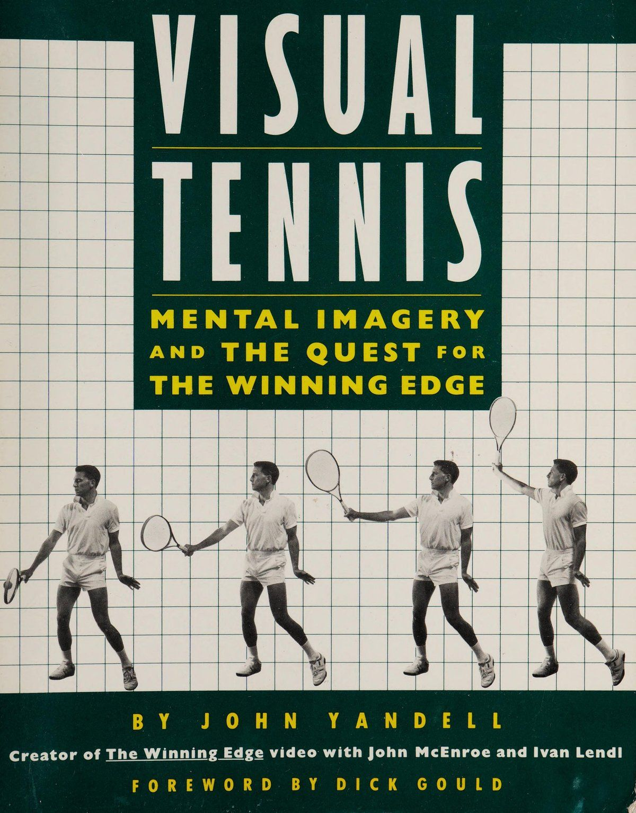
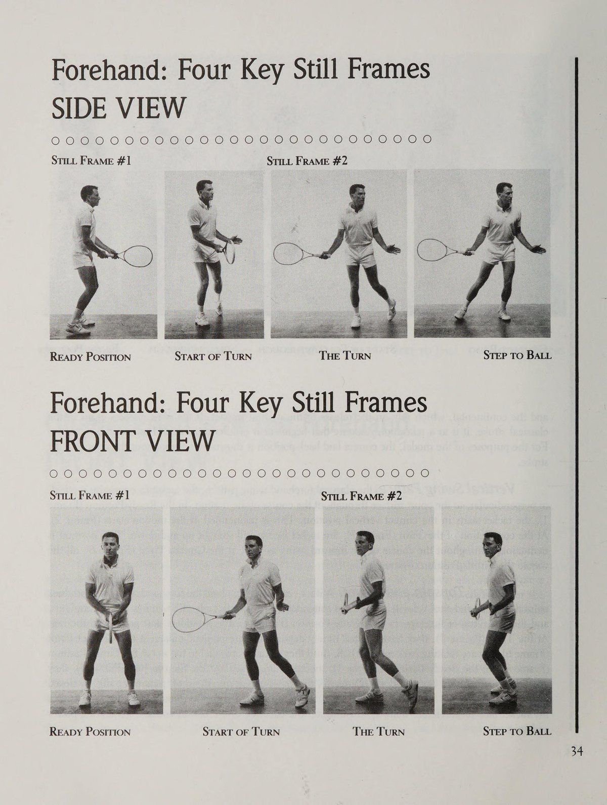
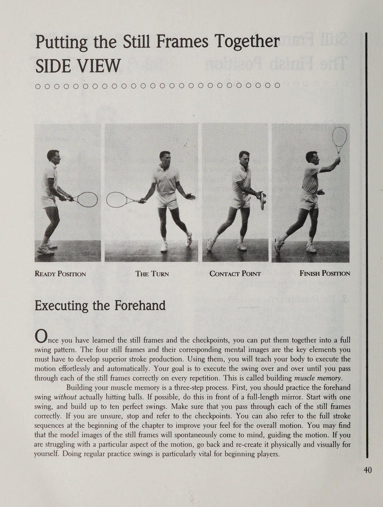
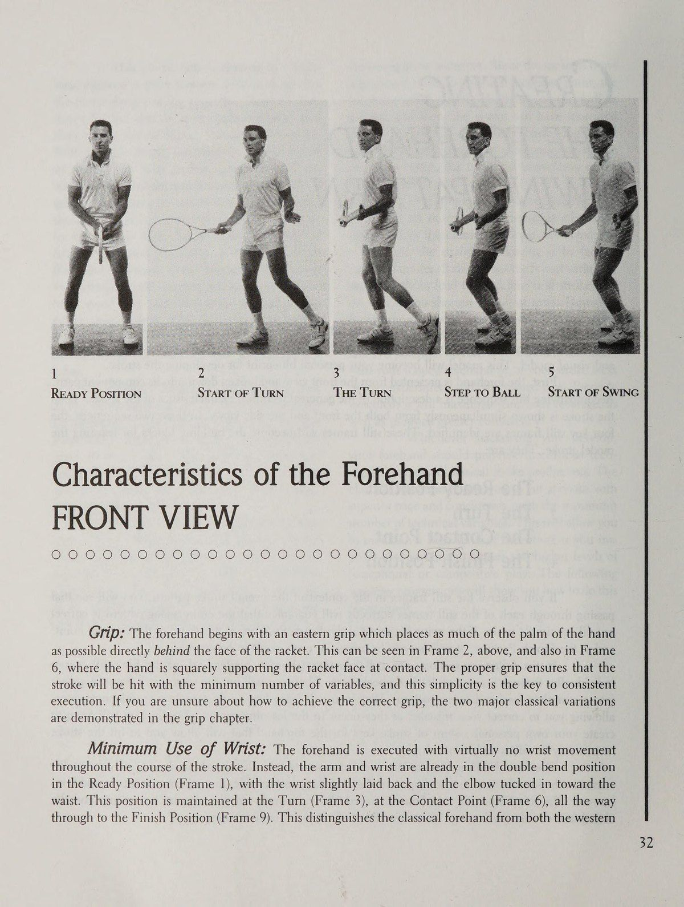
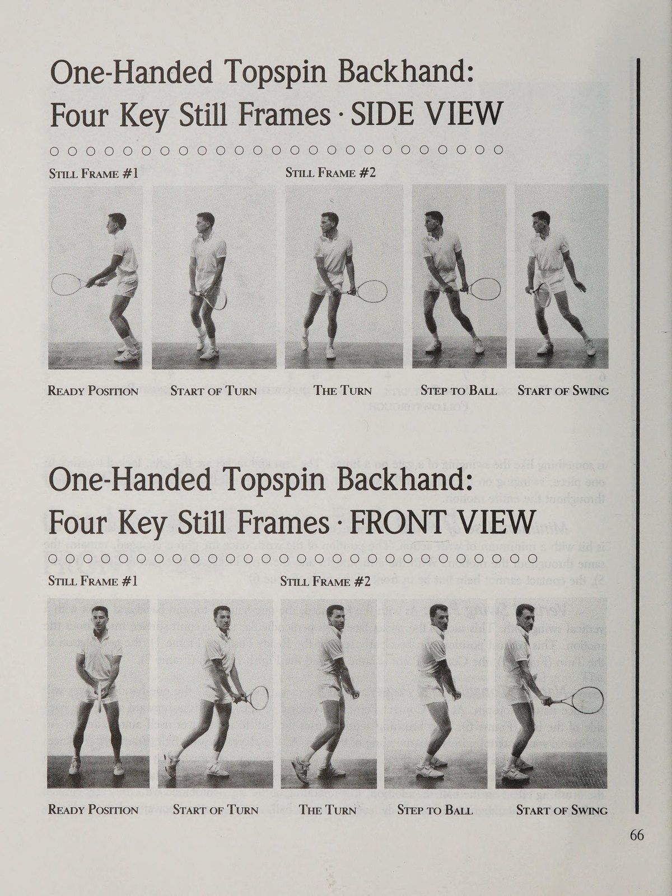
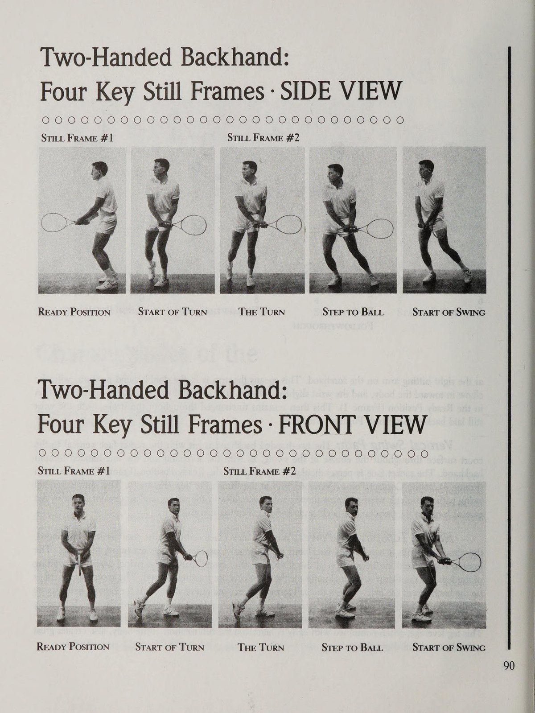
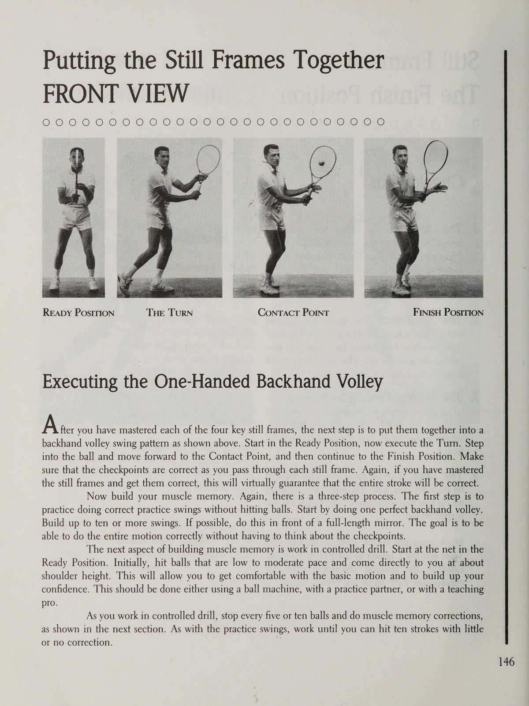
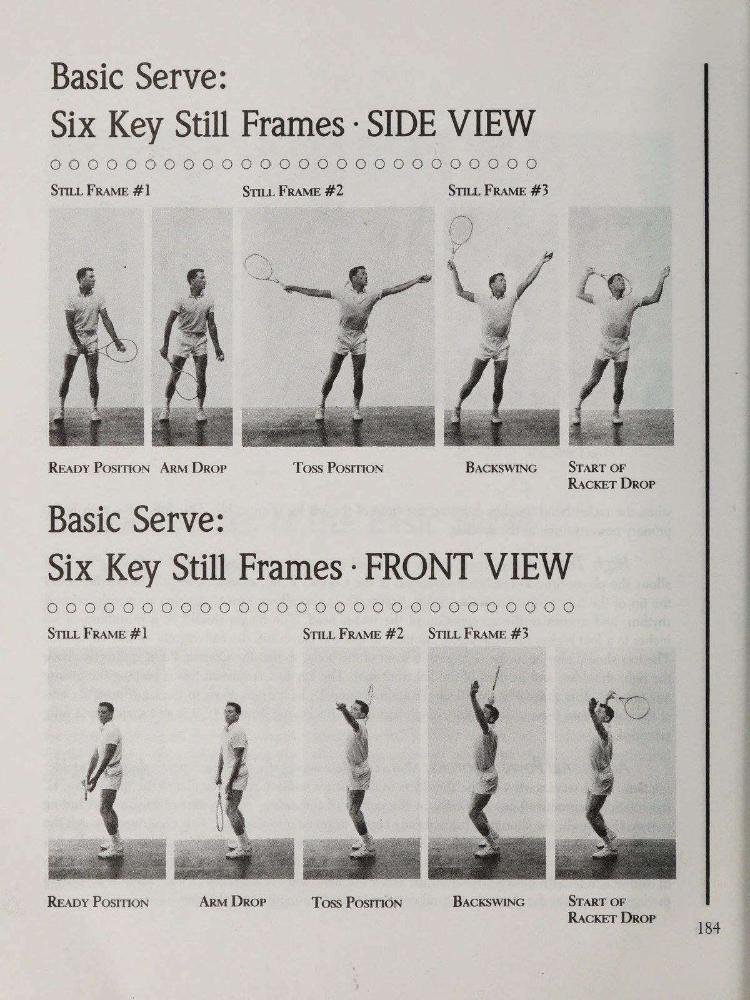
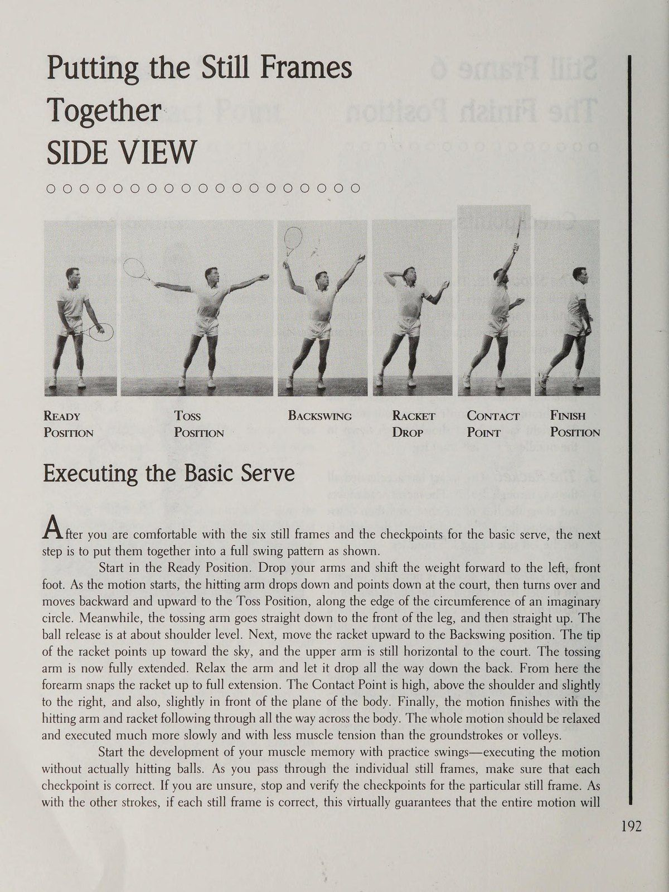

Quần Vợt Thị Giác: Quán Tưởng Tâm Trí & Nghệ Thuật Chinh Phục Đỉnh Cao (Visual Tennis)
Bản dịch Việt ngữ này chỉ dùng cho mục đích học tập cá nhân, phi thương mại. Bản quyền tác phẩm gốc thuộc về tác giả và nhà xuất bản.
Phần I: Khoa Học Hình Ảnh Thần Kinh & Cơ Chế Hoạt Động Của Quán Tưởng Thị Giác
Lời Tựa Từ Dick Gould & Giới Thiệu: Sức Mạnh Tự Nhiên Của Học Tập Thị Giác Foreword by Dick Gould & Introduction: The Spontaneous Power of Visual Learning
Thỉnh thoảng xuất hiện một cuốn sách có nội dung thực sự mới mẻ và thú vị để nói về trò chơi quần vợt. Quần vợt trực quan: Quán tưởng tâm trí (Mental Imagery) và Cuộc tìm kiếm lợi thế chiến thắng là một trong những trang này. Trong những trang này, John Yandell trình bày cho chúng ta một cách tiếp cận mới để học và chơi trò chơi. Visual Tennis dựa trên cái nhìn sâu sắc, hiện đã được nghiên cứu về tâm lý học thể thao ghi lại rõ ràng rằng việc học thể thao là trực quan một cách tự nhiên. Những tay vợt quần vợt luôn học hỏi bằng cách xem những tay vợt giỏi hơn và thường chơi vượt xa trình độ bình thường của họ sau khi làm như vậy. Visual Tennis là một hệ thống giảng dạy hoàn chỉnh dựa trên các kỹ thuật trực quan.
Visual Tennis dạy bạn suy nghĩ về trận đấu của mình theo một phương tiện khác, bằng hình ảnh thay vì bằng lời nói. Trong từng chương riêng lẻ, Yandell cung cấp những mô hình trực quan chi tiết nhất từng được tạo ra cho tất cả các cú đánh cơ bản: cú chạm đất, cú vô lê và cú giao bóng. Mỗi nét vẽ được hiển thị đầy đủ từ cả mặt trước và mặt bên, sau đó được chia nhỏ thành các thành phần chính của nó. Bằng cách nắm vững các hình ảnh chính, học viên học cách tạo ra những nét vẽ vượt trội một cách dễ dàng và tự động. Không giống như nhiều sách hướng dẫn, Visual Tennis bao gồm các mô hình cho cả trái tay một tay và hai tay, đồng thời chỉ cho bạn cách quyết định cái nào phù hợp với mình.
Tuy nhiên, Visual Tennis không chỉ dạy các cú đánh cơ bản. Có lẽ đóng góp quan trọng nhất của nó là chỉ cho tay vợt ở mọi cấp độ cách sử dụng hình ảnh để tạo ra thứ quần vợt tốt nhất của họ dưới áp lực của trận đấu. Để làm được điều này, Yandell sử dụng hiệu quả hệ thống phím bấm. Bằng cách hình dung phím ngay trước khi đánh một cú đánh, tay vợt sẽ kích hoạt việc thực hiện chính xác kiểu đánh, bất kể tình huống trên sân như thế nào.
Có giá trị bổ sung đặc biệt, Yandell cung cấp một so sánh phân tích về ba phong cách chơi chính: lục địa, phương Tây và phương Đông hoặc cổ điển. Anh ấy chỉ ra điểm mạnh và trò chơi cơ bản hoặc bất kỳ sự kết hợp nào của cả hai. vận động viên thực sự học hỏi. tính lưu loát và độ chính xác kỹ thuật. không dựa trên việc học trực quan và do đó không thể nuôi dưỡng khả năng thiên bẩm mạnh mẽ này ở học sinh. Kết quả là phần lớn tay vợt có được trải nghiệm chơi quần vợt được mô tả ở trên chỉ một cách tình cờ, nếu có.
Không có gì đáng ngạc nhiên khi bằng cách quan sát những tay vợt khác, bạn sẽ tiếp thu được điều gì đó từ họ, gần như bằng sự thẩm thấu. Nhưng tại sao điều này lại xảy ra? Câu trả lời liên quan đến bản chất của quá trình học tập. Trên thực tế, tất cả các hoạt động học tập thể thao, bao gồm cả quần vợt, về cơ bản đều là trực quan. Bất kỳ ai đã học ném bóng chày, bóng đá hoặc ném cú nhảy đều có thể nhớ lại việc đã xem và bắt chước người khác.
Thuật ngữ mô tả đúng nhất quá trình lập mô hình này là trực quan hóa. Để định nghĩa nó theo lời của nhà tâm lý học thể thao nổi tiếng Jim Loehr, “Trực quan hóa là suy nghĩ bằng hình ảnh.”! Chúng ta học các chuyển động thể thao một cách tự nhiên bằng cách hình dung ra hình ảnh của chúng trước tiên. Những hình ảnh này sau đó trở thành một loại bản thiết kế tinh thần để cơ thể tuân theo. Cách John McEnroe học chơi quần vợt là một ví dụ điển hình. Như McEnroe mô tả, “Khi tôi học chơi, tôi chỉ xem Rod Laver và cố gắng làm những gì anh ấy đã làm.” Ivan Lendl từng có trải nghiệm tương tự khi còn là một tay vợt trẻ. Anh ấy sẽ chơi tốt hơn nhiều sau những trận đấu cướp bóng dành cho các tay vợt người lớn hàng đầu của Tiệp Khắc. “Ở trên sân rất gần với các tay vợt, tôi nhìn thấy mọi thứ và sau đó tôi sẽ bắt đầu tự mình làm chúng,” anh nói.
Các nhà tâm lý học thể thao đã chứng minh rằng khả năng hình dung có liên quan đến hiệu suất trong hầu hết các môn thể thao được biết đến. Họ đã nghĩ ra các chương trình đào tạo sử dụng các kỹ thuật trực quan trong bóng đá, bóng rổ, bóng chày, điền kinh, trượt tuyết và chơi gôn, đó là một số ví dụ nổi tiếng nhất. Các chương trình này tăng cường một cách có hệ thống quá trình học tập trực quan tự nhiên. Hiện nay, hình dung được thường xuyên đưa vào chương trình đào tạo của các vận động viên hàng đầu thế giới.
Một tổng quan gần đây của các tài liệu khoa học đã kết luận rằng hình dung là một yếu tố đã được chứng minh trong việc cải thiện thành tích thể thao. Mạnh mẽ thế nào? Trong các thí nghiệm đo lường sự cải thiện về kỹ năng thể thao, tổng quan đã kết luận rằng, bản thân sự hình dung, tức là sự hình dung ngay cả khi không luyện tập thể chất, đã tạo ra sự cải thiện có thể đo lường được về hiệu suất của một loạt các kỹ năng vận động.’ Nếu bạn dừng lại để suy nghĩ về nó, thì đây là một kết luận khá đáng ngạc nhiên. Suy luận là những tay vợt quần vợt có thể nâng cao thành công của họ chỉ bằng cách suy nghĩ chính xác (bằng hình ảnh) về môn thể thao của họ, không phụ thuộc vào thời gian luyện tập trên sân. Nghiên cứu kết luận rằng sự kết hợp giữa luyện tập thường xuyên và hình dung là chìa khóa cho sự phát triển toàn bộ tiềm năng của vận động viên.
Mặc dù hiệu quả của việc hình dung đã được chứng minh trong nghiên cứu và việc huấn luyện bằng hình ảnh đã trở thành một khía cạnh đã được thiết lập của các môn thể thao Olympic và chuyên nghiệp, cuốn sách này là một trong những chương trình đầu tiên cung cấp phương pháp huấn luyện tương tự cho các vận động viên giải trí và thi đấu dưới cấp độ thế giới. Mục đích của nó là thiết lập một công nghệ giảng dạy quần vợt dựa trên quá trình học tập trực quan.
Năm 1985, tôi cộng tác với John McEnroe và Ivan Lendl để tạo ra The Winning Edge, một video về quần vợt cũng sử dụng các nguyên tắc trực quan. Trong video, McEnroe và Lend! cung cấp các mô hình trực quan cho các cú đánh và kiểu đánh. Đầu tiên, họ chia cú đánh hoặc kỹ thuật thành các thành phần chính của nó. Sau đó, họ tái tạo lại chuyển động thành một tổng thể linh hoạt. Người xem, bằng cách hình dung khi xem video, sẽ chuyển các hình ảnh đó vào quán tưởng tâm trí (Mental Imagery) của mình. Sau đó, những hình ảnh này trở thành cơ sở để anh ấy hình thành các cú đánh của riêng mình.' Cuốn sách này vượt xa video ở chỗ nó không chỉ chia nhỏ từng kiểu đánh thành các phần cấu thành mà còn cung cấp một loạt điểm kiểm tra chi tiết để giúp tay vợt quần vợt biến mô hình trực quan của từng cú đánh thành một chuyển động vật lý chính xác hơn. Những điểm kiểm tra này cho phép học sinh đánh giá mức độ tuân thủ mô hình của họ một cách thường xuyên, tạo cơ sở để thực hiện cái được gọi là “điều chỉnh trí nhớ cơ bắp (Muscle Memory)”. Việc sửa lỗi cho phép bất kỳ tay vợt nào sửa chữa những sai lầm của mình khi chúng thực sự xảy ra, trước khi chúng có thể ăn sâu vĩnh viễn vào kiểu đánh. Được phát triển bởi huấn luyện viên quần vợt Stanford, Dick Gould và cộng sự Tom Chivington, trí nhớ cơ bắp (Muscle Memory) là một trong những kỹ thuật mạnh mẽ nhất từng được phát minh để sửa chữa các sai sót kỹ thuật trong quá trình thực hiện cú đánh. Quá trình này được giải thích chi tiết cho từng nét trong từng chương riêng lẻ. thất bại là chuyển dữ liệu thô thành công nghệ giảng dạy thực sự hiệu quả. Nói một cách đơn giản, cách tiếp cận giảng dạy của họ bắt đầu với giả định sai lầm rằng các mệnh lệnh bằng lời nói hoặc “mẹo” có thể được sử dụng thành công để dạy các chuyển động thể chất. Sự thật là họ không thể. Trong tình huống bài học điển hình được mô tả ở trên, học sinh cố gắng áp dụng một mẹo chẳng hạn như “giữ chắc cổ tay” cho cú thuận tay của mình. Nhưng việc tập trung vào thông điệp bằng lời nói sẽ dẫn đến một phản ứng cơ học và sự cô lập của một nhóm cơ mà không có khái niệm về mối liên hệ giữa “đầu” với cú đánh nói chung. Khi học trò không thành công trong việc cải thiện cú đánh, anh ta thường tự trách mình vì không tiến bộ và kết luận rằng đơn giản là anh ta thiếu khả năng đánh bóng tốt. Nhiều chuyên gia giảng dạy trong suốt sự nghiệp của họ nghĩ rằng tình huống được mô tả ở trên là bình thường và không bao giờ đặt câu hỏi về tính kém hiệu quả của phương pháp đánh đầu tennis.
Nhưng các chuyên gia giảng dạy khác đã phản ứng với trải nghiệm này theo một cách khác. Thay vì chỉ đơn giản chấp nhận sự vô ích của phương pháp tip tennis, họ đã hoàn toàn bác bỏ nó để ủng hộ phương pháp giảng dạy thứ hai, cái mà tôi gọi là trường phái “thần bí”. Trường phái thần bí đáp lại sự thiếu sót của việc giảng dạy bằng lời nói bằng cách từ bỏ hoàn toàn những lời khuyên và phân tích. Thay vào đó, nó tập trung vào cái gọi là “trò chơi nội tâm” hay cuộc đối thoại nội tâm xảy ra khi bạn chơi quần vợt.
Trường phái thần bí dạy rằng chính cuộc đối thoại nội tâm của tay vợt, về nỗi sợ hãi và sự nghi ngờ của bản thân, hoặc về kỹ thuật đã ngăn cản học sinh học cách đánh bóng. Trọng tâm, theo quan điểm của trường phái thần bí, không nên hướng vào trong mà nên hướng ra ngoài, hoàn toàn hướng vào quả bóng. Vai trò của người hướng dẫn là giúp học sinh đạt được “sự kết hợp thần bí” với quả bóng.
Theo phiên bản cực đoan của trường phái này, bằng cách xem bóng và thực sự không làm gì khác, bất kỳ ai cũng có thể phát triển những cú đánh xuất sắc. Cơ thể con người đã “biết” chơi tennis. Nghệ thuật giảng dạy là giúp học sinh giải tỏa tâm trí để quần vợt có thể “diễn ra”. chứa đựng một sự thật mạnh mẽ về trò chơi quần vợt, đó là, việc tập trung vào bóng là một “khía cạnh quan trọng của việc học và chơi tốt”. Cũng đúng khi chỉ ra rằng các mệnh lệnh bằng lời nói không nhất thiết dẫn đến việc cải thiện kỹ thuật thực hiện cú đánh. Nó xác định chính xác vai trò tiêu cực mà cuộc đối thoại nội tâm của tay vợt có thể đóng vai trò trong việc ngăn cản một môn quần vợt tốt. Nó cũng ủng hộ việc xem kỹ thuật của những tay vợt vượt trội. Nhưng xét theo bất kỳ thước đo khách quan nào, cách tiếp cận này không bao giờ dẫn đến việc phát triển khả năng tạo ra cú đánh vững chắc cho phần lớn tay vợt. Bởi vì nó không cung cấp bất kỳ thông tin nào về cơ chế sinh học của việc đánh bóng tennis, nên về tổng thể, kết quả của nó kém hơn ngay cả so với trường dạy mẹo về quần vợt. Những người hưởng lợi thực sự của trò chơi nội tâm là những tay vợt trình độ cao, đã có cú đánh phát triển tốt và sử dụng những hiểu biết sâu sắc của nó để cải thiện các khía cạnh tinh thần khi chơi của họ. + Vấn đề chung với cả cách tiếp cận thần bí và mẹo quần vợt là không ai cung cấp công nghệ giảng dạy dựa trên quá trình học tập thể thao thực sự diễn ra, tức là bằng sự đồng hóa trực quan. McEnroe không phải là tay vợt trẻ đầu tiên hoặc cuối cùng học hỏi bằng cách sao chép những nhà vô địch vĩ đại. Trên thực tế, sự gia tăng của nhiều phong cách chơi khác nhau giữa những tay vợt cấp dưới và giải trí phản ánh sự thay đổi phong cách của những tay vợt ở đỉnh cao của trò chơi chuyên nghiệp. Sự thống trị của Jimmy Connors và Chris Evert trong những năm 1970 đã khiến trái tay bằng hai tay trở thành một khía cạnh lâu dài của trò chơi. Bjorn Borg đã thực hiện chuyển động sang bóng xoáy lên nặng và lối chơi phòng thủ, cơ bản. Khi John McEnroe truất ngôi Borg, phong cách giao bóng và vô lê đã trở nên phổ biến. Diễn biến này diễn ra song song ở trận đấu dành cho nữ bằng lối chơi tấn công của Martina Navratilova. Khi Ivan Lendl và Boris Becker bước lên đỉnh cao quần vợt thế giới, bất ngờ cú trái tay một tay quay trở lại.
Không có lý do gì để phủ nhận rằng quần vợt là một môn thể thao đầy thử thách. Để chơi quần vợt giỏi, bạn phải thực hiện nhiều chuyển động vật lý phức tạp với độ chính xác nhất quán. Những tay vợt trẻ tài năng nhất làm điều này một cách tự động và vô thức, nhưng phần lớn các tay vợt thiếu kỹ năng học tập trực quan đặc biệt cần thiết để tự mình thực hiện điều này. Thay vào đó, họ bị giới hạn ở những khoảnh khắc tỏa sáng không thường xuyên, chẳng hạn như sau khi xem kỹ thuật vượt trội của người khác. Để thực hiện một cách nhất quán, họ cần được giúp đỡ để trau dồi quá trình học tập trực quan, tự nhiên. Nhưng hầu hết các chuyên gia giảng dạy, mặc dù có ý định chân thành và nỗ lực anh dũng, nhưng không thể giúp đỡ họ, bởi vì hai trường phái giảng dạy chủ yếu không dựa trên bản chất thực sự của việc học thể thao. Ở mức độ mà hầu hết các bài học truyền thống đều có hiệu quả, đó là do học sinh tự làm mẫu theo nét vẽ của giáo viên hoặc vì họ có khả năng tự nhiên để chuyển thông tin bằng lời nói thành hình ảnh trực quan.
Visual Tennis được thành lập dựa trên hơn mười năm giảng dạy, huấn luyện và nghiên cứu. Với tư cách là một chuyên gia giảng dạy, tôi đã dạy hơn mười nghìn giờ bài học sử dụng các nguyên tắc đào tạo trực quan. Tôi đã thấy nó mang lại lợi ích cho những tay vợt thi đấu ở cấp độ chuyên nghiệp, ở trường đại học, trong các giải đấu cấp cơ sở, trong các trận đấu cấp câu lạc bộ, giải đấu câu lạc bộ và trong các trận đấu giải trí giao hữu.
Ngoài kinh nghiệm của bản thân tôi trong nhiều năm với việc học trực quan một cách tự phát, yếu tố thứ hai trong nguồn gốc phương pháp tiếp cận của tôi bắt nguồn từ cuối những năm 1970, khi tôi còn là sinh viên tại Stanford. Trong thời gian đó, lần đầu tiên tôi gặp huấn luyện viên quần vợt nam Dick Gould và tìm hiểu phương pháp giảng dạy của ông ấy, đồng thời làm việc với tư cách là một trong những huấn luyện viên quần vợt giải trí của ông ấy. Dick được biết đến là huấn luyện viên huyền thoại của mười đội vô địch đại học nam Stanford. Điều ít được công bố rộng rãi hơn là ông cũng điều hành một trong những chương trình giảng dạy lớn nhất và thành công nhất trong nước, dạy tay vợt ở mọi cấp độ, từ người mới bắt đầu đến tay vợt cấp dưới được xếp hạng quốc gia. Theo như tôi biết đấy, Dick và cộng sự của anh ấy, Tom Chivington, huấn luyện viên quần vợt của Đại học Foothill và huấn luyện viên của vận động viên chuyên nghiệp Brad Gilbert, đã rất nhiều lần với tư cách là một vận động viên. tay vợt thành công ở mọi cấp độ. có thể cao hơn đáng kể so với thực tế.
Mặc dù có sự đầu tư lớn vào các bài học, phòng khám, trại tennis, vợt thân rộng, v.v., nhưng có quá nhiều tay vợt có những điểm không nhất quán về kỹ thuật làm hạn chế sự phát triển của họ và khiến họ liên tục thất vọng. Việc hầu hết các tay vợt không thể tiến bộ không thể đổ lỗi cho bản thân các tay vợt hoặc nỗ lực của người hướng dẫn họ. Đúng hơn, nó nằm ở bản chất của việc hướng dẫn quần vợt.
Tất nhiên có sự khác biệt về thể chất giữa các tay vợt—một số có khả năng phối hợp tay-mắt tốt hơn hoặc mạnh hơn, nhanh hơn hoặc quyết tâm hơn. Những yếu tố này có thể đặt ra một số giới hạn trên cho sự phát triển của tay vợt, nhưng chúng thường không có tác dụng trong việc quyết định các trận đấu. Điều này là do kỹ thuật có xu hướng xác định kết quả của hầu hết các trận đấu dưới trình độ chơi cao nhất. Nhưng kỹ thuật vượt trội là thứ mà hầu như mọi tay vợt đều có thể phát triển. Vấn đề là tiếp cận trò chơi với những nguyên tắc giảng dạy phù hợp và nỗ lực áp dụng chúng vào thực tế.
Bạn có thể đạt được kết quả gì khi sử dụng hệ thống được trình bày ở đây? Tôi nhận thấy rằng bất kỳ tay vợt câu lạc bộ nào tuân theo các nguyên tắc trong cuốn sách này đều có thể học cách thi đấu ở cấp độ “A”, và bất kỳ tay vợt cấp dưới nào cũng có thể cải thiện tối thiểu mười bậc trong bảng xếp hạng khu vực hoặc đạt được thứ hạng lần đầu tiên. Thông thường, điều này có thể được hoàn thành trong khoảng thời gian một năm hoặc ít hơn, nếu tay vợt sẵn sàng cống hiến hết mình cho quá trình này.
Có mối quan hệ nhân quả giữa việc sử dụng hình ảnh trực quan và việc thực hiện đúng các động tác vật lý. Nếu bạn làm theo chương trình được nêu trong cuốn sách này, bạn sẽ có thể lặp lại điều kỳ diệu mà hầu hết tay vợt quần vợt chỉ trải qua một cách tình cờ. Bạn sẽ học cách chơi theo phong cách cổ điển (Classical Style) phù hợp về mặt kỹ thuật, dễ dàng về mặt thể chất và có tính thẩm mỹ. Bạn sẽ phát triển khả năng đánh với tốc độ, độ sâu, độ xoáy và kiểm soát bóng chính xác. Nói tóm lại, bạn sẽ học cách chơi thứ quần vợt hay nhất trong đời mình trong suốt quãng đời còn lại.

Bìa sách Quần Vợt Thị Giác (Visual Tennis) — Khám phá phương pháp học tập qua hình ảnh não bộ và quán tưởng tâm trí của John Yandell.
Visual Tennis: Mental Imagery and the Quest for the Winning Edge by John Yandell.
Cơ Chế Hoạt Động Của Quán Tưởng: Xây Dựng Bản Đồ Não Bộ & Sửa Lỗi Trí Nhớ Cơ Bắp How Visualization Works: Neurological Mapping & Muscle Memory Correction
quá tốt, hoặc là người chiến thắng trong những tình huống bất khả thi hoặc các cú đánh được tung ra với vận tốc nhanh hơn nhiều so với mức thực sự cần thiết để giành điểm.
Nếu bạn quan sát những tay vợt hàng đầu, bạn sẽ nhận thấy họ hiếm khi mắc những lỗi như thế này. Hầu hết các điểm trong quần vợt chuyên nghiệp đều là thắng chứ không phải thua. Chúng được quyết định bởi những người chiến thắng hoặc những cú đánh ép buộc, không phải những lỗi không thể bắt buộc. Điều này chủ yếu là do tính nhất quán đáng chú ý trong kiểu đánh của những tay vợt này. Trong quần vợt chuyên nghiệp, bạn sẽ thấy hết cú đánh này đến cú đánh khác được thực hiện với độ chính xác kỹ thuật không thể chê vào đâu được, bất chấp vận tốc bóng thường vượt quá 100 dặm một giờ.
Theo ghi nhận của họ, các tay vợt câu lạc bộ và các tay vợt giải đấu cấp cơ sở thường nhận ra rằng chính việc thiếu các cú đánh ổn định đã gây ra lỗi và hạn chế thành tích của họ. Họ cố gắng khắc phục điều này thông qua các bài học, nhưng, quá thường xuyên, không đạt được thành công rõ rệt. Các bài học thường không tạo ra kỹ thuật đánh bóng tốt vì các trường dạy tennis chính không áp dụng quá trình học tập trực quan.
Đào tạo trực quan mang lại cho tay vợt quần vợt cơ hội học cách đánh bất kỳ cú đánh nào trong trò chơi với độ chính xác kỹ thuật cao và thực hiện điều đó một cách nhất quán dưới áp lực của cuộc chơi cạnh tranh. Cho đến khi bạn cảm thấy hài lòng khi đánh những quả bóng ngắn để giành chiến thắng một cách thường xuyên, hoặc chuyền xuống biên một cách nhất quán ở phía trái tay, hoặc kết hợp một loạt các điểm giao bóng và vô lê vượt trội, bạn không thể thực sự đánh giá cao sức mạnh và giá trị của việc rèn luyện trực quan.
Các chương tiếp theo phác thảo một cách tiếp cận để đánh tất cả các cú đánh cơ bản: các cú chạm đất, các cú vô lê và giao bóng. Trong chương trái tay, có các phần về cách đánh bằng một hoặc hai tay, cũng như thảo luận về cách xác định cú đánh nào bạn nên phát triển. Các chương được thiết kế để sử dụng cùng nhau hoặc độc lập để tay vợt có thể thực hiện một hoặc nhiều cú đánh riêng lẻ.
Mỗi chương bắt đầu bằng cách cung cấp cho tay vợt một cú đánh mẫu. Mô hình này có cả thành phần trực quan và vật lý. Để học một nét nhất định, cần phải nắm vững cả khía cạnh hình ảnh và vật lý của mô hình. Điều này có nghĩa là học cách hình dung một cú đánh hoàn hảo về mặt kỹ thuật, đồng thời vung vợt theo hình ảnh. Vai trò của mô hình trực quan rất quan trọng vì một lý do đơn giản: nếu bạn không thể hình dung chính mình vung vợt một cách chính xác trong đầu, thì bạn sẽ không thể vung vợt chính xác trên sân. Học một mô hình tinh thần rõ ràng sẽ cung cấp cho cơ thể thông tin cần thiết để thực hiện cú đánh và đánh theo cách giống nhau trên mọi quả bóng.
Trong mỗi chương, bạn sẽ học cách làm chủ đồng thời các mô hình trực quan và vật lý. Để làm điều này, trước tiên các nét sẽ được chia thành nhiều phần thành phần, cái mà tôi gọi là “khung hình tĩnh (Still Frame)”. Bằng cách đặt bốn khung hình tĩnh (Still Frame) lại với nhau, tay vợt học cách thực hiện cú xoay người một cách vật lý. Đồng thời, anh học cách hình dung cú swing trong tâm trí mình. Mục tiêu là để hai mô hình tương ứng với nhau một cách chính xác nhất có thể.
Lúc đầu, quy trình chia các nét thành các khung tĩnh và các điểm kiểm tra có vẻ hơi phức tạp và khó học. Trên thực tế, về lâu dài thì điều ngược lại mới đúng. Nghe có vẻ đơn giản hơn khi chỉ nói “Swing từ thấp đến cao ở cú thuận tay” và để nguyên như vậy, nhưng một tuyên bố như thế này thực sự có ý nghĩa gì? Vợt có thể ở ít nhất bốn hoặc năm vị trí khác nhau trong lượt, tất cả đều có thể được coi là “thấp”. Nhưng cái nào, nếu có, sẽ đúng? Chính xác thì đầu vợt hướng vào đâu? Nó quay lại bao xa? Cánh tay ở vị trí nào? Vai và chân ở đâu?
Mục đích của các khung tĩnh và các điểm kiểm tra là để xác định chính xác vị trí của thân và vợt ở mỗi giai đoạn của cú đánh. Về lâu dài, điều này sẽ dẫn tới sự đơn giản chứ không gây nhầm lẫn. Mục đích là sử dụng các điểm kiểm tra để tìm hiểu cảm giác thực sự của các vị trí chính xác về mặt thể chất và quan trọng hơn là chúng trông như thế nào trong mắt tâm trí. Điều này được thực hiện thông qua một loạt các phép tính gần đúng, dần dần, liên tiếp, làm việc với các điểm kiểm tra cho đến khi mẫu nét của mô hình trở nên tự nhiên. Mục đích không phải là ghi nhớ ngay lập tức một danh sách dài thông tin về mỗi cú đánh mà là để tạo ra trí nhớ sâu sắc về các mẫu cú đánh kỹ thuật xuất sắc. Các điểm kiểm tra chỉ nhằm mục đích giúp bạn xem và cảm nhận các kiểu nét chính xác thực sự như thế nào. Sử dụng đúng cách, điều bạn nên nhớ không chỉ là bản thân các điểm kiểm tra mà còn là cảm giác và hình ảnh của cú đánh khi các điểm kiểm tra chính xác. Nếu bạn dành thời gian làm việc với các điểm kiểm tra cho đến khi chúng cảm thấy thoải mái — điều đó sẽ mang lại nhiều lợi ích hơn cho chất lượng quần vợt của bạn.
Sau khi học các khung tĩnh và ghép chúng lại với nhau thành các cú vung thực hành, khía cạnh thứ hai của việc phát triển cú đánh kiểu mẫu là đánh bóng trong cái được gọi là bài tập có kiểm soát. Nguyên tắc cơ bản của luyện tập trực quan là không thể học hoặc sửa các kiểu đánh trong thi đấu cạnh tranh, hoặc thậm chí trong một cuộc đấu bình thường. Luyện tập có kiểm soát có nghĩa là tay vợt sử dụng đối tác, chuyên gia giảng dạy hoặc nếu có thể, kỹ năng chơi bóng. vị trí của người tượng vào đúng vị trí. quá trình chỉnh sửa là xem quần vợt của bạn trên video. Bạn có thể thực hiện điều này bằng cách sử dụng máy quay video tại nhà hoặc tốt hơn là làm việc với một chuyên gia sử dụng rộng rãi video trong quá trình giảng dạy của anh ấy. Không có mô tả bằng lời nói nào có thể thay thế được phản hồi trực tiếp bằng hình ảnh mà video cung cấp. Nó tạo ra sự rõ ràng mà không thể đạt được bằng bất kỳ cách nào khác. Nghiên cứu đã chỉ ra rằng hầu hết việc học thể thao đều tăng tốc nhanh chóng khi có thêm video. Đối với một số sinh viên, tôi thấy rằng việc xem video thường xuyên về bản thân họ là khía cạnh mạnh mẽ nhất trong toàn bộ quá trình đào tạo hình dung.
Mục tiêu lâu dài của quá trình rèn luyện trực quan là tạo ra một cú đánh chắc chắn và nhất quán đến mức bạn có thể thực hiện nó gần như vô thời hạn, đầu tiên là trong các bài tập có kiểm soát, sau đó là trong các cuộc đánh bóng, và cuối cùng, dưới áp lực của lối chơi cạnh tranh. Visual Tennis hướng dẫn mọi tay vợt cách thực hiện điều này bằng cách giúp anh ta phát triển hệ thống phím đánh cá nhân.
Phím nét là một khía cạnh của mẫu nét tổng thể, hay chính xác hơn là hình ảnh của một khía cạnh của nét. Bằng cách giữ hình ảnh chiếc chìa khóa trong tâm trí khi đánh bóng, tay vợt sẽ kích hoạt toàn bộ kiểu đánh. Chìa khóa này cung cấp cho tay vợt một kế hoạch chi tiết trong đầu để thực hiện cú đánh. Được phát triển đúng cách, hệ thống phím cung cấp cho tay vợt một phương pháp tự động, đáng tin cậy để thực hiện đúng mẫu cú đánh kỹ thuật.
Phím nét có thể là bất kỳ phần nào của hình ảnh của nét tổng thể. Nó có thể là hình ảnh của các trạm kiểm soát. Ví dụ, về các cú chạm đất, tôi nhận thấy rằng điểm mấu chốt hiệu quả nhất là một số biến thể của hình ảnh về tư thế kết thúc (Finish Position). Chìa khóa cũng có thể là một hình ảnh chuyển động, một loại phim nhỏ của toàn bộ nét vẽ. Trong các chương tiếp theo, bạn sẽ học cách phát triển và thử nghiệm các phím khác nhau, cách xác định phím nào hiệu quả hoặc “hoạt động” trong trò chơi của bạn. Phần cuối cùng hướng dẫn bạn cách tạo biểu đồ từ khóa kích hoạt cú đánh (Stroke Key) vẽ của riêng mình cho mỗi nét vẽ. Việc sử dụng từ khóa kích hoạt cú đánh (Stroke Key) cho phép bất kỳ tay vợt nào cũng có thể khắc phục ngay cả những vấn đề khó khăn về chuẩn bị và tính thời gian, những loại vấn đề đặc biệt khó thay đổi trong các bài học truyền thống.
Bởi vì các từ khóa kích hoạt cú đánh (Stroke Key) là hình ảnh nên chúng tránh được tình trạng tê liệt và nhầm lẫn do từ ngữ và khẩu lệnh gây ra. Thực tế là quần vợt diễn ra quá nhanh để có thể nghĩ bằng lời. Nhưng hình ảnh thuần túy có thể chảy qua tâm trí với tốc độ mà cơ thể bạn thực sự di chuyển trên sân. Các phím đánh là phương tiện hoàn hảo để hướng dẫn sự tương tác phức tạp giữa tâm trí và cơ thể cần thiết để chơi quần vợt tuyệt vời.
Ngoài ra còn có một lợi ích bổ sung lớn liên quan. Việc phát triển và sử dụng hệ thống phím bấm cá nhân sẽ cung cấp liều thuốc giải độc cho hiện tượng “nghẹt thở” trong thể thao phổ biến. Phím đột quỵ có thể loại bỏ tình trạng nghẹt thở vì chúng giúp tay vợt giữ tâm trí tập trung ngay cả trong những tình huống rất căng thẳng. Tập trung vào một phím bấm đang hoạt động sẽ ngăn chặn sự xâm nhập của những suy nghĩ xao lãng và nỗi sợ hãi. Sự xâm nhập vào cuộc đối thoại bằng lời nói nội bộ không mong muốn này là nguyên nhân gây ra những lỗi không thể thực hiện được trong những pha bóng dễ dàng. Thông thường, khi đối mặt với một cú đánh mở, một tay vợt tự nhủ điều gì đó như “Tôi phải thực hiện cú đánh này” hoặc “Những tay vợt giỏi luôn thực hiện những cú đánh này”, v.v. Trớ trêu thay, kiểu kỳ vọng này tạo ra quá nhiều áp lực đến mức nó gần như đảm bảo rằng tay vợt sẽ mắc phải lỗi mà anh ta hết sức muốn tránh.
Bước đầu tiên để vượt qua nỗi sợ hãi này thường chỉ đơn giản là thừa nhận nó tồn tại. Rất nhiều tay vợt phủ nhận rằng họ sợ hãi và do đó không có khả năng giải quyết vấn đề. Điều quan trọng khi thi đấu mang tính cạnh tranh, bất kể ở cấp độ nào, phải chấp nhận nỗi sợ hãi tự nhiên đi kèm với áp lực và cho phép bản thân bỏ lỡ những cú đánh dễ dàng cho đến khi bạn cảm thấy thoải mái trong tình huống đó. Nếu bạn sẵn sàng làm điều này, nỗi sợ hãi sẽ giảm dần đến mức có thể kiểm soát được. | Ngoài việc phát triển các kiểu đột quỵ, điều chỉnh trí nhớ cơ bắp (Muscle Memory) và tạo hệ thống chìa khóa cá nhân của riêng bạn, khía cạnh cuối cùng của việc rèn luyện hình dung là thực hiện hệ thống thị giác. công việc hóa ngoài sân đấu. Như đã lưu ý ở trên, các nghiên cứu đã chứng minh giá trị của hình thức luyện tập tinh thần này trong việc cải thiện thành tích thể thao. Trên thực tế, hình dung có tác dụng mạnh mẽ đến mức nó có thể cải thiện hiệu suất ngay cả khi không cần luyện tập thể chất. Tuy nhiên, lợi ích tối đa sẽ đạt được khi sử dụng kết hợp việc rèn luyện tinh thần và thể chất.
Quy trình thực hiện hình dung bên ngoài sân đấu rất đơn giản: ngồi xuống và nhắm mắt lại. Một số người thích thực hiện công việc trực quan trong môi trường yên tĩnh hoặc thậm chí tối, những người khác lại làm việc đó với âm nhạc. Các huấn luyện viên Đông Âu yêu cầu các vận động viên của họ nằm xuống, nghe nhạc cổ điển và sau đó hình dung ra những màn trình diễn hoàn hảo trong các môn thể thao cá nhân của họ. Dù nằm hay nghe nhạc, điều quan trọng là phải thư giãn, thoải mái và có động lực. Nếu bạn gặp khó khăn khi ngồi yên, bạn có thể thực sự đứng dậy và vung vợt trong khi thực hiện việc hình dung.
Bắt đầu với một cú đánh, hãy xem bản thân thực hiện nó một cách hoàn hảo, theo các mẫu được trình bày trong từng chương riêng lẻ. Cung cấp cho hình ảnh càng nhiều chi tiết càng tốt. Hãy thử nhìn toàn bộ cơ thể và vợt của bạn. Xem tên thương hiệu trên vợt, giày tennis, quần áo tennis, v.v. Hãy thử hình dung bằng màu sắc nếu bạn thường không làm như vậy. Hình dung cú swing ở các tốc độ khác nhau. Bắt đầu với chuyển động chậm và dần dần tăng dần theo tốc độ vung vợt của bạn khi chơi thực tế. Thêm âm thanh của quả bóng đập vào giữa điểm ngọt. Bây giờ hãy chuyển sang hệ thống phím bấm cá nhân mà bạn đã nghĩ ra cho cú đánh. Tập trung vào từng phím riêng lẻ trong bối cảnh của hành trình tổng thể. Hình dung từng phím của bạn. Bây giờ lặp lại quy trình tương tự cho mỗi nét khác của bạn.
Khi bạn thăng tiến với tư cách là một tay vợt, bạn có thể bắt đầu hình dung các kết hợp cú đánh cũng như các cú đánh cơ bản. Hãy tưởng tượng bản thân bạn đánh một cú thuận tay, sau đó là một cú trái tay, rồi một cú thuận tay, v.v. Sau đó, tập hợp các điểm tưởng tượng lại với nhau—một cú giao bóng theo sau là một loạt các cú đánh này thắng.) bằng cách hình dung ra kỹ thuật thiếu sót.
Smith từ Sybervision. Ghi hình các trận đấu truyền hình là nguồn hình ảnh bổ sung vô tận.
Ngoài ra, tôi còn tạo phiên bản video của Visual Tennis. Video này cung cấp các mô hình rõ ràng về các cú đánh mà các video hướng dẫn khác không có. Chúng bao gồm cú thuận tay vung thẳng về phía sau, cú đánh trái tay bằng hai tay, cú vô lê trái tay bằng hai tay và cú giao bóng cơ bản. Mặc dù cả cuốn sách và video đều được thiết kế để sử dụng độc lập nhưng hầu hết học sinh sẽ thấy việc sử dụng chúng cùng nhau sẽ hiệu quả hơn.
Cuối cùng, tôi khuyên mỗi học sinh nên tạo video mô hình trực quan của riêng mình nếu có thể. Một lần nữa, hãy sử dụng máy quay video tại nhà hoặc làm việc với chuyên gia của bạn để ghi lại một loạt các cú vung gậy thực hành hoàn hảo. Thực hiện một bức tượng ở cuối mỗi cú xoay để nhấn mạnh các điểm kiểm tra. Thực hiện đóng băng hoàn hảo các khung hình của từng khía cạnh của nét vẽ. Bây giờ hãy thực hành thực hiện các mô hình đánh bóng trong máy khoan có điều khiển, tốt nhất là với máy đánh bóng.
Một tay vợt trung bình nên luyện tập trực quan bao nhiêu khi rời khỏi sân? Đây là câu hỏi mà mỗi tay vợt phải tự trả lời dựa trên kinh nghiệm của bản thân. Nghiên cứu cho thấy rằng tỷ lệ tối ưu có thể lên tới một giờ hình dung cho mỗi ba giờ dành cho sân đấu. Nếu tỷ lệ này là chính xác, điều đó có nghĩa là tay vợt bình thường gần như không thể hình dung quá nhiều.
Khi bắt đầu, hãy thử một buổi thực hành trực quan cho mỗi buổi chơi thực tế. Ví dụ: nếu bạn chơi ba lần một tuần, hãy thực hiện ba buổi hình dung. Hãy thử thực hiện hình dung thuần túy ở hai phần và xem video ở phần còn lại. Bắt đầu với năm đến mười phút hình dung thuần túy và mười đến mười lăm phút video. Nếu muốn, bạn có thể tăng thời lượng các phiên học của mình từ đó. Bằng cách thử nghiệm và làm việc với chuyên gia của bạn, hãy tìm ra những cách kết hợp giúp bạn luôn hứng thú và nâng cao chất lượng cũng như sự thích thú của bạn đối với trò chơi.
Phong Cách Quần Vợt Cổ Điển: Năm Nguyên Tắc Cốt Lõi Tạo Nên Sự Chuẩn Xác & Mượt Mà The Classical Style: Five Fundamentals of Precision, Fluidity and Power
Visual Tennis dựa trên việc tạo ra một phong cách rút ra từ bất kỳ phong cách nào trong ba phong cách chiếm ưu thế theo phong cách phương đông hoặc cổ điển. Những mẫu tôi có hoặc phong cách phương Tây. Những tay vợt muốn chơi quần vợt châu lục hoặc phương Tây có thể làm theo các nguyên tắc được nêu trong cuốn sách này chỉ bằng cách tạo mô hình trực quan của riêng họ bằng cách sử dụng video và/hoặc ảnh tĩnh của những tay vợt sử dụng những phong cách đó. Tuy nhiên, đối với phần lớn tay vợt, phong cách cổ điển (Classical Style) cho đến nay sẽ là phong cách dễ phát triển nhất trong ba phong cách và cũng mang lại hiệu quả cao nhất xét về kết quả cạnh tranh và sự hài lòng về mặt thẩm mỹ. Có hai lý do thuyết phục cho điều này: thứ nhất, phong cách cổ điển (Classical Style) đơn giản hơn về mặt cơ học và thứ hai, nó linh hoạt hơn về mặt chiến lược.
So với các nét kiểu lục địa hoặc kiểu phương Tây, các kiểu nét cổ điển có số lượng biến thể cần thành thạo ít nhất và do đó dễ học hơn cũng như thực hiện nhất quán, đặc biệt là dưới áp lực. Sự khác biệt chính về mặt kỹ thuật giữa ba kiểu này là các cú đánh cổ điển yêu cầu sử dụng cổ tay ở mức tối thiểu để thực hiện chính xác. Điều này xuất phát từ sự khác biệt trong cách cầm vợt thuận tay. Với cách cầm vợt thuận tay kiểu lục địa, một phần lòng bàn tay được đặt phía trên mặt vợt. Ở một thái cực khác, cách cầm vợt thuận tay kiểu Tây đặt một phần lòng bàn tay bên dưới cán vợt. Nhưng cách cầm thuận tay cổ điển đặt gần như toàn bộ lòng bàn tay phía sau vợt, do đó lòng bàn tay và đầu vợt song song và thẳng hàng một cách tự nhiên.
Cách cầm vợt đóng một vai trò quan trọng trong bản chất của cú đánh thuận tay vì cách cầm vợt quyết định vai trò của cổ tay trong việc thực hiện cú đánh. Chuyển động của cổ tay cho đến nay là yếu tố khó kiểm soát nhất trong bất kỳ cú đánh quần vợt nào và là nguyên nhân gây ra phần lớn các lỗi kỹ thuật ở cú thuận tay. Do cách cầm vợt, cả kiểu thuận tay kiểu lục địa và kiểu thuận tay kiểu phương Tây đều yêu cầu cổ tay phải được thả ra khi tiếp xúc với bóng. Bằng cách thả lỏng cổ tay, tay vợt theo một trong hai kiểu thay thế này sẽ tăng tốc đầu vợt hướng lên trên quả bóng, tạo ra xoáy lên.
Các nghiên cứu chụp ảnh tốc độ cao đã chỉ ra rằng dù bạn chơi theo phong cách nào, mặt vợt phải thẳng đứng khi tiếp xúc để tạo ra độ xoáy và kiểm soát bóng. Khi cổ tay được thả ra trong quá trình vung vợt, việc đạt được vị trí vợt thẳng đứng này đòi hỏi phải có thời gian gần như hoàn hảo. Ngay cả một lỗi nhỏ trong việc nhả cổ tay cũng có thể dẫn đến mất khả năng kiểm soát đầu vợt, và do đó, là một lỗi không đáng có. Vấn đề này được loại bỏ theo phong cách cổ điển (Classical Style), trong đó cổ tay thường không được thả ra cho đến sau khi va chạm, nếu có.
Điều này không có nghĩa là mọi tay vợt đều nên theo phong cách cổ điển (Classical Style). Có những lợi thế nhất định đối với các trò chơi châu lục và phương Tây. Các cú đánh lục địa dựa trên việc đưa bóng đi lên. Bằng cách đánh bóng khi bóng đang bay lên, tay vợt sẽ tạo thêm tốc độ từ tốc độ của bóng khi nó tăng tốc hướng lên khỏi sân. Đồng thời, bằng cách lấy bóng sớm hơn, họ rút ngắn thời gian đối phương phải hồi phục sau cú đánh của mình và phản ứng với quả bóng tiếp theo. Quần vợt châu lục rất phù hợp với mặt sân nhanh, đặc biệt là mặt cỏ, cũng như để chơi trò chơi giao bóng và cú bắt lưới.
Ở đầu bên kia của quang phổ, phong cách phương Tây thường vượt trội hơn trên các bề mặt chậm hơn, đặc biệt là đất nện. Phong cách phương Tây dựa vào các kiểu xoay giật lớn tạo ra xoáy lên quá mức. Nói chung, các tay vợt theo phong cách phương Tây cho phép bóng rơi xuống thấp hơn một chút so với đỉnh nảy trước khi tiếp xúc. Điều này cho phép họ có thêm thời gian cần thiết để thực hiện những cú xoay người quá mức về phía Tây. Nếu anh ta thực sự thành thạo phong cách xoáy lên nặng nề này, thì tay vợt phương Tây rất khó thực hiện cú đánh xa hơn, và những cú chạm đất của anh ta vượt trội hơn so với việc đánh những cú chuyền bóng vì hành động nhúng do thêm xoáy lên gây ra.
Bất chấp những thành công không thể phủ nhận được ghi lại bởi những tay vợt ở cả hai truyền thống kỹ thuật này, những khó khăn của phong cách phương Tây và lục địa vẫn ngăn cản phần lớn những tay vợt giải trí và thậm chí cả giải đấu. Do vai trò trung tâm của việc thả lỏng cổ tay nên việc chơi quần vợt châu Âu hoặc phương Tây giỏi đòi hỏi sự phối hợp tay mắt cực kỳ tốt. Nó cũng đòi hỏi phải thực hành nhiều hơn để phát triển và duy trì. Rất ít tay vợt có khả năng căn thời gian phi thường cho phép John McEnroe đánh mọi quả bóng khi đang đi lên. Ít người hơn vẫn có thời gian và quyết tâm như Bjorn Borg, người đã dành bốn giờ mỗi ngày để đập vào tường để hoàn thiện động tác cuộn cổ tay thuận tay của mình. So với những phong cách này, phong cách cổ điển (Classical Style) có thể được tay vợt học nhanh hơn nhiều bất kể khả năng thiên bẩm và thời gian luyện tập sẵn có.
Một lợi thế nữa là với các cú đánh cổ điển, bạn có thể đánh bóng tốt như nhau khi đi lên, ở đỉnh điểm nảy hoặc hơi ở đường đi xuống. Các tay vợt cổ điển có thể nhận bóng sớm trong mỗi cú đánh cũng như Jimmy Connors và Andre Agassi. Họ có thể chơi nó ngay sau khi chạm đỉnh như cách Chris Evert đã làm. Hoặc họ có thể thay đổi thời gian ra sân và đối thủ theo phong cách của Ivan Lendl, người nhận bóng sớm trong một số trận đấu và để bóng rơi nhẹ ở những trận khác. Hầu hết tay vợt giải trí và thậm chí là thi đấu sẽ có xu hướng đánh bóng khi nó rơi xuống một cách tự nhiên, nhưng vẫn có những trường hợp ngoại lệ ở mọi cấp độ của trò chơi. Với các cú đánh cổ điển, mọi tay vợt đều có thể tự mình thử nghiệm thời gian thực hiện các cú đánh.
Ngoài sự đơn giản về mặt kỹ thuật, ưu điểm lớn thứ hai của phong cách cổ điển (Classical Style) là tính linh hoạt về mặt chiến lược. Hầu hết tay vợt đều thiếu khả năng chơi giao bóng và đánh cú bắt lưới để giành chiến thắng trước mọi đối thủ. Ngược lại, những tay vợt cuối sân gặp khó khăn trong việc giành điểm nhanh chóng trên sân nhanh hơn, đặc biệt là trước những tay vợt yếu hơn. Hầu hết tay vợt tối đa hóa thành công của họ bằng cách chơi kết hợp giữa quần vợt tấn công và sân sau. Đối đầu với một số đối thủ, họ nên ghi bàn ở mọi cơ hội. Các đối thủ khác nên chơi trò chơi riêng. ngày càng nhiều trên khắp thế giới. Ig và Wimbledon ba lần, danh hiệu Wimbledon cuối cùng đến vào năm 1930 khi Tilden ba mươi bảy tuổi. Ngay sau Tilden là nhà vô địch cổ điển thống trị thứ hai, Ellsworth Vines, một tay vợt mạnh mẽ trên toàn sân, cũng là nhà vô địch tại Wimbledon và hai lần vô địch Hoa Kỳ vào năm 1931 và 1932. Sau đó đến Don Budge, một nhà tạo mẫu hoàn hảo và là tay vợt đã định nghĩa Grand Slam của quần vợt bằng cách giành các danh hiệu Wimbledon, Pháp, Mỹ và Úc trong một năm lần đầu tiên vào năm 1938. Nhà vô địch cổ điển vĩ đại tiếp theo là Jack Kramer, thế lực thống trị quần vợt vào những năm 1940, người cũng đã thiết lập chiến lược giao bóng và vô lê như một khía cạnh thường trực của trò chơi hiện đại.
Ken Rosewall, Tony Trabert và John Newcombe là một trong những tay vợt cổ điển xuất sắc khác đã tìm được chỗ đứng của mình trong lịch sử quần vợt. Rosewall, người đã giành được năm danh hiệu đánh đơn lớn, sở hữu một cú trái tay vốn là nguyên mẫu ảo của cú công bóng xoáy xuống bằng một tay. Trabert, người có lối chơi cổ điển toàn diện cực kỳ chắc chắn, đánh bóng có chiều sâu và độ xoáy cao hơn các tay vợt khác cùng thời với ông, và vào năm 1955, ông đã giành được 3 trong 4 chặng Grand Slam, chỉ thiếu chức vô địch Australia. Newcombe, người đã hai lần vô địch Hoa Kỳ và ba lần Wimbledon, đã sử dụng các cú đánh cổ điển để chơi một trò chơi giao bóng và vô lê cực kỳ quyết liệt. Cú thuận tay của anh ấy, với cú giật ngược, sử dụng tối thiểu cổ tay và độ dứt điểm cao mượt mà, vẫn là một trong những hình mẫu tốt nhất cho sự biến đổi của cú đánh đó.
Trong lịch sử môn thể thao nữ, sự thống trị của phong cách cổ điển (Classical Style) càng rõ rệt hơn. Alice Marble, Helen Wills Moody, Maureen Connolly, Margaret Court và Billie Jean King đều là những ví dụ nổi bật về những tay vợt có kiểu đánh cổ điển. Họ cũng là những tay vợt vĩ đại nhất trong môn thể thao nữ trước kỷ nguyên Mở. Chỉ có Suzanne Lenglen, nhà vô địch thể thao người Pháp những năm 1920 chơi với phong cách kỹ thuật khác, châu lục. Vẫn chưa có một nhà vô địch nữ giỏi nào với kiểu đánh phương Tây. một sự kết hợp của các chiến lược, cũng như các đồng nghiệp nam của họ. Vì vậy, Alice Marble, tay vợt giao bóng và vô lê vào những năm 1930, cũng như Margaret Court và Billie Jean King đều đã áp dụng kỹ thuật cổ điển vào phong cách tấn công. Mặt khác, Maureen Connolly và Helen Wills Moody đã đạt được thành công ngang nhau khi chơi quần vợt cổ điển từ đường cơ sở.
Với sự khởi đầu của quần vợt chuyên nghiệp hiện đại, định nghĩa ai là tay vợt cổ điển trở nên phức tạp hơn vì nhiều lý do, bao gồm việc đưa trái tay bằng hai tay như một cú đánh chiếm ưu thế, sự ra đời của xoáy lên nặng hoặc cường điệu, và tốc độ đánh tăng lên đáng kể với sự phát triển của công nghệ vợt. Tuy nhiên, phần lớn các kỳ thủ vĩ đại trong những năm 1970 và 1980 vẫn có thể được nhận dạng rõ ràng bằng những cú đánh kỹ thuật cổ điển của họ. Danh sách này bao gồm những tay vợt nam hàng đầu như Stan Smith, Vitas Gerulaitis, Sandy Mayer và Brian Gottfried. Trong số những người phụ nữ, ví dụ có Virginia Wade, Hana Mandlikova và Tracy Austin.
Danh sách này còn bao gồm bốn tay vợt đã thống trị trò chơi trong những năm 1980: Chris Evert, Jimmy Connors, Martina Navratilova và Ivan Lendl. Gần đây nhất chúng ta có thể thêm Steffi Graf, Michael Chang và Andre Agassi vào danh sách những nghệ sĩ chơi nhạc cổ điển vĩ đại.
Ở một số khía cạnh, trò chơi của những tay vợt cổ điển hiện đại này dường như không thể đa dạng hơn. Chris Evert là nguyên mẫu của vận động viên ném bóng bằng hai tay cực kỳ ổn định. Martina Navratilova là một trong những tay vợt giao bóng và vô lê thuần túy tuyệt vời. Jimmy Connors đánh bóng sớm và gần như bằng phẳng. Lối chơi của anh ấy dựa trên sự hung hãn bẩm sinh và những cú sút đáng kinh ngạc. Ivan Lendl được biết đến với sức mạnh, độ xoáy lên và tính ổn định, sự kết hợp giúp anh giành chiến thắng trên nhiều mặt sân khác nhau. Steffi Graf chủ yếu chơi từ vạch cuối sân bằng trái tay bằng một tay, nhưng đánh bóng mạnh hơn bất kỳ phụ nữ nào khác. hiện đang trong trò chơi. Agassi cũng hung hãn như Connors, nhưng đánh bóng với nhiều xoáy lên hơn và có thể với tốc độ nhanh hơn.
Điều thường không được công nhận là tất cả những nhà vô địch này đều có những điểm tương đồng cơ bản về kỹ thuật khiến họ nằm trong giới hạn của truyền thống cổ điển. Những biến thể trong chiến lược chơi của họ chỉ thể hiện tính linh hoạt tối cao của việc tạo ra cú đánh cổ điển. Cách những tay vợt này tấn công bóng mang lại cho họ nhiều điểm chung hơn so với những tay vợt khác có thể chơi theo phong cách chiến lược tương tự. Như chúng ta vừa thấy, quần vợt cổ điển không được xác định bằng chiến lược. Nó cũng phù hợp như nhau với đường cơ sở hoặc trò chơi tấn công. Nó cũng không được xác định bởi tính chất và lượng xoáy mà tay vợt sử dụng. Tay vợt có thể đánh nhiều cú đánh khác nhau bằng xoáy lên, xoáy xuống hoặc đánh phẳng và vẫn chơi quần vợt cổ điển. Chơi theo phong cách cổ điển (Classical Style), bạn có thể đánh bóng phẳng như Connors, với mức độ xoáy lên vừa phải như Evert, Navratilova, Agassi và Graf, hoặc với độ xoáy lên cao hơn như Lendl. Hơn nữa, có thể chơi quần vợt cổ điển bằng trái tay một tay hoặc hai tay.
Thay vì chiến lược hoặc độ xoáy, phong cách cổ điển (Classical Style) có thể được xác định tốt nhất dựa trên các yếu tố cơ bản hơn về độ bám và cơ chế sinh học của việc tạo ra cú đánh. Về cơ bản, các cú đánh của tất cả các tay vợt cổ điển vĩ đại đều có năm yếu tố chung: Tất cả các tay vợt được đề cập ở trên đều sử dụng các biến thể của kiểu cầm thuận tay kiểu đông. Evert và Navratilova gần như có kiểu cầm vợt "thuần túy" phía đông, trong khi Connors, Graf, Agassi và Lendl đều có nhiều phiên bản khác nhau của kiểu cầm vợt phía đông "đã được sửa đổi" giúp xoay vị trí lòng bàn tay xuống một chút. Tuy nhiên, những tay vợt này xoay lòng bàn tay đủ xa để đạt được vị trí cao nhất của kiểu cầm vợt phía tây, nơi lòng bàn tay được xoay dưới cán vợt. Tất cả đều có phần lớn lòng bàn tay đặt vuông góc phía sau cán vợt và vị trí này là cơ sở cho một cú đánh thuận tay cổ điển.
Thành phần thứ hai của cú thuận tay cổ điển là việc sử dụng kiểu xoay nhỏ gọn, giúp loại bỏ hoặc giảm thiểu vai trò của cổ tay. Vai trò của cổ tay trong việc tạo ra cú đánh là trò chơi và là chủ đề của những lời khuyên trái ngược nhau. Một mẹo chơi tennis phổ biến khuyên mọi tay vợt nên “giữ vững cổ tay” ở cú thuận tay. Nhưng một trường phái tư tưởng phổ biến không kém cho rằng cổ tay nên được thả ra khi tiếp xúc để tạo thêm tốc độ đầu vợt. Như những bức ảnh trong chương về thuận tay chứng minh, cả hai quan điểm này đều là sự mô tả không chính xác về vị trí cổ tay của một cú thuận tay cổ điển tốt. Một trong những đặc điểm nổi bật Ở tư thế xoay thuận tay của mỗi đấu thủ được xác định ở trên, khuỷu tay hơi thu về phía thắt lưng và cổ tay tạo một góc với cẳng tay, ngửa ra sau sao cho vợt hướng thẳng đứng vào hàng rào phía sau của sân. Vị trí cánh tay này được gọi là vị trí uốn cong đôi. Cánh tay giữ nguyên tư thế uốn cong đôi này— khuỷu tay hướng vào trong, cổ tay ra sau—tại điểm tiếp xúc bóng (Contact Point), cho đến hết tư thế kết thúc (Finish Position). Vị trí cánh tay này tạo ra cái được gọi là kiểu xoay “nhỏ gọn”. Trong cú swing nhỏ gọn, cánh tay và cơ thể di chuyển cùng nhau. Cánh tay vẫn ở trong và điều này giúp loại bỏ lỗi thường gặp khi sử dụng cú vung vợt quá lớn. Vị trí uốn cong đôi giúp tay vợt cổ điển không sử dụng quá nhiều động tác xoay người ra sau và/hoặc thực hiện cú đánh theo kiểu lăn, không kiểm soát được. Nếu cổ tay hoàn toàn thả lỏng trong cú xoay cổ điển, đó là phản ứng thư giãn và điều này xảy ra sau khi tiếp xúc với bóng. Thực tế là không thể tiếp xúc sớm với bóng bằng cú thuận tay cổ điển trừ khi cổ tay ít nhất hơi ngả ra sau. Để đơn giản, các mô hình được trình bày ở đây thể hiện cổ tay luôn ở vị trí này trong suốt cú đánh. Tôi nhận thấy rằng đại đa số tay vợt chỉ tạo ra sự thiếu nhất quán và mất lực với bất kỳ chuyển động cổ tay nào trong kiểu đánh cơ bản của họ. Trong cú thuận tay cổ điển, cổ tay chỉ được thả ra khi tiếp xúc như là phương sách cuối cùng, chẳng hạn như khi chạy rộng và căng để lấy vợt vào bóng, hoặc đánh xoáy lên khi bóng ngắn hoặc rất thấp. Các nhà bình luận cho rằng Ivan Lend] có một cú thuận tay “cổ tay” chưa bao giờ kiểm tra chặt chẽ các khung hình tĩnh (Still Frame) trong kiểu đánh của anh ấy. Điều thường khiến người quan sát hiểu lầm là cú backswing khép mặt của Lendl. Như chúng ta sẽ thấy trong chương về cú thuận tay, đây thực sự là một tiến bộ kỹ thuật về bản chất của động tác vung vợt ra sau. Nó cho phép Lendl duy trì các yếu tố thiết yếu của cú thuận tay cổ điển trong khi đánh với vận tốc bằng hoặc nhanh hơn bất kỳ tay vợt nào trong trò chơi.
Yếu tố thứ ba tạo nên một cú đánh cổ điển là tính chất của mặt phẳng xoay. Không giống như các cú thuận tay kiểu lục địa và phương Tây, trong đó mặt vợt lật trong quá trình vung vợt, cú thuận tay cổ điển dựa trên đường vung vợt thẳng đứng. Điều này có nghĩa là đầu vợt luôn thẳng đứng hoặc vuông góc với mặt sân từ vị trí sẵn sàng cho đến khi kết thúc. Ngay cả khi cổ tay thả lỏng khi thực hiện cú đánh tiếp theo, nó cũng không bao giờ lật mặt vợt so với mặt phẳng của sân.
Topspin là một khía cạnh tự nhiên của cú đánh cổ điển vì mặt vợt bắt đầu bên dưới điểm tiếp xúc bóng (Contact Point) với bóng và tăng tốc hướng lên khi tiếp xúc. Gia tốc hướng lên này làm cho mặt vợt lướt lên trên qua mặt sau của quả bóng và quả bóng tự xoay, nghĩa là xoay theo xoáy lên, khi nó di chuyển ngược về phía đối thủ. Với đường vung vợt thẳng đứng, tay vợt cổ điển có thể tạo ra xoáy lên tự nhiên. Điều này có nghĩa là xoáy lên tự động tạo ra từ việc thực hiện cú đánh đúng cách mà không cần nỗ lực thêm hoặc có ý thức. Điều này trái ngược với cú thuận tay kiểu lục địa hoặc kiểu tây (cũng như cú đánh thuận tay kiểu đông không đúng cách) trong đó xoáy lên được tạo ra bằng cách thả cổ tay khi tiếp xúc để tăng gia tốc đầu vợt.
Một ưu điểm khác của phong cách cổ điển (Classical Style) là nó không chỉ cho phép tay vợt tạo ra xoáy lên tự nhiên mà còn cho phép anh ta thay đổi lượng xoáy lên mà không thay đổi cú đánh cơ bản của mình. Bằng cách tăng tốc vợt lên cao hơn khi tiếp xúc, tay vợt sẽ tăng hiệu ứng cọ vào mặt sau của quả bóng và điều này tạo ra độ xoáy bổ sung. Ngược lại, bằng cách di chuyển đầu vợt qua quả bóng theo đường thẳng hơn một chút, tay vợt có thể giảm độ xoáy, đánh bóng có quỹ đạo phẳng hơn.
Một khía cạnh quan trọng trong việc tạo ra xoáy lên tự nhiên này là khả năng chuyền bóng cao và đầy đủ. Một câu hỏi hợp lý được học sinh đặt ra là: tại sao phải lo lắng về việc thực hiện tiếp theo khi bóng đã bay ra khỏi dây? Câu trả lời là cú đánh tiếp theo xác định cách vợt chuyển động khi tiếp xúc và là yếu tố quan trọng quyết định bản chất của cú đánh. Như đã thảo luận chi tiết trong các chương về cú đánh riêng lẻ, một cú đánh đầy đủ và có độ xoáy cao có nghĩa là vợt sẽ tăng tốc tại điểm tiếp xúc bóng (Contact Point), và gia tốc này là yếu tố tạo ra tốc độ cũng như xoáy lên.
Yếu tố thứ tư xác định phong cách cổ điển (Classical Style) là vai trò của đòn bẩy cơ thể, vai và chân trong việc tạo ra cú đánh. Huấn luyện viên quần vợt huyền thoại Tom Stow, người đã huấn luyện Don Budge khi anh vô địch Grand Slam đầu tiên, từng được yêu cầu rút gọn quần vợt xuống còn ba từ. Câu trả lời của anh ấy là: "Hãy quay vai lại." Nếu được phép nói thêm ba từ nữa, có lẽ anh ta sẽ nói thêm: “Hãy cuộn chân lại.” Vai và chân, chứ không phải một cú xoay người cường điệu, là chìa khóa để tối đa hóa sức mạnh trong quần vợt cổ điển. Vì vậy, trong quá trình chuẩn bị cho cú đánh, vị trí của cơ thể khi rẽ là rất quan trọng. Như chúng ta sẽ thấy trong các bức ảnh tiếp theo, vai phải xoay hoàn toàn sang một bên sao cho vuông góc với lưới. Tiếp theo, khi tay vợt bước vào cú đánh, đầu gối phải gập hoàn toàn ngay trước khi bắt đầu động tác đánh trước. Nếu vai xoay và đầu gối cuộn lại trước khi vợt bắt đầu về phía trước, tay vợt cổ điển sẽ tự động tạo ra đòn bẩy cơ thể lớn. Việc xoay vai và duỗi chân sẽ tạo ra gia tốc tăng lên cho đầu vợt khi nó di chuyển về phía bóng. Điều này sẽ được chuyển thành tốc độ bắn và xoáy lên.
Điều này đưa chúng ta đến đặc điểm thứ năm và cũng là đặc điểm cuối cùng của những tay vợt cổ điển—vẻ ngoài thoải mái, uyển chuyển của họ. Chúng làm cho việc chơi quần vợt tuyệt vời trông thật dễ dàng. Lý do cho điều này bắt nguồn từ bản chất của phong cách cổ điển (Classical Style). Những tay vợt cổ điển dường như tập luyện ít chăm chỉ hơn vì họ giảm thiểu các biến số cơ học và tối đa hóa đòn bẩy cơ thể. Tay vợt cổ điển tạo ra sức mạnh dễ dàng và chơi một cách dễ dàng. Các cú đánh cổ điển đơn giản là hiệu quả hơn—bạn cần phải làm ít việc hơn để đánh bóng chính xác. Nếu bạn thành thạo các kiểu nét cổ điển, trò chơi của bạn sẽ có diện mạo này và sẽ có cảm giác tương ứng. Bạn không thể thực sự hiểu được niềm vui về thể chất và thẩm mỹ khi chơi loại quần vợt này cho đến khi bạn tự mình chơi nó.
Trong các chương tiếp theo đây là những gì bạn sẽ học cách thực hiện. Mỗi chương đưa ra một mô hình cho một nét vẽ cụ thể. Trong một số trường hợp, có một mô hình cơ bản và sau đó là một hoặc nhiều biến thể. Ví dụ, ở cú thuận tay, mô hình thuận tay cơ bản sử dụng động tác vung vợt sau thẳng, nhưng động tác vung vợt sau hình tròn và động tác vung vợt sau mặt đóng do Ivan Lendl phát triển được trình bày dưới dạng các biến thể. Về mặt trái tay, có các mô hình cho cú trái xoáy lên (Topspin Backhand) bằng một tay, biến thể cú trái cắt xoáy dưới (Slice Backhand) một tay và trái tay bằng hai tay. Hơn nữa, mỗi chương thảo luận về cách quyết định mô hình hoặc các mô hình cụ thể nào để kết hợp vào trò chơi của riêng bạn.
Những gì tôi đã làm trong các chương riêng lẻ là cố gắng loại bỏ các biến thể cá nhân mà mỗi tay vợt phát triển và giảm các kiểu đánh xuống số lượng yếu tố ít nhất có thể. Cách tiếp cận này cung cấp các mô hình rõ ràng nhất có thể cho mỗi cú đánh, các mô hình mà mỗi tay vợt có thể tiếp thu và tổng hợp thành một kiểu đánh mang dấu ấn cá tính và sự tinh tế của riêng mình. Nếu bạn quan sát những tay vợt được huấn luyện bằng hệ thống trực quan, bạn sẽ thấy rằng các cú đánh của họ có chung các yếu tố kỹ thuật cơ bản được trình bày ở đây và thường có độ tin cậy và hiệu quả cao, nhưng không có cú đánh nào trông giống hệt nhau. Sẽ có những khác biệt về độ dài và hình dạng chính xác của cú swing cũng như về mức độ xoay cơ thể, độ xoáy, tốc độ, hành động của chân, v.v., nhưng tất cả đều là những khác biệt nằm trong ranh giới của truyền thống cổ điển. Thực tế là không có tay vợt nào thực hiện cú đánh kiểu mẫu một cách hoàn hảo một cách thường xuyên. Nét mô hình chỉ đóng vai trò như một lý tưởng mà học sinh nên cố gắng ước chừng. Giá trị to lớn của nó là mang lại cho mỗi tay vợt một hình ảnh chính xác về những gì anh ta đang cố gắng làm. Trên sân, một tay vợt có thể thực hiện các mô hình cú đánh của mình với độ chính xác từ 80 đến 90 phần trăm sẽ chơi quần vợt xuất sắc một cách nhất quán và theo thời gian sẽ phát huy hết tiềm năng của mình trong trò chơi. tính linh hoạt của các mô hình được trình bày ở đây, nhiều khả năng là những tay vợt khác và các chuyên gia giảng dạy sẽ có những định nghĩa khác nhau về các kiểu đánh cổ điển “đúng”. Ví dụ, một số chuyên gia có thể không đồng ý với quan điểm của tôi về phạm vi cầm vợt thuận tay có thể chấp nhận được, hoặc họ có thể ủng hộ cách cầm vợt cực đoan hơn đối với cú đánh trái tay bằng một tay. Những người khác có thể ủng hộ việc vung vợt sau lớn hơn, ít gọn hơn theo kiểu thuận tay cơ bản, hoặc lập luận rằng động tác vung vợt trái tay nên được dạy ngay từ đầu với chuyển động giật lên trên. Họ có thể không đồng ý với niềm tin của tôi về sự cần thiết của cú tung bóng (Ball Toss) cao hoặc động tác bằng chân mà tôi ủng hộ trong cú giao bóng nâng cao. Họ có thể bác bỏ sự nhấn mạnh của tôi về vai trò của việc xoay vai trong cú vô lê. Những người khác có thể cảm thấy các mô hình cú đánh của tôi quá chú trọng vào độ dài và độ chính xác của cú đánh tiếp theo, hoặc họ có thể không đồng ý với quan điểm của tôi về việc sử dụng cổ tay ở mức tối thiểu.
Danh sách này chắc chắn không làm cạn kiệt những điểm bất đồng quan trọng có thể xảy ra. Để tôi phân tâm khỏi câu hỏi cơ bản mà cuốn sách này đặt ra – vấn đề làm thế nào để dạy trò chơi một cách tốt nhất. Tôi tin rằng các mô hình mà tôi đã chọn cung cấp những lựa chọn đơn giản nhất để dạy các nét kỹ thuật hợp lý và thực hiện việc đó trong thời gian ngắn nhất có thể. Tôi cũng tin rằng tính ưu việt của các mô hình mà tôi đã chọn có thể dễ dàng được chứng minh bằng cách làm việc với học sinh trên sân giảng dạy, và tôi khuyến khích các giáo viên khác chứng minh điều này với chính họ. Nhưng đối với những người chọn định nghĩa các kiểu nét cổ điển một cách khác nhau, tôi nói rằng công nghệ giảng dạy trực quan mang lại cơ hội tốt nhất có thể để thực sự áp dụng chúng vào thực tế, vì đây là cách tiếp cận duy nhất phù hợp với quá trình học hỏi tự nhiên của cơ thể.
Thực tế là phần lớn tay vợt đã sử dụng một số phiên bản của kiểu cầm vợt cổ điển, và phần lớn các chuyên gia giảng dạy tuyên bố sẽ dạy một số phiên bản của kiểu đánh cổ điển. Vấn đề mà hầu hết tay vợt gặp phải không phải là việc lựa chọn cách họ cầm vợt hay cách họ muốn đánh bóng, mà là việc chuyển những lựa chọn đó thành những cú đánh hiệu quả, nhất quán. Nếu bạn đến hầu hết các câu lạc bộ quần vợt, bạn thường thấy tay vợt cầm vợt đúng cách, nhưng vuốt bóng khá kém, do kiểu vung vợt không nhất quán, xoay vai không đúng, cử động cổ tay không kiểm soát, tiếp xúc muộn, động tác chân kém hoặc sự kết hợp của tất cả những điều trên.
Sự thất bại của hầu hết tay vợt trong việc chơi tốt hơn không nằm ở bản thân tay vợt hay nỗ lực của người hướng dẫn họ, mà là ở bản chất của việc hướng dẫn quần vợt. Việc rèn luyện khả năng hình dung khắc phục điểm yếu cơ bản này bằng cách tiếp cận trận đấu theo cách giống như những tay vợt vĩ đại luôn làm – theo bản năng, tự nhiên, trực quan.
. tôi F os. inate et iy a pee Pha fal 7 Pe. i is fecya ly peal núm vú CP ghee PEE HE 5 : , ; ồ ii ii. if EN in +4 Nts anit 35 t ‘ t 4 blire Pate ees (eatir tiated) bởi deisinad? ote Paifacruititls.. Dore Hae playe Yad 8 tite & ais evel a ley TP lancer faiteertict tape ti aoe bid Pavers TRIER, irl Aare Pears 7 BHT i" , fl H é 7 Mo charge harealty cormipeen atugt (evre. Ue it - y r ‘ viện trợ béo se ee oe a hrerr) cet ee ath (ah 2 sai lầm câm ty ihe hominid, 1h ie cee fay ihe ty fom Te ah Trot perpen eliculer to Ais ek. od thewt te toiate te bart Pot et ee ee shad Es eary it ry ee ee “cd huế? ty yy tage trtt ahi Atte bye pe pert oul a ivy at i, “re eye eye Gee ATH tf Che wo Attic beaRty ye cuộc biểu tình: sự kiện ot huh foyele của 7BY Teta Lebenntivers Witidescs Rar palin tại Driglice 'haved hs atytridia tức là bg cand atk ih othe Kain wit ityaat fp nh a J atdkaoore tw the arin uti 4 wit i + eegtloes cle tht shast, This *Wears We Seba tn) Sona they i siete adi. Pai fe abr tree se Ay Wine wink iseeeitinngth phivets iho kaiky he thuận tay là cú đánh cơ bản nhất trong quần vợt và là cú đánh mà hầu hết tay vợt đều học đầu tiên. Thông thường, ít nhất nó sẽ trở nên nhất quán khá nhanh chóng và phát triển thành bức ảnh đẹp nhất của họ. Tuy nhiên, ở cấp độ chơi cao hơn, xu hướng này thường bị đảo ngược. Những tay vợt hàng đầu thường thiếu nhất quán ở phía thuận tay. Một nhà bình luận truyền hình nổi tiếng từng nhận xét rằng trên thế giới chỉ có bốn tay vợt có những cú thuận tay tốt. Mô hình tương tự cũng có thể xảy ra trong quần vợt giải trí và thi đấu theo từng khu vực. Khi một tay vợt tiến bộ hơn và đối mặt với sự cạnh tranh tốt hơn, cú thuận tay của anh ta trở nên kém tin cậy hơn so với cú đánh trái tay của anh ta. Hiện tượng này có thể được giải thích như thế nào? Quan trọng hơn, làm thế nào một tay vợt có thể xây dựng một cú thuận tay đáng tin cậy để giữ vững cho dù trình độ chơi của anh ta có cao đến đâu? Câu trả lời cho những câu hỏi này nằm ở bản chất kỹ thuật của cú đánh. Mặc dù không còn nghi ngờ gì nữa rằng cú thuận tay là một động tác dễ học hơn đối với hầu hết tay vợt, nhưng ở một số khía cạnh, nó thực sự là một cú đánh phức tạp hơn về mặt kỹ thuật so với cú đánh trái tay, do vị trí của vai. Để thực hiện cú vung thuận tay chính xác, trước tiên cần phải xoay vai vuông góc với lưới, sau đó xoay chúng về phía sau đủ 90 độ để song song với lưới. Vòng quay này, mặc dù tương đối dễ dàng với những quả bóng có nhịp độ thấp được tay vợt mới bắt đầu và trung cấp đánh trúng, nhưng ngày càng khó đạt được hơn khi tốc độ của các pha đánh bóng tăng lên ở cấp độ chơi cao hơn. Tay vợt ở trình độ cao hơn có xu hướng phổ biến là từ bỏ sự phối hợp chính xác trong việc xoay cơ thể và ngày càng dựa nhiều hơn vào cánh tay và cổ tay để thực hiện cú đánh. Điều này dẫn đến sự không nhất quán ở phía thuận tay. Điều này cũng thường đúng với những tay vợt giải trí học cách đưa bóng qua lưới bằng cánh tay và cổ tay.
Khi họ tiến bộ hơn và đối mặt với những tay vợt giỏi hơn, họ không thể thực hiện cú đánh một cách nhất quán và mắc nhiều lỗi không đáng có khi họ cố gắng dựa vào hành động của cổ tay để tạo ra vận tốc và đánh những cú đánh cưỡng bức.
Hầu hết những tay vợt thực sự vĩ đại đã phát triển những cú thuận tay để tối đa hóa việc sử dụng đòn bẩy cơ thể và giảm thiểu vai trò của cánh tay và cổ tay—những tay vợt như Ivan Lendl, Andre Agassi, Steffi Graf và Chris Evert. Ngay cả những tay vợt chơi theo phong cách phương Tây hoặc lục địa, Bjorn Borg, Boris Becker hay John McEnroe, cũng có những cú thuận tay dựa trên khả năng xoay vai vượt trội và sử dụng chân để tạo lực. Trong chương này, bạn sẽ học một mô hình cú đánh dựa vào lực đòn bẩy của cơ thể và chuyển động tối thiểu của cánh tay và cổ tay để thực hiện. Nếu bạn sử dụng các nguyên tắc hình dung để nắm vững cơ chế sinh học thuận tay, bạn sẽ xây dựng được một cú đánh ổn định và mạnh mẽ ở mọi cấp độ chơi.
Cú đánh thuận tay cổ điển được trình bày ở đây có thể được đánh tốt bằng một trong hai biến thể trên cùng một kiểu cầm vợt phương đông cơ bản, như được minh họa trong chương cách cầm vợt. Tôi gọi đây là phương đông cổ điển và phương đông sửa đổi. Cả hai tay cầm đều đặt phần lớn lòng bàn tay ngay phía sau cán vợt. Những tay vợt như Chris Evert và Martina Navratilova đã gần đạt đến vị thế thuần túy ở phía đông, trong khi Martina đang ở gần một lục địa ôn hòa. Mặt khác, Lendl, Agassi, Graf và Jimmy Connors đã sửa đổi phần tay nắm phía đông, xoay nhẹ xuống phía tây.
Có mối quan hệ nào giữa các biến thể trong cách cầm vợt cổ điển và độ xoáy mà tay vợt tạo ra không? Cả Evert và Navratilova đều đánh với độ xoáy vừa phải, trong khi Lendl và Agassi có độ xoáy bóng nặng hơn. Điều này gợi ý rằng để đạt được nhiều độ xoáy hơn, tay vợt nên chuyển về phía đông đã được sửa đổi. Tuy nhiên, Connors cũng sử dụng cách cầm vợt kiểu đông đã được sửa đổi và anh ấy đánh bóng gần như hoàn toàn bằng phẳng. Mặc dù đúng là độ bám có vai trò trong mức độ xoáy nhưng đó chỉ là một yếu tố. Quan trọng hơn là đường vung vợt thực tế của vợt. Topspin xuất phát từ sự tăng tốc nhanh chóng hướng lên trên của mặt vợt khi tiếp xúc với bóng. Vì vậy, vị trí vợt thấp, chính xác khi bắt đầu cú đánh trước là rất quan trọng để tạo ra chuyển động xoay của bóng. Trừ khi tay vợt thành thạo một kiểu đánh nhất quán kết hợp với điều này, anh ta sẽ không bao giờ đánh được xoáy lên một cách nhất quán, bất kể anh ta sử dụng kiểu cầm vợt nào.
Khi đó, yếu tố chính trong việc quyết định cách cầm thuận tay của bạn không phải là độ xoáy mà là điều gì tạo ra cảm giác thoải mái và điều gì tạo ra kết quả nhất quán. Nếu bạn không chắc chắn, hãy bắt đầu bằng cách thử cách cầm vợt cổ điển hoặc thuần túy của phương Đông. Sau đó trượt nhẹ tay cầm của bạn xuống vị trí phía đông đã sửa đổi và thử nghiệm nó. Tôi nhận thấy hầu hết tay vợt có xu hướng cảm thấy thoải mái hơn với phiên bản sửa đổi này. Về mặt kiểu dáng, một trong hai kiểu đánh có thể là cơ sở của một cú đánh kỹ thuật chính xác, do đó, việc kết hợp với chuyên gia giảng dạy của bạn để tìm ra biến thể mà bạn thích là tùy thuộc vào bạn.
Biến số chính khác trong kiểu xoay thuận tay cổ điển là động tác vung vợt ra sau. Bạn nên học cú đánh bằng động tác vung vợt sau thẳng, đơn giản hay với động tác giật tròn như các chuyên gia thường dạy? Từ quan điểm lý thuyết thuần túy, có thể lập luận rằng vòng lặp là ưu việt hơn. Điều này là do, với cú giật, đầu vợt chuyển động liên tục. Nó chuyển động theo đường tròn và do đó có gia tốc liên tục khi tiếp xúc với bóng. Với cú đánh thẳng về phía sau, sẽ có một khoảng dừng nhẹ, bởi vì, khi vợt đi thẳng về phía sau, nó phải dừng lại, chuyển hướng và sau đó bắt đầu tiến về phía bóng. Về mặt lý thuyết, cú giật sẽ tạo ra tốc độ đầu vợt nhanh hơn một chút, đồng thời cũng trôi chảy và nhịp nhàng hơn.
Tuy nhiên, theo kinh nghiệm của tôi, lợi thế “lý thuyết” của cú giật hiếm khi mang lại những cú thuận tay tốt hơn. Điều ngược lại thường là trường hợp. Những tay vợt được dạy về vòng lặp dường như luôn phóng đại chuyển động. Thông thường, động tác backswing theo hình tròn trở nên quá lớn và tốn quá nhiều thời gian. Tay vợt thường kết thúc bằng một cú xoay người khổng lồ, đập bóng bằng cánh tay và cổ tay, chỉ tạo ra một phần sức mạnh tiềm tàng của mình và mắc nhiều lỗi không đáng có hơn. Hãy nhớ rằng một khía cạnh cơ bản của
Phần II: Cú Thuận Tay Thị Giác — Bốn Khung Hình Tĩnh & Cấu Trúc Gập Đôi Vững Chắc
Thiết Lập Quỹ Đạo Vung Cú Thuận Tay: Bốn Khung Hình Tĩnh & Cấu Trúc Khóa Cổ Tay Creating the Forehand Swing Pattern: Four Still Frames & The Double Bend Structure
quần vợt cổ điển là việc sử dụng đòn bẩy cơ thể để tạo ra vận tốc bóng. Như chúng ta sẽ thấy khi chuyển sang hành trình mô hình, điều này có nghĩa là cánh tay phải ở tư thế gập đôi và giữ khá gần với cơ thể trong suốt hành trình. Điều này cho phép vai và chân đóng vai trò trung tâm trong cú đánh. Động tác backswing theo vòng tròn có xu hướng giảm bớt hoặc loại bỏ những yếu tố quan trọng này. Với một cú xoay tròn, lớn, cánh tay và vợt có xu hướng di chuyển độc lập, thay vì phối hợp nhịp nhàng với phần còn lại của cơ thể.
Động tác vung vợt sau thẳng duy trì sự phối hợp của tất cả các yếu tố cú đánh trong cú đánh thuận tay. Việc học cũng đơn giản hơn nhiều. Khía cạnh quan trọng nhất của backswing là vị trí của đầu vợt tại thời điểm nó bắt đầu hướng về phía bóng. Với chuyển động thẳng, đầu vợt đi thẳng vào đúng vị trí, thấp và sát với cơ thể. Người mới bắt đầu cảm nhận được sức mạnh của vị trí vợt này gần như ngay lập tức. Những tay vợt học giật thường không bao giờ nắm vững được vị trí tay và vợt chính xác này, và không thể đánh bóng lên để phát triển xoáy lên.
Vì những lý do này, mô hình chính trong chương này là động tác backswing thẳng. Nếu bạn quan sát kỹ những tay vợt như Evert và Connors, hai ví dụ điển hình về kiểu đánh này, bạn sẽ nhận thấy một điều thú vị: mặc dù động tác backswing rất nhỏ gọn nhưng đầu vợt không bao giờ thực sự ngừng chuyển động. Có một vòng hình elip nhỏ khi vợt thay đổi hướng từ lùi sang tiến. Bằng cách tập trung vào một cú vung vợt thẳng, hầu hết tay vợt sẽ phát triển một cách tự nhiên chuyển động giật bóng tối thiểu này, giúp duy trì tốc độ đầu vợt và hỗ trợ nhịp điệu và thời gian. Mặt khác, việc nhấn mạnh toàn bộ vòng tròn sẽ phá hủy các yếu tố cơ bản quan trọng khác trong nét vẽ và tạo ra các vấn đề khó khắc phục sau này. Sau khi nói điều này, tôi cũng đang trình bày hai phiên bản khác của động tác backswing dưới dạng các biến thể. Đầu tiên là vòng lặp cổ điển lớn hơn đã thảo luận ở trên. Điều này được thể hiện vì hai lý do. Đầu tiên, một tỷ lệ phần trăm nhất định tay vợt sẽ tự nhiên tiến bộ từ động tác vung vợt thẳng sang giật. Nếu cơ chế cơ bản của cú đánh tốt thì điều này sẽ không gây ra vấn đề gì, và trên thực tế, có thể tăng thêm tốc độ đầu vợt lớn hơn một chút. Nếu chuyển động này là tự nhiên và tạo ra cú đánh chắc chắn, sẽ phản tác dụng nếu buộc phải thay đổi tùy ý động tác vung vợt thẳng. Ngoài ra, những tay vợt ban đầu đã học được cú giật nhưng hiện đang gặp khó khăn với cú đánh, đôi khi làm tốt hơn bằng cách sửa một cú giật bị lỗi, thay vì cố gắng chuyển sang cú đánh thẳng về phía sau.
Biến thể backswing thứ hai được trình bày ở đây là cú giật mặt vợt đóng (Closed Face). Đây là động tác backswing được phát triển bởi Ivan Lendl. Cú thuận tay của anh ấy sẽ được coi là một trong những cú thuận tay hay nhất trong lịch sử quần vợt. Đó là hình mẫu của sự xuất sắc về kỹ thuật, sức mạnh, tính ổn định và khả năng kiểm soát bóng. Tuy nhiên, nhiều tay vợt, giảng viên chuyên nghiệp và nhà bình luận cho rằng đó là một cú đánh không chính thống và thậm chí có phong cách riêng. Tuy nhiên, tôi tin rằng cú thuận tay của Lendl thể hiện một bước tiến trong sự phát triển của phong cách cổ điển (Classical Style).
Động tác backswing khép mặt đã mê hoặc và khiến hầu hết người quan sát bối rối đến mức họ không lưu ý được các yếu tố quan trọng mà cú đánh này có điểm chung với các cú thuận tay cổ điển khác. 'Chúng bao gồm việc áp dụng đòn bẩy cơ thể một cách mạnh mẽ thông qua việc xoay vai và duỗi chân, cũng như tư thế cấu trúc gập đôi (Double Bend) của cánh tay đánh. Một lời chỉ trích phổ biến về kiểu nét của Lend| là nó “gồ ghề”. Tuy nhiên, phân tích khung hình tĩnh (Still Frame) cho thấy rõ ràng rằng anh ta tiếp xúc với cổ tay ngửa ra sau và khuỷu tay thu vào về phía thắt lưng - tư thế cánh tay uốn cong đôi liên quan đến kiểu xoay thuận tay cổ điển. Việc thả cổ tay, nếu có, diễn ra sau khi bóng rời khỏi dây và là một phản ứng thư giãn ở cuối cú đánh, chứ không phải là một phần của cơ chế sinh học thực tế của cú đánh. Như đã nêu trong phần giới thiệu, một đặc điểm của bất kỳ kiểu nét cổ điển nào là mặt phẳng xoay thẳng đứng. Cú backswing khép mặt của Lendl cũng bảo tồn được yếu tố này. Mặc dù đúng là mặt được đóng trong quá trình vung vợt sau, nhưng nó nhanh chóng trở thành thẳng đứng khi tiếp cận điểm tiếp xúc bóng (Contact Point), một vị trí được duy trì trong quá trình thực hiện cú đánh theo sau.
Cú đánh ra sau với mặt đóng này là một tiến bộ kỹ thuật ở ba khía cạnh. Đầu tiên, nó loại bỏ mối nguy hiểm chính của cú giật mặt mở, xu hướng cánh tay di chuyển độc lập và do đó, giảm việc sử dụng đòn bẩy cơ thể trong cú đánh. Khi mặt nhắm lại, khuỷu tay bị ép vào trong cơ thể theo đúng nghĩa đen khi hoàn thành động tác backswing, sao cho cánh tay ở đúng vị trí và cú đánh có thể được thực hiện bằng cánh tay, vai và chân đánh cùng hoạt động. Thứ hai, bằng cách khép mặt, Lend! làm cho chuyển động vung vợt lùi theo vòng tròn nhỏ gọn hơn nhiều so với cú giật truyền thống lớn hơn. Vợt vẫn di chuyển theo đường tròn, tăng thêm tốc độ đầu vợt, nhưng vì vòng tròn nhỏ hơn nên đường đi ngắn hơn nhiều. Điều này cho phép Lendl thực hiện toàn bộ cú đánh nhanh hơn, một lợi thế nhờ tốc độ bóng cực cao của môn quần vợt chuyên nghiệp hiện đại.
Với vòng lặp lớn, một số tay vợt, ngay cả ở trình độ giải trí, không thể đưa vợt đi xung quanh để tiếp xúc kịp thời, khiến cho cú thuận tay của họ bị hỏng trước những đối thủ mạnh. Với động tác backswing mặt đóng, tay vợt có thể tạo ra tốc độ đầu vợt bằng hoặc nhiều hơn so với khi thực hiện cú giật lớn, nhưng thực hiện điều đó trong thời gian ngắn hơn, đảm bảo tiếp xúc sớm.
Ưu điểm thứ ba của cú giật mặt vợt đóng (Closed Face) là tạo ra xoáy lên lớn hơn. Như các bức ảnh trình tự của động tác vung vợt sau này cho thấy, vị trí của vợt khi hoàn thành động tác vung vợt sau thấp hơn so với động tác vung vợt thẳng hoặc giật truyền thống. Điều này có nghĩa là khi vợt bắt đầu hướng về phía điểm tiếp xúc bóng (Contact Point), góc của mặt phẳng vung sẽ dốc hơn. Vì vợt đang di chuyển lên trên mạnh hơn tại điểm tiếp xúc bóng (Contact Point), hiệu ứng cọ vào mặt sau của bóng sẽ lớn hơn, và do đó, cú đánh sẽ làm tăng xoáy lên. Việc sử dụng cú backswing mặt vợt đóng (Closed Face) của Lendl đã tối đa hóa lượng xoáy lên có thể được tạo ra trong giới hạn kỹ thuật của phong cách cổ điển (Classical Style).
Tuy nhiên, kết luận này không ngụ ý rằng tất cả hoặc thậm chí hầu hết tay vợt giải trí nên áp dụng vòng lặp mặt vợt đóng (Closed Face). Như đã lưu ý, đối với người mới bắt đầu, động tác backswing thẳng là cách dễ dàng nhất để thành thạo. Đơn giản là nó có ít biến số nhất và có khả năng dẫn đến việc tạo ra cú đánh thuận tay chắc chắn trong khoảng thời gian ngắn nhất. Tuy nhiên, đối với những tay vợt có trình độ cao hoặc những tay vợt đang gặp khó khăn với cú giật lùi truyền thống, mặt đóng là một lựa chọn tiềm năng. Nếu bạn tiếp xúc muộn với cú giật thuận tay của mình hoặc nếu cú đánh của bạn thiếu lực, hãy thử nghiệm với mặt đóng. Được thực hiện đúng cách, nó sẽ tối đa hóa đòn bẩy cơ thể của bạn, cũng như tạo ra sự nhất quán cao hơn.
Cho dù bạn phát triển cú đánh lùi nào, cú thuận tay của bạn phải bảo toàn các yếu tố kỹ thuật quan trọng của việc tạo ra cú đánh cổ điển. Cú thuận tay cổ điển cho phép bạn đánh một cú đánh với tốc độ và tính nhất quán vượt trội, với số lượng biến số kỹ thuật tối thiểu. Điều này sẽ cho phép bạn duy trì mức độ thực hiện cao khi bạn cải thiện và tiến tới các cấp độ chơi giải trí hoặc cạnh tranh ngày càng cao hơn. Những tiến trình giảng dạy sau đây sẽ chỉ cho bạn cách tự mình thực hiện điều này.
Trong các phần sau, bạn sẽ học cách đánh thuận tay bằng cách sử dụng các nguyên tắc luyện tập hình dung. Thông qua sự kết hợp của các ảnh và văn bản theo trình tự đặc biệt, bạn sẽ tạo ra một mô hình vật lý và hình ảnh chính xác. Mô hình này sẽ trở thành bản thiết kế cá nhân của bạn để phát triển cú đánh.
Đầu tiên, cú thuận tay được trình bày từ góc nhìn phía trước và được chia thành các bộ phận cấu thành của nó. Kèm theo trình tự này là phần mô tả các đặc tính kỹ thuật chung của cú đánh. Sau đó, nét vẽ được hiển thị đồng thời từ cả mặt trước và mặt bên. Trong hai chuỗi này, bốn khung hình tĩnh (Still Frame) chính được xác định. Những khung hình tĩnh (Still Frame) này sẽ trở thành nền tảng để học cách vẽ mô hình. Đó là: Nếu bạn quan sát các khung hình tĩnh (Still Frame) trong bối cảnh của mô hình cú đánh tổng thể, bạn sẽ thấy rằng việc đi qua từng khung hình tĩnh (Still Frame) một cách chính xác sẽ đảm bảo rằng toàn bộ mô hình xoay cũng chính xác. Nói một cách đơn giản, nếu cú xoay chính xác ở Vị trí sẵn sàng, ở Lượt, tại Điểm tiếp xúc và ở Vị trí kết thúc, thì nó cũng sẽ phải chính xác ở mọi điểm ở giữa. Trong phần sau, bạn sẽ học cách làm chủ từng khung hình trong số bốn khung hình tĩnh (Still Frame) riêng lẻ thông qua một loạt điểm kiểm tra chi tiết. Sau đó, bạn sẽ ghép các khung hình tĩnh (Still Frame) chính xác lại với nhau thành một kiểu xoay thuận tay hoàn chỉnh. Sau đó, bạn sẽ học cách điều chỉnh trí nhớ cơ bắp (Muscle Memory), cho phép bạn sửa các lỗi của mình khi chúng xảy ra trong quá trình học tập. Cuối cùng, bạn sẽ học cách tạo ra hệ thống phím đánh thuận tay của riêng mình, hệ thống này sẽ cho phép bạn đánh cú đánh một cách nhất quán trong các pha đánh bóng và đấu đối kháng. Những tiến trình học tập cơ bản được thể hiện bằng động tác vung vợt ra sau thẳng, như đã thảo luận trong phần giới thiệu của chương này, là động tác đơn giản nhất, đáng tin cậy nhất và dễ học nhất. Tuy nhiên, ngoài ra, hai biến thể của backswing được thảo luận ở trên cũng được bao gồm: backswing hình tròn và backswing hình tròn mặt vợt đóng (Closed Face). Ngoài ra còn có các từ khóa kích hoạt cú đánh (Stroke Key) cho cả hai biến thể.
VỊ TRÍ SẴN SÀNG BẮT ĐẦU BƯỚC QUAY ĐẾN BẮT ĐẦU BÓNG SWING Đặc điểm của kiểu cầm thuận tay NHÌN TRƯỚC: Cú đánh thuận tay bắt đầu bằng cách cầm kiểu đông, đặt càng nhiều lòng bàn tay càng tốt ngay phía sau mặt vợt. Điều này có thể được nhìn thấy trong Khung 2 ở trên và cả trong Khung 6, trong đó bàn tay vuông góc đỡ mặt vợt khi tiếp xúc. Cách cầm vợt thích hợp đảm bảo rằng cú đánh sẽ được thực hiện với số lượng biến đổi tối thiểu và sự đơn giản này là chìa khóa để thực hiện nhất quán. Nếu bạn không chắc chắn về cách có được cách cầm vợt chính xác thì hai biến thể cổ điển chính sẽ được trình bày trong chương về cách cầm vợt. Sử dụng cổ tay tối thiểu: Cú thuận tay được thực hiện mà hầu như không có chuyển động của cổ tay trong suốt quá trình thực hiện cú đánh. Thay vào đó, cánh tay và cổ tay đã ở tư thế gập đôi ở Vị trí Sẵn sàng (Khung 1), với cổ tay hơi ngả ra sau và khuỷu tay thu vào về phía thắt lưng. Vị trí này được duy trì ở Lượt (Khung 3), tại Điểm tiếp xúc (Khung 6), cho đến Vị trí Kết thúc (Khung 9). Điều này phân biệt cú thuận tay cổ điển với cả kiểu thuận tay phía Tây BẮT ĐẦU THEO DÕI THEO DÕI FinisH PostrlIon và cú thuận tay lục địa, dựa vào việc thả cổ tay khi va chạm. Nếu cổ tay hoàn toàn thả lỏng trong cú đánh cổ điển, thì đó là phản ứng thư giãn bắt đầu gần hoặc sau Vị trí Kết thúc được hiển thị ở trên. Vì mục đích của mô hình, vị trí nằm ngửa chính xác được hiển thị ở đây trong suốt quá trình thực hiện cú đánh.
Đường xoay dọc: \n kiểu xoay thuận tay cổ điển, mặt vợt vẫn thẳng đứng hoặc vuông góc với bề mặt sân trong suốt quá trình chuyển động. Ở Vị trí sẵn sàng (Khung 1), vợt bắt đầu ở vị trí thẳng đứng chính xác. Điều này được duy trì khi chuyển động bắt đầu (Khung 2). Khi hoàn thành lượt đánh (Khung 3), mặt vợt vẫn thẳng lên xuống. Vị trí này cũng được duy trì trong suốt quá trình vung vợt về phía trước (Forward Swing), tại Điểm tiếp xúc (Khung 6), cho đến Vị trí kết thúc (Khung 9). Xoáy lên tự nhiên và sức mạnh: Với mặt phẳng xoay thẳng đứng, cú đánh thuận tay sẽ tạo ra xoáy lên tự nhiên và tốc độ đánh. Chúng được tạo ra bởi đường xoay, chuyển động xoay của vai và duỗi chân. Ở vị trí sẵn sàng (Khung 1), vai bắt đầu song song với lưới. Tại Turn (Khung 3), chúng đã xoay 90 độ và vuông góc. Tại Điểm tiếp xúc (Khung 6), chúng đang quay trở lại quả bóng, cho đến khi chúng lại song song với lưới ở Vị trí kết thúc (Khung 9). Ở Vị trí Sẵn sàng (Khung 1), đầu gối được uốn cong. Ở Step to Ball (Khung 4), chúng được cuộn hoàn toàn. Tại Điểm tiếp xúc (Khung 6), đầu gối duỗi ra trong cú đánh, hơi uốn cong ở Vị trí kết thúc (Khung 9). Việc xoay thân này, kết hợp với việc duỗi chân, làm cho mặt vợt tăng tốc mạnh, cọ vào mặt sau của quả bóng khi tiếp xúc, tạo ra lực và độ xoáy.
Thuận tay: Bốn khung ảnh tĩnh quan trọng KHUNG HÌNH VẪN XEM SIDE #1 KHUNG VẪN #2 Vị trí REapDy BẮT ĐẦU CHUYỂN BƯỚC QUAY ĐẾN BÓNG Thuận tay: Bốn khung ảnh tĩnh chính KHUNG HÌNH VẪN TRƯỚC #1 KHUNG VẪN #2 VỊ TRÍ SẴN SÀNG BẮT ĐẦU CHUYỂN BƯỚC QUAY ĐẾN BÓNG Khung tĩnh 1 Điểm kiểm tra vị trí sẵn sàng: 1. Vai: Vai song song với lưới ở tư thế sẵn sàng (Ready Position). Phần thân trên thẳng lên xuống từ thắt lưng. Chỗ uốn cong ở đầu gối chứ không phải ở thắt lưng. 2. Tay đánh: Tay đánh đã ở tư thế uốn cong đôi. Điều này có nghĩa là khuỷu tay được giấu về phía thắt lưng và cổ tay hơi ngả về phía sau. 3. Vợt: Vợt thấp hơn thắt lưng một chút. Nó hướng thẳng vào lưới và mặt vợt vuông góc với mặt sân. 4, Chân: Hai chân dang rộng bằng vai hoặc rộng hơn một chút. Đầu gối gập lại và trọng lượng dồn nhẹ về phía trước trên mu bàn chân. Thiết lập Vị trí Sẵn sàng bằng cách sử dụng các điểm kiểm tra, sau đó tạo hình ảnh trực quan.
Vai: Vai đã xoay 90 độ, chuyển từ song song sang vuông góc với lưới. Vai trái hướng thẳng vào lưới. Đầu được xoay với vai và giữ nguyên ở tư thế uốn cong đôi. Khuỷu tay hướng về phía thắt lưng và cổ tay đặt ra sau. Vị trí cánh tay này đặt vợt một cách tự nhiên. Vợt: Vợt đã di chuyển thẳng về phía sau theo một đường, cho đến khi đầu hướng thẳng vào hàng rào phía sau. Thân vợt song song với mặt sân. Đối thủ có thể nhìn thấy mông vợt. Mặt vợt Chân: Cả hai chân đều xoay sang một bên và hướng về phía hàng rào bên. Trọng lượng dồn vào chân trụ bên phải, ngón chân trái dùng để giữ thăng bằng. Đầu gối vẫn còn gập.
Di chuyển từ Vị trí Sẵn sàng đến Lượt và thiết lập vị trí thực tế bằng cách sử dụng các điểm kiểm tra, sau đó tạo hình ảnh trực quan.
Still Frame 3 Điểm kiểm tra điểm tiếp xúc bóng (Contact Point): được gắn lùi lại gần một nửa về phía vị trí song song origi 7 và được đặt chắc chắn ở phía sau cánh tay và vợt. Phần thân trên vẫn thẳng lên xuống ở thắt lưng. 2. Tay đánh: Tay đánh |} đẩy vợt về phía trước điểm tiếp xúc bóng (Contact Point). Vị trí gập đôi chữ T không thay đổi, khuỷu tay hướng vào trong và cổ tay ngửa ra sau. Điều này tạo ra sự tiếp xúc sớm và đảm bảo đòn bẩy toàn bộ cơ thể chuyển vào bóng. 3. Vợt: Vợt đã di chuyển về phía trước: và hơi hướng lên trên quả bóng. Cont Point đến sớm, ở phía trước chân trước. Trục chữ T của vợt vẫn song song, còn chữ f vuông góc với mặt sân. 4. Chân: Bàn chân trái bước từng bước về phía bóng, sao cho các đầu ngón chân song song dọc theo mép của một đường thẳng: Trọng lượng dồn về phía chân trái và đầu gối vẫn cong nhưng hơi thả lỏng vào bóng. Di chuyển từ Vị trí Sẵn sàng sang Lượt, : chuyển tiếp tới Điểm Liên hệ. Thiết lập vị trí bằng cách sử dụng các điểm kiểm tra, sau đó tạo hình ảnh trực quan.
Khung tĩnh 4 Điểm kiểm tra tư thế kết thúc (Finish Position): 1. Vợt: Vợt đã tăng tốc hoàn toàn đến Vị trí kết thúc. Cổ tay ngang tầm mắt. Thân vợt thẳng lên xuống với phần mông vợt hướng xuống sân. Mặt vợt vuông góc với vai trái và với lưới. 2. Tay đánh: Khi về đích, tay đánh vẫn ở tư thế gập đôi, khuỷu tay song song với mặt sân khoảng 30 độ. Cổ tay vẫn hơi ngả về phía sau và không thả ra khi va chạm hoặc trong quá trình thực hiện tiếp theo. 3. Vai: Vai đã xoay đủ 90 độ cho đến khi chúng lại song song với lưới. Phần thân trên vẫn thẳng lên xuống từ thắt lưng. 4, Chân: Trọng lượng lúc này dồn hoàn toàn về phía trước ở bàn chân trước bên trái và các ngón chân phải dùng để giữ thăng bằng. Đầu gối đã duỗi thẳng vào quả bóng nhưng vẫn hơi uốn cong. Di chuyển từ Vị trí Sẵn sàng đến Lượt, Liên hệ, rồi chuyển tiếp về Kết thúc. Thiết lập vị trí thực tế bằng cách sử dụng các điểm kiểm tra, sau đó tạo hình ảnh trực quan.

Hình 1: Bốn khung hình tĩnh cú thuận tay cổ điển — 1. Tư thế sẵn sàng, 2. Bắt đầu xoay thân và mở vợt, 3. Điểm tiếp xúc bóng phía trước thân người, 4. Tư thế kết thúc ngang tầm mắt.
Figure 1: Four Key Still Frames of the Classical Forehand — 1. Ready Position, 2. The Turn, 3. Contact Point, 4. Finish Position.
Kỹ Thuật Thực Thi & Sửa Lỗi Trí Nhớ Cơ Bắp Cú Thuận Tay Executing the Forehand: Muscle Memory Corrections & Stroke Keys
Đặt các khung hình tĩnh (Still Frame) lại với nhau XEM SẴN SẴN SÀNG VỊ TRÍ ĐIỂM LIÊN HỆ LƯỢT VỊ TRÍ KẾT THÚC Thực hiện cú đánh thuận tay Gs. bạn đã học được các khung hình tĩnh (Still Frame) và các điểm kiểm tra, bạn có thể ghép chúng lại với nhau thành một mô hình xoay hoàn chỉnh. Bốn khung hình tĩnh (Still Frame) và quán tưởng tâm trí (Mental Imagery) tương ứng của chúng là những yếu tố then chốt mà bạn phải có để phát triển khả năng tạo nét vượt trội. Sử dụng chúng, bạn sẽ dạy cơ thể mình thực hiện chuyển động một cách dễ dàng và tự động. Mục tiêu của bạn là thực hiện cú xoay người nhiều lần cho đến khi bạn đi qua từng khung hình tĩnh (Still Frame) một cách chính xác trong mỗi lần lặp lại. Điều này được gọi là xây dựng trí nhớ cơ bắp (Muscle Memory) bắp.
Xây dựng trí nhớ cơ bắp (Muscle Memory) bắp của bạn là một quá trình gồm ba bước. Đầu tiên, bạn nên tập cú đánh thuận tay mà không thực sự đánh bóng. Nếu có thể, hãy làm điều này trước một tấm gương dài. Bắt đầu với một cú xoay và tăng dần lên mười cú xoay hoàn hảo. Đảm bảo rằng bạn duyệt từng khung hình tĩnh (Still Frame) một cách chính xác. Nếu bạn không chắc chắn, hãy dừng lại và tham khảo các điểm kiểm tra. Bạn cũng có thể tham khảo trình tự cú đánh đầy đủ ở đầu chương để cải thiện cảm nhận của bạn về chuyển động tổng thể. Bạn có thể nhận thấy rằng hình ảnh mô hình của các khung hình tĩnh (Still Frame) sẽ xuất hiện một cách tự nhiên trong đầu bạn, dẫn dắt chuyển động. Nếu bạn đang gặp khó khăn với một khía cạnh cụ thể của chuyển động, hãy quay lại và tạo lại nó một cách vật lý và trực quan cho chính bạn. Việc thực hành các cú vung vợt thường xuyên đặc biệt quan trọng đối với những người mới bắt đầu chơi.
Phương pháp thứ hai để tạo ra trí nhớ cơ bắp (Muscle Memory) là đánh bóng trong bài tập có kiểm soát. Nguyên tắc cơ bản của việc luyện tập hình dung là không thể phát triển hoặc điều chỉnh một cú đánh bằng cách chơi trò chơi, hoặc thậm chí bằng cách đánh bóng. Để thực hiện quá trình này, bạn phải có các điều kiện được kiểm soát. Điều này có nghĩa là có cơ hội đánh một luồng bóng được đặt đúng vị trí, đến với tốc độ thấp đến trung bình. Ngoài ra, các quả bóng trong máy khoan có kiểm soát phải đến trực tiếp với bạn và không cần phải di chuyển nhiều bằng chân để tiếp cận và chuẩn bị.
Bạn có thể tạo bài tập có kiểm soát bằng cách làm việc với một đối tác thực hành hoặc với một chuyên gia giảng dạy, người cũng có thể giúp theo dõi tiến trình của bạn. Tuy nhiên, cách tốt nhất để tập luyện có kiểm soát là thuê máy đánh bóng ở câu lạc bộ hoặc trung tâm quần vợt công cộng. Ưu điểm của máy bóng là độ chính xác cao của vị trí bóng, điều này tạo điều kiện nhanh chóng cho sự phát triển trí nhớ của cơ.
Nếu bạn là người mới bắt đầu, hoặc nếu lúc đầu bạn cảm thấy khó thực hiện toàn bộ chuyển động, hãy bắt đầu ở Vị trí xoay, với vợt đã lùi về phía sau và cơ thể được căn chỉnh theo các điểm kiểm tra. Sau khi bạn có thể thực hiện cú đánh, hãy bắt đầu từ Vị trí sẵn sàng và phát triển toàn bộ chuyển động.
Thực hiện bài tập có kiểm soát cho đến khi bạn có thể đánh được 10 cú đánh theo mô hình. Khi đánh bóng, bạn cũng nên điều chỉnh trí nhớ của cơ, như được giải thích trong phần tiếp theo. Những điều này sẽ cho phép bạn theo dõi tiến độ kỹ thuật của cú đánh của bạn. Khi bạn có thể đánh mười cú đánh với độ chính xác thực sự, hãy tăng tốc độ của quả bóng và số lần lặp lại.
Bước tiếp theo trong bài tập có kiểm soát là thêm động tác bằng chân hoặc chuyển động cho bóng. Khi bóng không đến trực tiếp với bạn—điều này hầu như không bao giờ xảy ra trong một trận đấu—mục tiêu của bạn là đánh bóng đến nơi nó sẽ tới và chuẩn bị cho cú đánh như thể nó đã đến với bạn ngay từ đầu. Có hai khía cạnh quan trọng để thực hiện được điều này. Đầu tiên là xoay người ngay lập tức trước khi thực sự di chuyển tới bóng. Điều này có nghĩa là đưa vai sang ngang về phía lưới và vợt quay về phía sau. Những tay vợt không chuẩn bị trước mà chỉ lao theo bóng, thường đến đó kịp thời, nhưng sau đó phải gấp rút hoàn thành cú đánh ngược. Điều này khiến họ tiếp xúc muộn và kết quả là họ gần như không bao giờ học được cách thực hiện một cú đánh chắc chắn. Ngoài ra, nếu không xoay vai hoàn toàn, họ có thể bị mất lực đáng kể, ngay cả khi chuẩn bị vợt đúng cách. Đây là lý do tại sao điều quan trọng là phải rẽ ngay lập tức. Khi luyện tập, tay vợt có thể bắt đầu dàn trải việc chuẩn bị vợt một cách tự nhiên trong suốt thời gian di chuyển, nhưng điều này là không cần thiết và hầu như không thể đạt được ngay từ đầu. Để học được cách chuẩn bị chính xác, tay vợt nên bắt đầu bằng động tác xoay người ngay lập tức, hoàn toàn trước bất kỳ chuyển động nào của bóng.
Bước thứ hai trong việc học động tác chân là di chuyển bằng cách thực hiện các bước ngắn và chập chờn. Các bước nhỏ cho phép bạn định vị chính xác vị trí của mình với quả bóng. Những tay vợt bước những bước lớn, vụng về hoặc quá gần bóng khi tiếp xúc hoặc quá xa. Các bước ngắn cho phép bạn kiểm soát khoảng thời gian chuyển động để bạn có thể định vị bản thân bước song song, trực tiếp vào cảnh quay. Trong tích tắc của cú đánh, bạn nên đặt trọng lượng của mình về phía trước ở bàn chân trước. Không bước qua cú đánh bằng chân sau hoặc để chuyển động làm bạn xoay khỏi đế. Bạn có thể phân tích động tác chân của mình bằng cách điều chỉnh trí nhớ cơ bắp (Muscle Memory) như được giải thích trong phần tiếp theo. Sau cú đánh, ngay lập tức trở lại Vị trí sẵn sàng và trượt bước trở lại giữa sân. Giống như cú đánh cơ bản, hãy phát triển động tác bằng chân của bạn khi sử dụng máy đánh bóng, nếu có thể. Bắt đầu bằng cách di chuyển hai hoặc ba bước về phía quả bóng và tăng dần khoảng cách. Thực hiện chuyển động của bạn để đánh bóng ngày càng rộng hơn cho đến khi bạn có thể bao quát cả hai góc của sân. Khi bạn di chuyển đến những quả bóng rộng hơn, bạn sẽ thấy rằng độ dài các bước của bạn sẽ tăng lên một cách tự nhiên, nhưng bạn sẽ quay lại những bước nhỏ chập chờn khi bạn tiếp cận quả bóng và chuẩn bị bước vào cú đánh. Tiếp theo, bạn nên tiến tới các cuộc tập hợp và cuối cùng là đấu trận. Phần cuối cùng của chương này sẽ chỉ cho bạn cách phát triển và sử dụng các phím đánh để thực hiện cú đánh dưới áp lực cạnh tranh. Nếu bạn nhận thấy việc thực hiện của mình không thành công trong các trận đấu, hãy quay lại luyện tập có kiểm soát cho đến khi sự tự tin và nhất quán của bạn trở lại.
Kỹ thuật thứ ba để phát triển trí nhớ cơ bắp (Muscle Memory) bắp của bạn là hình dung thuần túy hoặc thực hành hình dung cú đánh của bạn ở xa sân đấu. Như đã giải thích trong phần Giới thiệu, bạn có thể thực hành quán tưởng bằng cách phân bổ thời gian thực hành cụ thể để ngồi xuống và thực hiện chúng, hoặc bạn có thể đơn giản tận dụng những khoảnh khắc rảnh rỗi trong ngày của mình. Bất cứ khi nào bạn thấy tâm trí mình đang hướng đến trận đấu quần vợt, hãy tận dụng cơ hội để làm việc trên các mô hình trực quan của mình. Hãy hình dung bạn đang thực hiện một cú thuận tay hoàn hảo. Trong tâm trí bạn, hãy tưởng tượng bạn đi qua từng khung hình tĩnh (Still Frame) và đảm bảo các điểm kiểm tra là chính xác. Làm việc tối đa mười lần lặp lại trực quan. Bổ sung tác phẩm trực quan này bằng cách xem video về thực hiện cú đánh thuận tay chất lượng cao. Bạn có thể sử dụng các băng hướng dẫn hiện có cũng như băng các trận đấu của các tay vợt chuyên nghiệp hàng đầu. Video Visual Tennis được thiết kế đặc biệt để nâng cao quá trình lập mô hình này. Chỉnh sửa trí nhớ cơ bắp (Muscle Memory) Chỉnh sửa trí nhớ Miasete là một khía cạnh quan trọng trong việc phát triển kiểu đánh thuận tay hợp lý về mặt kỹ thuật. Theo đó, chúng phải là một phần thường xuyên trong công việc của bạn trong cuộc tập trận có kiểm soát.
Chính xác thì điều chỉnh trí nhớ cơ bắp (Muscle Memory) là gì? Đây là một quy trình đơn giản cho phép bạn nhận ra và sửa lỗi khi chúng xảy ra, trước khi bạn có thể lặp lại chúng và chúng ăn sâu vào kiểu nét của bạn.
Để thực hiện điều chỉnh trí nhớ cơ bắp (Muscle Memory), bạn chỉ cần dừng động tác ở cuối cú đánh ở vị trí tiếp theo. Đừng hồi phục cho lần bắn tiếp theo. Thay vào đó, hãy dừng lại chính xác ở nơi nét vẽ kết thúc và trở thành người điêu khắc.
Từ vị trí người tạc tượng, bây giờ bạn so sánh kết thúc thực tế của mình với các điểm kiểm tra cho Vị trí kết thúc chính xác. Cú đánh của bạn so với các điểm kiểm tra của vợt, cánh tay đánh, vai và chân như thế nào? Lưu ý bất kỳ sự khác biệt. Bây giờ, chỉ cần điều chỉnh thân và vợt của bạn từ vị trí thực tế của chúng đến Vị trí kết thúc đã chỉnh sửa. Đây là một sự điều chỉnh trí nhớ cơ bắp (Muscle Memory). Quá trình điều chỉnh trí nhớ cơ bắp (Muscle Memory) cho phép cơ của bạn thực sự cảm nhận được sự khác biệt giữa những gì bạn đã làm và những gì bạn đang cố gắng thực hiện, tức là thực hiện cú xoay người một cách chính xác theo mô hình.
Bằng cách thực hiện điều chỉnh trí nhớ cơ bắp (Muscle Memory) sau cú đánh, bạn sẽ tăng khả năng cú đánh tiếp theo của bạn sẽ đúng hoặc ít nhất là gần đúng với mô hình hơn. Bằng cách thực hiện các chỉnh sửa thường xuyên trong bài tập có kiểm soát, cuối cùng bạn sẽ đưa cả hai vào thẳng hàng, sao cho cú đánh đi theo mô hình một cách nhất quán. Bạn cũng sẽ thấy rằng bạn đang đánh cú đánh một cách chắc chắn và dễ dàng. Mặt khác, nếu bạn đánh nhiều cú thuận tay trong các bài tập hoặc loạt đánh có kiểm soát mà không sửa chữa, bạn sẽ củng cố các lỗi của mình, tạo ra xu hướng khó sửa hơn sau này. Khi phát triển khả năng điều chỉnh trí nhớ của cơ, bạn nên sử dụng rộng rãi video. Bằng cách xem video về quá trình tạo nét thực tế của mình, bạn sẽ không chỉ thấy mình đang đi chệch khỏi mô hình của mình như thế nào mà còn phát triển hình ảnh rõ ràng hơn nhiều về chính nét vẽ của mô hình.
Trình tự sau đây chỉ cho bạn cách thực hiện điều chỉnh trí nhớ cơ bắp (Muscle Memory) đối với các loại lỗi thuận tay phổ biến nhất: lỗi ở vị trí của vợt hoặc cánh tay đánh và lỗi ở vị trí chân. Bằng cách sử dụng các điểm kiểm tra, bạn có thể chẩn đoán các lỗi khác khác với các lỗi được hiển thị bên dưới. Tuy nhiên, những ví dụ này sẽ cho bạn thấy quá trình điều chỉnh trí nhớ cơ bắp (Muscle Memory) thực sự diễn ra như thế nào trên sân.
Chỉnh sửa trí nhớ cơ bắp (Muscle Memory): Vợt và tay đánh Các trình tự sau đây thể hiện ba lỗi phổ biến nhất trong quá trình thực hiện cú thuận tay. Mỗi lỗi liên quan đến việc đặt vợt và tay đánh không chính xác. Bằng cách đóng băng ở vị trí tượng nhân ở cuối nét vẽ, những lỗi này có thể được sửa chữa trước khi chúng ăn sâu vào kiểu nét vẽ của bạn. Để thực hiện điều chỉnh, hãy so sánh vị trí thực tế của cánh tay và vợt của bạn với các điểm kiểm tra để có cú đánh thuận tay chính xác. Sau đó chỉ cần đặt lại vị trí vợt như hình dưới đây.
Lỗi đầu tiên được hiển thị là một cú xoay ngắn hoặc thiếu một cú đánh tiếp theo hoàn chỉnh. Thông thường, điều này sẽ dẫn đến cú đánh dài và thiếu xoáy lên ổn định. Lỗi thứ hai là thả lỏng cổ tay khi tiếp xúc. Điều này dẫn đến mất đòn bẩy cơ thể và do đó mất sức mạnh, đồng thời mất khả năng kiểm soát hướng bắn. Lỗi thứ ba là lật vợt. Mặc dù điều này đôi khi tạo ra xoáy lên nặng, nhưng nó cũng gây ra sự thiếu nhất quán lớn và tỷ lệ lỗi không bắt buộc cao. Bằng cách sửa những lỗi này và bất kỳ lỗi nào khác trong bài tập có kiểm soát, bạn sẽ phát triển một bước thực hiện nhất quán, vượt trội về mặt kỹ thuật, một thành phần trung tâm để đánh tốt cú thuận tay. STATUEMAN Lỗi theo dõi và sửa lỗi ngắn: STATUEMAN THEO DÕI NGẮN ĐÃ SỬA CHỮA VỊ TRÍ HOÀN THIỆN | Lỗi nhả và sửa cổ tay: THẢ cổ tay khi kết thúc ĐÃ SỬA CHỮA VỊ TRÍ HOÀN THÀNH STATUEMAN | Lật vợt và sửa lỗi: ĐẦU VỢT BỊ LƯỢT Ở CUỐI VỊ TRÍ CUỐI CÙNG ĐƯỢC SỬA CHỮA Chỉnh sửa trí nhớ cơ bắp (Muscle Memory): Vị trí chân Trình tự dưới đây cho thấy lỗi phổ biến nhất ở vị trí chân khi kết thúc cú đánh thuận tay: kết thúc với tư thế mở. Lỗi này xảy ra do bước đánh bóng không chính xác hoặc do để cho cú swing xoay bàn chân trước ra khỏi sân trong quá trình thực hiện cú swing. Trong cả hai trường hợp, tay vợt kết thúc cú đánh với tư thế mở, tiếp xúc bóng muộn và mất cả đòn bẩy cơ thể cũng như khả năng kiểm soát cú đánh. Để sửa lỗi này, hãy đóng băng ở tư thế tượng nhân. Bây giờ, đề cập đến các điểm kiểm tra cho chân khi về đích, bạn chỉ cần điều chỉnh cơ thể về đúng vị trí. Lưu ý rằng đầu ngón chân của cả hai bàn chân phải song song dọc theo một đường thẳng, đầu gối hơi cong, như trong bức ảnh thứ hai về tư thế đúng. STATUEMAN Thế mở và điều chỉnh LỖI: TẬP MỞ Ở VỊ TRÍ CUỐI ĐƯỢC SỬA CHỮA VỊ TRÍ CUỐI CÙNG Mục đích của quá trình hình dung là giúp bạn phát triển một cú thuận tay đáng tin cậy, đặc biệt là dưới áp lực. Hầu hết các lỗi thuận tay là do sự cố trong quá trình thực hiện cú đánh cơ bản. Nếu bạn quan sát hầu hết tay vợt, bạn sẽ thấy rằng mức độ thực hiện cú đánh thay đổi đáng kể từ quả bóng này sang quả bóng tiếp theo. Khi cú đánh lệch quá xa so với kiểu xoay chính xác, nó sẽ bị hỏng và gây ra lỗi.
Hệ thống đào tạo trực quan khắc phục vấn đề cơ bản này bằng cách tạo ra một hệ thống phím gõ cá nhân. Phím nét là một thành phần trực quan duy nhất của mẫu nét được sử dụng để kích hoạt toàn bộ nét. Quá trình sử dụng từ khóa kích hoạt cú đánh (Stroke Key) rất đơn giản: trong tích tắc trước khi đánh cú đánh, tay vợt sẽ hình dung ra hình ảnh của phím. Bằng cách ghi nhớ quán tưởng tâm trí (Mental Imagery) này, tay vợt sẽ kích hoạt việc thực hiện toàn bộ kiểu đánh. Chìa khóa hoạt động như một loại bản thiết kế tinh thần, sau đó cơ thể sẽ tuân theo một cách tự nhiên. Bằng cách nắm vững các khung hình tĩnh (Still Frame) và học cách thực hiện cú đánh thuận tay trong bài tập có kiểm soát, bạn đã đặt nền tảng cho việc tạo các phím cú đánh của mình.
Phần sau đây sẽ phác thảo nửa tá phím hiệu quả nhất cho cú đánh này. Việc xác định phím nào hữu ích nhất cho trò chơi của bạn là điều bạn phải làm bằng cách thử và sai. Về mặt lý thuyết, hình ảnh của bất kỳ phần nào của nét vẽ đều có thể là một chìa khóa hiệu quả. Mỗi trong số bốn khung hình tĩnh (Still Frame) là một khóa tiềm năng, cũng như các điểm kiểm tra riêng cho từng khung hình tĩnh (Still Frame). Bằng cách thực hiện bài tập có kiểm soát, bạn phải xác định liệu một phím nhất định có kích hoạt nhất quán cú đánh thuận tay của bạn hay không. Nếu có thì khóa đó là khóa hoạt động.
Theo kinh nghiệm của tôi, chìa khóa mạnh mẽ nhất cho cú thuận tay là hình ảnh của Vị trí Kết thúc. Như vậy, hình ảnh của Vị trí Kết thúc là phím thuận tay đầu tiên được trình bày ở đây và là phím đầu tiên bạn nên tự kiểm tra. Đầu tiên, thực hiện cú vung thực hành và đứng yên ở Vị trí Kết thúc. Hãy chắc chắn rằng mỗi điểm kiểm tra là chính xác. Bây giờ hãy nhắm mắt lại và hình dung mình ở Vị trí Kết thúc chính xác. Bạn có thể sẽ nhìn thấy chính mình trong tâm trí từ phía trên vai và từ phía sau một chút, cũng như từ khoảng thắt lưng trở lên. Đây là những gì tôi gọi là quan điểm của tay vợt. Do đó, hình ảnh của Vị trí Kết thúc, cũng như một số phím khác, được trình bày từ góc nhìn này. Khi bạn nhìn thấy hình ảnh hoàn thiện trong đầu, hãy cung cấp cho nó càng nhiều chi tiết càng tốt. Hình ảnh này bây giờ sẽ trở thành bản thiết kế để thực hiện nét vẽ chính xác. Bây giờ, hãy kiểm tra chìa khóa bằng cách làm việc trong máy khoan có kiểm soát. Khi quả bóng đang tới gần, hãy hình dung hình ảnh của bạn về Vị trí Kết thúc. Hãy giữ hình ảnh đó trong tâm trí bạn và khi bạn vung vợt, hãy làm cho vợt thật chồng lên hình ảnh. Bạn sẽ thấy rằng hình ảnh sẽ hoạt động như một nam châm, hút vợt về đúng Vị trí Kết thúc. Khi bạn đánh bóng, hãy cố gắng làm cho vợt và hình ảnh tương ứng chính xác nhất có thể. Theo dõi sự thành công của bạn khi thực hiện điều này bằng cách điều chỉnh trí nhớ cơ bắp (Muscle Memory). Cho đến khi bạn làm việc với phím kết thúc, không có cách nào để hiểu được sức mạnh của nó hoặc mức độ nhất quán của nó trong việc thực hiện cú đánh của bạn. Sau khi khóa đã chắc chắn trong bài tập có kiểm soát, bạn có thể kiểm tra nó trong các cuộc biểu tình và sau đó là các trận đấu.
Bạn có thể muốn thử nghiệm các biến thể nhỏ của phím kết thúc bằng cách tập trung vào một hoặc nhiều điểm kiểm tra, chẳng hạn như vị trí cánh tay gập đôi hoặc cổ tay ngang tầm mắt, v.v. Kiểm tra từng biến thể theo cùng một cách được mô tả ở trên. Khi quả bóng đang tới gần, hãy hình dung hình ảnh chiếc chìa khóa. Làm cho cánh tay, vợt, cổ tay thật của bạn, v.v. chồng lên hình ảnh. Làm điều này cho mười đến hai mươi quả bóng. Nếu kiểu nét được cải thiện thì phím này sẽ hoạt động cho bạn và bạn nên thêm nó vào biểu đồ từ khóa kích hoạt cú đánh (Stroke Key) của mình.
Như đã lưu ý trong phần giới thiệu, nguyên nhân chính thứ hai gây ra lỗi không thể thực hiện được trong bất kỳ cú đánh nào là xu hướng đánh bóng quá mạnh, thường là nhằm cố gắng đánh người chiến thắng. Khi hầu hết các tay vợt có sơ hở để giành được một điểm, họ thường cố gắng đánh bóng quá mạnh, thường mắc lỗi không đáng có. Điều này đặc biệt đúng ở cú thuận tay, thứ mà hầu hết tay vợt coi là vũ khí tốt nhất của họ. Xu hướng này có thể được cho là do sự phấn khích quá mức, nhưng cũng có thể là do sự sai lầm trong cách tay vợt nghĩ về cú đánh. Người ta thường cho rằng việc sử dụng nhiều cơ hơn sẽ dẫn đến vận tốc bóng nhiều hơn và do đó người ta tin rằng để đánh trúng người chiến thắng, bạn phải đánh bóng càng mạnh càng tốt.
Xét về mặt vật lý của cú đánh, sự thật hoàn toàn ngược lại. Khi tay vợt đánh thuận tay quá mức, họ liên tưởng mức độ căng cơ cao hơn mà họ cảm thấy ở cánh tay với một cú đánh mạnh hơn. Nhưng nếu chúng ta kiểm tra điều gì đang xảy ra với vợt khi tiếp xúc, chúng ta có thể thấy điều này không đúng. Khi tay vợt tạo cơ cho bóng, anh ta căng cánh tay của mình và thực hiện cú đánh ngắn hơn, tập trung vào điểm tiếp xúc bóng (Contact Point) và giảm độ dài của cú đánh tiếp theo. Nhưng với cú đánh căng thẳng và ngắn ngủi này, vợt thực sự đang giảm tốc độ khi nó đến gần bóng, vì cú vung vợt dừng lại ngay sau khi tiếp xúc. Vì chính tốc độ của đầu vợt truyền tải vận tốc và độ xoáy nên việc sử dụng cơ quá mức sẽ tạo ra tác dụng ngược lại với những gì tay vợt dự định. Nó làm chậm vợt khi tiếp xúc. Nếu không có xoáy lên để tạo cho cú đánh một cú bay vòng cung, anh ta cũng có nhiều khả năng đánh bóng vào lưới hoặc ra khỏi sân hơn. Thật không may, các đầu dây thần kinh của chúng ta không kéo dài đến đầu vợt. Vì vậy, không có cách nào để tay vợt có thể cảm nhận trực tiếp những gì đang xảy ra tại thời điểm tiếp xúc bóng (Contact Point) bóng. Chúng ta chỉ có thể cảm nhận được những gì đang xảy ra ở cánh tay đánh bóng của mình chứ không phải ở đầu vợt. Quá nhiều tay vợt mắc sai lầm khi liên kết độ căng cơ ở cánh tay với tốc độ đầu vợt.
Trên thực tế, bằng cách thư giãn và vuốt ve đến Vị trí kết thúc chính xác, tay vợt đảm bảo rằng khả năng tăng tốc đầu vợt sẽ được tối đa hóa. Ngược lại, điều này sẽ tối đa hóa cả tốc độ bắn và độ xoay của bóng. Vai trò của cú đánh tiếp theo trong việc tạo ra sức mạnh giải thích chất lượng dễ dàng mà chúng ta liên tưởng đến các cú đánh của những tay vợt chuyên nghiệp xuất sắc. Họ đánh bóng với vận tốc cực lớn, nhưng những cú đánh của họ có vẻ trôi chảy và dễ dàng. Điều này là do họ dựa vào việc thực hiện kỹ thuật tốt chứ không phải dựa vào sức mạnh vũ phu. Họ duy trì mức độ thư giãn nhất định, ngay cả khi chịu áp lực lớn. Điều này cho phép vợt của họ thực hiện công việc thông qua khả năng tăng tốc tự nhiên. Khi tay vợt hỏi tôi làm thế nào để đánh bóng mạnh hơn, câu trả lời là hãy thư giãn và thực hiện cú đánh. Nếu Vị trí kết thúc chính xác thì vợt sẽ tạo ra tốc độ một cách tự nhiên và tự động. Ngoài ra, vận tốc bổ sung còn đến từ chân, như sẽ được giải thích bên dưới.
Ngoài phím Vị trí Kết thúc, còn có hai phím cơ bản khác cho cú thuận tay. Đây là hình ảnh của ngã rẽ và hình ảnh của điểm tiếp xúc bóng (Contact Point). Nếu bạn gặp khó khăn với một trong hai khía cạnh này của cú đánh, các phím này sẽ loại bỏ vấn đề. Đối với một số tay vợt, chúng cũng có thể tỏ ra hiệu quả, hoặc thậm chí hiệu quả hơn, so với Vị trí Kết thúc trong việc kích hoạt toàn bộ kiểu đánh. Bạn nên thử nghiệm chúng trong bài tập có kiểm soát để xác định xem điều này có đúng với trò chơi của bạn hay không.
Cuối cùng, có ba phím thuận tay bổ sung. Phần đầu tiên chỉ cho bạn cách điều chỉnh cú đánh bằng cách hình dung lòng bàn tay giống như mặt vợt. Đối với nhiều tay vợt, phím này sẽ hữu ích trong việc loại bỏ việc thả cổ tay khi tiếp xúc, đồng thời, điều phối vai trò thích hợp của vai và cánh tay đánh trong suốt cú đánh. Hai phím cuối cùng cao cấp hơn. Phần đầu tiên thể hiện vai trò của đôi chân trong việc tạo ra sức mạnh bổ sung. Phím thứ hai chỉ cho bạn cách tạo thêm xoáy lên bằng cách đánh bóng mạnh hơn khi tiếp xúc. Thử nghiệm với các phím này khi cơ chế sinh học của kiểu nét cơ bản vững chắc.
Một khía cạnh quan trọng của việc phát triển các khóa của bạn là mối tương quan giữa các khóa cụ thể với các lỗi thường gặp nhất của bạn. Lợi ích cuối cùng của hệ thống phím cú đánh là nó dạy cho mọi tay vợt hiểu các loại lỗi mình mắc phải và cách sửa chúng trên sân. Xu hướng của bạn là gì và chìa khóa phản tác dụng là gì? Quá trình này được gọi là phân tích xu hướng. Ví dụ: nếu bạn hoặc chuyên gia giảng dạy của bạn phát hiện ra rằng người liên hệ của bạn liên tục đến muộn, bạn sẽ muốn làm việc rộng rãi với hình ảnh của điểm liên hệ làm chìa khóa. Hoặc tương tự, nếu bạn thấy mình gặp khó khăn trong việc chuẩn bị vợt và/hoặc tư thế cơ thể, bạn nên tạo một phím bằng cách sử dụng hình ảnh Lượt quay.
Khi bạn thử nghiệm phát triển và tinh chỉnh các phím của mình, hãy hệ thống hóa chúng thành biểu đồ từ khóa kích hoạt cú đánh (Stroke Key) cá nhân. Trong phần cuối của cuốn sách, tôi đưa vào một biểu đồ mẫu để làm mẫu. Biểu đồ có hai phần. Đầu tiên, nó xác định tối đa bốn phím thường hoạt động trong hành trình. Thứ hai, nó cung cấp phân tích xu hướng. Trong phần này, tay vợt liệt kê các lỗi điển hình của mình và cùng với đó là các biện pháp khắc phục mà anh ta đã phát triển cho từng xu hướng.
Một trong những khó khăn lớn nhất mà hầu hết tay vợt gặp phải khi thực sự chơi trò chơi là biết phải nghĩ gì trên sân. Họ thường bị tiêu hao bởi những suy nghĩ tiêu cực về trận đấu của họ, về đối thủ hoặc về các tình huống chiến lược xảy ra trong trận đấu. Tệ hơn nữa, tâm trí của họ thường lang thang đến một thứ hoàn toàn khác - hầu như bất kỳ chủ đề nào khác ngoài quần vợt. Điều quan trọng trong quần vợt là tâm trí phải liên tục tập trung trong khi chơi. Những tay vợt vĩ đại tập trung gần như theo bản năng. Như đã lưu ý, một số hình dung trước các bức ảnh của họ một cách tự nhiên, số khác lại biến nó thành một kỹ thuật có ý thức. Thật không may, điều này hiếm khi xảy ra ở những cấp độ thấp hơn của trò chơi. Nhiều tay vợt không nhận ra rằng họ không thực sự tập trung và hầu hết các chuyên gia giảng dạy đều không có phương pháp tiếp cận có hệ thống để dạy khả năng tập trung tinh thần. Hệ thống từ khóa kích hoạt cú đánh (Stroke Key) cung cấp một khuôn khổ để khắc phục những vấn đề này và tạo sự tập trung trên sân. Vì nó dựa trên một loạt hình ảnh nên toàn bộ hệ thống là phi ngôn ngữ. Như đã lưu ý trong phần Giới thiệu, trò chơi chỉ đơn giản là diễn biến nhanh hơn con người có thể nghĩ, ít nhất là bằng lời nói. Hình ảnh của các phím đánh cung cấp một phương pháp để tạo ra quần vợt chất lượng cao một cách nhất quán vì chúng có thể lướt qua tâm trí với tốc độ tương tự như trận đấu thực sự diễn ra trên sân. Quy trình học cách tạo các từ khóa kích hoạt cú đánh (Stroke Key) của bạn giống hệt với quy trình học để làm chủ các khung hình tĩnh (Still Frame). Đầu tiên, thiết lập vị trí về mặt vật lý, tham khảo các điểm kiểm tra đi kèm với hình ảnh. Tiếp theo, nhắm mắt lại và tạo ra hình ảnh về vị trí đó trong tâm trí bạn, cung cấp cho nó càng nhiều chi tiết càng tốt. Hãy chú ý đến cảm giác về mặt thể chất của tư thế đó và làm cho hình ảnh và cảm giác đó tương ứng với nhau trong tâm trí bạn. Bây giờ hãy kiểm tra chìa khóa trong máy khoan có kiểm soát. Khi quả bóng đến gần, hãy ghi nhớ hình ảnh chiếc chìa khóa; khi bạn vung vợt, hãy làm cho vợt, cánh tay đánh, vai, v.v. chồng lên hình ảnh của phím. Xác định xem phím có đang hoạt động hay không và nếu có, hãy thêm nó vào biểu đồ từ khóa kích hoạt cú đánh (Stroke Key) cá nhân của bạn.
Keying the thuận tay: Vị trí kết thúc từ góc nhìn của tay vợt OC FONG FOLO NOM RO. Ố ỐI VÕ. KOO A. đã thảo luận ở trên, hình ảnh Vị trí Kết thúc là chìa khóa hiệu quả nhất để kích hoạt cú thuận tay cho hầu hết tay vợt. Nếu kết thúc đúng thì toàn bộ kiểu nét cũng thường đúng. Phím kết thúc cũng loại bỏ xu hướng đánh quá mạnh ở cú thuận tay và thực sự tối đa hóa tốc độ và độ xoáy lên.
Hình ảnh kết thúc được trình bày từ góc nhìn của tay vợt—cách mà hầu hết tay vợt thực sự nhìn thấy mình trong tâm trí họ, từ qua vai và hơi phía sau. Lưu ý các điểm kiểm tra của cú đánh: cổ tay ngang tầm mắt, tay đánh ở tư thế uốn cong đôi, trục vợt thẳng đứng với mặt sân và mặt vợt vuông góc với vai trái. Thiết lập vị trí vật lý, sau đó tạo hình ảnh. Kiểm tra khóa trong dll được kiểm soát. Chìa khóa thuận tay: Vị trí xoay từ góc nhìn của tay vợt Oe trong số những vấn đề khó sửa nhất đối với bất kỳ tay vợt nào là lỗi trong Vị trí xoay. Nếu Lượt không chính xác, sẽ dẫn đến tiếp xúc muộn và đòn bẩy cơ thể kém. Việc thực hiện điều chỉnh trí nhớ cơ bắp (Muscle Memory) ở cuối cú đánh không phát hiện hoặc sửa lỗi này. Giải pháp là nhập vào hình ảnh của Lượt. Bằng cách giữ hình ảnh Lượt xoay khi bắt đầu cú đánh, tay vợt có thể hướng dẫn cơ thể và vợt của mình vào đúng vị trí, nhanh chóng sửa chữa một lỗi kỹ thuật nghiêm trọng.
Hình ảnh hiển thị ở đây, một lần nữa, từ góc nhìn của tay vợt, qua vai, cách mà hầu hết tay vợt hình dung về bản thân. Lưu ý rằng vai được xoay hoàn toàn. Đầu vợt hướng thẳng về hàng rào phía sau. Thân vợt song song với mặt sân, mặt vợt vuông góc. Cánh tay ở tư thế uốn cong đôi. Thiết lập vị trí vật lý và tạo ra quán tưởng tâm trí (Mental Imagery). Bây giờ hãy kiểm tra chìa khóa trong máy khoan có kiểm soát. Bấm phím thuận tay: Điểm tiếp xúc từ góc nhìn của tay vợt Tuy nhiên, nếu kết thúc đúng thường sẽ tạo ra Điểm tiếp xúc sớm, một số tay vợt nhận thấy rằng bản thân hình ảnh của điểm tiếp xúc bóng (Contact Point) là chìa khóa hiệu quả hơn cho cú thuận tay. Nếu có xu hướng liên lạc muộn, phím này sẽ sửa nó.
Tiếp xúc sớm đảm bảo rằng cú đánh sẽ có đòn bẩy cơ thể tối đa và do đó, tốc độ bắn. Tiếp xúc sớm cũng là yếu tố mang lại cảm giác chắc chắn và dễ dàng cho bức ảnh. Một lần nữa, chìa khóa được tạo từ góc nhìn của tay vợt. Lưu ý các điểm kiểm tra. Đầu tiên, vợt ở phía trước chân trước. Cổ tay hơi ngả ra sau với khuỷu tay hướng về phía thắt lưng. Thân vợt nằm ngang, mặt vợt vuông góc với mặt sân. Thiết lập vị trí vật lý và sau đó tạo ra quán tưởng tâm trí (Mental Imagery). Kiểm tra chìa khóa trong máy khoan có điều khiển.
Keying cú thuận tay: Lòng bàn tay là mặt của vợt. TRÌNH TỰ TRÊN HIỂN THỊ HÌNH ẢNH CỦA LÒNG TAY LÀ MẶT VỢI Ở VÒI LƯỢT, ĐIỂM TIẾP XÚC VÀ VỊ TRÍ CUỐI. O.. trong số các lỗi kỹ thuật phổ biến nhất trong cú thuận tay là thả cổ tay khi tiếp xúc. Xu hướng này làm tách đầu vợt ra khỏi thân vợt và phá hủy sức mạnh và tính nhất quán của cú đánh. Để khắc phục xu hướng này, hãy hình dung lòng bàn tay như mặt vợt. Điều này sẽ giữ cho cổ tay hơi ngả ra sau trong suốt cú swing. Thiết lập vị trí vật lý cho từng khung hình trong số ba khung hình trên, sau đó tạo hình ảnh trực quan. Kiểm tra phím trong máy khoan có kiểm soát bằng cách hiển thị hình ảnh tĩnh của lòng bàn tay ở một trong ba khung hình chính hoặc một đoạn phim nhỏ về toàn bộ chuyển động.
Nắm bắt cú thuận tay: Sử dụng chân để tạo sức mạnh và xoáy lên NẾU bạn đã phát triển cú thuận tay của mình đúng cách, bạn hẳn đã nhận được đòn bẩy bằng chân trong cú đánh của mình. Chìa khóa này sẽ chỉ cho bạn cách phát huy hết tiềm năng của nó.
Cơ đùi trước, hay cơ tứ đầu, là cơ khỏe nhất trong cơ thể. Khi bạn uốn cong đầu gối ở bước chạm bóng, bạn cuộn cơ tứ đầu lại như thể nó là một chiếc lò xo. Khi vợt di chuyển về phía Điểm tiếp xúc, lò xo sẽ giãn ra trong cú đánh. Bằng cách tăng độ uốn cong đầu gối của bạn, bạn có thể tăng hiệu ứng không cuộn này khi tiếp xúc. Điều này làm tăng khả năng tăng tốc và tác động cọ của mặt vợt lên bóng. Kết quả là tốc độ và xoáy lên cao hơn. Cú đánh sẽ có cảm giác dễ dàng và cú xoay vẫn mượt mà và thoải mái, nhưng sẽ có vận tốc và độ xoay bóng cao hơn đáng kể. Tạo tư thế thể chất được hiển thị ở trên bằng cách tối đa hóa khả năng uốn cong đầu gối của bạn khi bước tới bóng. Sau đó tạo hình ảnh trực quan. Kiểm tra chìa khóa trong máy khoan có điều khiển. Điều chỉnh cú thuận tay: Đánh bóng lên để tạo xoáy lên Kiểu xoay thuận tay mà bạn đã phát triển được thiết kế để tạo ra xoáy lên một cách tự động. Nếu mặt vợt thẳng đứng với mặt sân khi tiếp xúc, các dây sẽ chạm vào mặt sau của quả bóng, khiến quả bóng tự xoay. Nhưng khả năng đánh bóng lên và do đó lượng xoáy lên được tạo ra có thể được tăng lên bằng cách sử dụng phím này. Khi bạn tiến bộ hơn và đối mặt với những tay vợt đánh với tốc độ nhanh hơn, bạn sẽ thấy mình cần thêm độ xoáy để kiểm soát bóng và giữ nó trong sân. Sự thay đổi duy nhất cần thiết để thay đổi lượng xoáy là tăng nhẹ độ dốc của mặt phẳng xoay. Mặt vợt phải giữ thẳng đứng nhưng di chuyển mạnh lên trên khi tiếp xúc, như các mũi tên chỉ ra. Thiết lập vị trí vật lý được hiển thị ở trên và tạo hình ảnh trực quan về cú đánh lên, với vợt sượt qua mặt bóng. Kiểm tra chìa khóa trong máy khoan có điều khiển.

Hình 2: Cấu trúc gập đôi (Double Bend Structure) cú thuận tay từ góc nhìn của tay vợt — Khóa cố định cổ tay và cẳng tay duy trì mặt vợt vuông góc tại điểm tiếp xúc.
Figure 2: The Double Bend Structure from the Player's Perspective — Locked wrist and forearm maintaining vertical racket face at impact.
Các Biến Thể Cú Thuận Tay: Mở Vợt Vòng Tròn & Mặt Vợt Đóng Của Ivan Lendl Forehand Variations: The Circular Backswing & The Closed Face Backswing
Biến thể: ĐƯỜNG ĐƯỜNG SẴN SÀNG của Backswing TRÒN CỦA ĐƯỜNG QUAY NGƯỢC TRÒN Ưu điểm của Backswing tròn: Như đã lưu ý ở phần đầu của chương thuận tay, vung vợt sau tròn, ít nhất về lý thuyết, tạo ra tốc độ đầu vợt nhiều hơn vì vợt chuyển động liên tục dọc theo đường tròn, thay vì dừng lại ở cuối của backswing. Thay vì đưa vợt trở lại trực tiếp dọc theo một đường tới Vị trí Xoay, đường đi của cú đánh ngược này là một vòng hình bán nguyệt. Khi bắt đầu xoay vai, vợt sẽ di chuyển lên trên từ Vị trí sẵn sàng dọc theo một vòng cung cong (Khung 2). Ở điểm cao nhất, đầu vợt gần như bằng đỉnh đầu (Khung 3). Sau đó, vợt đi xuống dọc theo cùng một vòng cung đến Vị trí xoay (Khung 4). Như vậy, cú backswing đã vạch ra chu vi của một nửa vòng tròn. Một số tay vợt sẽ phát triển chuyển động giật lớn hơn này một cách tự nhiên và thực hiện cú thuận tay tốt bằng cách sử dụng nó. Ngoài ra, những tay vợt ban đầu đã được dạy về cú giật, nhưng nhận thấy rằng bây giờ nó đang gây ra vấn đề, có thể thấy việc sửa các sai sót dễ dàng hơn là chuyển sang một cú đánh thẳng về phía sau. Những điểm tương đồng với Backswing thẳng: Lưu ý rằng trong quá trình thực hiện chuyển động tròn, khuỷu tay vẫn uốn cong, thu vào trong về phía thắt lưng. Khi hoàn thành cú Xoay (Khung 5), vợt gần như ở vị trí giống như trong động tác vung vợt thẳng; nó chỉ đơn giản là đến đó bằng một con đường thay thế. Sau khi hoàn tất cú Xoay, chuyển động về phía trước của cú đánh sẽ đi theo đường tương tự như trong động tác vung vợt thẳng. Do đó, cú đánh có các đặc tính kỹ thuật chung và tính đơn giản về cơ sinh học giống như cú đánh thuận tay thẳng về phía sau, tạo ra đòn bẩy, sức mạnh và xoáy lên tự nhiên của cơ thể.
Điều chỉnh động tác vung vợt sau tròn: Vị trí của cánh tay đánh 1 2 Vị trí chính xác BẮT ĐẦU VÒNG QUAY VÒNG Xoay Chìa khóa để thực hiện động tác vung vợt sau tròn một cách chính xác là duy trì vị trí cánh tay đánh chính xác trong suốt chuyển động. Tuy nhiên, xu hướng phổ biến là cánh tay tách ra khỏi cơ thể, do đó nó chuyển động độc lập với cơ thể và cú xoay quá lớn. Kết quả là một cú backswing mất quá nhiều thời gian để thực hiện, tiếp xúc muộn và cú đánh chủ yếu được thực hiện bằng cánh tay và có ít đòn bẩy cơ thể.
Giải pháp cho xu hướng này là điều chỉnh cú đánh ở vị trí cánh tay đánh. Như các mũi tên trong trình tự trên cho thấy, khuỷu tay phải giữ nguyên, hướng về phía thắt lưng trong suốt quá trình vung vợt ra sau. Trên thực tế, động tác backswing xoay quanh điểm trục của khuỷu tay, sao cho khi hoàn thành cú xoay, cánh tay đánh ở vị trí gập đôi hoàn hảo. Tay vợt bây giờ đã ở vị trí để thực hiện phần còn lại của cú đánh theo mô hình thuận tay cổ điển được trình bày ở trên. Tạo chìa khóa xoay ngược hình tròn của riêng bạn bằng cách sử dụng các hình ảnh ở trên. Chìa khóa có thể là hình ảnh của vị trí cánh tay tại bất kỳ điểm nào trong cú backswing hoặc một đoạn phim nhỏ về toàn bộ chuyển động. Kiểm tra chìa khóa trong bài tập có kiểm soát và khi nó đã chắc chắn, trong các cuộc tập hợp và đấu trận. Ngoài các phím cụ thể cho cú đánh lùi theo vòng tròn, phần còn lại của cú đánh phải được gõ bằng cách sử dụng các hình ảnh tương tự cho cú thuận tay của cú đánh lùi thẳng. Hãy thử nghiệm với những điều này, cũng như các phím vung vợt sau, trong việc tạo biểu đồ phím cú đánh thuận tay của bạn.
Biến thể: The Closed Face Backswing ] 2 3 4 Reapy PostTIion ĐƯỜNG ĐƯỜNG CỦA MẶT ĐÓNG BACKSWING Sự khác biệt so với Backswing hình tròn: Giống như trong backswing hình tròn, backswing mặt đóng có một vòng cung hình bán nguyệt, nhưng có hai điểm khác biệt. Đầu tiên, đầu vợt nghiêng xuống ở Vị trí sẵn sàng (Khung 1). Thứ hai, trong hai chân đầu tiên, vợt bắt đầu quay lại theo một đường thẳng (Khung 2). Chỉ khi đó vợt mới bắt đầu di chuyển lên trên theo đường tròn (Khung 3). Ở điểm cao nhất, đầu vợt ngang tầm vai. Từ đây nó bắt đầu đi xuống trên cùng một cung cho đến khi hoàn thành Lượt (Khung 4). Tại lượt, mặt vợt vẫn nghiêng xuống. Nó sẽ tự động trở thành phương thẳng đứng khi tiếp cận quả bóng. Những tay vợt muốn có thêm sức mạnh và độ xoáy có thể cân nhắc thử động tác vung vợt ra sau mặt đóng, cũng như những tay vợt đang cố gắng khắc phục các vấn đề với cú giật cổ điển. Ưu điểm của động tác vung vợt sau mặt vợt đóng (Closed Face): Ưu điểm đầu tiên của động tác vung vợt sau mặt vợt đóng (Closed Face) là nó nhỏ gọn hơn so với động tác giật cổ điển. Với mặt vợt khép kín, vợt sẽ cao ngang vai ở điểm cao nhất, so với cú giật cổ điển, cao tới đỉnh đầu hoặc cao hơn. Điều này có nghĩa là cú đánh có thể được thực hiện nhanh hơn vì vợt đi được quãng đường ngắn hơn. Tuy nhiên, do chuyển động vẫn là chuyển động tròn nên gia tốc là liên tục và do đó tạo ra tốc độ đầu vợt và tốc độ đánh tăng lên. Ưu điểm thứ hai của cú giật mặt vợt đóng (Closed Face) là nó tạo ra nhiều xoáy lên hơn. Điều này là do khi hoàn thành động tác vung vợt về sau, đầu vợt sẽ thấp hơn (Khung 4). Điều này tạo ra mặt phẳng xoay dốc hơn, hiệu ứng đánh bóng nhiều hơn khi tiếp xúc và do đó bóng xoay nhiều hơn.
Điều khiển cú đánh ngược mặt đóng: Đóng mặt vợt 1 2 Vị trí sẵn sàng BẮT ĐẦU BẮT ĐẦU CUỘC Xoay Chìa khóa để thực hiện cú đánh ngược này là đạt được vị trí mặt vợt chính xác khi bắt đầu cú đánh. Mặc dù Ivan Lendl giữ vợt thẳng đứng ở Vị trí sẵn sàng, tay vợt thực hiện biến thể này có thể đảm bảo rằng chuyển động bắt đầu chính xác bằng cách chờ bóng với mặt vợt đã đóng, ở góc khoảng 45 độ so với mặt sân. Như các mũi tên hiển thị, mặt vợt vẫn đóng khi vợt di chuyển về phía sau (Khung 2), sau đó lên và xung quanh và xuống đến Lượt (Khung 3). Lưu ý rằng khi vợt bắt đầu di chuyển theo phần tròn của chuyển động, khuỷu tay sẽ di chuyển lên và ra khỏi thắt lưng. Tuy nhiên, nếu mặt vẫn đóng, khuỷu tay sẽ tự động bị đẩy lùi về phía thắt lưng khi hoàn thành động tác vung vợt ra sau. Điều này sẽ đảm bảo duy trì lực đòn bẩy của cơ thể trong cú đánh. Sử dụng những hình ảnh ở trên để tạo ra phím hoặc các phím của riêng bạn cho cú backswing đóng mặt. Khóa hoạt động có thể là hình ảnh mặt vợt đóng lúc bắt đầu, ở bất kỳ phần nào của chuyển động hoặc một đoạn phim nhỏ của toàn bộ chuyển động. Đó cũng có thể là vị trí uốn cong đôi chính xác của cánh tay, với khuỷu tay chạm vào thắt lưng và mặt vẫn hơi khép lại khi hoàn thành động tác vung vợt sau. Kiểm tra từng phím trong bài tập có kiểm soát và khi đã ổn định, hãy chuyển sang đấu tập và đấu trận. Ngoài các phím của cú đánh lùi được lưu ý ở đây, phần còn lại của cú đánh phải được thực hiện trên cùng các hình ảnh với cú thuận tay thẳng của cú đánh lùi. Biên soạn các phím của bạn vào biểu đồ phím cú đánh thuận tay của bạn.
Hình 3: Chuỗi quỹ đạo vung cú thuận tay mở vợt vòng tròn và mặt vợt đóng — Kỹ thuật tạo xoáy topspin uy lực của Ivan Lendl.
Figure 3: Forehand Swing Variations — The Circular Backswing and Closed Face Backswing for heavy topspin.
Mối Quan Hệ Giữa Thời Điểm Tiếp Xúc Bóng & Uy Lực Phát Lực The Relationship Between Timing and Power: Achieving Effortless Ball Velocity
Như đã lưu ý trong các chương về các cú đánh tiếp đất, một đặc điểm của những tay vợt cổ điển vĩ đại là sự mượt mà và sức mạnh dễ dàng của họ. Nếu bạn xem video về các tay vợt xuất sắc, đặc biệt là ở chuyển động chậm, bạn sẽ nhận thấy rằng vợt di chuyển đều trong cú đánh. Không có sự gia tăng độ căng cơ khi đầu vợt tiếp cận điểm tiếp xúc bóng (Contact Point), không có khoảnh khắc rời rạc khi tay vợt “đánh” bóng. Trên thực tế, không có sự khác biệt rõ rệt giữa điểm tiếp xúc bóng (Contact Point) và mọi điểm khác trên cú vung vợt. Có lẽ quan niệm sai lầm lớn nhất về sức mạnh của một tay vợt bình thường là đánh bóng mạnh hơn sẽ cần nhiều cơ bắp hơn. Thay vào đó, sức mạnh đến từ khả năng tăng tốc đầu vợt liên tục và từ đòn bẩy cơ thể. Đòn bẩy cơ thể được tạo ra, như được giải thích trong các chương về cú đánh, bằng cách xoay vai, bằng cách duỗi chân và bằng cách tiếp xúc ở phía trước cơ thể. Khi điểm tiếp xúc bóng (Contact Point) ở phía trước cơ thể như được minh họa trong các mô hình, tay vợt đảm bảo rằng toàn bộ đòn bẩy do chuyển động tạo ra sẽ được chuyển vào cú đánh.
Do đó, khi bạn phát triển các kiểu đánh cho các cú chạm đất của mình, bạn nên cố gắng giữ nhịp điệu chuyển động của mình đều đặn. Điều này có nghĩa là, cho dù trong cuộc tập trận có kiểm soát, cuộc tập hợp hay trận đấu, bạn nên để bóng quyết định tốc độ. Thay vì cố gắng tăng vận tốc bóng bằng cách vung nhanh hơn, bạn nên tưởng tượng mình đánh bóng trở lại với tốc độ nó đang lao tới. Nếu kỹ thuật thực hiện của bạn đúng, bạn sẽ tạo ra tốc độ một cách tự nhiên thông qua lực đòn bẩy của cơ thể từ vai và chân.
Có một yếu tố cuối cùng ảnh hưởng đến sức mạnh của cú đánh. Đây là thời điểm xảy ra đòn đánh. Khi bóng đang bay lên, tay vợt có thể tạo thêm vận tốc mà không cần thực hiện bất kỳ thay đổi nào trong kiểu đánh. Điều này có thể thực hiện được bởi vì bằng cách đưa bóng lên cao, cú đánh sẽ đạt được vận tốc nhờ gia tốc của quả bóng khi nó bay ra khỏi sân. Khi một quả bóng tennis nảy lên, lực chạm sân sẽ nén quả bóng, làm nó phẳng một phần so với mặt sân. Khi quả bóng bật trở lại và giãn nở trở lại kích thước ban đầu, nó tăng tốc hướng lên khỏi sân và vận tốc của nó tăng lên. Tuy nhiên, khi nó tiến đến đỉnh của cú nảy, nó nhanh chóng bắt đầu chậm lại. Sự giảm tốc này tiếp tục khi nó đạt đến đỉnh và bắt đầu giảm xuống. Bằng cách đánh bóng vào điểm, tay vợt sẽ bắt được bóng khi nó đứng yên. tăng tốc, và do đó vận tốc bổ sung này sẽ tự động được chuyển vào cảnh quay.
Ở đây điều quan trọng là phải phân biệt giữa hai thuật ngữ thường bị nhầm lẫn. Đó là đánh bóng “sớm” và đánh bóng “phía trước”. Chúng không giống nhau và trên thực tế, chúng đề cập đến hai khía cạnh khác nhau của việc tiếp xúc bóng. Đánh bóng sớm đề cập đến vị trí tay vợt tiếp xúc với bóng so với mặt sân. Tiếp xúc càng “sớm”, bóng càng gần sân—khoảng cách nó di chuyển về phía đỉnh của cú nảy càng ít.
Mặt khác, đánh về phía trước đề cập đến vị trí mà tay vợt tiếp xúc với bóng so với cơ thể của anh ta. Tiếp xúc ở phía trước, ít nhất là với các kiểu đánh cổ điển, có nghĩa là điểm tiếp xúc bóng (Contact Point) nằm ở phía trước mép của cơ thể, thường là với bàn chân trước đặt, sao cho toàn bộ cơ thể, từ vai và chân, sẽ được chuyển vào cú đánh. Do đó, có thể đánh bóng ở phía trước mà không cần đánh sớm. Ví dụ: tay vợt có thể để bóng rơi xuống dưới đỉnh của cú nảy và vẫn giữ vị trí của mình để đánh bóng bằng một điểm tiếp xúc bóng (Contact Point) ở phía trước cơ thể. Ngược lại, cũng có thể lấy bóng sớm hoặc đang trên cao mà không cần tiếp xúc ở phía trước cơ thể. Điều này đặc biệt đúng với các đột quỵ lục địa. Vì có thể đánh thuận tay lục địa bằng chân sau một cách tốt như nhau, nên một tay vợt châu lục thực sự có thể tiếp xúc khi bóng đã đi qua mép trước của cơ thể anh ta. Tuy nhiên, anh ấy vẫn sẽ chọn vị trí để đánh bóng sớm. Quả bóng có thể ở phía sau chân trước của anh ta, nhưng anh ta vẫn sẽ đánh nó khi nó đang ở gần sân, trước khi nó chạm đến đỉnh của cú nảy. Trên thực tế, đây là một yêu cầu vì hầu như không thể thực hiện được một cú đánh lục địa chắc chắn trên một quả bóng cao.
Như đã trình bày trong các chương về cú đánh tiếp đất, sự tiếp xúc ở phía trước cơ thể là đặc điểm chung của tất cả các cú đánh cổ điển. Tuy nhiên, không phải tay vợt cổ điển nào cũng nhận bóng sớm. Những tay vợt như Chris Evert và Ivan Lendl thường đánh bóng ở đầu đường nảy hoặc hơi ở đường đi xuống. Một trong những ưu điểm lớn của phong cách cổ điển (Classical Style) là nó cho phép linh hoạt về thời gian. Quả thực, Evert và Lend] thường cầm bóng sớm khi tình huống trong một trận đấu nhất định yêu cầu họ phải làm vậy. Tay vợt cổ điển có quyền lựa chọn đánh bóng ở đỉnh điểm nảy, trên đường đi xuống hoặc đánh bóng sớm hơn, khi đang đi lên.
Tính thời gian sớm, hay khả năng đánh bóng khi đang dâng cao, là đặc điểm của nhiều nhà vô địch vĩ đại trong trò chơi hiện đại. Jimmy Connors, John McEnroe, Martina Navratilova và Andre Agassi là những tay vợt tạo ra sức mạnh từ việc lấy bóng sớm hơn những tay vợt khác. Ngoài tốc độ bắn tăng thêm, còn có lợi thế lớn thứ hai là tính thời gian sớm. Bằng cách lấy bóng khi nó xuất hiện trên sân, tay vợt sẽ giảm được thời gian đối thủ phải phục hồi và chuẩn bị cho cú đánh tiếp theo. Đối thủ không những phải đối phó với cú đánh mạnh hơn mà còn buộc phải thực hiện nhanh hơn. Nếu bạn đã từng ra sân với một tay vợt có kiểu tính thời gian này, bạn sẽ biết những vấn đề mà nó có thể gây ra. Quả bóng bay với vận tốc giống như tia laser và ở phía trên bạn hoặc vượt qua bạn, gần như trước khi bạn kịp phản ứng với nó. Tệ nhất là, tay vợt đánh bóng sớm hầu như không có vẻ như đang làm việc— anh ta đang tạo ra tốc độ tăng thêm chỉ đơn giản bằng cách thay đổi thời gian của mình, không phải bằng cách nỗ lực nhiều hơn trong cú đánh của mình, và chắc chắn không phải bằng cách sử dụng nhiều cơ hơn.
Đối với những tay vợt đang phát triển các cú đánh cổ điển, thời gian là biến số cuối cùng để thử nghiệm. Thay vì cố gắng đánh bóng mạnh hơn bằng cách vung mạnh hơn và uốn cong quả bóng, tay vợt cổ điển muốn có thêm sức mạnh nên thử nghiệm đánh bóng sớm hơn. Tôi nhận thấy rằng một số tay vợt, ngay cả những người mới bắt đầu hoặc những tay vợt ở trình độ trung cấp với cú đánh tương đối kém, sẽ có xu hướng nhặt bóng ngay trên mặt sân một cách tự nhiên mà không hề được yêu cầu thử điều này. Tương tự như vậy, nhiều tay vợt thành đạt sẽ chơi bóng liên tục sau khi bóng nảy đến đỉnh và không thoải mái khi chơi bóng sớm.
Cũng như rất nhiều khía cạnh của trò chơi, mỗi tay vợt phải tìm ra thời điểm chính xác phù hợp nhất cho trò chơi của mình. Tuy nhiên, bạn càng tiến xa trong trò chơi và mức độ cạnh tranh càng cao thì khả năng tấn công ngày càng trở nên quan trọng và có giá trị hơn. Nếu bạn nhận thấy rằng bạn muốn có nhiều tốc độ hơn trong các kiểu đánh tự nhiên của mình hoặc nếu bạn thấy rằng mình liên tục bị đánh bại bởi các đối thủ mạnh hơn, bạn nên thử nghiệm cách tính thời gian của mình.
Khi phát triển các cú đánh cơ bản của bạn, hãy bắt đầu bằng cách thực hiện bài tập có kiểm soát. Đơn giản chỉ cần bước lên gần quả bóng đang lao tới một chút và nhặt nó lên trước khi nó chạm tới đỉnh điểm nảy. Giữ điểm tiếp xúc bóng (Contact Point) ở phía trước và bắt bóng khi nó sắp ra khỏi sân. Bạn có thể ngạc nhiên trước sự gia tăng rõ rệt về tốc độ bắn của mình. Ban đầu, bạn cũng có thể nhận thấy rằng vận tốc này khó kiểm soát hơn và bạn đánh được nhiều bóng hơn bình thường dù là bóng dài hoặc bóng vào lưới. Hãy đảm bảo rằng bạn giữ cho cú swing mượt mà và thoải mái, đồng thời bạn thực hiện theo suốt chặng đường cho đến tư thế kết thúc (Finish Position). Bạn có thể thấy mình cần phải đánh bóng nhiều hơn một chút khi tiếp xúc để tạo thêm xoáy lên nhằm kiểm soát tốc độ tăng thêm. Ngoài ra, ở cú đánh trái tay xoáy xuống, bạn có thể phải đánh bóng mạnh hơn một chút để tạo ra nhiều lát cắt hơn.
Kiểm tra thời gian ban đầu của bạn trong bài tập có kiểm soát với các quả bóng đánh trực tiếp vào bạn, sau đó thêm chuyển động. Nếu bạn có thể tạo ra những cú đánh ổn định, hãy tiến tới các pha đánh bóng, và cuối cùng là các trận đấu. Nếu bạn thấy rằng mình có thiên hướng thiên về việc tính thời gian sớm, bạn có thể biến nó thành một khía cạnh cơ bản trong tất cả các bước đột phá của mình. Một lựa chọn khác là chỉ đánh bóng vào đúng thời điểm khi đối thủ buộc bạn phải làm như vậy.
Không còn nghi ngờ gì nữa, mức độ khó của việc tính thời gian cho mỗi quả bóng đang bay lên cao hơn nhiều so với việc để bóng rơi nhẹ trước khi tiếp xúc. Đó là lý do tại sao bạn thấy tương đối ít tay vợt có thể thực hiện được điều đó một cách nhất quán dưới mức cao nhất của trò chơi. Ngay cả trong số những tay vợt chuyên nghiệp, nhiều tay vợt chỉ làm như vậy khi cần thiết. Tuy nhiên, có một điều chắc chắn: đánh bóng sớm là chìa khóa để tạo ra nhiều lực hơn, ngoài việc thực hiện một kiểu đánh kỹ thuật vượt trội. Nếu bạn liên tục thất vọng vì không thể đánh bóng với nhiều lực hơn, thì đây là yếu tố bạn nên cố gắng nắm vững, thay vì thay đổi kiểu đánh, đánh bóng quá mạnh và tạo ra những lỗi không đáng có.

Hình 4: Chuỗi chuyển động đánh bóng khi đang dâng cao (On The Rise) — Điểm tiếp xúc sớm phía trước thân người tận dụng tối đa lực quán tính của đối thủ.
Figure 4: Striking the Ball on the Rise — Early contact ahead of the body utilizing incoming ball velocity.
Phần III: Cú Trái Tay Thị Giác — Vẻ Đẹp Cổ Điển Một Tay & Uy Lực Hai Tay Hiện Đại
Cú Trái Tay Một Tay Xoáy Lên: Bốn Khung Hình Tĩnh & Quỹ Đạo Vung Cổ Điển One-Handed Topspin Backhand: Creating the Swing Pattern & Four Still Frames
Như chúng ta đã thấy, có thể chơi quần vợt cổ điển bằng trái tay một tay hoặc hai tay. Câu hỏi mà mỗi tay vợt phải trả lời là: cú đánh nào sẽ hiệu quả nhất trong trò chơi của tôi? Khi thảo luận về lợi thế tương đối của hai cú đánh, có hai yếu tố cần xem xét. Cân nhắc đầu tiên mang tính chiến lược: trái tay nào phù hợp hơn với phong cách chơi của tôi? Cân nhắc thứ hai mang tính thực tế: tôi có thể phát triển và học cách thực hiện trái tay nào nhanh nhất? Đầu tiên chuyển sang câu hỏi chiến lược, cả hai bên đều có những ưu và nhược điểm, nhưng nhìn chung, tay một tay phù hợp hơn để tấn công quần vợt và tay hai tay để chơi cơ bản. Mặc dù bạn có thể bắt vô lê tốt bằng hai tay khi đã ở trên lưới, nhưng trái tay bằng hai tay thường là một trách nhiệm đối với các cú đánh tiếp cận và trong trận đấu giữa sân. Điều này là do khó đánh những cú vô lê thấp bằng hai tay và cũng khó khăn hơn khi đánh bằng lát. Nếu không có lát cắt, tay vợt bằng hai tay đơn giản là kém hiệu quả hơn trong các pha bóng ngắn, bóng thấp, cú đánh tiếp cận và cú vô lê đầu tiên. Trong những tình huống này, để đưa đầu vợt xuống dưới bóng, người đánh hai tay phải đẩy bóng lên không trung, thực hiện cú đánh yếu hơn và phòng thủ hơn.
Mặt khác, cú trái tay bằng một tay cực kỳ linh hoạt trong trò chơi tấn công. Tay vợt bằng một tay có thể lấy bóng thấp hoặc bóng ngắn, đánh một cú đánh tiếp cận cắt lát và đưa nó vào lưới. Do khả năng đánh với xoáy xuống cũng như tầm với hơi mở rộng nên cú đánh trái tay bằng một tay cũng vượt trội hơn ở những cú vô lê thấp và nửa vô lê. Chìa khóa để chơi quần vợt tấn công là có thể thực hiện những cú vô lê khó ở nửa sân này và những cú vô lê này đòi hỏi phải sử dụng cú cắt để đưa bóng qua lưới và đi xuống bên trong đường cuối sân. Những tay vợt hai tay quyết tâm cắt bóng hiệu quả buộc phải phát triển cú đánh riêng biệt bằng một tay. Bjorn Borg và Mats Wilander, hai trong số những tay vợt chơi hai tay vĩ đại nhất mọi thời đại, đều phát triển kỹ thuật chém một tay để khắc phục những hạn chế của phong cách đánh hai tay. Nhưng sự thay thế này gây khó khăn cho hầu hết tay vợt. Cơ chế sinh học của hai cú đánh khác nhau đến mức việc qua lại giữa chúng đòi hỏi sự linh hoạt to lớn về tinh thần và thể chất. Rất ít tay vợt cố gắng kết hợp cú công bóng bằng hai tay với cú cắt bằng một tay từng thành công trong việc tạo ra cả hai cú đánh trái tay một cách nhất quán. Vì vậy, trong suốt lịch sử của trò chơi, không có gì đáng ngạc nhiên khi phát hiện ra rằng những tay vợt giao bóng và vô lê cừ khôi đều đã chơi trái tay bằng một tay.
Ngược lại, hầu như không có ngoại lệ, những tay vợt chơi hai tay cừ khôi trong thời kỳ hiện đại đều là những vận động viên ném bóng. Đầu tiên, cú đánh bằng hai tay nếu được thực hiện đúng cách sẽ là cú đánh có lực mạnh hơn. Tốt nhất, tay vợt thuận tay có thể đánh cú trái tay của họ với tốc độ khoảng 85 hoặc 90 phần trăm tốc độ ở cú thuận tay của họ. Nhưng tay vợt hai tay có thể bị đánh ít nhất bằng và đôi khi với lực mạnh hơn cú thuận tay. Do đó, tay vợt hai tay thường sẽ có tốc độ bóng ở phía trái tay nhiều hơn so với tay vợt một tay. Điều này làm cho cú đánh trái tay bằng hai tay trở thành một cú đánh đáng gờm trong các pha đánh bóng cơ bản và khi trả giao bóng. Không có gì lạ khi cú trái tay trở thành mặt mạnh hơn đối với tay vợt hai tay, buộc đối thủ của anh ta phải chơi về phía thuận tay của anh ta.
Thứ hai, việc đánh cú đánh bằng hai tay với xoáy lên sẽ dễ dàng hơn và thay đổi mức độ xoáy lên. Sự dễ dàng tương đối trong việc tạo ra độ xoáy làm cho cú đánh bằng hai tay ít nhất ngang bằng với cú đánh bằng một tay về khả năng chuyền bóng. Ngoài ra, vì cú đánh được tạo ra bằng cơ chế sinh học tương tự như cú đánh thuận tay, nên người đánh hai tay ít gặp vấn đề hơn nhiều khi đánh bóng cao. Với hai tay, tay vợt có thể đánh bóng cao một cách tương đối dễ dàng, tạo ra tốc độ tốt và xoáy lên mạnh. Để so sánh, tay vợt một tay buộc phải chơi hầu hết các đường bóng cao bằng lát cắt, và thường không thể tạo ra tốc độ giống như tay vợt hai tay trên một quả bóng tương đương, chưa nói đến việc tạo ra xoáy lên. Mặc dù đúng là cơ chế sinh học của cú đánh bằng hai tay khiến việc chuẩn bị cho việc chạy bóng trở nên khó khăn hơn một chút, nhưng các nhà vô địch vĩ đại bằng hai tay, cũng như hàng nghìn tay vợt trẻ thành công, đã chứng minh rằng tầm đánh bị giảm không phải là một nhược điểm lớn, như người ta thường nghĩ. Thực ra, trong một pha giao bóng ở sân sau, tất cả các yếu tố khác đều ngang nhau, tay vợt thuận hai tay thường có lợi thế hơn.
Điều này không có nghĩa là tay vợt thuận tay không thể chơi quần vợt cơ bản xuất sắc. Chúng ta không cần phải tìm đâu xa ngoài Ivan Lendl để xem cú trái tay bằng một tay có thể hiệu quả như thế nào từ sân sau. Steffi Graf, đã là một trong những tay vợt nữ vĩ đại nhất mọi thời đại, là một ví dụ điển hình khác về tay vợt trái tay một tay giành chiến thắng từ sân sau. Với sự thành công của hai tay vợt này, thật khó để kết luận rằng cú trái tay bằng một tay luôn thiếu sót ở phần sân sau. Trên thực tế, phong cách chơi một tay có một số lợi thế rõ ràng trong lối chơi sân sau. Cú đánh bằng một tay có thể được đánh bằng lát, đánh phẳng hoặc đánh bằng xoáy lên, tất cả chỉ có những thay đổi nhỏ trong kiểu đánh cơ bản. Điều này có nghĩa là trong một pha đánh bóng ở sân sau, tay vợt bằng một tay có thể thay đổi tốc độ và độ xoáy của bóng theo ý muốn, làm đảo lộn nhịp điệu và vô hiệu hóa tốc độ của đối thủ bằng hai tay.
Cũng như không thể khẳng định rằng tay vợt trái tay một tay không bao giờ thắng từ đường cuối sân, cũng không chính xác khi cho rằng tay vợt bằng hai tay không bao giờ thắng trên lưới. Jimmy Connors luôn kết hợp những cú vô lê một cách hiệu quả vào tổng thể trận đấu của mình. Chris Evert đã làm điều tương tự ở nhiều thời điểm khác nhau trong sự nghiệp của mình. Bjorn Borg, vận động viên ném bóng xuất sắc, đã chơi quần vợt giao bóng và vô lê để giành chức vô địch Wimbledon cuối cùng của mình, đánh bại tay vợt trẻ John McEnroe. Và nhà vô địch Nam Phi Frew McMillan, một trong những tay vô lê vĩ đại nhất mọi thời đại, đã thực hiện cú vô lê bằng hai tay ở cả hai bên. của những so sánh chiến lược chi tiết ít quan trọng hơn một giây, mà là sự cân nhắc thực tế hơn: cú đánh nào có thể được phát triển dễ dàng và nhanh chóng nhất, và cú đánh nào sẽ nhất quán và hiệu quả nhất đối với từng tay vợt? Trong quần vợt trẻ Mỹ, mười lăm năm qua đã chứng kiến trái tay hai tay trở thành lựa chọn thống trị. Có lý do cho xu hướng này: đối với những tay vợt nhỏ tuổi và cả nhiều người lớn nữa, ban đầu, cách đánh bằng hai tay dễ học hơn nhiều và đôi khi có thể trở thành một cú đánh đáng tin cậy, gần như ngay lập tức. Thực tế là hầu hết các tay vợt trẻ không đủ sức để đánh trái tay bằng một tay một cách hiệu quả cho đến khi mười bốn hoặc thậm chí mười sáu tuổi. Với những tay vợt bắt đầu ở độ tuổi sớm hơn và dễ ăn hơn, điều này có thể đồng nghĩa với việc phải mất nhiều năm thất vọng khi cố gắng phát triển cách đánh bằng một tay. Tuy nhiên, trái tay bằng hai tay đòi hỏi ít sức mạnh hơn trái tay bằng một tay hoặc thuận tay trong trường hợp đó và do đó nhiều tay vợt học dễ dàng hơn nhiều.
Một nhược điểm lớn khác khi học bằng một tay là tay vợt bằng một tay phải thành thạo việc đánh bóng bằng lát cắt cũng như xoáy lên. Nếu không có lát cắt, tay vợt thuận tay gần như không thể tự vệ trước một đường bóng cao về phía trái tay hoặc trước một đường bóng ngắn thấp. Sau khi thành thạo, sự đa dạng mà lát cắt mang lại sẽ trở thành một thế mạnh, nhưng cố gắng thành thạo hai vòng quay cùng lúc là một khó khăn nghiêm trọng đối với người mới bắt đầu. Thông thường, cần phải dành hàng tháng trời để củng cố cú cắt hoặc cú truyền xoáy lên trước khi có thể thêm cú đánh kia và quá trình học tập kéo dài này khiến tay vợt bằng một tay gặp bất lợi rõ ràng trong thời gian tạm thời. Theo quan điểm của người dạy chuyên nghiệp, việc dạy trẻ đánh trái tay bằng một tay thường phản tác dụng. Tất nhiên, đôi khi cũng có những tay vợt trẻ là những trường hợp ngoại lệ và có sức mạnh vượt trội hoặc thời gian vượt trội để phát triển cú đánh bằng một tay ngay từ khi còn nhỏ. Ngoài ra, những tay vợt trẻ có thiên hướng (và khả năng vô lê) chơi quần vợt tấn công nên cân nhắc việc kiên trì sử dụng một tay hoặc chuyển từ hai tay sang một tay ngay khi họ đủ thể lực. Nhưng nhìn chung, những tay vợt trẻ ở mọi cấp độ sẽ tốt hơn nếu sử dụng trái tay bằng hai tay vì nó sẽ cho phép họ tận hưởng trò chơi trong khoảng thời gian ngắn nhất và cho phép họ chơi tốt. Đối với hầu hết các tay vợt trẻ, thật là nực cười khi dành 5 hoặc 6 năm cố gắng chơi quần vợt mà không có cú đánh trái tay.
Lập luận tương tự có thể được đưa ra đối với nhiều người mới bắt đầu học, đặc biệt là phụ nữ. Bởi vì tay vợt hai tay học nhanh hơn rất nhiều và vì nó đòi hỏi ít sức lực hơn nên phụ nữ mới bắt đầu học nó nhanh như cú thuận tay. Thường thì điều này cũng đúng đối với những tay vợt nữ có kinh nghiệm, những người đã phải vật lộn trong nhiều năm với những cú trái tay không hiệu quả. Sau khi chỉ đánh được một vài quả bóng bằng cú đánh bằng hai tay, nhiều người thấy vấn đề trái tay của họ đã được giải quyết. Bất kỳ tay vợt nữ nào thường xuyên gặp vấn đề về phía trái tay chắc chắn nên thử nghiệm chuyển sang sử dụng hai tay.
Trong một số trường hợp, dòng lý luận tương tự này cũng áp dụng cho tay vợt nam. Tuy nhiên, nhìn chung đàn ông trưởng thành khó học bằng hai tay hơn. Đầu tiên, cú thuận tay bằng hai tay về mặt kỹ thuật rất giống với cú thuận tay trái. Do đó, nó đòi hỏi tay vợt ít nhất phải thuận cả hai tay để cánh tay trái và tay trái của anh ta có thể hướng dẫn cú đánh. Thứ hai, nó đòi hỏi sự linh hoạt về thể chất cao hơn, do cần phải xoay cơ thể nhiều hơn để thực hiện cú đánh bằng hai tay, điều mà chúng ta sẽ thảo luận chi tiết sau. Mặc dù hiếm khi trở thành trở ngại đối với các tay vợt trẻ hoặc nữ, nhưng hai yêu cầu này thường khiến nam giới khó phát triển cú đánh hơn. Vì bất kỳ lý do gì, hầu hết đàn ông trưởng thành đều có xu hướng thiên về bên phải hơn và cũng kém linh hoạt hơn đáng kể so với phụ nữ. Vì vậy, đối với những người mới bắt đầu, cú đánh trái tay bằng hai tay là một cú đánh vụng về, cứng nhắc và khó có thể trở thành một cú đánh trôi chảy, tự nhiên. Điều tương tự cũng đúng với một kỳ thủ nam có kinh nghiệm nhưng trái tay yếu quyết định thử nghiệm cách đánh hai tay. Mặc dù việc thử đánh bằng hai tay là điều đáng làm, nhưng đa số nam giới sẽ tiến bộ nhanh hơn tới cú đánh tự nhiên nếu họ học cách đánh bằng một tay.
Tất nhiên, đôi khi điều ngược lại cũng đúng. Quyết định cuối cùng phải được đưa ra dựa trên đánh giá tổng hợp của học sinh và chuyên gia giảng dạy. Thông thường, sau một thời gian thử nghiệm, sự lựa chọn sẽ trở nên rõ ràng. Theo nguyên tắc chung, tôi bắt đầu với các tay vợt trẻ bằng cách cho họ xem cú đánh trái tay bằng hai tay. Tôi bắt đầu bắt đầu với nam bằng một tay và bắt đầu với nữ bằng hai tay. Nếu họ không đạt được tiến bộ ban đầu thì chắc chắn nên thử nghiệm phong cách thay thế cho đến khi xác định rõ phong cách nào sẽ phù hợp nhất với tay vợt nhất định.
Nếu bạn chọn kiểu đánh bằng một tay, bạn sẽ cần phải học cả cú công bóng xoáy lên và cú cắt bóng. Để trở thành tay vợt hoàn chỉnh bằng một tay, cần phải có cả hai cú đánh. Tuy nhiên, ở giai đoạn đầu, không thể học chúng cùng một lúc. Đúng hơn, tay vợt nên cố gắng củng cố một cú đánh trái tay cơ bản và chỉ thêm cú đánh kia khi đã đạt được điều này. Câu hỏi đặt ra là bạn nên học cái nào trước? Theo kinh nghiệm giảng dạy của tôi, tôi nhận thấy hầu hết tay vợt đều cảm thấy thoải mái hơn khi học cú công bóng xoáy lên bằng phẳng hoặc vừa phải. Vì lý do này, tôi đã trình bày cú công bóng xoáy lên bằng một tay làm mô hình cơ bản để tìm hiểu cơ chế sinh học của cú đánh, và cú cắt bóng bằng một tay như một biến thể.
Tuy nhiên, một tỷ lệ đáng kể các tay vợt sẽ có xu hướng tự nhiên là đi theo bóng. Không có cách nào để dự đoán cái nào sẽ phù hợp với bạn. Cách tốt nhất là bắt đầu với mô hình cú công bóng xoáy lên và sau đó xem điều gì sẽ xảy ra. Nếu, khi học cú công bóng xoáy lên, bạn hoặc chuyên gia của bạn phát hiện ra rằng bạn đang có xu hướng đánh dưới bóng một cách tự nhiên, thì bạn nên nhận ra xu hướng này, chuyển số và phát triển cú cắt.
Mặc dù phần lớn tay vợt sẽ thiên về cú công bóng phẳng hoặc xoáy lên, nhưng đối với một số ít người có sở thích tự nhiên với cú cắt, nó thực sự có thể là một lợi thế. Với lát cắt, bạn có thể đánh bóng ở bất cứ đâu trên sân, dù cao hay thấp, sâu hay ngắn. Với cú đánh bóng xoáy lên bằng một tay, việc vượt qua những quả bóng này là cực kỳ khó khăn. Ngoài ra, tính chất nhỏ gọn hơn một chút của cú đánh cắt giúp bạn có thể đánh bóng khi bạn đang vội, khi bạn không thể thiết lập hoàn toàn hoặc khi bạn buộc phải đánh khi đang chạy. Một lần nữa, do tính chất nhỏ gọn và linh hoạt của cú đánh, nó thường là kiểu cơ bản khi trả giao bóng. Ken Rosewall, người có một trong những cú trái tay đẹp nhất và hiệu quả nhất từ trước đến nay, đánh với cú cắt vừa phải và không bao giờ thấy cần thiết phải vượt qua bóng. Tuy nhiên, tôi nhận thấy rằng ban đầu, hầu như không thể dạy tay vợt đánh cú đánh trái tay bằng một tay—trừ khi người đó thể hiện sự yêu thích tự nhiên với cú đánh. .
Hầu hết những tay vợt bằng một tay sẽ cảm thấy thoải mái hơn với cú công bóng xoáy lên, và việc học điều này trước tiên có những lợi thế riêng. Đầu tiên, nó thường có thể được đánh với tốc độ nhanh hơn. Bởi vì nó cũng có thể bị đánh với các mức độ xoáy lên khác nhau, nên nó vượt trội hơn trong việc chuyền bóng và cũng vì tốc độ vượt trội, để buộc phải chơi trong các pha đánh bóng cơ bản.
Quay lại với các mô hình bằng một tay, một số người học trò chơi sẽ nhận thấy rằng cả cú đánh xoáy lên và xoáy xuống được trình bày ở đây đều có cú đánh xoáy xuống thẳng. Có thể có sự phản đối rằng hầu hết những tay vợt có kinh nghiệm đều không sử dụng động tác backswing thẳng. Thay vào đó, họ uốn cong khuỷu tay lên khi bắt đầu thực hiện động tác vung vợt sau, nâng đầu vợt lên ngang tầm vai và chỉ hạ đầu vợt xuống khi vợt đến gần điểm tiếp xúc bóng (Contact Point). Đúng là đối với tay vợt có trình độ cao, cú giật lùi này có thể mang lại lợi thế. Chuyển động giật giúp tăng thêm chất lượng nhịp nhàng cho cú đánh, đồng thời, nó làm cho chuyển động liên tục hơn, do đó có thể tạo ra tốc độ đầu vợt cao hơn một chút. Tuy nhiên, việc cố gắng hoàn thiện cú giật lùi ngay từ đầu gần như chắc chắn sẽ bị bắt giữ, hoặc nhiều khả năng hơn là ngăn chặn sự phát triển của một cú đánh tổng thể tốt.
Vấn đề với việc dạy động tác giật lùi là nó có xu hướng dẫn đến “dẫn khuỷu tay”. Điều này có nghĩa là khuỷu tay của tay vợt vẫn bị cong quá lâu để nó di chuyển theo cú xoay phía trước vợt. Trên thực tế, việc dẫn đầu khuỷu tay có lẽ là lỗi kỹ thuật phổ biến nhất ở những tay vợt thuận tay. Với khuỷu tay dẫn đầu cú đánh, điểm tiếp xúc bóng (Contact Point) không bao giờ có thể chính xác. Thay vào đó, nó sẽ luôn bị trễ một cách thảm hại, nằm ở phía sau mép trước của cơ thể. Từ vị trí tiếp xúc này, tay vợt không có đủ đòn bẩy để thực hiện một cú đánh chắc chắn và thay vào đó tạo ra một cú đánh yếu, không kiểm soát được.
Một trong những khía cạnh quan trọng nhất của cú đánh bằng một tay là cánh tay phải thẳng khi tiếp xúc để bóng được đánh ở phía trước cơ thể. Với động tác backswing thẳng, điều này sẽ dễ đạt được hơn nhiều. Cánh tay đã ở đúng vị trí đánh và vấn đề chỉ đơn giản là giữ nó như vậy trong suốt quá trình vung vợt. Ngược lại, cú giật ngược yêu cầu tay vợt di chuyển cánh tay của mình vào vị trí đánh bóng ở giữa cú vung.
Với tất cả các yếu tố khác mà tay vợt phải kiểm soát để học một cú đánh mới, việc anh ta bắt đầu với khuỷu tay của mình ở vị trí sai là đòi hỏi quá nhiều. Việc giữ cánh tay thẳng khi tiếp xúc quan trọng hơn nhiều so với bất kỳ sự cải thiện nhỏ nào về nhịp đập hoặc tốc độ đầu vợt bắt nguồn từ một cú giật lùi. Thông thường, tay vợt học cách đánh bằng cú đánh thẳng về phía sau sẽ bắt đầu giật bóng một cách tự nhiên, một khi cơ chế vững chắc và anh ta thực hiện cú đánh một cách tự tin. Nhưng vì những khó khăn mà nó gây ra vượt xa những lợi ích cận biên của nó nên tôi đã loại nó ra khỏi các mô hình cơ bản của mình. Về mặt này, các mô hình trái tay cũng tương tự như các mô hình thuận tay. Cả hai đều đặt cánh tay vào đúng vị trí đánh khi bắt đầu cú đánh, một vị trí không thay đổi trong suốt chuyển động. Điều này giúp loại bỏ các biến số không cần thiết và là chìa khóa để tạo ra cú đánh nhất quán. Nếu thiên hướng tự nhiên của bạn là hướng về cú đánh trái tay bằng hai tay, ít nhất là ban đầu bạn sẽ tránh được vấn đề lựa chọn giữa hai biến thể của cú đánh cơ bản. Mặc dù, như đã lưu ý, có những bất lợi khi đánh một số quả bóng nhất định bằng hai tay, nhưng ít nhất bạn vẫn có thể chơi mọi thứ với kiểu đánh hai tay cơ bản. Tùy thuộc vào mức độ thành công của bạn khi chơi bóng thấp và bóng ngắn, cuối cùng bạn có thể thử nghiệm thêm lát cắt bằng một tay. Nhưng đây là điều chủ yếu dành cho những tay vợt cao cấp cân nhắc.
Chuyển sang chính kiểu đánh bằng hai tay, cần lưu ý rằng trong mô hình được trình bày ở đây, cả hai tay đều được sử dụng cho toàn bộ cú đánh và vẫn ở trên cán vợt khi kết thúc lượt đánh tiếp theo. Đúng là có một số người hai tay buông tay ngay tại điểm tiếp xúc bóng (Contact Point) hoặc ngay sau đó. Borg đã làm điều này ngay từ đầu, và Jimmy Connors cũng vậy trong giai đoạn sau của sự nghiệp, mặc dù khi còn là một tay vợt trẻ, anh ấy hầu như luôn thực hiện cú sút bằng cả hai tay. Tôi nghĩ điều quan trọng đối với hầu hết tay vợt là sử dụng toàn bộ cú đánh bằng hai tay. Trên thực tế, có thể đưa ra một trường hợp rằng cú đánh trái tay của Borg không phải là một cú đánh bằng hai tay thực sự mà là một cú “đẩy bằng một tay”, vì anh ta đánh nó với kiểu cầm trái tay cực đông và sử dụng cánh tay trước ít nhất là bằng, nếu không muốn nói là nhiều hơn cánh tay sau để tạo ra lực. Đối với tay vợt hai tay thực sự, như chúng ta sẽ thấy, cánh tay sau bên trái sẽ chi phối cú đánh. Đây là lý do khiến cú đánh trở nên hiệu quả và dễ học—nó có cơ chế sinh học rất giống với cơ chế sinh học của cú thuận tay trái. Buông ra giữa cú swing sẽ làm xáo trộn mối quan hệ giữa tay trước và tay sau trong việc thực hiện cú đánh, tạo ra những biến số bổ sung khó kiểm soát và không mang lại lợi ích đáng kể nào cho hiệu quả của cú đánh. Mô hình hai tay được sử dụng ở đây được tôi gọi là mô hình hai tay “thực sự”. Đó là cú đánh được Chris Evert, Mats Wilander và Connors trẻ tuổi sử dụng. Nó sẽ mang lại cho bạn cú đánh ổn định và hiệu quả nhất nếu bạn chọn cú đánh trái tay bằng hai tay.
Trong các phần tiếp theo, bạn sẽ biết cách đánh cả trái tay một tay và trái tay hai tay bằng kỹ thuật hình dung. Như đã thảo luận, bạn có thể cần một khoảng thời gian thử nghiệm, làm việc với chuyên gia giảng dạy hoặc huấn luyện viên của mình để quyết định xem điều gì là tốt nhất cho bạn. Nhưng vấn đề cơ bản mà hầu hết tay vợt gặp phải ở phía trái tay không chỉ là quyết định sử dụng bao nhiêu tay mà còn phát triển việc tạo ra cú đánh hiệu quả với cả hai kiểu. Thông qua hình dung, bạn có thể tạo nền tảng kỹ thuật vững chắc cho cả hai cú đánh. Một số tay vợt trải qua cả cuộc đời quần vợt của mình với nỗi sợ hãi về những cú trái tay của mình. Sử dụng các kiểu đánh trong cuốn sách này, kết hợp với một chút luyện tập chăm chỉ, trái tay của bạn có thể trở thành một cú đánh mà bạn mong muốn được đánh. Nó thậm chí có thể trở thành điểm mạnh của trò chơi tổng thể của bạn.
TẠO MẪU SWING TAY TRƯỚC MỘT TAY là trường hợp của cú thuận tay, trọng tâm của cách tiếp cận trực quan để học cú đánh cú trái xoáy lên (Topspin Backhand) bằng một tay là một loạt các chuỗi ảnh tĩnh. Những trình tự này sẽ đóng vai trò như một kế hoạch chi tiết để tạo ra kiểu xoay của riêng bạn. Thông qua các kỹ thuật trực quan, bạn sẽ học được mô hình vật lý và hình ảnh chính xác của nét vẽ.
Giống như cú thuận tay, cú đánh đầu tiên được thể hiện từ góc nhìn phía trước và được chia thành các phần cấu thành của nó. Kèm theo trình tự này là phần mô tả các đặc tính kỹ thuật chung của hành trình. Trên bốn trang tiếp theo, nét vẽ được trình bày đồng thời từ cả mặt trước và mặt bên. ‘Những chuỗi này cô lập bốn khung hình tĩnh (Still Frame) chính. Các khung hình tĩnh (Still Frame) là: 4. Vị trí Kết thúc Bằng cách nhìn vào trình tự tổng thể, bạn có thể thấy việc đi qua từng vị trí trong số bốn vị trí một cách chính xác sẽ đảm bảo rằng toàn bộ mô hình xoay là chính xác như thế nào. Nếu cú xoay chính xác ở Vị trí sẵn sàng, ở Lượt, ở Điểm tiếp xúc và ở Vị trí kết thúc, thì nó cũng sẽ phải chính xác ở mọi điểm ở giữa. Theo tiến trình tương tự như với cú thuận tay, phần tiếp theo sẽ hướng dẫn bạn cách nắm vững từng vị trí trong số bốn vị trí này thông qua một loạt các điểm kiểm tra. Sau đó, bạn sẽ ghép các khung tĩnh lại với nhau thành một kiểu xoay cú trái xoáy lên (Topspin Backhand) hoàn chỉnh bằng một tay. Phần tiếp theo sẽ hướng dẫn bạn cách điều chỉnh trí nhớ cơ bắp (Muscle Memory), loại bỏ các lỗi khi chúng xảy ra. Cuối cùng, bạn sẽ học cách tạo ra hệ thống phím cú đánh của riêng mình cho cú đánh cú trái xoáy lên (Topspin Backhand) bằng một tay, hệ thống này sẽ cho phép bạn đánh cú đánh một cách nhất quán trong trận đấu thực tế và dưới áp lực thi đấu.
1 ?) 3 4 5 Vị trí sẵn sàng BẮT ĐẦU QUAY BƯỚC QUAY SANG BÓNG = BẮT ĐẦU CỦA SWING Đặc điểm của kiểu cầm vợt cú trái xoáy lên (Topspin Backhand) bằng một tay NHÌN TRƯỚC: Kiểu cầm cú trái xoáy lên (Topspin Backhand) bằng một tay bắt đầu bằng cách cầm vợt trái tay kiểu đông cổ điển. Sự chuyển đổi tay nắm diễn ra ngay lập tức khi bắt đầu lượt (Khung 2). Nếu bạn không chắc chắn về cách cầm vợt trái tay chính xác, điều này sẽ được giải thích trong chương cách cầm vợt.
Sự khác biệt so với thuận tay: Sự khác biệt chính giữa thuận tay và trái tay một tay là ở bên trái tay, vai đánh tự động ở phía trước khi cơ thể đến Lượt (Khung 3). Ở bên thuận tay, vai đánh phải xoay chín mươi độ để đến Điểm tiếp xúc. Trong cú đánh trái tay, vai đánh được đặt ở mép trước của cơ thể trước khi bắt đầu cú vung. Do đó cú đánh trái tay bằng một tay được thực hiện với ít chuyển động xoay cơ thể hơn. Chuyển động Điểm tiếp xúc BẮT ĐẦU CỦA VÒI THEO ĐUỔI VỊ TRÍ THEO DÕI là một cái gì đó giống như chuyển động xoay của một cánh cổng trên bản lề. Cánh tay và vợt là cánh cổng, được khóa lại với nhau thành một mảnh, đung đưa trên bản lề của vai, điều quan trọng là cánh tay và vợt phải giữ thẳng trong toàn bộ chuyển động. Sử dụng cổ tay tối thiểu: Vị trí cánh tay thẳng này có nghĩa là cú đánh trái tay bằng một tay được đánh với lực tác động tối thiểu của cổ tay. Vị trí của cổ tay, sau khi thay đổi cách cầm, vẫn giữ nguyên trong suốt chuyển động. Với cánh tay thẳng và cổ tay bị khóa ở Điểm bắt đầu vung vợt (Khung 5), điểm tiếp xúc bóng (Contact Point) không thể không ở phía trước cơ thể (Khung 6) Đường vung vợt dọc: Giống như cú thuận tay, cú đánh cú trái xoáy lên (Topspin Backhand) bằng một tay được đánh bằng một đường xoay thẳng đứng. Điều này có nghĩa là mặt vợt luôn vuông góc với mặt sân trong suốt chuyển động. Vị trí thẳng đứng này có thể được nhìn thấy rõ ràng ở Vị trí sẵn sàng (Khung 1), phần hoàn thành Xoay (Khung 3), Điểm tiếp xúc (Khung 6) và Vị trí kết thúc (Khung 9). Xoáy lên tự nhiên và sức mạnh: Với mặt vợt thẳng đứng, tay vợt bằng một tay sẽ tạo ra xoáy lên tự nhiên. Tại Điểm tiếp xúc, mặt vợt thẳng đứng hướng lên dọc theo mặt sau của quả bóng (Khung 6). Hành động chải này làm cho quả bóng tự động xoay. Một nguồn bổ sung của topspin là việc duỗi chân. Khi tay vợt bước tới bóng (Khung 4), đầu gối của anh ta bị cong hoàn toàn. Tại Điểm tiếp xúc (Khung 6), quá trình tháo cuộn diễn ra tự động, tiếp tục đến Vị trí kết thúc (Khung 9). Điều này làm tăng khả năng tăng tốc của đầu vợt và tối đa hóa hiệu ứng cọ vào bóng. Ngoài ra, động tác duỗi chân này, kết hợp với việc tiếp xúc sớm ở phía trước vai, sẽ tối đa hóa đòn bẩy của cơ thể lên bóng, tạo ra lực tự nhiên và tốc độ sút.
Trái tay xoáy lên bằng một tay: Bốn khung hình tĩnh (Still Frame) chính - KHUNG HÌNH VẪN XEM SANG #1 KHUNG VẪN #2 VỊ TRÍ SẴN SÀNG BẮT ĐẦU BẮT ĐẦU QUAY Bước ĐẾN BÓNG = BẮT ĐẦU SWING Trái tay xoáy lên bằng một tay: Bốn khung hình tĩnh (Still Frame) chính - KHUNG HÌNH VẪN TRƯỚC #1 KHUNG HÌNH VẪN #2 Vị trí bắt đầu lại BẮT ĐẦU BẮT ĐẦU LƯỢT BƯỚC QUAY ĐẾN BẮT ĐẦU CỦA BÓNG SWING Still Frame 1 Các điểm kiểm tra ở vị trí sẵn sàng: 1. Vai: Vai hướng vào lưới I. VAI ở vị trí sẵn sàng. Thân trên \ thẳng lên xuống từ thắt lưng. Chỗ uốn cong là ở đầu gối chứ không phải ở thắt lưng. 2. Tay đánh: Tay đánh được đặt sao cho khuỷu tay thu vào thắt lưng. Điều này cũng giống như đối với cú thuận tay. Chờ với cách cầm vợt thuận tay. 3. Vợt: Vợt thấp hơn thắt lưng một chút. Nó chỉ thẳng vào lưới. Mặt vợt vuông góc với mặt sân. 4, Chân: Hai chân dang rộng bằng vai hoặc rộng hơn một chút. Đầu gối gập lại và trọng lượng dồn nhẹ về phía trước trên mu bàn chân. Thiết lập Vị trí Sẵn sàng về mặt vật lý bằng cách sử dụng các điểm kiểm tra, sau đó tạo hình ảnh trong đầu.
Still Frame 2 Điểm kiểm tra vị trí rẽ: 1, Vai: Vai đã xoay 90 độ và đã chuyển từ song song sang vuông góc với lưới. Vai phải hướng thẳng vào lưới, đầu hơi quay theo bóng đang tới. 2. Tay đánh: Tay đánh thẳng. Tay vợt đặt thẳng hàng với giữa chân sau. Điều này tự nhiên đặt vợt dưới mức thắt lưng. 3. Vợt: Vợt đã di chuyển thẳng trở lại theo một đường cho đến khi nó hướng vào hàng rào phía sau. Vợt nằm ngang hoặc song song với sân. Đối thủ có thể nhìn thấy mông vợt. Mặt vợt vẫn vuông góc với mặt sân. 4. Chân: Cả hai chân đều xoay sang một bên và hướng về phía hàng rào bên. Trọng lượng dồn vào chân trụ bên trái, ngón chân phải dùng để giữ thăng bằng. Đầu gối vẫn còn gập. Di chuyển từ Vị trí Sẵn sàng sang Lượt. Thiết lập vị trí thực tế bằng cách sử dụng các điểm kiểm tra, sau đó tạo ra hình ảnh trong đầu.
Still Frame 3 The Contact Point Checkpoint: The Vai: Vai chặt đã xoay cánh tay và vợt xung quanh Điểm tiếp xúc, giống như bản lề của một cánh cổng. Vai và hông đã xoay nhẹ và tạo thành một góc khoảng 90 độ so với lưới. Phần thân trên thẳng lên xuống từ thắt lưng. Cánh tay đánh: Cánh tay đánh vẫn thẳng hoàn toàn, cổ tay khóa chặt. Vị trí này tạo ra sự tiếp xúc sớm và đảm bảo chuyển toàn bộ lực đòn bẩy của cơ thể vào bóng. Vợt: Mặt vợt đã di chuyển về phía trước và hơi hướng lên trên quả bóng. Mặt vẫn thẳng đứng hoặc vuông góc với sân. Điều này đảm bảo rằng vợt sẽ cọ vào mặt sau của quả bóng, tạo ra xoáy lên. Chân: Bàn chân phải bước về phía trước bóng, sao cho các ngón chân song song, dọc theo mép một đường thẳng. Trọng lượng dồn hoàn toàn về phía trước ở bàn chân phải và đầu gối đã bắt đầu duỗi ra. Di chuyển từ Vị trí Sẵn sàng qua Lượt tới Điểm Liên hệ. Thiết lập vị trí thực tế bằng cách sử dụng các điểm kiểm tra, sau đó tạo ra hình ảnh trong đầu.
Khung tĩnh 4 Điểm kiểm tra tư thế kết thúc (Finish Position): 1. Vợt: Vợt đã tăng tốc lên đến Vị trí kết thúc. Cổ tay ngang tầm mắt. Vợt thẳng lên xuống, có mông hướng thẳng xuống sân. Vợt đã vung khoảng 45 độ vuông góc với lưới. Zz: Cánh tay đánh: Cánh tay vẫn thẳng như trong suốt chuyển động. Bây giờ nó thẳng hàng với một đường vẽ ngang phía trước vai. Cổ tay vẫn bị khóa và được thả ra khi va chạm hoặc trong quá trình thực hiện cú đánh tiếp theo. 3. Vai: Vai đã xoay nhẹ khi kết thúc, mở ra tối đa 45 độ so với lưới. Phần thân trên vẫn thẳng lên xuống từ thắt lưng. 4. Chân: Trọng lượng dồn hoàn toàn về phía trước ở bàn chân trước bên phải. Tay vợt nhón mũi chân sau bên trái để giữ thăng bằng. Đầu gối đã duỗi thẳng vào quả bóng nhưng vẫn hơi uốn cong. Di chuyển từ Vị trí Sẵn sàng qua Xoay đến Điểm Liên hệ đến Vị trí Kết thúc. Xác lập vị trí thực tế bằng cách sử dụng các điểm kiểm tra, sau đó tạo ra hình ảnh trong đầu.
Hình 5: Bốn khung hình tĩnh cú trái tay một tay xoáy lên — Khóa điểm tiếp xúc phía trước chân trước và kết thúc vung cao qua vai đối diện.
Figure 5: Four Still Frames of the One-Handed Topspin Backhand — Forward impact position and high classical finish.
Kỹ Thuật Thực Thi & Sửa Lỗi Trí Nhớ Cơ Bắp Cú Trái Một Tay Executing the One-Handed Topspin Backhand & Keying the Stroke
Đặt các khung hình tĩnh (Still Frame) lại với nhau XEM SẴN SÀNG VỊ TRÍ SẴN SÀNG ĐIỂM LIÊN HỆ TURN KẾT THÚC _VỊ TRÍ Thực hiện cú đánh cú trái xoáy lên (Topspin Backhand) bằng một tay Sửu bạn đã quen thuộc với từng khung hình tĩnh (Still Frame) chính và các điểm kiểm tra, bạn có thể bắt đầu kết hợp chúng lại với nhau để thực hành các cú xoay người. Trình tự trên cho bạn thấy cách thực hiện việc này. Bắt đầu ở Vị trí Sẵn sàng, di chuyển đến Lượt, sau đó đến Điểm Liên hệ và cuối cùng là Vị trí Kết thúc. Hãy chắc chắn rằng các điểm kiểm tra là chính xác ở mỗi giai đoạn. Khi bạn phát triển cú đánh, hãy thực hành cú xoay chính xác nhiều lần cho đến khi bạn có thể thực hiện toàn bộ cú xoay, tự động đi qua từng khung hình tĩnh (Still Frame) một cách chính xác. Điều này được gọi là xây dựng trí nhớ cơ bắp (Muscle Memory) bắp.
Như đã lưu ý trong chương thuận tay, thực sự không thể xây dựng được trí nhớ cơ bắp (Muscle Memory) tốt khi chơi thực tế, hoặc thậm chí chỉ là đánh bóng. Điều này đúng bất kể mức độ chơi của bạn. Để áp dụng các nguyên tắc trực quan một cách đúng đắn, bạn phải làm việc rộng rãi trong quá trình tập luyện có kiểm soát, đánh một dòng bóng ổn định với tốc độ từ thấp đến trung bình. Những quả bóng này phải được đặt đúng vị trí và đánh thẳng vào bạn để không cần phải chạy để chuẩn bị cho cú đánh. Cuộc tập trận có kiểm soát có thể được sắp xếp bằng cách thuê máy đánh bóng tại câu lạc bộ hoặc trung tâm quần vợt công cộng. Bạn cũng có thể làm việc với một đối tác luyện tập, thay phiên nhau đưa bóng cho nhau. Hoặc bạn có thể làm việc với một chuyên gia giảng dạy, người không chỉ có thể cho bạn ăn bóng mà còn có thể giúp theo dõi sự tiến bộ của bạn.
Mục đích của việc tập luyện có kiểm soát là học cách đánh kiểu đánh một cách chính xác và chính xác, xây dựng trí nhớ và sự tự tin của cơ. Mục tiêu ban đầu là đánh được mười cú cú trái xoáy lên (Topspin Backhand) bằng một tay một cách chính xác theo mô hình. Như được giải thích trong phần tiếp theo, việc điều chỉnh trí nhớ cơ bắp (Muscle Memory) sẽ giúp bạn theo dõi mức độ thành công của mình trong việc thực hiện cú đánh một cách chính xác. Ngay khi bạn có thể thực hiện được mười cú đánh, bạn có thể tăng dần tốc độ bóng bạn đánh và/hoặc số lần lặp lại. Bước tiếp theo trong bài tập có kiểm soát là thêm động tác bằng chân hoặc chuyển động vào bóng. Vì bóng hiếm khi đến trực tiếp với bạn trong một trận đấu, mục tiêu của bạn là đánh bóng đến bất cứ nơi nào nó đến và chuẩn bị cho cú đánh, như thể nó thực sự đã đến với bạn ngay từ đầu. Giống như cú thuận tay, có hai khía cạnh để thực hiện được điều này. Đầu tiên là rẽ ngay lập tức. Điều này có nghĩa là đưa vai sang một bên về phía lưới và vợt hoàn toàn lùi lại trước khi bắt đầu chuyển động. Những tay vợt không chuẩn bị trước mà chỉ chạy theo bóng, thường đến đó nhưng hiếm khi có thời gian để hoàn thành động tác vung vợt sau khi họ đến nơi. Điều này khiến chúng tiếp xúc muộn và do đó, chúng không phát triển được một cú đánh chắc chắn, nhất quán. Ngoài ra, nếu không xoay vai hoàn toàn, họ có thể bị mất lực, ngay cả khi chuẩn bị vợt đúng cách. Khi luyện tập, tay vợt có thể bắt đầu chuẩn bị vợt một cách tự nhiên trong suốt thời gian di chuyển, nhưng điều này là không cần thiết và hầu như không thể phát triển có chủ ý.
Bước thứ hai trong việc học động tác bằng chân là thực hiện các bước ngắn và chập chờn. Các bước nhỏ cho phép bạn định vị chính xác vị trí của mình với quả bóng. Khi tiếp xúc, những tay vợt bước những bước lớn, vụng về luôn ở quá gần hoặc quá xa. Các bước ngắn cho phép bạn kiểm soát khoảng thời gian di chuyển để bạn có thể định vị chính mình để bước thẳng vào cảnh quay. Trong tích tắc của cú đánh, bạn nên đặt trọng lượng của mình về phía trước ở bàn chân trước. Không bước qua cú đánh bằng chân sau hoặc để chuyển động làm bạn xoay khỏi đế. Bạn có thể phân tích động tác chân của mình bằng cách điều chỉnh trí nhớ cơ bắp (Muscle Memory) như được giải thích trong phần tiếp theo.
Giống như cú đánh cơ bản, hãy phát triển động tác bằng chân của bạn khi làm việc với máy đánh bóng, nếu có thể. Bắt đầu bằng cách di chuyển hai hoặc ba bước về phía quả bóng và tăng dần khoảng cách. Thực hiện chuyển động của bạn đến quả bóng ngày càng rộng hơn cho đến khi bạn có thể bao quát cả hai góc của sân. Khi bạn di chuyển đến những quả bóng rộng hơn, bạn sẽ thấy rằng độ dài các bước của bạn sẽ tăng lên một cách tự nhiên, nhưng bạn sẽ quay lại những bước nhỏ chập chờn khi bạn tiếp cận quả bóng và chuẩn bị cho cú đánh. Bây giờ tiến tới các cuộc biểu tình. Nếu cú đánh bị hỏng, hãy quay lại bài tập được kiểm soát để thiết lập lại kiểu xoay chính xác. Bạn cũng nên tăng cường trí nhớ cơ bắp (Muscle Memory) bắp của mình bằng cách thực hiện các động tác vung vợt ngoài sân. Nếu có thể, hãy làm điều này trước một tấm gương dài. Bắt đầu ở tư thế sẵn sàng (Ready Position) và thực hiện cú vung tập luyện với chuyển động siêu chậm. Đảm bảo rằng bạn đi qua từng khung hình tĩnh (Still Frame) và các điểm kiểm tra là chính xác. Nếu bạn không chắc chắn, hãy dành thời gian dừng lại và so sánh chúng với các mô hình. Thực hiện mười cú vung hoàn hảo. Hãy cố gắng thực hiện điều này hàng ngày và thực hiện tối đa 25 hoặc thậm chí 50 cú xoay người.
Thành phần thứ hai của việc xây dựng trí nhớ cơ bắp (Muscle Memory) là luyện tập hình dung cú cú trái xoáy lên (Topspin Backhand) bằng một tay. Để làm điều này, hãy lặp lại quá trình được mô tả ở trên một cách trực quan. Bắt đầu ở Vị trí Sẵn sàng và quan sát bản thân thực hiện cú vung thực hành. Một lần nữa, hãy đảm bảo rằng, trong tâm trí bạn, bạn thấy mình đi qua từng khung hình tĩnh (Still Frame) và các điểm kiểm tra là chính xác. Bắt đầu với mười cú vung hoàn hảo, và như trên, tăng lên 25 hoặc 50 cú xoay. Nếu muốn, bạn cũng có thể thực hiện các động tác tập luyện thể chất khi bạn hình dung.
Bạn có thể thực hành quán tưởng theo những cách khác. Bất cứ khi nào bạn nhận thấy tâm trí mình đang trôi dạt vào trận đấu quần vợt, hãy tận dụng cơ hội để thực hành một vài hình dung về cú đánh. Bạn có thể làm điều này tại nơi làm việc hoặc ngay cả khi bạn bị kẹt xe. Bất kỳ khoảnh khắc rảnh rỗi nào cũng có thể được chuyển sang hoạt động bằng trái tay của bạn, ngay cả khi bạn không ở gần sân. Thành phần thứ hai của việc hình dung bên ngoài sân đấu là xem video về những cú đánh trái tay kỹ thuật tốt. Video Visual Tennis cung cấp cho bạn những hình ảnh này, cũng như The Winning Edge và các băng hướng dẫn khác.
Chỉnh sửa trí nhớ cơ bắp (Muscle Memory) A. với cú thuận tay, một khía cạnh trung tâm trong sự phát triển của cú cú trái xoáy lên (Topspin Backhand) bằng một tay là quá trình điều chỉnh trí nhớ cơ bắp (Muscle Memory). Việc điều chỉnh trí nhớ cơ bắp (Muscle Memory) phải là một phần thường xuyên trong công việc của bạn trong bài tập có kiểm soát.
Việc điều chỉnh trí nhớ cơ bắp (Muscle Memory) cho phép bạn nhận ra và sửa lỗi của mình khi chúng xảy ra, trước khi chúng có cơ hội lặp lại và trở thành thói quen.
Ở phía bên trái tay, hãy thực hiện các chỉnh sửa của bạn như sau: khi kết thúc cú đánh, dừng lại và cố định cơ thể của bạn ở vị trí thực hiện cú đánh tiếp theo. Theo nghĩa đen, cứng đơ như một bức tượng—không hồi phục sau cơn đột quỵ. Từ vị trí người tượng, so sánh kết thúc thực tế của bạn với các điểm kiểm tra để tìm Vị trí kết thúc chính xác. Kết thúc của bạn so sánh như thế nào? Lưu ý sự khác biệt. Bây giờ, hãy di chuyển cơ thể và vợt của bạn từ vị trí thực sự của chúng đến Vị trí kết thúc chính xác theo các điểm kiểm tra. Quá trình này cho phép cơ bắp của bạn thực sự cảm nhận được sự khác biệt giữa những gì bạn đã làm và những gì bạn đang cố gắng thực hiện, thực hiện động tác kiểu mẫu với một kết thúc chính xác.
Bằng cách thực hiện điều chỉnh trí nhớ cơ bắp (Muscle Memory) sau cú đánh, bạn tăng đáng kể khả năng cú đánh trái tay tiếp theo của bạn sẽ chính xác hoặc sẽ gần đúng với cú đánh mô hình hơn. Bằng cách thực hiện một loạt các chỉnh sửa trong bài tập có kiểm soát, cuối cùng bạn sẽ đưa cả hai điều chỉnh thẳng hàng sao cho cú đánh của bạn tuân theo đúng mẫu một cách nhất quán. Ngược lại, nếu bạn đánh nhiều cú trái tay mà không sửa, bạn sẽ càng củng cố lỗi của mình và tạo ra những thói quen xấu mà sau này sẽ khó sửa hơn. Khi sửa lỗi, bạn nên sử dụng rộng rãi video. Bằng cách xem video về quá trình tạo nét thực tế của bạn, bạn sẽ không chỉ thấy mình đang đi chệch khỏi mô hình của mình như thế nào mà còn phát triển hình ảnh rõ ràng hơn nhiều về chính nét vẽ của mô hình.
Bằng cách sử dụng quy trình điều chỉnh trí nhớ cơ bắp (Muscle Memory), bạn sẽ thấy những cải thiện căn bản trong kiểu đánh của mình. Khi bạn đang thực hiện bài tập có kiểm soát, hãy dừng lại sau khoảng năm quả bóng và thực hiện điều chỉnh toàn bộ trí nhớ của cơ. Khi tiến bộ, bạn sẽ nhận thấy rằng những điều chỉnh của bạn sẽ ngày càng nhỏ hơn và nét vẽ của bạn bắt đầu tuân theo mô hình một cách nhất quán hơn. Bạn cũng sẽ nhận thấy rằng bạn đang đánh bóng một cách chắc chắn và dễ dàng.
Các trình tự sau đây chỉ cho bạn cách thực hiện việc điều chỉnh trí nhớ cơ bắp (Muscle Memory) đối với các lỗi cú trái xoáy lên (Topspin Backhand) bằng một tay phổ biến nhất. Đây là những lỗi trong quá trình thực hiện ở vị trí của vợt và cánh tay đánh cũng như các lỗi ở vị trí chân. Bạn có thể chẩn đoán các lỗi cụ thể của riêng mình nếu chúng khác với các lỗi này bằng cách sử dụng các điểm kiểm tra. Chỉnh sửa trí nhớ cơ bắp (Muscle Memory): Thực hiện theo Ba trình tự thể hiện ba lỗi phổ biến nhất trong thực hiện cú đánh cú trái xoáy lên (Topspin Backhand) bằng một tay.
Lỗi đầu tiên là dừng cú swing ngắn hoặc thiếu một cú đánh tiếp theo hoàn chỉnh. Lỗi thứ hai là thả lỏng cổ tay khi tiếp xúc, khiến mặt vợt bị lật chứ không đứng thẳng. Lỗi thứ ba là khuỷu tay, trong đó khuỷu tay vẫn bị cong trong suốt cú đánh, gây ra tiếp xúc muộn.
Mỗi vấn đề này có thể được khắc phục bằng cách điều chỉnh trí nhớ của cơ. Bằng cách thực hiện những điều chỉnh này trong bài tập có kiểm soát, bạn sẽ phát triển được khả năng thực hiện cú đánh đầy đủ và nhất quán, điều này rất quan trọng trong việc học cách đánh cú đánh một cách nhất quán. STATUEMAN Lỗi theo dõi và sửa lỗi ngắn: NGẮN THEO DÕI ĐÃ CHỈNH SỬA VỊ TRÍ CUỐI CÙNG STATUEMAN Nhả và sửa cổ tay LỖI: WRisT RELEASED AT FINISH ĐƯỢC SỬA CHỮA KẾT THÚC Vị trí ip) Lỗi: ĐÈN LED KHUỶU TAY Ở VỊ TRÍ CUỐI CÙNG CHỈNH SỬA VỊ TRÍ CUỐI CÙNG Chỉnh sửa trí nhớ cơ bắp (Muscle Memory): Vị trí chân Trình tự này hiển thị lỗi phổ biến nhất ở vị trí chân trên trái tay topspin bằng một tay. Nguyên nhân là do bước đi tới bóng không chính xác hoặc do xoay bàn chân trước ra khỏi vị trí chính xác trong quá trình vung vợt. Kết quả là tay vợt kết thúc với thế đứng cởi mở, tiếp xúc muộn và mất cả đòn bẩy cơ thể cũng như khả năng kiểm soát bóng.
Để sửa, hãy đóng băng ở tư thế người tượng. Bây giờ, tham khảo các điểm kiểm tra cho chân, hãy điều chỉnh về đúng vị trí. Đầu ngón chân của cả hai bàn chân phải song song dọc theo một đường thẳng, như trong ảnh thứ hai. STATUEMAN Thế trận mở và điều chỉnh LỖI: THẾ KỲ MỞ Ở VỊ TRÍ CUỐI ĐÃ ĐƯỢC SỬA CHỮA VỊ TRÍ CUỐI CÙNG CHÓA MỘT:BACK HANDED TOPSPIN BACKH Mục tiêu của quá trình học trực quan là phát triển cú đánh cú trái xoáy lên (Topspin Backhand) bằng một tay sẽ hiệu quả nhất quán, đặc biệt là dưới áp lực của trận đấu thực tế. Nếu bạn quan sát hầu hết các cú đánh trái tay của tay vợt, bạn sẽ nhận thấy phần lớn lỗi của họ là do sự cố trong quá trình thực hiện cú đánh kỹ thuật. Cú đánh của họ khác nhau về mức độ thực hiện từ quả bóng này sang quả bóng tiếp theo. Cuối cùng, nó đi quá xa khỏi khuôn mẫu chính xác và bị hỏng, gây ra lỗi. Hình dung đưa ra giải pháp cho nguyên nhân cơ bản của sự không nhất quán này.
Bước quan trọng trong việc phát triển cú đánh trái tay đáng tin cậy là tạo ra hệ thống phím đánh của riêng bạn. Phím cú đánh là một phần tử duy nhất được lấy từ mẫu cú đánh được sử dụng để kích hoạt toàn bộ cú đánh khi chơi thực tế. Quá trình sử dụng phím rất đơn giản: trong tích tắc trước khi thực sự đánh cú đánh, tay vợt sẽ hình dung ra phím đó. Bằng cách ghi nhớ quán tưởng tâm trí (Mental Imagery) này, tay vợt sẽ kích hoạt việc thực hiện chính xác toàn bộ kiểu đánh. Nắm vững các khung tĩnh phím và học cách thực hiện cú đánh trong bài tập có kiểm soát và trong các cuộc đánh tập là những điều kiện tiên quyết để phát triển hệ thống phím cú đánh của bạn. Thông qua các bước sơ bộ này, tay vợt sẽ phát triển trí nhớ cơ bắp (Muscle Memory) bắp giúp có thể sử dụng các phím. Sau đó, bằng cách sử dụng hình ảnh chiếc chìa khóa trên sân, tay vợt sẽ kích hoạt kho chứa trí nhớ cơ bắp (Muscle Memory) này. Điều này mang lại cho tay vợt một phương pháp đáng tin cậy để đánh những cú đánh dễ dàng, vượt trội về mặt kỹ thuật trong trận đấu. Việc phát triển khóa là một quá trình cá nhân và phải được thực hiện bằng cách thử và sai theo thời gian. Về mặt lý thuyết, có hàng tá chìa khóa trở lên có thể có hiệu quả. Trên thực tế, mỗi cá nhân sẽ nhận thấy một số phím nhất định tạo ra nét gần giống như có phép thuật, trong khi những phím khác thì không. iy Đối với cú cú trái xoáy lên (Topspin Backhand) bằng một tay, phím hoạt động có thể là hình ảnh của bất kỳ một trong bốn khung hình tĩnh (Still Frame) hoặc hình ảnh của bất kỳ một trong các điểm kiểm tra. Tuy nhiên, cũng như với cú thuận tay, phím hiệu quả nhất thường là hình ảnh của Vị trí Kết thúc, vì bất kỳ cú đánh nào kết thúc chính xác, trong mọi khả năng, cũng đúng trên đường về đích. Để tạo phím kết thúc, hãy làm theo quy trình sau: thực hiện cú xoay người và đứng yên ở Vị trí Kết thúc, đảm bảo các điểm kiểm tra là chính xác. Bây giờ hãy nhắm mắt lại và hình dung mình ở vị trí đó. Điều tôi nhận thấy là đại đa số tay vợt sẽ nhìn thấy chính họ trong tâm trí họ từ vai đối diện. (Đối với cú đánh trái tay, điều này có nghĩa là vai trái.) Ngoài ra, họ sẽ nhìn thấy mình từ khoảng thắt lưng trở lên. Khi bạn đã tạo hình ảnh này càng chi tiết càng tốt, nó sẽ trở thành bản thiết kế chi tiết cho nét vẽ của bạn.
Bây giờ bạn đã sẵn sàng kiểm tra khóa. Bắt đầu đầu tiên trong bài tập có kiểm soát. Khi quả bóng sắp tới gần, hãy giữ hình ảnh hoặc bản thiết kế của Vị trí Kết thúc trong tâm trí bạn. Khi bạn vung vợt, hãy đặt vợt thật của bạn trực tiếp lên hình ảnh của vợt trong bản thiết kế. Hãy cố gắng làm cho chúng chồng lên nhau một cách hoàn hảo nhất có thể. Khi thực hành, bạn sẽ thấy rằng hình ảnh bản thiết kế sẽ hoạt động gần như một nam châm, thu hút vợt đến Vị trí Kết thúc chính xác. Hãy thử quá trình này cho mười đến hai mươi quả bóng. Bây giờ hãy đánh giá kết quả: bạn đã đánh bóng tốt như thế nào? Nếu phím này tạo ra các cú đánh trái tay chất lượng cao một cách nhất quán thì đó là phím chủ động dành cho bạn. Lặp lại bài kiểm tra trong cuộc biểu tình. Nếu nó tiếp tục hoạt động, bạn đã sẵn sàng thử chìa khóa trong trận đấu. Bạn cũng có thể muốn thử nghiệm các biến thể nhỏ của hình ảnh, chẳng hạn như lấy nét vào một trong các điểm kiểm tra, chẳng hạn như “cổ tay ngang tầm mắt” hoặc “cánh tay đánh thẳng”, v.v.
Ngoài Vị trí Kết thúc, tôi đã cung cấp hình ảnh của hai phím hiệu quả nhất khác cho phần lớn tay vợt. Đây là những hình ảnh cho Điểm liên hệ và cho Lượt, cả hai đều được nhìn từ góc nhìn của tay vợt. Nếu bạn gặp khó khăn trong việc tiếp xúc muộn hoặc chuẩn bị vợt, bạn nên làm việc với các phím này. Một số tay vợt nhận thấy họ năng động hơn so với hình ảnh của Finish. Tạo các khóa này bằng quy trình tương tự được mô tả ở trên.
Cuối cùng, tôi đã cung cấp thêm hai khóa. Đầu tiên là để duy trì vị trí cánh tay đánh thẳng trong suốt quá trình vung vợt, một yếu tố quan trọng trong cú đánh trái tay bằng một tay. Thứ hai là để tăng độ cuộn của chân trong cú đánh. Phím này sẽ giúp bất kỳ tay vợt nào tăng tốc độ và quay khi cơ chế sinh học cơ bản vững chắc. . Như đã nêu cho phím Vị trí Kết thúc ở trên, quy trình học để tạo các từ khóa kích hoạt cú đánh (Stroke Key) của bạn giống hệt với quy trình để làm chủ các khung hình tĩnh (Still Frame). Đầu tiên, thiết lập vị trí về mặt vật lý, tham khảo các điểm kiểm tra đi kèm với hình ảnh. Tiếp theo, nhắm mắt lại và tạo ra hình ảnh về vị trí đó trong tâm trí bạn, cung cấp cho nó càng nhiều chi tiết càng tốt. Hãy chú ý đến cảm giác về mặt thể chất của tư thế đó và làm cho hình ảnh và cảm giác đó tương ứng với nhau trong tâm trí bạn. Sau đó kiểm tra chìa khóa trong máy khoan có kiểm soát. Khi quả bóng đến gần, hãy ghi nhớ hình ảnh của chìa khóa và khi bạn vung vợt, hãy làm cho vợt, cánh tay đánh, vai, v.v. của bạn chồng lên hình ảnh của chìa khóa. Khi chìa khóa đã vững chắc trong bài tập có kiểm soát, bạn có thể chuyển sang các cuộc tập hợp và đấu trận.
Bước cuối cùng trong việc phát triển hệ thống chính của bạn là phân tích xu hướng. Mỗi đấu thủ nên hiểu những loại lỗi mình thường mắc phải và cách sửa chúng trên sân. Điều này có nghĩa là nhận ra phím nào có thể khắc phục các loại lỗi thường gặp nhất của bạn.
Khi bạn thử nghiệm phát triển và tinh chỉnh các phím của mình, hãy hệ thống hóa chúng thành biểu đồ từ khóa kích hoạt cú đánh (Stroke Key) của riêng bạn, như được giải thích trong phần cuối cùng. Biểu đồ có không gian để bạn xác định các phím hoạt động cho cú cú trái xoáy lên (Topspin Backhand) bằng một tay của bạn. Nó cũng có không gian để lập biểu đồ các xu hướng cá nhân của bạn và các chìa khóa đối phó với từng xu hướng. Bạn có thể mang theo biểu đồ phím cú đánh trên sân và tham khảo nó trong các trận đấu khi thay đổi trận đấu.
Như đã đề cập trong chương thuận tay, một trong những vấn đề chính mà hầu hết tay vợt gặp phải trong các trận đấu là biết cách suy nghĩ trên sân, và đặc biệt là cách duy trì sự tập trung. Hệ thống từ khóa kích hoạt cú đánh (Stroke Key) cung cấp một phương pháp để lấy nét liên tục. Như đã lưu ý, trò chơi diễn ra nhanh hơn con người có thể nghĩ bằng lời. Các phím đánh cung cấp một phương pháp để duy trì sự tập trung và tạo ra quần vợt chất lượng cao một cách nhất quán, bởi vì các hình ảnh chính có thể chảy qua tâm trí với tốc độ tương đương với tốc độ mà trận đấu thực sự diễn ra trên sân. Hãy thử nghiệm các phím được trình bày ở đây và tự mình phát triển các phím khác hoặc kết hợp với chuyên gia giảng dạy của bạn. Kiểm tra chúng trong các cuộc tập trận, các cuộc tập hợp và trong trận đấu có kiểm soát, đồng thời thêm chúng vào biểu đồ của bạn, cập nhật nó thường xuyên.
Vị trí kết thúc từ góc nhìn của tay vợt và điểm tiếp xúc bóng (Contact Point)? máy khoan. Trái tay xoáy lên: Vị trí xoay từ góc nhìn của tay vợt hoặc 'xoay' không đầy đủ. Những điều này có thể được khắc phục bằng cách tạo khóa được hiển thị ở đây. Một lần nữa, hình ảnh này là từ góc nhìn của tay vợt—cách mà hầu hết tay vợt có xu hướng nhìn thấy chính mình trong con mắt tâm trí của họ. Lưu ý một số yếu tố chính. Vai được xoay hoàn toàn. Vợt hướng về phía sau với cánh tay thẳng và tay cầm vợt ở giữa chân sau. Mặt vợt thẳng đứng so với mặt sân. Thiết lập vị trí vật lý và tạo ra quán tưởng tâm trí (Mental Imagery). Kiểm tra chìa khóa trong máy khoan có điều khiển. Khóa cú cú trái xoáy lên (Topspin Backhand) bằng một tay: Điểm tiếp xúc từ góc nhìn của tay vợt Hình ảnh này được thiết kế để tạo ra một chìa khóa cho Điểm tiếp xúc từ góc nhìn của tay vợt. Mặc dù Vị trí Kết thúc chính xác thường dẫn đến tiếp xúc chính xác, nhưng nhiều tay vợt thấy việc nhấn vào hình ảnh của chính Điểm tiếp xúc sẽ rất hiệu quả.
Có một số điểm quan trọng cần lưu ý. Đầu tiên, khi tiếp xúc tốt ở phía trước chân trước thì lực đòn bẩy của cơ thể lên bóng được tối đa hóa. Thứ hai, cánh tay thẳng và vợt nằm ngang so với mặt sân. Từ quan điểm này, bạn cũng có thể thấy việc tiếp tục vung vợt hướng ra ngoài và hướng lên trên sẽ dẫn đến việc mặt vợt cọ vào bóng như thế nào, tạo ra xoáy lên. Thiết lập vị trí vật lý và tạo ra quán tưởng tâm trí (Mental Imagery). Kiểm tra chìa khóa trong máy khoan có điều khiển.
Thực hiện cú đánh cú trái xoáy lên (Topspin Backhand) bằng một tay: Tay đánh thẳng trong suốt cú vung MŨI TÊN HIỂN THỊ CÁCH CÁNH TAY ĐÁNH THẲNG TẠI VÒNG QUAY, ĐIỂM TIẾP XÚC VÀ VỊ TRÍ CUỐI. Cánh tay đánh thẳng giúp loại bỏ nguy cơ bị cùi chỏ dẫn trước và đảm bảo rằng bạn đạt được lực đòn bẩy cơ thể tối đa lên bóng. Lưu ý rằng cánh tay đã thẳng ở chỗ rẽ. Từ đó chỉ còn vấn đề duy trì sự căn chỉnh chính xác tại Điểm tiếp xúc và tại Vị trí kết thúc. Thiết lập từng tư thế trong số ba tư thế thể hiện ở trên về mặt thể chất và tạo ra những hình ảnh trong tâm trí. Chìa khóa có thể là hình ảnh của cánh tay ở bất kỳ vị trí nào trong ba vị trí hoặc một đoạn phim nhỏ về toàn bộ chuyển động. Kiểm tra chìa khóa trong máy khoan có điều khiển.
Thực hiện cú đánh cú trái xoáy lên (Topspin Backhand) bằng một tay: Sử dụng chân để có thêm sức mạnh và xoáy lên SO OLD ACN GOO SO) 50) (0) XO COW KC) .) (C) Ở BƯỚC BÓNG, TỐI ĐA HÓA GỠ ĐẦU GỐI CỦA BẠN ĐỂ TĂNG VẬN TỐC BÓNG VÀ VÒNG XOAY ĐÓ. NẾU bạn xem Ivan Lend] thực hiện những cú đánh cú trái xoáy lên (Topspin Backhand), bạn có thể đã bị ấn tượng bởi lực đòn bẩy cực lớn mà anh ấy có được từ đôi chân của mình. Anh ấy gập đầu gối rất nhiều, thỉnh thoảng anh ấy thực sự chạm đầu gối sau của mình xuống sân. Rất ít tay vợt có đủ sức mạnh và sự linh hoạt để đi xa đến mức này, nhưng mỗi tay vợt, một khi kiểu đánh cơ bản đã đáng tin cậy, nên cố gắng tối đa hóa khả năng uốn cong đầu gối của mình. Bằng cách hạ người xuống càng xa càng tốt và chuyển toàn bộ trọng lượng sang chân trước (phải), bạn sẽ tăng được khả năng duỗi chân vào bóng khi tiếp xúc. Điều này làm tăng thêm tốc độ đầu vợt và tăng hành động cọ xát tự nhiên của dây lên bóng. Kết quả là tốc độ bóng và độ xoáy lên được bổ sung đáng kể. Thiết lập vị trí vật lý và tạo ra quán tưởng tâm trí (Mental Imagery). Kiểm tra phím trong máy khoan có điều khiển.

Hình 6: Phân tích kỹ thuật thực thi cú trái một tay — Kiểm soát góc nghiêng mặt vợt và truyền lực từ chân trước lên chuỗi động học.
Figure 6: Executing the One-Handed Topspin Backhand — Angle of racket face and lower body drive.
Biến Thể Cú Trái Cắt Một Tay: Điểm Tiếp Xúc Phẳng & Quỹ Đạo Đè Bóng Variation: The One-Handed Slice Backhand: Low-to-High Underspin Geometry
Biến thể: Cú đánh trái tay lát cắt bằng một tay NHÌN MẶT 1 a a 3 4 5 Reapy PosirioN BẮT ĐẦU BƯỚC QUAY ĐẾN BẮT ĐẦU BÓNG CỦA kiểu cầm vợt: Cú đánh trái tay bằng một tay được đánh với kiểu cầm vợt phương Đông cổ điển tương tự như cú đánh xoáy lên. Một lần nữa, quá trình chuyển đổi tay cầm diễn ra ngay lập tức khi bắt đầu Lượt (Khung 2). Hãy tham khảo chương tay cầm nếu bạn không chắc mình đang sử dụng tay cầm đúng cách. Điểm tương đồng với cú cú trái xoáy lên (Topspin Backhand): Giống như phiên bản xoáy lên, cú đánh này được đánh với cánh tay thẳng và cổ tay bị khóa. Ngoài ra, vai đánh bên phải đã ở phía trước khi hoàn thành Lượt. Cánh tay và vợt giống như một cánh cổng liền khối đung đưa trên bản lề của vai (Khung 5 đến 9). Contact nằm ở phía trước chân trước (Khung 6). Một lần nữa, việc xoay cơ thể ít hơn nhiều so với cú thuận tay. Sự khác biệt so với Trái tay xoáy lên: Hai biến thể của trái tay một tay khác nhau ở hai điểm chính. Đầu tiên, để đạt được xoáy xuống, thay vì xoáy lên, cú đánh trái tay được đánh với mặt vợt hơi mở, thay vì vuông góc với mặt sân (Khung 6). Thứ hai, cú backswing cao hơn một chút (Khung 3), so với cú đánh xoáy lên. Thay vì bắt đầu ở phía dưới bóng, cú vung ngược được thực hiện ở ngang tầm bóng hoặc phía trên một chút (Khung 4). Nếu bóng cao hay thấp thì vợt sẽ được nâng lên hoặc hạ xuống tương ứng. Từ vị trí này, mặt vợt xuyên qua quả bóng theo một đường thẳng, cho phép đầu vợt tạo ra những đường cắt tự nhiên.
ConrtTACctT ĐIỂM BẮT ĐẦU FOLLOWTHROUGH FintsH PostrIon Tạo lát cắt: Để tạo lát cắt, vợt phải di chuyển qua Điểm tiếp xúc với mặt hơi mở, khoảng ba mươi độ so với mặt sân. Hãy hình dung quả bóng như một quả cam và mặt vợt như một con dao. Bây giờ, dùng dao cắt một phần ba đường chéo phía dưới của quả bóng. Điều này sẽ làm cho các dây bị đứt khi chúng trượt dưới quả bóng, làm cho quả bóng quay ngược về phía dưới chính nó, tạo thành xoáy xuống hoặc cắt lát. Hành động cắt lát này có thể được thấy rõ ràng trong các Khung 5 đến 7. Không giống như một cú chạm đất xoáy lên, lát cắt không bị đánh bởi một mặt phẳng xoay thẳng đứng. Tuy nhiên, giống như cú thuận tay hoặc cú trái xoáy lên (Topspin Backhand), góc của mặt vợt so với mặt sân được xác định khi hoàn thành Cú xoay, và sau đó không thay đổi trong suốt quá trình vung vợt. So sánh điều này ở Điểm bắt đầu quay (Khung 2), với Vị trí kết thúc (Khung 9). Điều này mang lại cho bức ảnh nét đơn giản về mặt kỹ thuật, đặc trưng của phong cách cổ điển (Classical Style). Sức mạnh tự nhiên và độ xoáy: Khi mặt vợt được thiết lập đúng cách, xoáy xuống sẽ được tạo ra tự động trong quá trình vung vợt. Tiếp xúc sớm đảm bảo rằng trọng lượng cơ thể được chuyển vào cú đánh một cách tự nhiên. Như với trường hợp của cú đánh cú trái xoáy lên (Topspin Backhand), việc duỗi chân sẽ tạo ra tốc độ đầu vợt bổ sung cũng như tốc độ quay và cú đánh bổ sung. Ở Step to Ball (Khung 4), các chân được cuộn hoàn toàn. Tại Điểm tiếp xúc (Khung 6), chúng đã thả nhẹ vào bóng, tối đa hóa lực đòn bẩy cơ thể của tay vợt khi đánh.
Điều chỉnh cú đánh trái tay bằng một tay: Góc của mặt vợt GÓC MẶT VỢT ĐƯỢC THIẾT LẬP Ở VÒNG QUAY VÀ GIỮ LỖI QUA QUA ĐUAY, TẠI ĐIỂM TIẾP XÚC VÀ KHI QUÁ TRÌNH SAU BẮT ĐẦU. Chìa khóa để thực hiện:biến thể lát cắt của trái tay một tay là thiết lập mặt vợt một cách chính xác khi hoàn thành Lượt quay (Khung 1). Khuôn mặt phải được mở một góc khoảng ba mươi độ so với sân. Độ cao của đầu vợt phải ngang tầm quả bóng hoặc cao hơn một chút. Khi góc được đặt chính xác, nó sẽ không thay đổi trong suốt hành trình, tại Điểm tiếp xúc (Khung 2) và khi bắt đầu hành trình tiếp theo (Khung 3). Ngoài sự khác biệt này, cơ chế sinh học của kiểu xoay lát cắt gần như giống hệt với biến thể xoáy lên. Cánh tay thẳng trong suốt cú đánh và Bản thân Điểm tiếp xúc ở ngay phía trước chân trước. Ngoài ra, hãy lưu ý rằng mặt vợt đã di chuyển ra ngoài dọc theo đường đánh và chỉ sau đó mới bắt đầu đi lên về phía Kết thúc. Tay vợt thường cố gắng vung mạnh xuống dưới để cố gắng tạo ra lát cắt. Nhưng kiểu chuyển động chặt, triệt để này sẽ dẫn đến tiếp xúc muộn, mất lực đòn bẩy và tốc độ của cơ thể, đồng thời khiến bóng có xu hướng trôi nổi. Thay vào đó, mặt vợt di chuyển qua quả bóng theo đường như hình mũi tên ở trên. Lát cắt là hệ quả tự động của mặt phẳng xoay này.
Sử dụng những hình ảnh trên làm cơ sở cho các phím của bạn trên cú đánh trái tay. Thực hiện theo quy trình trực quan hóa được mô tả ở đầu chương để tạo hình ảnh cho từng vị trí trong số ba vị trí được hiển thị ở trên. Giống như biến thể xoáy lên, khóa của bạn có thể là bất kỳ khung hình nào trong ba khung hình riêng lẻ hoặc một đoạn phim nhỏ của toàn bộ chuyển động. Kiểm tra các phím của bạn trong bài tập có kiểm soát, sau đó chuyển sang các cuộc biểu tình và cuối cùng là đấu trận. Khi thực hiện cú đánh trái tay, bạn cũng nên thử nghiệm với các phím để giữ thẳng cánh tay và tăng độ uốn cong đầu gối được trình bày trong phần về cú đánh cú trái xoáy lên (Topspin Backhand).
Thực hiện công việc trực quan hóa bên ngoài sân đối với biến thể lát cắt, giống như bạn đã làm khi phát triển xoáy lên.
Cú Trái Tay Hai Tay: Thiết Lập Quỹ Đạo Vung & Bốn Khung Hình Tĩnh Uy Lực Creating the Two-Handed Backhand Swing Pattern: Dominant Hand Role & 4 Still Frames
TẠO MẪU SWING TRÁI TAY BẰNG HAI TAY Phần sau đây sẽ minh họa cú đánh trái tay bằng hai tay trong một loạt ảnh tĩnh. Những trình tự này là bản thiết kế mà bạn sẽ sử dụng để tạo kiểu xoay của riêng mình cho cú đánh. Giống như trường hợp của cú đánh thuận tay và cú đánh trái tay bằng một tay, chúng cung cấp những hình ảnh để học một mô hình vật lý và hình ảnh chính xác của cú đánh.
Đầu tiên, cú đánh được chia thành các bộ phận cấu thành của nó từ góc nhìn phía trước và các đặc tính kỹ thuật chung của cú đánh được mô tả. Sau đó, nét vẽ bằng hai tay được hiển thị đồng thời từ chế độ xem phía trước và phía bên, đồng thời bốn khung hình tĩnh (Still Frame) chính được tách biệt. Giống như các động tác tiếp đất khác, bốn khung tĩnh này là: 4. Vị trí Kết thúc Nhìn vào trình tự tổng thể và bốn khung tĩnh chính, rõ ràng là nếu cú xoay đúng ở mỗi điểm này thì nó cũng sẽ đúng cho hướng đi của toàn bộ cú xoay. Sau khi xác định được các khung hình chính, phần tiếp theo sẽ hướng dẫn bạn cách làm chủ từng khung hình trong số bốn khung hình tĩnh (Still Frame) này thông qua một loạt các điểm kiểm tra chi tiết. Sau đó, phần sau đây sẽ hướng dẫn bạn cách ghép các khung hình tĩnh (Still Frame) lại với nhau thành một kiểu nét vẽ mượt mà, liên tục. Sau đây, bạn sẽ biết cách thực hiện việc điều chỉnh trí nhớ cơ bắp (Muscle Memory) cho cú đánh trái tay bằng hai tay, sửa các lỗi của bạn khi chúng xảy ra. Cuối cùng, bạn sẽ thấy cách tạo hệ thống từ khóa kích hoạt cú đánh (Stroke Key) của riêng mình. 'Những điều này sẽ cho phép bạn thực hiện cú đánh một cách dễ dàng và tự động ngay cả khi chịu áp lực cạnh tranh.
1 ip) 3 4 5 Vị trí sẵn sàng BẮT ĐẦU BẮT ĐẦU QUAY BƯỚC ĐẾN BÓNG BẮT ĐẦU SWING Đặc điểm của cú đánh trái tay bằng hai tay XEM TRƯỚC CEOBONO ROO LORE) KOSOGS (TRÊN OEO LOK) Cách cầm: Cú đánh trái tay bằng hai tay được đánh bằng hai cách cầm thuận tay. Cách cầm thuận tay phải được duy trì và cách cầm thuận tay thứ hai được thêm vào phía trên bằng tay trái. Hai tay đặt vào nhau, chạm vào cán vợt nhưng không chồng lên nhau (Khung 2). Đây phải là cách cầm vợt của bạn ở Vị trí Sẵn sàng. Một giải pháp thay thế là chuyển tay phải sang cách cầm trái tay, tạo điều kiện cho sự phát triển sau này của kiểu đánh trái tay bằng một tay. Cả hai biến thể đều được thể hiện chi tiết trong chương cách cầm vợt. Sự khác biệt so với cú đánh trái tay bằng một tay: Cơ chế sinh học của cú đánh bằng hai tay hoàn toàn khác với cú đánh bằng một tay. Ở người thuận hai tay, tay trái là tay đánh. Cánh tay đánh bên trái và vai trái chi phối cú xoay, cánh tay phải bổ sung thêm sự hỗ trợ nhưng chỉ là thứ yếu. Vì vậy, cú đánh thuận tay bằng hai tay về mặt kỹ thuật gần giống với cú thuận tay trái. Nó dựa vào việc xoay vai trái và cánh tay đánh trái về phía trước điểm tiếp xúc bóng (Contact Point) (Khung 5, 6 và 7), không giống như cú đánh bằng một tay, trong đó vai phải, phía trước chi phối cú xoay. Sử dụng cổ tay tối thiểu: Vị trí của cánh tay đánh bên trái của tay vợt hai tay giống với ĐIỂM LIÊN HỆ BẮT ĐẦU CỦA VỊ TRÍ CUỐI THEO SAU ĐÓ giống như cánh tay đánh bên phải ở bên thuận tay. Điều này có nghĩa là cánh tay ở tư thế uốn cong đôi, khuỷu tay hướng về phía cơ thể và cổ tay hơi ngửa ra sau. Cánh tay và cổ tay đã ở vị trí này ở Vị trí Sẵn sàng (Khung 1). Sau đó, điều này không thay đổi trong suốt cú đánh, với cổ tay vẫn được đặt ở vị trí Kết thúc (Khung 9).
Đường vung vợt dọc: Cú đánh trái tay bằng hai tay được đánh với mặt vợt thẳng đứng với bề mặt sân trong suốt quá trình vung vợt, như với cú đánh thuận tay và cú đánh cú trái xoáy lên (Topspin Backhand) bằng một tay. Mặt vợt vuông góc với sân ở Vị trí sẵn sàng (Khung 1), tại Lượt (Khung 3), tại Điểm tiếp xúc (Khung 6) và tại Vị trí kết thúc (Khung 9). Đường xoay dọc đơn giản này giúp loại bỏ chuyển động của cổ tay và cánh tay như những biến số trong cú đánh và là yếu tố chính giúp bạn dễ dàng học cú đánh trái tay bằng hai tay và thực hiện nó một cách nhất quán. Xoáy lên tự nhiên và sức mạnh: Với mặt vợt thẳng đứng với mặt sân như mô tả ở trên, tay vợt đánh trái tay bằng hai tay sẽ tạo ra xoáy lên chỉ bằng cách thực hiện cú vung vợt. Xoáy lên được tạo ra bởi sự xoay của vai, đường đi lên của cú xoay và sự duỗi thẳng của chân. Tại Điểm tiếp xúc (Khung 6), vai đang xoay về phía trước. Mặt vợt. cọ vào mặt sau của quả bóng, khiến quả bóng tự động xoay. Ở Bước tới bóng (Khung 4), đầu gối cuộn hoàn toàn. Đầu gối thả vào bóng tại Điểm tiếp xúc (Khung 6), làm tăng gia tốc của vợt, lực tác động của dây lên bóng và do đó tăng lượng xoáy lên. Đòn bẩy chân này, khi kết hợp với tiếp xúc sớm và xoay toàn bộ cơ thể, cũng tạo ra sức mạnh tự nhiên và tốc độ bắn rất lớn.
Trái tay bằng hai tay: Bốn khung tĩnh chính - KHUNG HÌNH VẪN XEM SIDE #1 KHUNG HÌNH VẪN #2 VỊ TRÍ SẴN SÀNG BẮT ĐẦU BƯỚC QUAY ĐỂ BẮT ĐẦU BÓNG BẮT ĐẦU SWING Trái tay bằng hai tay: Bốn khung tĩnh chính - KHUNG HÌNH VẪN TRƯỚC #1 KHUNG VẪN #2 VỊ TRÍ SẴN SÀNG BẮT ĐẦU BẬT BƯỚC QUAY ĐẾN BÓNG BẮT ĐẦU KHUNG tĩnh 1 Điểm kiểm tra vị trí sẵn sàng: Vai: Vai hướng về phía lưới tức là ở Vị trí sẵn sàng. Phần thân trên thẳng lên xuống từ thắt lưng. Chỗ uốn cong là ở đầu gối chứ không phải ở thắt lưng. Cánh tay đánh: Cánh tay đánh được đặt sao cho khuỷu tay thu vào thắt lưng. Hai bàn tay đan vào nhau bằng hai cách cầm thuận tay. Vợt: Vợt hơi thấp hơn thắt lưng một chút. Nó chỉ thẳng vào lưới. Mặt vợt vuông góc với mặt sân. Chân: Hai chân rộng bằng vai hoặc rộng hơn một chút. Đầu gối gập lại và trọng lượng hơi dồn về phía trước trên mu bàn chân. Fthiết lập Vị trí Sẵn sàng về mặt vật lý bằng cách sử dụng các điểm kiểm tra, sau đó tạo hình ảnh trong đầu.
Still Frame 2 Điểm kiểm tra vị trí rẽ: Vai: Vai đã xoay 90 độ và bây giờ vuông góc với lưới. Vai phải hướng thẳng vào lưới, đầu hơi quay theo bóng đang tới. Tay đánh: lưng, tay trái ở tư thế gập đôi, khuỷu tay chạm vào thắt lưng, cổ tay hơi ra sau. Tay phải thẳng hàng với giữa chân sau. Vợt: Vợt đã đi thẳng trở lại theo một đường thẳng và hướng vào hàng rào phía sau. Thân vợt song song với mặt sân. Đối thủ có thể nhìn thấy mông vợt. Mặt vợt vuông góc với mặt sân. Chân: Cả hai bàn chân đều xoay sang một bên và hướng về phía hàng rào bên. Trọng lượng dồn vào chân trụ bên trái, ngón chân phải dùng để giữ thăng bằng. Đầu gối vẫn còn gập. Di chuyển từ Vị trí Sẵn sàng sang Lượt. Thiết lập vị trí bằng cách sử dụng các điểm kiểm tra, sau đó tạo ra hình ảnh trong đầu.
Still Frame 3 Điểm tiếp xúc Điểm kiểm tra: 1. Vai: Vai đã xoay trở lại gần một nửa so với vị trí ban đầu. Vai sau nằm vững chắc phía sau cánh tay và vợt, hấp thụ lực tác động của cú đánh. Phần thân trên vẫn thẳng lên xuống từ thắt lưng. 2. Tay đánh: Tay đánh vẫn ở tư thế uốn cong đôi và đã đưa vợt về phía trước Điểm tiếp xúc. Vị trí này tạo ra sự tiếp xúc sớm và chuyển toàn bộ lực đòn bẩy của cơ thể. 3. Vợt: Mặt vợt hơi hướng lên trên để tiếp xúc, tạo ra hiệu ứng quét bóng về phía sân và tiếp xúc sớm, ở phía trước chân trước. 4. Chân: Bàn chân phải trước bước về phía trước sao cho các ngón chân song song, dọc theo mép một đường thẳng. Trọng lượng dồn hoàn toàn về phía trước ở bàn chân phải và đầu gối đã bắt đầu duỗi thẳng vào bóng. Di chuyển từ Vị trí Sẵn sàng qua Lượt tới Điểm Liên hệ. Thiết lập vị trí thực tế bằng cách sử dụng các điểm kiểm tra, sau đó tạo ra hình ảnh trong đầu.
Khung tĩnh 4 Điểm kiểm tra tư thế kết thúc (Finish Position): 1. Vợt: Vợt đã tăng tốc lên đến Vị trí kết thúc. Cổ tay trái ngang tầm mắt. Thân vợt thẳng lên xuống, mông hướng thẳng xuống sân. Các cạnh của khung vuông góc với vai phải và lưới. 2. Tay đánh: Tay trái kết thúc ở tư thế gập đôi. Khuỷu tay uốn cong, khoảng 30 độ so với phương ngang với mặt sân. Cổ tay vẫn chưa thả ra và vẫn nằm ngửa. Cánh tay phải bị gãy ở khuỷu tay. 3. Vai: Vai đã xoay về phía sau hoàn toàn song song với lưới, giống như ở tư thế sẵn sàng (Ready Position). Họ đã xoay đủ 90 độ trong suốt quá trình quay. 4. Chân: Trọng lượng dồn hoàn toàn về phía trước ở bàn chân trước bên phải. Tay vợt nhón mũi chân sau bên trái để giữ thăng bằng. Đầu gối đã duỗi thẳng vào quả bóng nhưng vẫn hơi cong. Di chuyển từ Vị trí Sẵn sàng sang Lượt, Tiếp điểm và Kết thúc. Xác lập vị trí thực tế bằng cách sử dụng các điểm kiểm tra, sau đó tạo ra hình ảnh trong đầu.
Đặt các khung hình tĩnh (Still Frame) lại với nhau XEM TÊN TÌM KIẾM Vị trí thứ ba Xoay Điểm tiếp xúc __ Vị trí KẾT THÚC Thực hiện cú đánh trái tay bằng hai tay Khi đã nắm vững bốn khung hình tĩnh (Still Frame) chính, bạn có thể bắt đầu ghép chúng lại với nhau thành một kiểu xoay hoàn chỉnh. Trình tự trên chỉ cho bạn cách thực hiện. Bắt đầu ở Vị trí Sẵn sàng, di chuyển đến Lượt, sau đó chuyển tiếp đến Điểm Liên hệ và cuối cùng là đến Vị trí Kết thúc. Đảm bảo điểm kiểm tra của bạn chính xác khi bạn đi qua từng khung hình tĩnh (Still Frame). Bây giờ bạn đã sẵn sàng để bắt đầu xây dựng trí nhớ cơ bắp (Muscle Memory) bắp cho cú đánh. Điều này nên được thực hiện theo ba cách.
Đầu tiên, hãy tập đánh bóng đúng cách mà không thực sự đánh bóng. Làm điều này trước một tấm gương dài nếu có thể. Bắt đầu với một cú xoay và tăng dần cho đến khi bạn có thể thực hiện mười cú xoay hoàn hảo, đi qua từng khung hình tĩnh (Still Frame) với các điểm kiểm tra chính xác mà không cần phải suy nghĩ về nó.
Thành phần thứ hai để xây dựng trí nhớ cơ bắp (Muscle Memory) bắp là đánh bóng trong bài tập có kiểm soát. Như đã lưu ý đối với các cú đánh khác, việc tập luyện có kiểm soát là rất quan trọng trong việc thiết lập các cú xoay kỹ thuật chính xác. Ban đầu, bạn phải đánh những quả bóng có tốc độ từ thấp đến trung bình và đến thẳng với bạn. Khi bạn tập luyện có kiểm soát, hãy điều chỉnh trí nhớ của cơ để đo lường mức độ thành công của bạn. Một số cách sửa lỗi phổ biến cho trái tay bằng hai tay được trình bày trong phần tiếp theo. Giống như những cú vung thực hành của bạn, hãy tập luyện có kiểm soát cho đến khi bạn có thể đánh được mười cú đánh mà không cần chỉnh sửa hoặc tối thiểu. Bạn có thể thiết lập luyện tập có kiểm soát bằng cách thuê máy đánh bóng, làm việc với đối tác luyện tập hoặc với chuyên gia giảng dạy. Khi bạn có thể đánh mười cú đánh với độ chính xác thực sự trong bài tập có kiểm soát, bạn nên tăng tốc độ của quả bóng và số lần lặp lại.
Bước tiếp theo trong bài tập có kiểm soát là thêm động tác bằng chân hoặc chuyển động cho bóng. Mục tiêu của bạn khi di chuyển tới bóng là thiết lập như thể ngay từ đầu bóng đã bay thẳng đến bạn. Bởi vì rất khó để thực hiện cú đánh bằng hai tay với tư thế mở nên bước nhảy thậm chí còn quan trọng hơn so với các động tác chạm đất khác. Tại thời điểm phân chia giây của cú đánh, bạn nên ở tư thế chuẩn bị, dồn trọng lượng về phía trước ở bàn chân trước.
Hai yếu tố chính trong một thiết lập đúng cũng giống như đối với các biến thể thuận tay hoặc trái tay một tay. Đầu tiên là rẽ ngay lập tức. Điều này có nghĩa là đưa vai sang ngang về phía lưới và vợt lùi về phía sau trước khi bắt đầu chuyển động. Thứ hai là định vị bản thân trước quả bóng bằng những bước đi ngắn và giật. Xoay người ngay lập tức có nghĩa là khi bạn nhận được bóng, bạn sẽ sẵn sàng đánh, thay vì phải mất thời gian để hoàn thành động tác vung vợt ra sau. Nếu không quay tốt, tay vợt sẽ không bao giờ tiếp xúc sớm và cũng sẽ mất đi đòn bẩy cơ thể bổ sung có giá trị đến từ cú đánh bằng hai tay. Với kinh nghiệm, tay vợt thường dàn trải việc chuẩn bị vợt một cách tự nhiên trong quá trình di chuyển, nhưng điều này là không cần thiết và hầu như không thể phát triển ban đầu. Nó sẽ tự động xảy ra trong quá trình thực hành, nếu có.
Khía cạnh thứ hai của chuyển động tốt, thực hiện các bước ngắn, chập chờn, cho phép bạn định vị chính xác để có thể bước song song vào cảnh quay. Những tay vợt bước những bước lớn, vụng về thường ở quá gần hoặc quá xa bóng khi tiếp xúc. Với các bước ngắn, bạn kiểm soát khoảng thời gian chuyển động của mình.
Phát triển động tác bằng chân của bạn khi làm việc với máy bóng, nếu có thể. Bắt đầu bằng cách di chuyển hai hoặc ba bước về phía quả bóng và tăng dần khoảng cách. Thực hiện chuyển động của bạn đến quả bóng ngày càng rộng hơn cho đến khi bạn có thể bao quát cả hai góc của sân. Bạn sẽ thấy rằng kích thước các bước của bạn sẽ dài ra một cách tự nhiên, nhưng bạn sẽ quay lại các bước nhỏ hơn khi bạn thực sự tiếp cận quả bóng để chuẩn bị cho cú đánh. Khi bạn cảm thấy tự tin với những biến thể của bài tập có kiểm soát này, hãy tiến tới các cuộc biểu tình. Nếu cú đánh bị hỏng, hãy quay lại bài tập được kiểm soát để thiết lập lại cú xoay chính xác. Bạn có thể phân tích các lỗi trong bước chân của mình bằng cách điều chỉnh trí nhớ cơ bắp (Muscle Memory) như được giải thích trong phần tiếp theo.
Khía cạnh thứ ba của việc phát triển trí nhớ cơ bắp (Muscle Memory) tốt là luyện tập hình dung cú đánh ở xa sân đấu. Hãy hình dung bạn đang thực hiện một cú đánh hoàn hảo bằng hai tay. Một lần nữa, hãy xây dựng số lần lặp lại của bạn lên đến mười hoặc nhiều hơn. Bạn có thể rèn luyện khả năng tưởng tượng của mình bằng cách phân bổ thời gian cụ thể để thực hiện việc này hoặc thực hiện chúng vào những lúc rảnh rỗi tại nơi làm việc, bất cứ khi nào tâm trí bạn hướng về quần vợt. Một khía cạnh khác của việc thực hiện cú đánh trái tay một cách trực quan là xem video. Video Visual Tennis là băng hướng dẫn duy nhất có hình ảnh phong phú về cách thực hiện cú đánh bằng hai tay. Bạn cũng có thể ghi hình những tay vợt như Chris Evert, Mats Wilander hoặc Andre Agassi. Một nguồn video hay khác là ghi lại cảnh bạn thực hiện các động tác vung vợt thực hành hoàn hảo hoặc thực hiện cú đánh chính xác trong bài tập có kiểm soát. Kết hợp điều này vào chương trình hình dung tổng thể của bạn.

Hình 7: Cú trái tay hai tay — Bốn khung hình tĩnh với vai trò phát lực chủ đạo của tay không thuận (tay trái đối với người thuận tay phải).
Figure 7: Two-Handed Backhand Four Still Frames — Dominant non-preferred hand driving the swing.
Kỹ Thuật Thực Thi & Sửa Lỗi Cú Trái Hai Tay Executing the Two-Handed Backhand: Muscle Memory Corrections & Stroke Keys
Chỉnh sửa trí nhớ cơ bắp (Muscle Memory) Chỉnh sửa trí nhớ cơ bắp (Muscle Memory) cũng là một phần cơ bản để phát triển cú đánh trái tay bằng hai tay hiệu quả. Những chỉnh sửa này phải là một phần thường xuyên trong công việc của bạn trong quá trình diễn tập có kiểm soát.
Để ôn lại, điều chỉnh trí nhớ cơ bắp (Muscle Memory) là một thủ tục đơn giản, mạnh mẽ giúp bạn nhận ra và sửa lỗi khi chúng xảy ra, trước khi chúng có thể trở thành thói quen. Chúng nên được thực hiện như sau. Khi kết thúc cú đánh, dừng ngay lập tức và giữ nguyên tư thế ở Vị trí Kết thúc của bạn. Theo nghĩa đen, đóng băng như một bức tượng—không phục hồi cho lần bắn tiếp theo. Từ vị trí này, hãy so sánh Vị trí Kết thúc thực tế của bạn với các điểm kiểm tra để có Vị trí Kết thúc chính xác. Vị trí thực tế của bạn so với các điểm kiểm tra vợt, tay đánh, vai và chân như thế nào? Lưu ý sự khác biệt. Bây giờ, chỉ cần di chuyển cơ thể và vợt của bạn từ vị trí thực sự của chúng đến Vị trí kết thúc chính xác, theo các điểm kiểm tra. Quá trình này rất quan trọng để phát triển một cú đánh ổn định vì nó cho phép cơ bắp của bạn thực sự cảm nhận được sự khác biệt giữa những gì bạn thực sự đã làm và những gì bạn đang cố gắng thực hiện — thực hiện cú đánh mẫu với một kết thúc chính xác.
Bằng cách thực hiện hiệu chỉnh trí nhớ cơ bắp (Muscle Memory) sau cú đánh, bạn tăng khả năng cú đánh tiếp theo của bạn sẽ chính xác hoặc sẽ gần giống với cú đánh mô hình hơn. Bằng cách thực hiện một loạt các chỉnh sửa trong bài tập có kiểm soát, cuối cùng bạn sẽ làm cho cú đánh thực tế của mình phù hợp với mô hình. Ngược lại, nếu bạn đánh nhiều cú trái tay mà không điều chỉnh trí nhớ cơ bắp (Muscle Memory), bạn sẽ củng cố các lỗi của mình và làm sâu sắc thêm một thói quen mà sau này sẽ khó sửa hơn. Khi sửa lỗi, bạn nên sử dụng video thường xuyên. Bằng cách xem video về quá trình tạo nét thực tế của mình, bạn sẽ không chỉ nhìn thấy lỗi của mình mà còn có được hình ảnh rõ ràng hơn nhiều về chính nét vẽ của mô hình.
Trình tự sau đây chỉ cho bạn cách thực hiện chỉnh sửa trí nhớ cơ bắp (Muscle Memory) đối với hai loại lỗi phổ biến nhất: lỗi ở vị trí tiếp theo của vợt và lỗi ở vị trí chân. Bạn có thể chẩn đoán các lỗi cụ thể của riêng mình, nếu chúng khác nhau, bằng cách sử dụng các điểm kiểm tra. Chỉnh sửa trí nhớ cơ bắp (Muscle Memory): Ba chuỗi theo dõi Biss thể hiện các lỗi phổ biến nhất trong quá trình thực hiện cú đánh trái tay bằng hai tay.
Lỗi đầu tiên là thực hiện cú swing quá ngắn, dẫn đến việc thực hiện cú đánh không hoàn chỉnh. Điều này gây ra sự mất kiểm soát bóng do thiếu xoáy lên và tốc độ cũng bị giảm. Lỗi thứ hai, thả vợt bằng tay trái, làm mất đi lực đòn bẩy tự nhiên của cơ thể từ phía bên trái. Nó cũng sẽ khiến tay vợt thuận hai tay gặp khó khăn trong việc kiểm soát hướng, độ sâu cú đánh và mắc nhiều lỗi không đáng có. Lỗi thứ ba là làm gãy cổ tay khi tiếp xúc, khiến mặt vợt bị lật thay vì giữ thẳng đứng. Khi cổ tay bị gãy, tay vợt có xu hướng đánh bóng muộn, lại mất lực. Ngoài ra, sự thay đổi đột ngột về hướng của đầu vợt khiến cho việc kiểm soát độ xoáy và quỹ đạo của cú đánh trở nên khó khăn.
Mỗi vấn đề này có thể được khắc phục bằng cách điều chỉnh trí nhớ của cơ. Đứng yên ở vị trí người tượng và kiểm tra tư thế kết thúc (Finish Position) thực tế của bạn, và bằng cách sử dụng các điểm kiểm tra, đặt lại vị trí của vợt như minh họa. Bằng cách thực hiện những chỉnh sửa này trong quá trình diễn tập có kiểm soát, bạn sẽ phát triển được quá trình thực hiện đầy đủ và nhất quán. STATUEMAN Lỗi theo dõi và sửa lỗi ngắn: NGẮN THEO DÕI ĐÃ SỬA CHỮA VỊ TRÍ CUỐI CÙNG STATUEMAN Thả tay trái và sửa lỗi: THẢ BẰNG TAY TRÁI ĐÃ SỬA CHỮA STATUEMAN VỊ TRÍ F'INISH. Nhả cổ tay và điều chỉnh '3 LỖI: THẢ CỔ TAY ĐÃ SỬA CHỮA VỊ TRÍ CUỐI CÙNG Chỉnh sửa trí nhớ cơ bắp (Muscle Memory): Vị trí chân Trình tự He cho thấy vấn đề phổ biến nhất ở vị trí chân trong cú đánh trái tay bằng hai tay: dứt điểm với thế đứng mở. Lỗi này có thể là do bước tới bóng không chính xác hoặc do xoay bàn chân trước trong quá trình vung vợt. Kết quả là điểm tiếp xúc bóng (Contact Point) bị trễ ở phía sau mép trước của thân máy. Điều này có nghĩa là mất đòn bẩy cơ thể, tốc độ bắn và khả năng kiểm soát bóng.
Để sửa lỗi này, hãy đóng băng ở tư thế tượng. Bây giờ, hãy tham khảo các điểm kiểm tra cho chân nếu cần thiết, hãy điều chỉnh về đúng vị trí. Đầu ngón chân của cả hai bàn chân phải song song dọc theo một đường thẳng, đầu gối hơi cong, như trong bức ảnh thứ hai. TƯỢNG TƯỢNG \ ) | Thế mở Lyi : và Lỗi sửa: TẬP MỞ Ở VỊ TRÍ CUỐI ĐÃ ĐƯỢC SỬA CHỮA VỊ TRÍ CUỐI CÙNG [HE BACKHANDED HAI TAY nce bạn đã phát triển trí nhớ cơ bắp (Muscle Memory) bắp của mình và có thể đánh trái tay bằng hai tay trong bài tập có kiểm soát, bạn có thể tiến về phía trước và phát triển hệ thống các từ khóa kích hoạt cú đánh (Stroke Key) cá nhân của mình. ‘Mục đích của phím đánh là cho phép bạn đánh trái tay bằng hai tay một cách nhất quán trong trận đấu. Giống như trường hợp của các cú đánh tiếp đất khác, hình ảnh của Vị trí Kết thúc có thể là chìa khóa hiệu quả nhất cho cú đánh trái tay bằng hai tay. Một lần nữa, nếu kết thúc cú đánh luôn chính xác thì có khả năng rất cao là toàn bộ cú đánh cũng sẽ chính xác. Phím Vị trí Kết thúc là phím đầu tiên được trình bày bên dưới. Ngoài ra còn có các phím dành cho Turn và Contact Point. Nếu bạn thấy mình gặp khó khăn trong việc chuẩn bị cú đánh một cách chính xác thì bạn nên làm việc với hình ảnh của Lượt rẽ. Tương tự, nếu bạn nhận bóng muộn hoặc có lỗi ở vị trí tiếp xúc khiến bạn mất lực hoặc kiểm soát bóng, hãy thử nghiệm với hình ảnh chính xác của Điểm tiếp xúc. Một số tay vợt cũng có thể thấy rằng các phím này hiệu quả hơn Vị trí Kết thúc trong việc kích hoạt cú đánh tổng thể.
Quy trình học cách tạo các từ khóa kích hoạt cú đánh (Stroke Key) của bạn giống hệt với quy trình học để làm chủ các khung hình tĩnh (Still Frame). Đầu tiên, thiết lập vị trí về mặt vật lý, tham khảo các điểm kiểm tra đi kèm với hình ảnh. Tiếp theo, nhắm mắt lại và tạo ra hình ảnh về vị trí đó trong tâm trí bạn, cung cấp cho nó càng nhiều chi tiết càng tốt. Hãy chú ý đến cảm giác về mặt thể chất của tư thế đó và làm cho hình ảnh và cảm giác đó tương ứng với nhau trong tâm trí bạn. Sau đó kiểm tra chìa khóa trong máy khoan có kiểm soát. Khi quả bóng đến gần, hãy giữ hình ảnh của chiếc chìa khóa trong tâm trí và khi bạn vung vợt, hãy làm cho vợt, cánh tay đánh, vai, v.v. chồng lên hình ảnh của chiếc chìa khóa.
Nếu bạn hình dung rõ ràng phím, nó sẽ hoạt động như một nam châm, thu hút vợt và thân vợt của bạn đến đúng vị trí. Đánh từ 10 đến 20 quả bóng trong bài tập có kiểm soát. Thay vì sử dụng toàn bộ khung hình tĩnh (Still Frame), bạn có thể chỉ muốn hình dung một khía cạnh, chẳng hạn như cổ tay ngang tầm mắt ở Vị trí Kết thúc, cánh tay đánh trái ở vị trí uốn cong đôi với cổ tay đặt ra sau khi tiếp xúc hoặc đầu vợt hướng thẳng về phía hàng rào phía sau ở Lượt đánh. Hãy thử nghiệm những khía cạnh này và các khía cạnh khác của hình ảnh để xác định khía cạnh nào phù hợp nhất với bạn.
Ngoài các phím cơ bản này và các biến thể của chúng, còn có hai phím nâng cao khác. Chúng được thiết kế để tạo ra nhiều lực và xoáy lên hơn, một khi cú đánh cơ bản đã được thiết lập chắc chắn. Đầu tiên là việc sử dụng thêm động tác uốn cong đầu gối. Chìa khóa thứ hai là hành động chải của mặt vợt lên quả bóng. Tạo các phím này theo cách tương tự như các phím khác và trước tiên hãy kiểm tra chúng trong bài tập được kiểm soát. Một lần nữa, điều quan trọng là kiểu đánh cơ bản phải chắc chắn trước khi bạn cố gắng tạo thêm tốc độ và độ xoáy.
Cuối cùng, bạn nên phát triển khả năng phân tích xu hướng cho trái tay bằng hai tay của mình. Ví dụ: nếu bạn hoặc chuyên gia giảng dạy của bạn phát hiện ra rằng người liên hệ của bạn liên tục đến trễ, bạn sẽ muốn làm việc rộng rãi với hình ảnh của Điểm liên hệ làm chìa khóa. Hoặc tương tự, nếu bạn thấy mình gặp khó khăn trong việc chuẩn bị vợt và/hoặc tư thế cơ thể, bạn nên tạo một phím bằng cách sử dụng hình ảnh Lượt quay.
Khi bạn thử nghiệm phát triển và tinh chỉnh các phím của mình, hãy hệ thống hóa chúng thành biểu đồ từ khóa kích hoạt cú đánh (Stroke Key). Biểu đồ, như được trình bày ở phần cuối của cuốn sách, có hai phần. Đầu tiên, nó có khoảng trống để bạn xác định tối đa bốn phím đang hoạt động cho cú đánh bằng hai tay của bạn. Thứ hai, nó để lại không gian cho việc phân tích xu hướng. Tại đây, tay vợt liệt kê các lỗi điển hình của mình và cùng với đó là các phương pháp khắc phục mà anh ta đã phát triển. Bạn có thể mang theo biểu đồ trên sân và tham khảo nó về những thay đổi trong trận đấu nếu cần.
Như đã lưu ý trong các phần về cách thực hiện các cú đánh tiếp đất khác, một vấn đề lớn mà hầu hết tay vợt gặp phải là duy trì sự tập trung vào việc thực hiện các cú đánh của họ. Hệ thống từ khóa kích hoạt cú đánh (Stroke Key) cung cấp một khuôn khổ để đạt được điều này. Hình ảnh của các phím đánh cung cấp một phương pháp để tạo ra quần vợt có chất lượng cao một cách nhất quán, bởi vì chúng có thể chảy qua tâm trí với tốc độ tương tự như trận đấu thực sự diễn ra trên sân.
Các phím được trình bày ở đây nên được sử dụng như một hướng dẫn trong việc phát triển hệ thống phím trái tay bằng hai tay của riêng bạn. Mục tiêu của bạn là xác định khóa nào đang hoạt động và khóa nào chống lại xu hướng cụ thể của riêng bạn. Kiểm tra các phím này và các phím khác mà bạn hoặc chuyên gia của bạn có thể tạo trong các cuộc tập trận, các cuộc biểu tình và trong trận đấu có kiểm soát. Biên soạn biểu đồ của bạn từ kết quả của công việc này và cập nhật nó thường xuyên.
Điều chỉnh cú đánh trái tay bằng hai tay: Vị trí kết thúc theo quan điểm của tay vợt ‘ibe Vị trí kết thúc cho trái tay bằng hai tay là chìa khóa cơ bản nhất và thường hiệu quả nhất. Nếu bạn thực hiện cú dứt điểm chính xác thì phần còn lại của cú đánh dẫn đến cú dứt điểm cũng phải chính xác. Nếu bạn hình dung bản thân bằng con mắt tâm trí, bạn có thể sẽ nhìn thấy chính mình từ vai trái. Đây là phối cảnh trực quan của phím như hình. Lưu ý các điểm kiểm tra: cổ tay trái ngang tầm mắt, cánh tay vẫn ở tư thế gập đôi, vợt thẳng lên xuống. Mép trước vuông góc với lưới, mép sau vuông góc với vai phải. Thiết lập vị trí vật lý và tạo ra quán tưởng tâm trí (Mental Imagery). Kiểm tra chìa khóa trong máy khoan có điều khiển.
Điều chỉnh cú đánh trái tay bằng hai tay: Vị trí xoay từ góc nhìn của tay vợt Bỏ qua cú đánh là chính xác đối với cú đánh trái tay bằng hai tay, như với bất kỳ cú đánh chạm đất nào, sẽ không thể thực hiện được một cú đánh chắc chắn. Nếu bạn gặp vấn đề với việc chuẩn bị của mình, bạn nên làm việc chăm chỉ với phím này. Một lần nữa phím này được hiển thị từ góc nhìn của tay vợt. Lưu ý các điểm kiểm tra: tay đánh ở tư thế uốn cong đôi, cùi chỏ trái vào thắt lưng, đầu vợt hướng về phía hàng rào phía sau, mặt vợt vuông góc với sân. Vợt cũng ở dưới mức thắt lưng. Thiết lập vị trí vật lý và tạo ra quán tưởng tâm trí (Mental Imagery). Kiểm tra chìa khóa trong máy khoan có điều khiển.
Khóa cú đánh trái tay bằng hai tay: Điểm tiếp xúc từ góc nhìn của tay vợt CRO] OFOVONO-O7GNO Hình ảnh này được thiết kế để giúp bạn tạo ra sự tiếp xúc sớm ở cú đánh trái tay bằng hai tay. Thông thường, việc hoàn thiện chính xác sẽ đảm bảo rằng điểm tiếp xúc bóng (Contact Point) cũng chính xác. Tuy nhiên, nhiều tay vợt nhận thấy rằng việc sử dụng hình ảnh của chính người liên hệ sẽ tích cực hơn. Nếu bạn nhận thấy mình đang lấy bóng muộn, phím này sẽ giải quyết được vấn đề. Ngoài ra, những tay vợt muốn tăng lực đòn bẩy cơ thể và do đó tăng tốc độ cú đánh của họ sẽ thấy rằng việc đưa bóng xa hơn một chút về phía trước sẽ tạo ra kết quả này một cách dễ dàng. Phím này thể hiện rõ ràng các yếu tố sau: trục vợt nằm ngang, mặt vợt vuông góc với mặt sân. Vai trái phía sau đang xoay về phía trước, điều khiển cú đánh, với cánh tay trái, đánh ở tư thế gập đôi. Trọng lượng dồn về phía trước ở chân trước và tiếp xúc tốt ở phía trước chân. Thiết lập vị trí vật lý và tạo ra quán tưởng tâm trí (Mental Imagery). Kiểm tra chìa khóa trong máy khoan có điều khiển.
Thực hiện cú đánh trái tay bằng hai tay: Sử dụng chân để có thêm sức mạnh và xoáy lên @ CONOMONG TOMO OT CPOMOVONGrO CVO) Cv ) Oo TẠI BƯỚC ĐỂ BÓNG, TỐI ĐA HÓA SỰ Uốn ĐẦU GỐI VÀ TRỌNG LƯỢNG CHUYỂN TRỌNG LƯỢNG ĐỂ TĂNG TỐC ĐỘ SÚC VÀ VÒNG XOAY TỐI ĐA. O.. đặc điểm của tất cả những tay vợt thuận tay hai tay là việc họ sử dụng chân khi thực hiện cú đánh. Jimmy Connors, Chris Evert, Bjorn Borg, Mats Wilander, và gần đây là Andre Agassi, tất cả đều tạo ra tốc độ cho các cú công bóng trái tay của họ phần lớn từ chân trở lên. Bằng cách tối đa hóa khả năng uốn cong đầu gối của bạn, bạn đảm bảo rằng chân của bạn sẽ thả lỏng trong cú đánh. Khi chân duỗi ra, chúng tạo ra thêm tốc độ đầu vợt và đòn bẩy cơ thể. Điều này chuyển thành sức mạnh và cũng tăng độ xoáy lên. Việc sử dụng chân có thể tạo nên sự khác biệt giữa việc có một cú đánh chắc chắn, ổn định bằng hai tay và việc có thêm vận tốc biến cú đánh thành vũ khí. Khi bạn bước tới bóng, chuyển toàn bộ trọng lượng của bạn về phía bàn chân trước và hạ đầu gối xuống càng xa càng tốt. Thiết lập vị trí vật lý và tạo ra quán tưởng tâm trí (Mental Imagery). Kiểm tra chìa khóa trong máy khoan có điều khiển.
Điều chỉnh cú đánh trái tay bằng hai tay: Đánh bóng lên để tạo xoáy lên khi tiếp xúc, MẶT VỢI PHẢI DỌC VÀ DI CHUYỂN MẠNH LÊN TRÊN ĐỂ TẠO RA BỔ SUNG VỢT ĐANG. NẾU bạn đánh bóng theo đúng kiểu xoay bằng hai tay, bạn sẽ tự động tạo ra xoáy lên. Với mặt vợt thẳng đứng khi tiếp xúc và tăng tốc hướng lên trên, các dây sẽ tự động chạm vào mặt sau của quả bóng và khiến nó tự xoay. Khi bạn tiến bộ với tư cách là một tay vợt và đánh với tốc độ cao hơn trước những đối thủ giỏi hơn, bạn có thể thấy mình cần thêm độ xoáy để giữ bóng trong sân. Topspin, bằng cách làm cho quả bóng di chuyển theo hình vòng cung, tạo ra khoảng trống bổ sung cho lưới, nhưng cũng làm cho quả bóng rơi mạnh hơn, do đó nó có thể được đánh với tốc độ và chiều sâu hơn mà không cần đi xa. Thiết lập chìa khóa về mặt vật lý và sau đó tạo ra quán tưởng tâm trí (Mental Imagery). Hình dung vợt đang di chuyển mạnh lên trên, với mặt vợt vẫn thẳng đứng, như được minh họa bằng các mũi tên. Kiểm tra chìa khóa trong máy khoan có điều khiển.
Phần IV: Vô-Lê Phản Xạ, Sáu Khung Hình Tĩnh Giao Bóng & Chuyển Hóa Tâm Lý Thi Đấu
Cú Bắt Lưới Vô-Lê Thuận Tay & Trái Tay: Khóa Khung Hình Tĩnh Tại Điểm Tiếp Xúc The Volley: Creating Forehand & One-Handed Backhand Volley Swing Patterns
THE VOLLEY n một chiều, cú vô lê là cú đánh đơn giản nhất trong tất cả các cú đánh cơ bản của Yas vì nó có kiểu xoay ngắn nhất. Một cú vô lê kỹ thuật tốt không có cú đánh ngược thực sự và rất ít cú đánh theo sau. Nhưng ở một khía cạnh khác, cú vô lê là khó nhất. Điều này là do khi tay vợt ở trên lưới, anh ta chỉ cách đối thủ khoảng một nửa và do đó chỉ có một nửa thời gian để phản ứng và thực hiện cú đánh. Mặc dù cú vô lê có chuyển động ít phức tạp nhất nhưng nó thường khó thực hiện thành công nhất trong các trận đấu vì tay vợt có khoảng thời gian nghỉ ngắn như vậy. Chơi quần vợt giao bóng và cú bắt lưới hiệu quả là cách chiếm ưu thế nhất, nhanh nhất và có thể hài lòng nhất để giành chiến thắng trong các trận đấu. Tuy nhiên, những tay vợt giao bóng và chuyền bóng thuần túy có lẽ được sinh ra chứ không phải được rèn luyện. Mức độ khó của việc chơi quần vợt giao bóng và cú bắt lưới cao hơn nhiều so với việc chơi ở sân sau, hoặc thậm chí chơi trò chơi toàn sân. Trong game chuyên nghiệp, chỉ có hai nhà vô địch vĩ đại trong thập kỷ qua, John McEnroe và Martina Navratilova, là những tay vợt thuần túy tấn công.
Rất ít tay vợt giải trí có thể thực hiện chiến lược giao bóng và vô lê trong trận đấu duy nhất của họ. Nhưng mọi tay vợt đều có thể học cách chuyền bóng một cách tự tin bằng cách sử dụng phương pháp trực quan và do đó, có thể học cách kết hợp lối chơi trên lưới vào chiến lược tổng thể của mình. Điều này có nghĩa là học cách chơi trò chơi toàn sân: thực hiện những quả bóng ngắn khi thích hợp và phối hợp các điểm giao bóng và vô lê trước một số đối thủ nhất định.
Định nghĩa hay nhất mà tôi từng nghe về cú vô lê là nó giống như đặt một tấm gương trước tia laze. Mục đích là chuyển hướng chùm tia laze để tạo ra vị trí đặt bóng tốt hơn. Hiếm khi cần phải thay đổi tốc độ hoặc tăng thêm tốc độ cho quả bóng đang tới để thực hiện cú vô lê chiến thắng. Trên lưới, do bạn ở xa đối thủ một nửa nên góc giữa hai tay vợt sắc nét hơn rất nhiều. Một quả bóng được chuyền từ lưới sang đường biên sẽ buộc một tay vợt ở đường biên cuối sân phải rời sân rộng hơn nhiều so với một cú đánh chạm đất vào cùng một vị trí. Các góc triệt để hơn có thể thực hiện được trên lưới là chìa khóa để giành chiến thắng ở các vị trí. Để thực hiện một cú vô lê chiến thắng, tay vợt chỉ cần chuyển hướng các cú đánh của đối thủ để tận dụng lợi thế hình học vượt trội của vị trí của mình.
Nhiều tay vợt sợ mạng vì ở đó chơi nhanh hơn rất nhiều. Nỗi sợ hãi này khiến việc thực hiện cú đánh kém. Nhưng tình trạng này dù khá phổ biến nhưng không cần thiết và không thể tránh khỏi. Bất kỳ tay vợt nào cũng có thể học cách chuyền bóng thành thạo và mạnh mẽ nếu tiếp cận đúng cách.
Yếu tố đầu tiên phát triển cú vô lê là nhận ra vai trò quan trọng của việc lấy nét bóng. Quan sát bóng khi đối phương thực hiện cú đánh của mình là điều kiện tiên quyết cho kỹ thuật chuyền bóng âm thanh. Khi bạn học cú vô lê trong các phần sau, điều quan trọng là bạn phải học cách phản ứng với quả bóng ngay khi nó được đánh.
Đây chỉ là bước đầu tiên. Như đã nêu, cú vô lê đòi hỏi ít chuyển động hơn nhiều so với cú chạm đất hoặc cú giao bóng. Nhưng cú vô lê cũng khác với những cú đánh cơ bản khác ở một khía cạnh quan trọng khác – điểm tiếp xúc bóng (Contact Point) trước đó. Cú vô lê là một cú đánh phản ứng hoặc phản ứng sử dụng tốc độ của quả bóng đang tới. Tốc độ của cú vô lê đến từ thời gian và lực đòn bẩy cơ thể vượt trội. Do đó, để thực hiện cú vô lê với vận tốc tối đa, điểm tiếp xúc bóng (Contact Point) ở phía trước cơ thể phải xa hơn đáng kể so với khi thực hiện cú chạm đất. Đây là yếu tố mà phần lớn tay vợt giải trí không thể thiết lập được. Tốt nhất, họ nhận bóng ở mép trước của cơ thể, giống như động tác chạm đất. Hoặc tệ hơn, họ thực hiện một cú backswing lớn và tiếp xúc phía sau mặt phẳng của vai, cố gắng bù đắp cho sự thiếu kỹ thuật của họ bằng cách vung vợt quá mức.
Trên thực tế, cú đánh trước của cú vô lê bắt đầu ở khoảng thời điểm mà vợt tiếp xúc với bóng trong một cú chạm đất tốt. Khi vợt di chuyển về phía trước, điểm tiếp xúc bóng (Contact Point) chính xác ở phía trước xa hơn cú chạm đất ít nhất một foot. Trong quần vợt chuyên nghiệp, những tay vô lê năng nổ và hiệu quả nhất, những tay vợt như McEnroe và Navratilova, cũng là những tay vợt thực hiện cú vô lê dễ dàng. Điều này là do thời gian của họ. Bằng cách đưa bóng đi xa hơn so với những tay vợt khác, những nhà vô địch vĩ đại này tạo ra đòn bẩy cơ thể vượt trội. Đòn bẩy cơ thể này có nghĩa là sức mạnh tự nhiên với nỗ lực tối thiểu, làm cho cú đánh trông dễ dàng. Đưa bóng sớm vào lưới là sự khác biệt giữa một vị trí tốt mà đối thủ có thể tiếp cận và đánh trả — có thể thực hiện một cú chuyền bóng — và một cú vô lê chiến thắng mà đối thủ không có cơ hội đánh trả. Trừ khi một tay vợt hiểu được những khác biệt này, anh ta sẽ không bao giờ phát triển được một cú vô lê ổn định và hiệu quả.
Chuyển sang bản thân các kiểu đánh, có hai lĩnh vực tranh chấp chính trong lý thuyết về cú vô lê cần được giải quyết. Đầu tiên là: tay vợt có nên thay đổi cách cầm vợt trên lưới không? Thứ hai là: người thuận tay trái hai tay nên chuyền bóng bằng một hay hai tay?
Theo quan điểm của tôi, không có câu trả lời tuyệt đối cho câu hỏi đầu tiên về việc có nên thay tay cầm hay không. Jack Kramer gần như đã phát minh ra trò chơi giao bóng và vô lê, đồng thời anh ấy đã thay đổi cách cầm vợt. Nhưng Rod Laver và John McEnroe, hai tay vợt tấn công tàn khốc nhất theo sau Kramer, đã thực hiện tất cả các cú vô lê của họ với cùng một kiểu cầm vợt kiểu lục địa. Martina Navratilova cũng sử dụng tay cầm đơn. Với tốc độ bắn ngày càng tăng trong thời kỳ hiện đại, ở cấp độ chuyên nghiệp, có lẽ nên đánh tất cả các cú vô lê mà không cần thay đổi cách cầm.
Nhưng đối với hầu hết người mới bắt đầu và ngay cả đối với một số tay vợt có kinh nghiệm, kỹ thuật này sẽ khó thành thạo hơn nhiều. Do đó, các kiểu cú bắt lưới cơ bản được trình bày ở đây được thể hiện với cách cầm vợt theo hướng đông giống như các cú đánh tiếp đất. Có một lý do bổ sung cho việc này. Khi lần đầu tiên học các động tác chuyền bóng, tay vợt nên học cách đánh bóng phẳng, không xoáy xuống, tập trung vào cơ chế sinh học và thiết lập sự tiếp xúc chắc chắn. Điều này sẽ xảy ra một cách tự nhiên bằng cách sử dụng tay nắm phía đông. tuy nhiên rất chắc chắn, tay vợt nên thử nghiệm cách cầm vợt kiểu lục địa. Ngoài việc loại bỏ thêm thời gian và chuyển động cần thiết cho việc dịch chuyển cách cầm, việc sử dụng kiểu cầm cú bắt lưới đơn giúp đánh bóng dễ dàng hơn với xoáy xuống, đặc biệt là ở phía thuận tay. Xoáy xuống giúp tay vợt kiểm soát bóng nhiều hơn và là điều cần thiết đối với những cú vô lê thấp, các vị trí góc cạnh và những cú vô lê chạm. Với cách cầm vợt thuận tay kiểu đông, cần phải sử dụng cổ tay để nhúng mạnh mặt vợt xuống dưới quả bóng để tạo ra xoáy xuống. Tuy nhiên, với cách cầm vợt kiểu lục địa, tay vợt có thể tạo ra cú đánh thuận tay trong khi vẫn đánh bóng xuyên qua đường đánh. Sự thay đổi cách cầm vợt làm thay đổi góc của mặt vợt để nó tự động trượt dưới bóng. Điều này cũng đúng ở mức độ thấp hơn đối với cú vô lê trái tay, điều này cũng đòi hỏi một chuyển động nghiêng nhẹ trong cú xoay khi đánh bằng cách cầm vợt trái tay phía đông, mặc dù ít hơn so với cú vô lê thuận tay phía đông.
Vì việc đánh những cú vô lê xoáy xuống bằng cách cầm vợt kiểu lục địa sẽ tự nhiên hơn, đây là cách cầm vợt được sử dụng cho các biến thể xoáy xuống được trình bày ở đây. Một số tay vợt sẽ thực hiện cú vô lê cắt bóng với kiểu cầm vợt kiểu lục địa khá nhanh. Những người khác, đôi khi ngay cả những tay vợt ở trình độ cạnh tranh cao hơn, không bao giờ có thể đánh cú một cách tự nhiên và tốt hơn hết là nên bám vào công tắc cầm vợt trên lưới. Nhưng tất cả các tay vợt, đặc biệt là những người thiên về phong cách tấn công, ít nhất nên kiểm tra cách cầm vợt châu lục để xem liệu nó có hiệu quả hơn với họ hay không.
Cũng giống như trường hợp của các kiểu bơi tiếp đất, tôi đã chọn thực hiện cú vô lê bằng một tay với một cú đánh thẳng về phía sau. Nếu bạn quan sát những tay vợt hàng đầu, bạn sẽ thấy rằng trong cú vô lê, cũng như những cú chạm đất, ban đầu họ uốn cong khuỷu tay và nâng đầu vợt lên khi quay về phía bóng. Một lần nữa, đây có thể là một nguồn bổ sung cho nhịp điệu và tốc độ đầu vợt. Nhưng đối với tay vợt chỉ cố gắng phát triển cú đánh, nó có thể gây ra những khó khăn không thể vượt qua. Những tay vợt hàng đầu sử dụng cú giật mini này trong cú vô lê đều giữ phần trên cánh tay (từ khuỷu tay đến vai) bằng cả mép trước của vai. Sau đó, đầu vợt hướng về phía trước, thẳng hàng với cánh tay trên và khuỷu tay hơi duỗi thẳng sao cho điểm tiếp xúc bóng (Contact Point) ở phía trước cơ thể. Tuy nhiên, những người bắt đầu chơi cú bắt lưới cố gắng sao chép chuyển động này có xu hướng đưa toàn bộ cánh tay ra ngoài mặt phẳng của cơ thể, kết thúc bằng một cú đánh ngược gần với động tác chạm đất và quá lớn đối với một cú vô lê. ‘Điều này dẫn đến việc tiếp xúc muộn, lỗi kỹ thuật phổ biến nhất trên mạng.
Điều quan trọng ban đầu là phát triển cảm giác tiếp xúc bóng sớm và chắc chắn trong cú vô lê. Điều này được thực hiện dễ dàng nhất theo các mô hình như được hiển thị. Sau khi điểm tiếp xúc bóng (Contact Point) chính xác được thiết lập, hầu hết tay vợt sẽ bắt đầu thêm một chút động tác backswing một cách tự nhiên, nhưng điều này sẽ bổ sung hơn là làm suy yếu các nguyên tắc cơ bản của cú đánh. Cố gắng tạo ra một cú giật lùi ngay từ đầu sẽ đảo ngược hiệu ứng này.
Đối với vấn đề chính thứ hai trong lý thuyết về cú vô lê, cuộc tranh luận bằng một tay và hai tay, tôi tin rằng hầu hết những vận động viên đánh bóng bằng hai tay cũng nên học cú bắt lưới bằng hai tay. Như đã lưu ý ở chương về phong cách kỹ thuật, có thể thực hiện cú vô lê bằng hai tay rất tốt. Tuy nhiên, điều quan trọng hơn là thực tế là đối với hầu hết những tay vợt bằng hai tay, việc học chơi cú bắt lưới bằng một tay thường cực kỳ khó khăn. Giống như trường hợp của các cú đánh chạm đất, cơ chế sinh học của các cú vô lê trái tay bằng một tay và hai tay hoàn toàn trái ngược nhau. Một tay vợt chưa có kinh nghiệm đánh bóng bằng một tay trong các cú đánh tiếp đất của mình sẽ bắt đầu học cú vô lê mà hầu như không có trí nhớ cơ bắp (Muscle Memory) nếu anh ta cố gắng học bằng một tay. Làm cho nhiệm vụ trở nên khó khăn hơn, anh ta sẽ phải thay đổi cách cầm vợt lần đầu tiên trong đời, và hãy nhớ thực hiện việc này trên lưới thường xuyên, không có thói quen thực hiện ở sân sau. Mặt khác, nếu anh ta thành thạo cơ chế sinh học của cú đánh trái tay bằng hai tay, anh ta có thể nhanh chóng và tự nhiên phát huy khả năng này trong việc phát triển cú vô lê bằng hai tay. Anh ta đã phát triển kỹ năng cơ bản là đánh bằng cánh tay trái và vai trái sau. Sau đó, cú vô lê bằng hai tay có thể được phát triển nhanh chóng như cú đánh chạm đất bằng hai tay và sẽ mang lại kết quả xuất sắc trong các trận đấu đơn trên toàn sân cũng như cả ở nội dung đôi.
Như đã lưu ý trong chương về phong cách cổ điển (Classical Style), những tay vợt thuận tay hai tay có xu hướng chơi chủ yếu từ sân sau, và những tay vợt muốn chơi quần vợt tấn công có lẽ nên phát triển cả cú chạm đất trái tay và cú vô lê bằng một tay. Đối với đại đa số tay vợt, sự liên tục trong cú trái tay giữa cơ chế sinh học của họ ở sân sau và trên lưới sẽ là cách tiếp cận tốt nhất.
Những quả cú bắt lưới được trình bày ở đây là những mẫu kỹ thuật cực kỳ nhỏ gọn. Chúng dựa trên việc xoay vai và tiếp xúc sớm, hầu như không có động tác xoay người ra sau và rất ít theo sau. Vai trò của vai trong cú vô lê nói chung đã bị hiểu sai trong lý thuyết giảng dạy. Thông thường, cú vô lê được mô tả như một động tác đấm, ngụ ý rằng cánh tay mở rộng ra bên ngoài, di chuyển độc lập với vai và phần trên cơ thể. Tuy nhiên, nếu bạn quan sát những tay vô lê hàng đầu trong trò chơi—John McEnroe, Martina Navratilova, Stefan Edberg, Boris Becker—bạn sẽ thấy rằng nguồn gốc của chuyển động hướng tới quả bóng nằm ở chuyển động xoay của vai. Về mặt cơ học sinh học, đây là một điểm tương đồng với các bước đột phá. So với các động tác chạm đất, số lần quay giảm đi đáng kể nhưng nó vẫn là nguồn năng lượng chính và là chìa khóa để thực hiện nhất quán ở tốc độ cao của trận đấu. Như chúng ta sẽ thấy trong chính các mô hình, những cú vô lê kỹ thuật tốt hầu như không có chuyển động cánh tay độc lập. Thay vào đó, vợt có thể được định vị chính xác ở lượt đánh chỉ bằng cách xoay vai. Chuyển động về phía điểm tiếp xúc bóng (Contact Point) ban đầu được mô tả ở trên chỉ đơn giản là chuyển động xoay vai về vị trí ban đầu. Chuyển động xoay nhỏ gọn này giúp giảm thiểu lượng thời gian cần thiết để thực hiện cú vô lê và đó là điều có thể đạt được ngay cả trong những pha trao đổi nhanh nhất trên lưới. Ngược lại, tay vợt bắt đầu chuyển động vô lê của mình bằng cách đưa cánh tay ra sau và ra khỏi cơ thể hiếm khi hồi phục kịp thời để đạt được sự tiếp xúc sớm và dường như đang làm việc rất chăm chỉ hoặc thậm chí đập bóng mà không có hoặc có rất ít kết quả. Hãy chú ý đến vai trò của vai khi bạn phát triển cú đánh của mình và bạn sẽ thực hiện cú vô lê chắc chắn và mạnh mẽ với sự chuyển động và nỗ lực tiết kiệm.
TẠO MẪU SWING BÓNG CHUYỀN THUẬN TIỆN o học cách đánh cú vô lê thuận tay, chúng ta sẽ sử dụng tiến trình tương tự như với các động tác chạm đất, bắt đầu với chuỗi ảnh tĩnh. Các trình tự sẽ đóng vai trò là bản thiết kế cho mô hình xoay của riêng bạn. Thông qua các kỹ thuật được trình bày, bạn sẽ sử dụng chúng để tạo ra một mô hình vật lý và hình ảnh chính xác của nét vẽ.
Đầu tiên, cú vô lê thuận tay được hiển thị từ góc nhìn phía trước và các đặc điểm kỹ thuật chung của cú đánh được phác thảo. Ở các trang tiếp theo, nét vẽ được hiển thị đồng thời từ mặt trước và mặt bên và bốn khung hình tĩnh (Still Frame) chính được tách biệt. Bốn khung hình tĩnh (Still Frame) này là: 3. Điểm tiếp xúc 4 Vị trí kết thúc Cũng như các nét nền, bạn có thể thấy rằng nếu chuyển động đúng ở mỗi khung hình tĩnh (Still Frame) thì nó sẽ phải chính xác trong toàn bộ mẫu. Điều này đặc biệt đúng đối với những cú vô lê vì các chuyển động nhỏ gọn hơn rất nhiều nên rất ít có thể xảy ra sai sót ở giữa nếu vị trí khung tĩnh đúng. Trong phần tiếp theo, mỗi khung hình trong số bốn khung hình tĩnh (Still Frame) sẽ được trình bày riêng lẻ cùng với các điểm kiểm tra của nó. Bạn sẽ học cách tạo các khung hình tĩnh (Still Frame) về mặt vật lý cũng như tạo ra quán tưởng tâm trí (Mental Imagery) của chính bạn ở từng vị trí. Sau khi học xong từng khung hình tĩnh (Still Frame), bạn sẽ thấy cách kết hợp chúng lại với nhau thành kiểu cú đánh cú bắt lưới thuận tay. Phần sau đây trình bày cách thực hiện chỉnh sửa trí nhớ cơ bắp (Muscle Memory) đối với các lỗi phổ biến nhất. Cuối cùng, trong phần cuối cùng, bạn sẽ học cách tạo ra một hệ thống phím đánh để đánh những cú vô lê thuận tay đáng tin cậy dưới áp lực của trận đấu. it Zz VỊ TRÍ SẴN SÀNG BẮT ĐẦU QUAY Đặc điểm của cú vô lê thuận tay TẦM NHÌN TRƯỚC Cách cầm: Khi học cú vô lê thuận tay, bạn nên bắt đầu với cách cầm giống như khi thực hiện cú đánh chạm đất thuận tay. Các biến thể của cách cầm vợt thuận tay sẽ được thảo luận trong chương về cách cầm vợt. Tuy nhiên, nếu cách cầm bóng tiếp đất của bạn là một phiên bản cực đoan của kiểu miền Đông (Eastern) đã được sửa đổi, bạn có thể sẽ muốn bắt đầu với cách cầm cú bắt lưới ít nghiêm ngặt hơn. Trình tự này được thể hiện bằng cách cầm vợt kiểu miền Đông (Eastern) cổ điển, có thể thấy rõ trong Khung 3.
Vị trí sẵn sàng: Cú vô lê thuận tay bắt đầu bằng Vị trí sẵn sàng khác với các cú chạm đất ở một khía cạnh quan trọng—vị trí của đầu vợt. Khi thực hiện động tác chạm đất, vợt ở dưới thắt lưng và hướng thẳng vào lưới. Khi vô lê, đầu vợt cao. Đỉnh vợt phải xấp xỉ bằng đỉnh đầu (Khung 1). Điều này cho phép nó di chuyển trực tiếp đến Turn trên một đường thẳng (Khung 2 và 3), mà không lãng phí thời gian hay chuyển động.
Chuyển động nhỏ gọn: So với các cú chạm đất, kiểu xoay trên cú vô lê cực kỳ ngắn. Không có backswing như vậy. Thay vào đó, thân và vợt được xoay đơn giản | . 5 6 BƯỚC ĐẾN BÓNG ĐIỂM Tiếp xúc KẾT THÚC Vị trí nghiêng về phía quả bóng. Mặt vợt không bao giờ lùi xa hơn mép trước của vai (Khung 3). Tương tự như vậy, có rất ít sự theo dõi. Vợt không bao giờ vượt qua phía đối diện của cơ thể, như trong một cú đánh tiếp đất (Khung 6). Thay vào đó, nó di chuyển về phía trước trên đường bắn tối đa từ một đến hai feet. Sử dụng cổ tay tối thiểu: Giống như trường hợp của các cú đánh tiếp đất, cú vô lê thuận tay được đánh bằng rất ít hoặc không có cổ tay. Thay vào đó, cánh tay ở vị trí uốn cong đôi tại Vị trí sẵn sàng (Khung 1), Xoay (Khung 3), Điểm tiếp xúc (Khung 5) và ở Vị trí kết thúc (Khung 6). Lưu ý khuỷu tay hướng về phía thắt lưng, cổ tay hơi ngả ra sau. Vai trò của Vai: Thực hiện đúng cách, cú vô lê thuận tay được đánh gần như hoàn toàn bằng cách xoay vai, với chuyển động cánh tay độc lập ở mức tối thiểu. Ở tư thế sẵn sàng (Ready Position), vai bắt đầu song song với lưới (Khung 1). Tại ngã rẽ, chúng đã quay sang một bên khoảng 45 độ (Khung 3). Điều này sẽ tự động định vị cánh tay và vợt một cách chính xác. Từ Lượt, vai xoay về phía trước, đẩy tay đánh và vợt đến Điểm tiếp xúc (Khung 5) và Về đích (Khung 6). Vòng quay này mang lại đòn bẩy cơ thể tự nhiên. Điểm tiếp xúc sớm: So với các cú chạm đất, Điểm tiếp xúc sớm hơn nhiều trong cú vô lê. Trên thực tế, vị trí của vợt tại Lượt (Khung 3) gần giống như vị trí tiếp xúc trong hầu hết các cú chạm đất. Tuy nhiên, trong cú vô lê, vợt sau đó sẽ di chuyển về phía bóng, chạm bóng một foot hoặc hơn ở phía trước mép trước của cơ thể (Khung 5). Điều này, kết hợp với việc xoay vai, sẽ tối đa hóa sức mạnh tự nhiên của cú đánh. Tiếp xúc sớm là chìa khóa để thực hiện cú vô lê thuận tay một cách nhất quán và tạo ra vận tốc bóng mà không tốn nhiều sức lực. ne Cú vô lê thuận tay Bốn khung hình tĩnh (Still Frame) chính - XEM BÊN @QOL@7CO COO O7O2OO COO COOO@QOOOCO STILL FRAME #1 STILL FRAME #2 FES SNE SS SPA NES. VỊ TRÍ SẴN SÀNG BẮT ĐẦU LƯỢT LƯỢT Cú vô lê thuận tay Bốn khung hình tĩnh (Still Frame) chính - KHUNG HÌNH VẪN XEM TRƯỚC #1 KHUNG HÌNH VẪN #2 Reapy Postrion BẮT ĐẦU LƯỢT LƯỢT Khung hình tĩnh (Still Frame) 2 Vị trí xoay SPOO OC COOCOOO COC Điểm kiểm tra: iL. Vai: Vai đã xoay khoảng 45 độ, hoặc bằng một nửa so với khi thực hiện động tác chạm đất. Lưu ý rằng vai, cánh tay và vợt đã di chuyển như một đơn vị. Cánh tay đánh: Cánh tay đánh vẫn ở tư thế uốn cong đôi, khuỷu tay hướng vào trong và cổ tay hơi ngửa ra sau. Nó đã xoay ở vị trí xoay vai. Mặt vợt: Mép vợt ngang bằng với mép trước của vai. Thân vợt nghiêng một góc 45 độ so với mặt sân. Mặt trên của vợt ngang bằng với đỉnh đầu của tay vợt. Mặt vợt thẳng đứng so với mặt sân. Chân: Cả hai bàn chân đều xoay sang một bên. Trọng lượng dồn vào chân trụ bên phải, ngón chân trái dùng để giữ thăng bằng. Đầu gối vẫn còn gập. Bắt đầu ở Vị trí Sẵn sàng và chuyển sang Lượt. Xác lập vị trí thực tế bằng cách sử dụng các điểm kiểm tra, sau đó tạo ra hình ảnh trong đầu.
Still Frame 3 The Contact Point 1O2070' 10"O): Orex The Roles: Vai đã quay trở lại vị trí song song, đẩy cánh tay và vợt về điểm tiếp xúc bóng (Contact Point).
Cánh tay đánh: Có thêm một lực đẩy nhẹ về phía trước với cánh tay đánh, theo sau và kéo dài chuyển động xoay cơ thể. Cánh tay vẫn ở tư thế gập đôi, khuỷu tay hướng vào trong và cổ tay ra sau.
Vợt: Vợt bây giờ ở phía trước cơ thể khoảng một foot đến một foot rưỡi. Thân vợt vẫn nghiêng một góc 45 độ so với mặt sân và mặt vợt vẫn thẳng đứng. Chân: Bàn chân trái bước về phía trước bóng, các ngón chân song song dọc theo mép của đường thẳng. Trọng lượng dồn về phía trước ở chân trước bên trái. Đầu gối hơi duỗi thẳng vào quả bóng. Bắt đầu ở Vị trí Sẵn sàng và chuyển qua Chuyển sang Điểm Liên hệ. Xác lập vị trí thực tế bằng cách sử dụng các điểm kiểm tra, sau đó tạo ra hình ảnh trong đầu.
Still Frame 4 Vị trí kết thúc BFOLOVOr O10 O.0 CxO , O01 O10 Điểm kiểm tra: 1. Vai: Vai tiếp tục xoay xa hơn một chút cho đến khi chúng lại song song với lưới. Phần thân trên vẫn thẳng lên xuống từ thắt lưng. 2. Tay đánh: Tay đánh đã đẩy vợt qua Điểm tiếp xúc, trên đường đánh. Cổ tay vẫn chưa thả ra, khuỷu tay vẫn hơi cong. 3. Vợt: Vợt đã di chuyển qua quả bóng, với thân vợt vẫn ở góc 45 độ và mặt vợt thẳng đứng với mặt sân. Mông vợt bây giờ hướng về bên trái, đối diện với hông. 4. Chân: Trọng lượng bây giờ dồn hoàn toàn về phía trước ở bàn chân trước bên trái và tay vợt kiễng chân phải lên để giữ thăng bằng. Đầu gối vẫn hơi cong. Bắt đầu ở Vị trí Sẵn sàng, di chuyển qua Lượt và Điểm tiếp xúc để Về đích. Xác lập vị trí thực tế bằng cách sử dụng các điểm kiểm tra, sau đó tạo ra hình ảnh trong đầu.
Đặt các khung hình tĩnh (Still Frame) lại với nhau XEM SẴN SẴN SÀNG VỊ TRÍ ĐIỂM TIẾP XÚC Kết thúc vị trí Thực hiện cú vô lê thuận tay ee bạn đã thành thạo bốn khung hình tĩnh (Still Frame) chính, ghép chúng lại với nhau thành một kiểu xoay cú bắt lưới như minh họa ở trên. Bắt đầu ở Vị trí Sẵn sàng, di chuyển đến Lượt, chuyển tiếp đến Điểm Liên hệ và sau đó đến Vị trí Kết thúc. Đảm bảo rằng điểm kiểm tra của bạn là chính xác khi bạn đi qua từng khung hình tĩnh (Still Frame).
Bây giờ bạn đã sẵn sàng bắt đầu xây dựng trí nhớ cơ bắp (Muscle Memory) bắp của mình. Đây là một quá trình ba bước. Đầu tiên, hãy tập thực hiện những cú vung vợt chính xác mà không thực sự đánh bóng, trước gương nếu có thể. Bắt đầu với một cú xoay và tăng dần cho đến khi bạn có thể thực hiện mười cú xoay và tự động sửa các điểm kiểm tra. Mục tiêu là thực hiện chuyển động một cách chính xác mà không cần phải suy nghĩ về nó.
Khía cạnh thứ hai của việc xây dựng trí nhớ cơ bắp (Muscle Memory) bắp là đánh bóng trong bài tập có kiểm soát. Bắt đầu ở vị trí sẵn sàng trên lưới. Ban đầu, bạn nên đánh những cú vô lê có tốc độ từ thấp đến trung bình và đến thẳng tầm vai của bạn. Điều này sẽ cho phép bạn làm quen với việc thực hiện đúng chuyển động và xây dựng sự tự tin của bạn. Khi bạn thực hiện bài tập có kiểm soát, cứ sau 5 đến 10 quả bóng hãy dừng lại và thực hiện điều chỉnh trí nhớ cơ bắp (Muscle Memory). Các sửa chữa phổ biến nhất được thể hiện trong phần tiếp theo. Giống như khi luyện tập các cú vung vợt, hãy thực hiện bài tập có kiểm soát cho đến khi bạn có thể đánh được 10 cú đánh mà không cần hoặc ít phải chỉnh sửa. Một lần nữa, hãy thiết lập tình huống luyện tập có kiểm soát với một đối tác thực hành, bằng cách làm việc với chuyên gia giảng dạy của bạn hoặc nếu có thể bằng cách sử dụng máy bóng. ; Khi bạn có thể đánh mười cú đánh với độ chính xác và kỹ thuật tốt, hãy tăng tốc độ của quả bóng và số lần lặp lại. Khi bạn bắt đầu 'cảm thấy tự tin, hãy tiến tới các pha tập trung và sau đó là đánh cú bắt lưới trong các trận đấu. Phần cuối cùng của chương cú bắt lưới thuận tay chỉ cho bạn cách phát triển các phím cú đánh cần thiết để thực hiện cú đánh một cách nhất quán dưới áp lực của trận đấu.
Khía cạnh thứ ba của việc phát triển trí nhớ cơ bắp (Muscle Memory) bắp của bạn là luyện tập hình dung cú đánh ở xa sân đấu. Điều này có nghĩa là luyện tập để thấy mình đánh những cú vô lê thuận tay hoàn hảo. Giống như các cú đánh khác, bạn có thể thực hiện điều này bằng cách ngồi xuống và phân bổ thời gian luyện tập hoặc bạn có thể thực hiện vào những lúc rảnh rỗi trong ngày khi tâm trí bạn hướng về quần vợt. Hình dung nét vẽ và thực hiện tối đa 10 lần lặp lại hình ảnh. Thử nghiệm bằng cách hình dung các phím cụ thể khi bạn phát triển hệ thống phím của riêng mình cho ảnh.
Cuối cùng, bạn có thể thực hiện cú đánh của mình một cách trực quan bằng cách xem video về chính bạn hoặc những tay vợt khác đánh cú vô lê thuận tay chính xác. Bạn nên làm điều này bằng cách xem các băng hướng dẫn hiện có, các trận đấu chuyên nghiệp và cũng bằng cách quay video chính mình thực hiện những cú vung vợt thực hành hoàn hảo hoặc đánh cú đánh chính xác trong bài tập có kiểm soát. Điều chỉnh trí nhớ cơ bắp (Muscle Memory) Ci: với những cú chạm đất, khả năng thực hiện cú vô lê sẽ ít hơn rất nhiều. Khía cạnh quan trọng là điểm liên lạc sớm. Nếu tiếp xúc chính xác thì rất có khả năng cú đánh sẽ được thực hiện tốt. Bởi vì người ta ít chú trọng hơn nhiều đến vai trò của cú đánh theo sau trong cú vô lê, nên cũng ít chú trọng hơn đến việc điều chỉnh cú đánh theo cú đánh khi học đánh bóng. Tuy nhiên, có một số xu hướng thực hiện cú vô lê đòi hỏi phải điều chỉnh trí nhớ của cơ. Những điều này được trình bày chi tiết dưới đây. Để thực hiện điều chỉnh trí nhớ cơ bắp (Muscle Memory) trong cú vô lê, hãy đứng yên ở tư thế tượng người ở cuối cú sút. Thay vì khôi phục, hãy so sánh kết thúc thực tế của bạn với các điểm kiểm tra để có Vị trí kết thúc chính xác. Sau đó di chuyển trực tiếp từ bất cứ nơi nào bạn đang ở vị trí chính xác. Khi đó, cơ bắp của bạn sẽ cảm nhận được sự khác biệt giữa những gì chúng thực sự làm và chuyển động kỹ thuật phù hợp. Điều này lại làm tăng khả năng các cú vô lê trong tương lai sẽ bám sát cú đánh mô hình hơn. Dưới đây là hai loại lỗi phổ biến nhất khi kết thúc cú vô lê. Đó là những pha dứt điểm với đầu vợt sai vị trí, bằng cách thả cổ tay ra hoặc đánh bóng xuống quá mạnh và kết thúc cú đánh bằng động tác bằng chân không chính xác. Nếu bạn có một trong hai xu hướng này, việc sửa chữa sẽ loại chúng khỏi trò chơi trực tuyến của bạn. Thực hiện các chỉnh sửa bằng cách làm việc trong máy khoan có kiểm soát. Cứ khoảng năm quả bóng thì dừng lại và đánh giá kết quả của bạn theo các điểm kiểm tra. Bây giờ hãy thực hiện việc chỉnh sửa. Khi làm việc, bạn sẽ thấy rằng các chỉnh sửa của mình trở nên nhỏ hơn cho đến khi nét vẽ của bạn tự động tuân theo mô hình. Khi sửa lỗi, bạn nên sử dụng video thường xuyên. Bằng cách xem video về quá trình tạo nét thực tế của mình, bạn sẽ không chỉ thấy mình đang đi chệch khỏi mô hình của mình như thế nào mà còn phát triển hình ảnh rõ ràng hơn về chính nét vẽ của mô hình.
Chỉnh sửa trí nhớ cơ bắp (Muscle Memory): Vị trí vợt 1 trong hai chuỗi thể hiện hai lỗi phổ biến nhất ở vị trí đầu vợt khi kết thúc cú vô lê.
Lỗi đầu tiên thể hiện việc thả cổ tay, xảy ra do vung vợt quá mức và cố gắng đánh bóng quá mạnh. Kết quả thực tế lại trái ngược với những gì tay vợt dự định. Việc thả cổ tay ra sẽ phá hủy lực đòn bẩy của cơ thể và sự tiếp xúc sớm. Nó cũng gây ra sự mất kiểm soát vị trí sút, khía cạnh quan trọng nhất của cú vô lê quyết liệt. Lỗi thứ hai là đánh bóng quá mạnh nhằm tạo ra xoáy xuống. Kết quả là tiếp xúc muộn, mất tốc độ và bóng có xu hướng trôi đi. Phương pháp chính xác để đánh cú vô lê thuận tay với xoáy xuống được trình bày ở cuối chương này. Để sửa cả hai lỗi này, bạn chỉ cần đứng yên ở tư thế tượng. Sử dụng các điểm kiểm tra để thực hiện cú dứt điểm chính xác, đặt lại vị trí vợt của bạn như minh họa. STATUEMAN Lỗi nhả và sửa cổ tay: Lỗi thả và sửa cổ tay STATUEMAN: VỊ TRÍ CUỐI CÙNG ĐƯỢC SỬA CHỮA VỊ TRÍ CUỐI CÙNG STATUEMAN Đánh xuống (Chặt) và Sửa lỗi: Hittinc Down ĐỊA CHỈ VỊ TRÍ CUỐI CÙNG Chỉnh sửa trí nhớ cơ bắp (Muscle Memory): Vị trí chân Trình tự Mi hiển thị lỗi phổ biến nhất ở vị trí chân khi kết thúc cú vô lê thuận tay: tay vợt đã không thực hiện được bước tiến về phía bóng và đã kết thúc cú vô lê với tư thế mở.
Nếu không có bước đóng thế này, cú đánh sẽ thiếu tốc độ. Nó sẽ bị đánh muộn và không có bất kỳ đòn bẩy nào từ chân. Mức độ xoay của vai vào quả bóng sẽ giảm đi và Điểm tiếp xúc sẽ ở phía sau mặt phẳng của cơ thể. Để sửa lỗi này: đóng băng ở tư thế tượng. Bây giờ điều chỉnh bàn chân bằng cách bước qua và tiến về phía trước bằng chân trái sao cho các ngón chân song song dọc theo mép của đường. Điều này sẽ di chuyển trọng lượng về phía trước và tiếp xúc sớm. STATUEMAN Thế mở và sửa lỗi: TẰM MỞ Ở CUỐI VỊ TRÍ CUỐI CÙNG ĐƯỢC SỬA CHỮA Sau khi bạn đã tập luyện với bài tập có kiểm soát và đã phát triển trí nhớ cơ bắp (Muscle Memory) bắp của mình, bước cuối cùng để thành thạo cú vô lê thuận tay là phát triển hệ thống các phím cú đánh của bạn. Các phím sẽ cung cấp cho bạn khả năng đánh bóng một cách nhất quán trong điều kiện thi đấu.
Do kiểu cú đánh hạn chế, như đã lưu ý ở trên, vai trò của cú dứt điểm trong cú vô lê bị giảm đi so với các cú đánh tiếp đất. Thay vào đó, chìa khóa hiệu quả nhất cho cú vô lê thường là hình ảnh của Điểm tiếp xúc. Nếu Điểm tiếp xúc chính xác, pha dứt điểm sẽ tự thực hiện theo cú vô lê, thay vì ngược lại. Tiếp xúc sớm là chìa khóa để xử lý tốc độ của cú đánh sắp tới, phản ánh tốc độ đó vào cú vô lê của bạn và thực hiện các vị trí bóng chính xác. Đó là điều mang lại cho một cú vô lê đặc điểm chất lượng dễ dàng của những tay vợt tấn công xuất sắc.
Phím đầu tiên hiển thị là hình ảnh của Điểm Liên hệ. Một lần nữa, điều này được thể hiện từ góc nhìn của tay vợt, vì bạn sẽ thực sự hình dung được chìa khóa trong tâm trí mình. Bạn có thể muốn hình dung toàn bộ phím hoặc tập trung vào một khía cạnh của nó—vị trí của đầu vợt ở phía trước cơ thể, vị trí uốn cong đôi của cánh tay, v.v.
Bí quyết thứ hai là xoay vai. Một lỗi thường gặp trong cú vô lê chỉ đơn giản là đưa tay và vợt về sau một cách độc lập mà không xoay thân. Điều này khiến cho việc tiếp xúc sớm không thể thực hiện được và làm giảm tốc độ của cú đánh. Nếu bạn không sử dụng vai của mình để thực hiện Xoay, hãy sử dụng phím này.
Phím thứ ba là bước tới Contact Point. Đây là một phím cao cấp hơn. Như đã giải thích, nó cho phép bạn thực hiện toàn bộ cú đánh chỉ bằng cách nhấn phím bước tới bóng, với vai, vợt và chân hoạt động như một khối duy nhất.
Quy trình học cách tạo các từ khóa kích hoạt cú đánh (Stroke Key) của bạn giống hệt với quy trình học để làm chủ các khung hình tĩnh (Still Frame). Đầu tiên, thiết lập vị trí về mặt vật lý, tham khảo các điểm kiểm tra đi kèm với hình ảnh. Tiếp theo, nhắm mắt lại và tạo ra hình ảnh về vị trí đó trong tâm trí bạn, cung cấp cho nó càng nhiều chi tiết càng tốt. Hãy chú ý đến cảm giác về mặt thể chất của tư thế đó và làm cho hình ảnh và cảm giác đó tương ứng với nhau trong tâm trí bạn. Sau đó kiểm tra chìa khóa trong máy khoan có kiểm soát. Khi quả bóng đến gần, hãy ghi nhớ hình ảnh chiếc chìa khóa. Khi bạn vung vợt, hãy làm cho vợt, cánh tay, vai và chân của bạn chồng lên hình ảnh.
Nếu bạn hình dung rõ ràng phím, nó sẽ hoạt động như một nam châm, thu hút vợt và thân vợt của bạn đến đúng vị trí. Đánh từ 10 đến 20 quả bóng trong bài tập có kiểm soát. Nếu phím tạo ra các nét nhất quán thì đó là phím hoạt động. Tiến tới các cuộc biểu tình và trận đấu và kiểm tra chìa khóa ở đó. Bạn cũng có thể thấy rằng các biến thể nhỏ của phím sẽ hiệu quả hơn. Ví dụ: thay vì sử dụng toàn bộ khung hình tĩnh (Still Frame), bạn có thể muốn hình dung chỉ một khía cạnh của Điểm tiếp xúc, chẳng hạn như vị trí của đầu vợt ở phía trước vai của bạn hoặc vị trí uốn cong đôi của cánh tay đánh. Hãy thử nghiệm những khía cạnh này và các khía cạnh khác của hình ảnh để xác định khía cạnh nào phù hợp nhất với bạn.
Các phím được trình bày ở đây nên được sử dụng như một hướng dẫn trong việc phát triển hệ thống phím vô lê thuận tay của riêng bạn. Mục tiêu của bạn là xác định phím nào đang hoạt động. Biên soạn biểu đồ từ khóa kích hoạt cú đánh (Stroke Key) của bạn từ kết quả của công việc này và cập nhật nó theo yêu cầu. Giống như những bước đột phá, điều này phải bao gồm việc phân tích xu hướng. Hãy so sánh các lỗi của bạn với các chìa khóa phản tác dụng và ghi lại chúng trên biểu đồ của bạn. Sau đó, bạn có thể mang theo biểu đồ trên sân và tham khảo nó trong các trận đấu nếu cần.
Giống như các động tác chạm đất, các phím cung cấp một phương pháp có hệ thống để tạo và duy trì sự tập trung tinh thần dưới áp lực của trận đấu. Đặc biệt trên lưới, nơi mọi thứ diễn ra nhanh gấp đôi, sự lo lắng và sợ hãi của tay vợt có thể chi phối quá trình tinh thần của anh ta, khiến anh ta không thể tập trung. Bởi vì tay vợt có thể hình dung các hình ảnh quan trọng ngay cả ở tốc độ chơi trên lưới cao, hệ thống phím cho phép tay vợt tập trung và đạt được khả năng thực hiện nhất quán trên các cú vô lê của mình.
Thực hiện cú vô lê thuận tay: Điểm tiếp xúc từ góc nhìn của tay vợt Bek. Điểm tiếp xúc là khía cạnh trung tâm của một cú vô lê kỹ thuật tốt, việc nhấn vào hình ảnh này thường là cách hiệu quả nhất để tạo ra cú đánh trong trận đấu. Hình ảnh này được thể hiện từ góc độ mà bạn có thể sẽ nhìn thấy chính mình trong tâm trí của bạn—từ hơi qua vai và phía sau. Lưu ý các điểm kiểm tra khác nhau: trục vợt nghiêng một góc khoảng 45 độ so với mặt sân. Mặt vợt vuông góc. Cánh tay được giấu về phía thắt lưng ở khuỷu tay, cổ tay đặt ra sau. Vai phải xoay về phía trước sao cho nằm vững chắc ở phía sau cú đánh. Cuối cùng, bản thân điểm tiếp xúc bóng (Contact Point) cách cơ thể khoảng một foot. Thiết lập vị trí vật lý và tạo ra quán tưởng tâm trí (Mental Imagery). Kiểm tra chìa khóa trong máy khoan có điều khiển. Thực hiện cú vô lê thuận tay: Xoay vai SẴN SÀNG ĐIỂM LIÊN HỆ Xoay vai là rất quan trọng trong cú vô lê thuận tay. Trừ khi cơ thể quay, nếu không sẽ có xu hướng đánh bóng bằng cánh tay, vung vợt quá mức và mất lực. Theo trình tự bên phải, chúng ta có thể thấy vai, cánh tay và vợt chuyển động như một đơn vị. Không có chuyển động độc lập. Thay vào đó, chỉ cần xoay vai, vợt sẽ được định vị chính xác. Lưu ý rằng tay đánh và vợt đã ở vị trí uốn cong đôi trong ảnh đầu tiên của Vị trí sẵn sàng.
Vị trí này được duy trì trong bức ảnh thứ hai. Vai đã xoay 45 độ so với lưới, đặt vợt ở mép trước của cơ thể. Không có chuyển động cánh tay bổ sung. Trong bức ảnh thứ ba, vai bây giờ đã xoay về phía sau, đẩy cánh tay và vợt đến Điểm tiếp xúc. Do đó, toàn bộ cú đánh có thể được thực hiện bằng cách xoay vai. Thiết lập từng tư thế trong số ba tư thế thể hiện ở trên về mặt thể chất và tạo ra một hình ảnh trong đầu. Chìa khóa có thể là bất kỳ hình ảnh nào trong ba hình ảnh hoặc một đoạn phim nhỏ về toàn bộ chuyển động của vai. Kiểm tra phím hoặc các phím trong máy khoan có kiểm soát. Thực hiện cú vô lê thuận tay: Bước chéo tới bóng Vị trí SẴN SÀNG BẮT ĐẦU CỦA Điểm tiếp xúc BƯỚC ngang Khi bạn đã nắm vững các yếu tố cơ bản của cú vô lê thuận tay, bạn có thể thực hiện toàn bộ cú đánh trên cái được gọi là bước chéo tới bóng. Đây thường là chìa khóa hiệu quả nhất để trận đấu có tốc độ cao. Sử dụng phím này, vai, vợt và bàn chân di chuyển như một đơn vị đến Điểm tiếp xúc. Như đã trình bày ở trên, nếu bước đi tới quả bóng đúng thì toàn bộ chuyển động cũng sẽ đúng. Ở tư thế Sẵn sàng, hãy tưởng tượng rằng mông vợt và đầu ngón chân trái của bạn được gắn với nhau bằng một thanh thép, được minh họa bằng các mũi tên ở trên. Trong khung thứ hai, bạn có thể thấy rằng khi gắn vợt và chân, vai sẽ bắt đầu xoay và vợt sẽ tự động di chuyển về phía trước khi bước bắt đầu. Tại Điểm tiếp xúc, vai phải sẽ xoay về phía trước đẩy vợt đến điểm tiếp xúc bóng (Contact Point) sớm, như thể hiện trong khung thứ ba. Thực hành bước chéo đến điểm tiếp xúc bóng (Contact Point) và khi bạn thực hiện, hãy tạo ra hình ảnh của chuyển động và thanh thép nối bàn chân trái của bạn với mông vợt. Bây giờ hãy kiểm tra chìa khóa trong máy khoan có kiểm soát.
Biến thể: Cú vô lê thuận tay xoáy xuống ReEapy POOSITION BẮT ĐẦU CỦA TURN THE TURN Cách cầm: Sự khác biệt chính trong việc đánh cú vô lê thuận tay với kiểu cầm vợt xoáy xuống là sự thay đổi từ kiểu cầm thuận tay sang kiểu cầm vợt lục địa. Cách cầm vợt phải nằm giữa kiểu cầm vợt thuận tay phía Đông và kiểu cầm vợt trái tay phía Đông. Điều này có nghĩa là phần đệm gót chân của tay cầm vợt nằm ở góc xiên trên cùng của khung. Chương cách cầm vợt sẽ trình bày cách đạt được điều này một cách chính xác.
Tạo ra xoáy xuống: Bản thân cách cầm vợt được thay đổi là thay đổi duy nhất cần thiết để thêm xoáy xuống cho cú đánh. Bằng cách chuyển sang cách cầm vợt kiểu lục địa, mặt vợt sẽ tự động hơi mở ra so với mặt sân khi bắt đầu chuyển động. Đường vát này ở góc mặt vợt có thể nhìn thấy rõ khi bắt đầu Lượt (Khung 2) và khi hoàn thành Lượt quay (Khung 3). Một khi góc của mặt vợt được thiết lập, nó sẽ không thay đổi trong suốt quá trình đánh. Do đó, mặt vợt vẫn mở ở Bước tới bóng (Khung 4), tại Điểm tiếp xúc (Khung 5), cho đến Vị trí kết thúc (Khung 6). Bằng cách di chuyển qua quả bóng ở góc này, các dây sẽ tự động trượt bên dưới quả bóng tạo ra xoáy xuống. Hãy tưởng tượng quả bóng như một quả cam, ĐIỂM CONrtTACT BƯỚC ĐẾN BÓNG VỊ TRÍ CUỐI CÙNG và mặt vợt như một con dao. Con dao phải cắt đứt một phần ba đường chéo phía sau của quả bóng khi tiếp xúc, giống như với cú chạm đất trái tay xoáy xuống. Phát triển cú đánh: Bởi vì cơ chế sinh học của cú vô lê xoáy xuống tương tự như cú vô lê phẳng được trình bày ở trên, nên không cần phải lặp lại quá trình tiến triển thông qua các khung tĩnh và các điểm kiểm tra. Nếu bạn đã phát triển một cú vô lê cơ bản chắc chắn, bạn có thể thêm xoáy xuống chỉ bằng cách thay đổi cách cầm và góc của vợt khi thực hiện cú xoay. Đảm bảo rằng bạn cho phép mặt mở (một cách tự nhiên) khi bắt đầu lượt (Khung 2). Bây giờ hãy hoàn thành chuyển động theo cách tương tự. Bước tới bóng, giữ cánh tay ở tư thế gập đôi chính xác và tiếp xúc sớm. Ứng dụng: Cú vô lê xoáy xuống là cần thiết để đánh những cú vô lê thấp và để lấy tốc độ của quả bóng để thực hiện một vị trí có góc nhọn hoặc một cú vô lê chạm. Nó cũng sẽ bổ sung thêm khả năng kiểm soát các cú vô lê thông thường ở độ cao ngang vai hoặc thắt lưng. Như đã lưu ý trong Phần giới thiệu, ưu điểm chính của cú đánh này là nó loại bỏ nhu cầu thay đổi cách cầm trên lưới, vì cách cầm tương tự được sử dụng cho cú vô lê trái tay.
Keying the Underspin Forehand Volley: Đánh xuyên qua bóng BƯỚC ĐẾN ĐIỂM TIẾP XÚC BÓNG KẾT THÚC PostTIon Xem cú vô lê xoáy xuống có chung đặc điểm kỹ thuật với cú vô lê thuận tay phẳng, cơ bản, hầu hết các điểm mấu chốt của cú đánh cơ bản cũng sẽ áp dụng cho cú đánh xoáy xuống: đây là hình ảnh của Điểm tiếp xúc ban đầu, hình ảnh của cú xoay vai và hình ảnh của bước chéo tới bóng.
Tuy nhiên, có một chìa khóa bổ sung rất quan trọng đối với biến thể xoáy xuống. Đây là hình ảnh đánh xuyên bóng theo đường thẳng. Đánh xuyên qua quả bóng là rất quan trọng để tạo ra lực đòn bẩy và tốc độ của cơ thể cũng như để đạt được Điểm tiếp xúc sớm nhất có thể. Tuy nhiên, khi mặt vợt mở, một số tay vợt sẽ có xu hướng đánh bóng xuống vì tin rằng điều này là cần thiết để tạo ra độ xoáy. Trên thực tế, xoáy xuống được tạo ra bởi mặt mở di chuyển qua quả bóng. Đánh xuống sẽ dẫn đến tiếp xúc muộn, mất tốc độ và kiểm soát bóng.
Thực hành chuyển động như hình trên, di chuyển qua ba khung hình. Khi bạn làm như vậy, hãy tạo ra một hình ảnh trong đầu hoặc một đoạn phim nhỏ về mặt vợt di chuyển qua điểm tiếp xúc bóng (Contact Point) trên một đường thẳng. Kiểm tra chìa khóa trong máy khoan có điều khiển.
TẠO MẪU ĐÁNH BÓNG TRÁI BẰNG MỘT TAY Khi học cú vô lê trái tay bằng một tay, bạn sẽ tuân theo các tiến trình hình dung quen thuộc, bắt đầu với chuỗi khung hình tĩnh (Still Frame) của cú đánh. Bằng cách sử dụng các trình tự, bạn sẽ học được mô hình vật lý và hình ảnh của cú đánh.
Các trình tự bắt đầu bằng cách thể hiện cú đánh từ góc nhìn phía trước và mô tả các đặc điểm kỹ thuật của cảnh quay. Sau đó, nét được hiển thị đồng thời từ phía trước và phía bên, do đó có thể xác định được bốn khung hình tĩnh (Still Frame) chính. Bốn khung này là: 4 Vị trí Kết thúc Như trường hợp của tất cả các nét, nếu chuyển động đúng ở các vị trí khung tĩnh chính này thì nó sẽ đúng trong suốt quá trình chuyển động. Giống như cú vô lê thuận tay, chuyển động của cú vô lê trái tay nhỏ gọn hơn nhiều so với cú đánh chạm đất trái tay, do đó hầu như không có gì có thể xảy ra sai sót ở giữa nếu các khung hình tĩnh (Still Frame) chính xác. Sau khi xác định được các khung hình tĩnh (Still Frame), mỗi khung hình sẽ được phân tích riêng lẻ và vạch ra các điểm kiểm tra của nó. Bằng cách sử dụng các điểm kiểm tra, bạn sẽ học cách thiết lập từng khung hình tĩnh (Still Frame) và sau đó ghép chúng lại với nhau thành một nét mượt mà. Các phần sau đây trình bày cách điều chỉnh trí nhớ cơ bắp (Muscle Memory) và cách tạo hệ thống phím gõ của riêng bạn. i 2 3 VỊ TRÍ SẴN SÀNG BẮT ĐẦU RÚT QUAY Đặc điểm của cú bắt lưới trái tay một tay XEM TRƯỚC Vị trí sẵn sàng: Vị trí sẵn sàng giống như đối với cú bắt lưới thuận tay. Điều này có nghĩa là đầu vợt hướng lên trên, sao cho đỉnh vợt gần như bằng với đỉnh đầu (Khung 1). Một lần nữa, điều này trái ngược với Vị trí sẵn sàng cho các cú chạm đất trong đó vợt thấp hơn nhiều và hướng thẳng vào lưới.
Cách cầm: Cú vô lê trái tay được đánh với cách cầm giống như cú đánh chạm đất trái tay. Một lần nữa, hãy tham khảo chương cách cầm nếu bạn có thắc mắc. Ở Vị trí Sẵn sàng, bạn nên đợi với cách cầm vợt thuận tay, tay trái ôm lấy cổ vợt (Khung 1). Sự thay đổi độ bám xảy ra như một phần của chuyển động quay. Có thể thấy rõ điều này ở phần Bắt đầu lượt ở trên (Khung 2). Khi bạn bắt đầu xoay, hãy xoay tay phải của bạn về phía trên cùng của khung cho đến khi bạn đạt đến vị trí cầm vợt trái tay.

Hình 8: Kỹ thuật bắt lưới vô-lê thuận tay và trái tay — Động tác vung cực ngắn, khóa cổ tay vững chắc và bước chân đối diện đón bóng.
Figure 8: Forehand & Backhand Volley Swing Patterns — Compact stroke, firm wrist, and forward step into the ball.
Kỹ Thuật Bắt Lưới Hai Tay & Các Biến Thể Vô-Lê Cắt Xoáy Dưới Two-Handed Volley Techniques & Underspin Volley Variations
BƯỚC ĐẾN BÓNG Điểm tiếp xúc FINISH POSITION Chuyển động nhỏ gọn: Giống như cú vô lê thuận tay, cú vô lê trái tay được đánh với chuyển động rất nhỏ gọn. Không có cú backswing thực sự bằng cánh tay hoặc vợt. Thay vào đó, vai chỉ quay sang một bên lưới (Khung 3). Điều này sẽ tự động định vị vợt ở mép trước của thân vợt. Từ đó vợt chỉ di chuyển về phía trước khoảng hai feet. Cú đánh tiếp theo không bao giờ vượt qua phía đối diện của cơ thể, giống như trong một cú đánh tiếp đất (Khung 6). Sử dụng cổ tay tối thiểu: Giống như cú vô lê thuận tay, cú vô lê trái tay được thực hiện bằng rất ít hoặc không cần cổ tay. Ở lượt đánh (Khung 3), cánh tay và vợt được đặt ở vị trí đánh. Cẳng tay nằm ngang với sân và cổ tay bị khóa. Từ vị trí này, cánh tay và vợt cùng nhau di chuyển về phía trước như một đơn vị, được vai trước bên phải đẩy đến điểm tiếp xúc bóng (Contact Point). Vai trò của Vai: Một lần nữa, toàn bộ cú vô lê trái tay có thể được thực hiện bằng cách xoay vai. Nếu Lượt quay đúng (Khung 3), vai đánh bên phải được đặt ở mép trước của cơ thể. Bước tới bóng (Khung 4) đặt trọng lượng vuông góc phía sau cú đánh, tạo đòn bẩy tự nhiên cho cơ thể. Sau đó, vai sẽ di chuyển cánh tay và vợt về phía Điểm tiếp xúc (Khung 5). Điểm tiếp xúc sớm: Giống như cú vô lê thuận tay, Điểm tiếp xúc trên cú vô lê trái tay ở phía trước cơ thể xa hơn đáng kể so với các cú đánh tiếp đất. Vị trí của vợt ở Lượt rẽ gần giống với Điểm tiếp xúc trong các cú chạm đất. Tuy nhiên, từ thời điểm này, vợt di chuyển về phía trước để gặp bóng. Điểm tiếp xúc trên cú vô lê cách xa hơn một đến hai feet ở phía trước mép cơ thể (Khung 5). Điểm tiếp xúc sớm này, kết hợp với lực đòn bẩy từ vai và chân, là bí quyết để thực hiện cú vô lê trái tay ổn định, dễ dàng.
Cú bắt lưới trái tay bằng một tay: Bốn khung hình tĩnh (Still Frame) chính - KHUNG HÌNH VẪN XEM SIDE #1 KHUNG VẪN #2 VỊ TRÍ SẴN SÀNG BẮT ĐẦU QUAY LƯỢT Cú đánh trái tay bằng một tay: Bốn khung hình tĩnh (Still Frame) chính - KHUNG HÌNH VẪN XEM TRƯỚC #1 KHUNG VẪN #2 ee RM, BRL ag. eo ee ReEapy PosItIon BẮT ĐẦU KHUNG VẪN VẪN QUAY #3 KHUNG STmLL #4 BƯỚC ĐẾN ĐIỂM LIÊN HỆ BÓNG VỊ TRÍ KẾT THÚC KHUNG VẪN #3 KHUNG VẪN #4 BƯỚC ĐẾN ĐIỂM TIẾP XÚC BÓNG KẾT THÚC Vị trí khung cố định 1 Điểm kiểm tra vị trí sẵn sàng: Vợt: Đầu vợt ngang bằng với đầu của tay vợt đầu. Giống như cú vô lê thuận tay, vị trí vợt cao hơn này là điểm khác biệt chính so với Vị trí sẵn sàng trong các cú chạm đất. Vai: Vai song song với lưới. Phần thân trên thẳng lên xuống từ thắt lưng. Chỗ uốn cong ở đầu gối chứ không phải ở thắt lưng. Cánh tay đánh: Cánh tay đánh được đặt sao cho khuỷu tay hơi thu vào về phía thắt lưng. Tay để cao hơn eo một chút. Chờ với cách cầm vợt thuận tay. Chân: Hai chân rộng bằng vai hoặc rộng hơn một chút. Đầu gối gập lại và trọng lượng dồn nhẹ về phía trước trên mu bàn chân. Thiết lập Vị trí Sẵn sàng về mặt vật lý bằng cách sử dụng các điểm kiểm tra, sau đó tạo ra hình ảnh trong đầu.
Vợt: Mép của vợt ngang bằng với mép trước của vai. Mặt trên của vợt vẫn ngang bằng với đỉnh đầu của tay vợt. Thân vợt nghiêng một góc khoảng 45 độ so với mặt sân. Mặt vợt thẳng đứng so với mặt sân.
Vai: Vai đã xoay khoảng 45 độ, hoặc khoảng một nửa so với khi thực hiện động tác chạm đất. Vai, đánh Cánh tay đánh: Cánh tay đánh không di chuyển độc lập mà đã xoay vào vị trí khi xoay vai. Tay vợt đã chuyển sang cách cầm vợt trái tay. Cẳng tay nằm ngang với sân và cổ tay bị khóa.
Chân: Bàn chân xoay sang một bên. Trọng lượng dồn vào chân trụ bên trái, các ngón chân khép chặt dùng để giữ thăng bằng. Đầu gối vẫn còn gập.
Di chuyển từ Vị trí Sẵn sàng sang Lượt.
Thiết lập vị trí thực tế bằng cách sử dụng các điểm kiểm tra, sau đó tạo hình ảnh trong đầu.
Still Frame 3 Điểm kiểm tra điểm tiếp xúc bóng (Contact Point): 1. Vợt: Vợt đã di chuyển về phía trước quả bóng, gặp bóng ở phía trước ít nhất một foot là khoảng 45 độ và mặt vẫn thẳng đứng. 2. Vai: Vai chỉ xoay nhẹ. Thay vào đó về cơ bản họ đã ở lại trong khi cánh tay và vợt đã di chuyển về phía trước. 3. Cánh tay đánh bóng: Cánh tay đánh bóng đã di chuyển về phía bóng như một đơn vị. Cẳng tay vẫn nằm ngang so với sân và cổ tay vẫn bị khóa. 4, Chân: Bàn chân phải bước về phía trước bóng, sao cho các ngón chân song song dọc theo mép đường thẳng. Trọng lượng dồn về phía trước trên bàn chân chật hẹp. Đầu gối hơi duỗi thẳng vào quả bóng. Di chuyển từ Vị trí Sẵn sàng qua Lượt tới Điểm Liên hệ. Xác lập vị trí thực tế bằng cách sử dụng các điểm kiểm tra, sau đó tạo ra hình ảnh trong đầu.
Still Frame 4 Vị trí kết thúc OCEOMOe CONOR CROs OLOLOMO NO" 1. Vợt: Vợt đã tiếp tục đi thẳng theo đường đánh, cách Điểm tiếp xúc khoảng một foot. Thân vợt vẫn nghiêng 45 độ so với mặt sân và mặt vẫn thẳng đứng. Mông vợt bây giờ chỉ ra khỏi hông phải. 2. Vai: Cú đánh đã kết thúc với góc xoay vai tối thiểu. Mặt trước hình lắc với Phần thân trên vẫn thẳng lên và hướng xuống từ thắt lưng. 3. Tay đánh: Không có chuyển động bên trong của cánh tay đánh trong suốt cú đánh. Cẳng tay vẫn nằm ngang với sân và cổ tay chưa thả ra. 4, Chân: Trọng lượng bây giờ dồn hoàn toàn về phía trước ở chân trước bên phải. Thiết lập vị trí thực tế bằng cách sử dụng các điểm kiểm tra, sau đó tạo hình ảnh trong đầu.
Đặt các khung hình tĩnh (Still Frame) lại với nhau TẦM NHÌN TRƯỚC SẴN SÀNG VỊ TRÍ SẴN SÀNG ĐIỂM Liên hệ TURNVị trí FiInisH Thực hiện cú đánh cú bắt lưới trái tay bằng một tay: bạn đã thành thạo từng khung hình tĩnh (Still Frame) trong số bốn khung hình tĩnh (Still Frame) chính, bước tiếp theo là ghép chúng lại với nhau thành kiểu xoay cú bắt lưới trái tay như minh họa ở trên. Bắt đầu ở Vị trí Sẵn sàng, bây giờ thực hiện Lượt. Bước vào quả bóng và di chuyển về phía Điểm tiếp xúc, sau đó tiếp tục đến Vị trí kết thúc. Đảm bảo rằng các điểm kiểm tra là chính xác khi bạn đi qua từng khung hình tĩnh (Still Frame). Một lần nữa, nếu bạn đã thành thạo các khung hình tĩnh (Still Frame) và sửa chúng, điều này hầu như sẽ đảm bảo rằng toàn bộ nét vẽ sẽ chính xác.
Bây giờ hãy xây dựng trí nhớ cơ bắp (Muscle Memory) bắp của bạn. Một lần nữa, có một quá trình ba bước. Bước đầu tiên là luyện tập thực hiện các động tác vung vợt chuẩn xác mà không đánh bóng. Bắt đầu bằng cách thực hiện một cú vô lê trái tay hoàn hảo. Xây dựng tối đa mười cú vung vợt trở lên. Nếu có thể, hãy làm điều này trước một tấm gương dài. Mục tiêu là có thể thực hiện chính xác toàn bộ chuyển động mà không cần phải suy nghĩ về các điểm kiểm tra.
Khía cạnh tiếp theo của việc xây dựng trí nhớ cơ bắp (Muscle Memory) bắp là luyện tập có kiểm soát. Bắt đầu trên lưới ở vị trí sẵn sàng. Ban đầu, hãy đánh những quả bóng có tốc độ thấp đến trung bình và bay thẳng đến bạn ở độ cao ngang vai. Điều này sẽ cho phép bạn cảm thấy thoải mái với các chuyển động cơ bản và xây dựng sự tự tin của mình. Điều này nên được thực hiện bằng cách sử dụng máy bóng, với bạn tập hoặc với chuyên gia giảng dạy.
Khi bạn thực hiện bài tập có kiểm soát, hãy dừng năm hoặc mười quả bóng một lần và thực hiện điều chỉnh trí nhớ cơ bắp (Muscle Memory), như minh họa trong phần tiếp theo. Giống như khi tập vung vợt, hãy luyện tập cho đến khi bạn có thể đánh được 10 cú đánh mà không cần hoặc ít phải chỉnh sửa.
Khi bạn có thể đánh mười cú đánh với độ chính xác và kỹ thuật tốt, hãy tăng tốc độ của quả bóng và số lần lặp lại. Tiếp theo, tiến tới đánh cú vô lê trong một cuộc biểu tình. Luân phiên qua lại giữa cú vô lê thuận tay và trái tay. Hãy chắc chắn nhấn vào quả bóng khi nó rời khỏi vợt của đối phương để bạn bắt đầu chuyển động đồng thời với cú đánh của anh ta. Phần cuối cùng của chương này sẽ chỉ cho bạn cách phát triển các phím đánh cho cú vô lê trái tay và cách sử dụng chúng để thực hiện cú đánh dưới áp lực trong đấu trận.
Khía cạnh thứ ba của việc phát triển trí nhớ cơ bắp (Muscle Memory) bắp của bạn là luyện tập cách đơn giản là hình dung cú đánh ở xa sân đấu. Bạn có thể làm điều này bằng cách thiết lập thời gian thực hành thường xuyên cho việc hình dung, hoặc thực hiện nó vào những lúc rảnh rỗi trong thói quen hàng ngày của bạn. Hình dung một cú vô lê trái tay hoàn hảo bằng một tay. Xây dựng tối đa mười lần lặp lại trực quan. Thử nghiệm bằng cách trực quan hóa các phím cụ thể khi bạn phát triển hệ thống phím cho ảnh.
Cuối cùng, hãy thực hiện cú đánh bằng cách xem video về những cú vô lê trái tay đẹp. Hãy thực hiện điều này bằng cách xem băng hướng dẫn, ghi hình các trận đấu chuyên nghiệp và bằng cách tạo video về chính bạn thực hiện những cú xoay người thực hành hoàn hảo và đánh bóng chính xác trong bài tập có kiểm soát. Chỉnh sửa trí nhớ cơ bắp (Muscle Memory) A, với cú vô lê thuận tay, cú vô lê trái tay có ít độ bám theo hơn so với các cú đánh tiếp đất. Vì vậy, việc liên hệ sớm, thay vì theo dõi, là chìa khóa quan trọng nhất để thực hiện tốt. Tuy nhiên, có một số xu hướng đòi hỏi phải điều chỉnh trí nhớ của cơ. Để thực hiện chỉnh sửa trí nhớ cơ bắp (Muscle Memory), hãy đứng yên ở tư thế tượng ở cuối cảnh quay. Đừng phục hồi. Thay vào đó, hãy giữ vị trí của bạn và so sánh đích thực tế của bạn với các điểm kiểm tra để biết vị trí đích chính xác. Bây giờ, di chuyển trực tiếp đến đúng vị trí. Hãy để cơ bắp của bạn cảm nhận được sự khác biệt so với những gì bạn thực sự đã làm và những gì bạn đang cố gắng làm. Điều này sẽ làm tăng khả năng lần chụp tiếp theo sẽ bám sát người mẫu hơn và theo thời gian, sẽ đưa cả hai vào hàng thẳng hàng. Hai loại lỗi phổ biến nhất được nêu dưới đây. Họ đang kết thúc cú đánh với đầu vợt sai vị trí và kết thúc cú đánh với tư thế cởi mở. Thực hiện các chỉnh sửa bằng cách làm việc trong máy khoan có kiểm soát. Cứ khoảng năm quả bóng thì dừng lại và đánh giá cũng như sửa lỗi kết thúc của bạn theo các điểm kiểm tra. Bạn sẽ thấy rằng lỗi của mình ngày càng nhỏ hơn cho đến khi nét vẽ của bạn tự động tuân theo mô hình. Khi sửa lỗi, bạn nên sử dụng video thường xuyên. Bằng cách xem video về quá trình tạo nét thực tế của bạn, bạn sẽ không chỉ thấy mình đang đi chệch khỏi mô hình của mình như thế nào mà còn phát triển hình ảnh rõ ràng hơn về chính nét vẽ của mô hình.
Chỉnh sửa trí nhớ cơ bắp (Muscle Memory): Vị trí vợt Hai trình tự trên trang này hiển thị hai lỗi phổ biến ở vị trí đầu vợt khi kết thúc cú vô lê trái tay.
Đầu tiên là thả cổ tay ra. Điều này xuất phát từ việc vung vợt quá mức trong nỗ lực đánh bóng quá mạnh. Kết quả là tay vợt mất Điểm tiếp xúc sớm và đòn bẩy tự nhiên của cơ thể, tạo ra hiệu ứng ngược lại — thay vì có nhiều sức mạnh hơn thì thường có ít sức mạnh hơn cũng như mất kiểm soát bóng.
Lỗi thứ hai là đánh thẳng xuống bóng chứ không phải xuyên qua bóng trên đường sút. Thông thường, những tay vợt mắc lỗi này đang cố gắng tạo ra xoáy xuống, nhưng thay vào đó, chuyển động cắt bóng này khiến bóng trôi đi và mất tốc độ. Cách tiếp cận chính xác để đánh bóng xoáy xuống ở cú vô lê trái tay được trình bày trong phần sau. Để sửa những lỗi này, hãy đóng băng ở tư thế người tượng. Sau đó sử dụng các điểm kiểm tra để đặt lại vị trí vợt của bạn như được hiển thị. STATUEMAN Lỗi thả và sửa cổ tay: WRist RELEASE ĐƯỢC SỬA CHỮA VỊ TRÍ CUỐI CÙNG STATUEMAN Đánh xuống (Chặt) và Sửa lỗi: Hittinc Down ĐỊA CHỈ VỊ TRÍ CUỐI CÙNG Chỉnh sửa trí nhớ cơ bắp (Muscle Memory): Vị trí chân Trình tự này cho thấy lỗi phổ biến nhất trong động tác bằng chân trong cú vô lê trái tay: kết thúc với tư thế mở.
Tay vợt không thể bước song song với bóng, như trong ảnh đầu tiên bên dưới. Nếu không có bước này, việc xoay vai sẽ không bao giờ hoàn thành và trọng lượng cơ thể không thể chuyển vào cú đánh qua chân trước. Kết quả là liên lạc muộn. Tốc độ của cú đánh sẽ giảm xuống và cú xoay sẽ có xu hướng đi xuống quá mạnh thay vì xuyên qua bóng.
Để sửa lỗi này, hãy đóng băng ở vị trí tượng. Bây giờ điều chỉnh bàn chân về đúng vị trí bằng cách bước qua và tiến về phía trước bằng chân phải. Các ngón chân phải song song dọc theo mép của một đường thẳng. Kết quả sẽ là tạo ra đòn bẩy cho cơ thể và tiếp xúc sớm. TATUEMAN Thế mở và sửa lỗi: TẬP MỞ Ở CUỐI ĐÓNG VỊ TRÍ CUỐI CÙNG ĐƯỢC SỬA CHỮA Với cú vô lê thuận tay, bước tiếp theo sau khi phát triển trí nhớ cơ bắp (Muscle Memory) bắp của bạn là tạo ra một hệ thống phím cú đánh cá nhân. Các phím là hình ảnh của các phần tử cơ bản của nét vẽ. Bằng cách hình dung chúng, bạn kích hoạt toàn bộ kiểu đánh và sau đó có thể thực hiện cú đánh dưới áp lực của trận đấu.
Do vai trò của cú đánh theo sau bị giảm sút so với các cú chạm đất, điểm mấu chốt nhất của cú vô lê trái tay thường là hình ảnh của Điểm tiếp xúc. Tiếp xúc sớm cho phép bạn sử dụng tốc độ của quả bóng đang tới để tạo ra sức mạnh cho riêng mình và phát triển khả năng kiểm soát bóng chính xác. Vì vậy, hình ảnh của Contact Point và cách sử dụng nó là chìa khóa đầu tiên được trình bày trong phần này.
Bí quyết thứ hai là xoay vai. Nếu tay vợt có thể xoay vai chính xác trong cú vô lê trái tay bằng một tay, anh ta sẽ tự động định vị cánh tay và vợt mà không cần chuyển động thêm. Nhiều tay vợt mắc sai lầm khi đưa cánh tay và vợt ra sau một cách độc lập với vai, hầu như đảm bảo việc tiếp xúc bóng muộn và mất lực. Thường thì họ bù đắp quá mức cho một cú rẽ kém bằng cách vung vợt quá mức, càng làm tăng thêm khả năng mắc lỗi. Phím này được thiết kế để giúp bạn thiết lập cú rẽ và phát triển sự tiếp xúc chắc chắn bằng cách sử dụng đòn bẩy cơ thể chứ không phải cú xoay để tạo lực.
Chìa khóa thứ ba trong phần này là bước đi tới bóng. Đây là một phím nâng cao cho phép tay vợt thực hiện toàn bộ cú đánh bằng cách nhấn phím ở bước chéo. Như đã được chứng minh, nó cho phép chân, vợt và cơ thể hoạt động như một khối thống nhất. Đây là chìa khóa hiệu quả nhất đối với nhiều tay vợt khi thời gian thực hiện cú sút vào lưới bị giảm đi.
Quy trình học cách tạo các từ khóa kích hoạt cú đánh (Stroke Key) của bạn giống hệt với quy trình học để làm chủ các khung hình tĩnh (Still Frame). Đầu tiên, thiết lập vị trí về mặt vật lý, tham khảo các điểm kiểm tra đi kèm với hình ảnh. Tiếp theo, nhắm mắt lại và tạo ra hình ảnh về vị trí đó trong tâm trí bạn, cung cấp cho nó càng nhiều chi tiết càng tốt. Hãy chú ý đến cảm giác về mặt thể chất của tư thế đó và làm cho hình ảnh và cảm giác đó tương ứng với nhau trong tâm trí bạn. Sau đó kiểm tra chìa khóa trong máy khoan có kiểm soát. Khi quả bóng đến gần, hãy ghi nhớ hình ảnh chiếc chìa khóa. Khi bạn vung vợt, hãy làm cho vợt, cánh tay, vai và chân của bạn chồng lên hình ảnh.
Nếu bạn hình dung rõ ràng phím, nó sẽ hoạt động như một nam châm, thu hút vợt và thân vợt của bạn đến đúng vị trí. Đánh từ 10 đến 20 quả bóng trong bài tập có kiểm soát. Nếu phím tạo ra các nét nhất quán thì đó là phím hoạt động. Tiến tới các cuộc biểu tình và trận đấu và kiểm tra chìa khóa ở đó. Bạn cũng có thể thấy rằng các biến thể nhỏ của phím sẽ hiệu quả hơn. Ví dụ: thay vì sử dụng toàn bộ khung hình tĩnh (Still Frame), bạn có thể chỉ muốn hình dung một khía cạnh của hình ảnh. Hãy thử nghiệm những khía cạnh này và các khía cạnh khác của hình ảnh để xác định khía cạnh nào phù hợp nhất với bạn.
Các phím được trình bày ở đây nên được sử dụng như một hướng dẫn trong việc phát triển hệ thống phím cú bắt lưới trái tay của riêng bạn. Mục tiêu của bạn là xác định khóa nào đang hoạt động và khóa nào chống lại xu hướng cụ thể của riêng bạn. Tương quan các lỗi của bạn với các phím phản tác dụng. Kiểm tra các phím và những phím khác mà bạn có thể khám phá trong các cuộc tập trận, các cuộc biểu tình và trong trận đấu được kiểm soát. Biên soạn biểu đồ từ khóa kích hoạt cú đánh (Stroke Key) của bạn từ kết quả của công việc này và cập nhật nó theo yêu cầu. Giống như cú vô lê thuận tay, biểu đồ phím cú đánh của bạn cung cấp một phương pháp đáng tin cậy để tạo sự tập trung tinh thần trong trận đấu và tránh hoảng loạn trên lưới, ngay cả khi đối mặt với những pha trao đổi tốc độ nhanh vốn là một phần thường xuyên của lối chơi trên lưới. Bằng cách sử dụng nó, bạn sẽ phát triển khả năng thực hiện các cú vô lê trái tay với độ chính xác và thành công thường lệ.
Keying the One Handed Backhand: Điểm tiếp xúc từ góc nhìn của tay vợt 7000 ONO OvOv On } BOnOt ONO} O711ON A. Với cú vô lê thuận tay, điểm tiếp xúc bóng (Contact Point) hiệu quả nhất cho cú vô lê trái tay thường là hình ảnh của Điểm tiếp xúc. Nếu tiếp xúc sớm, cú đánh sẽ có lực đòn bẩy cơ thể và tốc độ tự nhiên. Bạn sẽ kiểm soát được vị trí của quả bóng và cú đánh sẽ cảm thấy dễ dàng.
Hình ảnh này được hiển thị từ góc nhìn mà bạn có thể sẽ nhìn thấy chính mình từ trong tâm trí. Lưu ý các điểm kiểm tra. Thân vợt nghiêng một góc khoảng 45 độ so với mặt sân. Mặt vợt vuông góc. Cẳng tay nằm ngang, khuỷu tay hơi cong và cổ tay bị khóa. Cuối cùng, điểm tiếp xúc bóng (Contact Point) với bóng cách vai phải ít nhất một foot. Thiết lập vị trí vật lý và tạo ra quán tưởng tâm trí (Mental Imagery). Kiểm tra chìa khóa trong máy khoan có điều khiển. Thực hiện cú vô lê trái tay bằng một tay: Xoay từ vai Một lỗi phổ biến trong cú vô lê trái tay là vung tay về phía sau bằng cánh tay và vợt, đưa chúng về phía sau mà không xoay. Như trình tự này cho thấy, cánh tay và vợt hầu như ở cùng một vị trí trong suốt chuyển động.
Ở Tư thế Sẵn sàng, khuỷu tay hướng về phía thắt lưng và cẳng tay nằm ngang hoặc song song với bề mặt sân. Để thực hiện Lượt, tay vợt phải xoay vai sang một bên. Cánh tay và vợt sau đó sẽ di chuyển như một đơn vị. Khuỷu tay vẫn uốn cong và hướng vào trong, cẳng tay vẫn nằm ngang.
Tại Điểm liên hệ, mối quan hệ này được giữ nguyên. Cánh tay đánh và vợt đã vung về phía trước như cánh cổng trên bản lề của vai, khuỷu tay cong và cẳng tay vẫn song song với sân. Không có bộ phận chuyển động độc lập.
Thực hiện chuyển động như trên bằng cách di chuyển vai, đánh cánh tay và vợt. Tạo một quán tưởng tâm trí (Mental Imagery) hoặc một đoạn phim nhỏ về chuyển động. Kiểm tra chìa khóa trong máy khoan có điều khiển. Thực hiện cú vô lê trái tay bằng một tay: Bước chéo đến vị trí sẵn sàng của bóng ° BẮT ĐẦU CỦA Hợp đồng BƯỚC chéo Điểm o. Bạn đã thành thạo các yếu tố của cú vô lê trái tay bằng một tay, bạn có thể thực hiện cú đánh theo bước chéo tới bóng. Đây thường là một phím hiệu quả ở tốc độ cao của trận đấu, nhưng nó cũng đòi hỏi bạn phải xây dựng trí nhớ cơ bắp (Muscle Memory) bắp mạnh mẽ trong bài tập có kiểm soát, để khi bạn thực hiện bước chéo, các yếu tố khác của chuyển động vẫn chính xác. Điều này cho phép bạn thực hiện cú vô lê trái tay chỉ bằng một bước nhanh trong trận đấu. Ở tư thế Sẵn sàng, hãy tưởng tượng rằng mông vợt và đầu ngón chân phải của bạn được gắn với nhau bằng một thanh thép, được minh họa bằng các mũi tên ở trên. Trong khung thứ hai, bạn có thể thấy rằng khi gắn vợt và chân, vai sẽ bắt đầu xoay và vợt sẽ tự động di chuyển về phía trước khi bước bắt đầu. Tại Điểm tiếp xúc, vai phải đẩy tay đánh và vợt để gặp bóng sớm và ở phía trước cơ thể, như trong khung thứ ba. Thực hành bước chéo đến điểm tiếp xúc bóng (Contact Point) và khi thực hiện, bạn sẽ tạo ra hình ảnh chuyển động trong đầu.
Biến thể: Cú vô lê trái tay xoáy xuống 1 2, 3 VỊ TRÍ SẴN SÀNG BẮT ĐẦU CỦA CUỘC QUAY Cách cầm: Đối với cú vô lê trái tay xoáy xuống, hãy sử dụng cách cầm kiểu lục địa tương tự như đối với cú vô lê thuận tay xoáy xuống. Hầu hết tay vợt nhận thấy việc tạo ra xoáy xuống bằng cách cầm vợt này dễ dàng hơn so với cách cầm vợt trái tay hướng đông hơn, bởi vì có thể đánh xuyên qua đường đánh dễ dàng hơn. Điều này sẽ cho phép bạn đánh cả hai cú vô lê với cùng một cách cầm và loại bỏ sự dịch chuyển cách cầm trên lưới, một lợi thế lớn khi chơi quần vợt tấn công.
Tạo xoáy xuống: Để tạo xoáy xuống, điều quan trọng là đặt góc của mặt vợt một cách chính xác khi bắt đầu lượt (Khung 2). Bạn có thể thấy trong khung này mặt vợt đã hơi mở. Điều này được thực hiện bằng cách xoay nhẹ cổ tay và cẳng tay về phía sau khi chuyển động bắt đầu. Vào thời điểm Lượt hoàn tất (Khung 3), mặt vợt được vát sao cho tạo thành một góc khoảng ba mươi độ với mặt sân. Khi góc của mặt vợt được thiết lập, nó sẽ không thay đổi trong suốt quá trình chuyển động còn lại. Do đó, mặt vợt vẫn hơi mở ở Bước tới bóng (Khung 4), tại Điểm tiếp xúc (Khung 5) và ở Vị trí kết thúc (Khung 6). Nó đã di chuyển thẳng theo chuyển động của đường đánh, thay vì đi xuống. Góc của mặt vợt trượt dưới bóng tự động tạo ra xoáy xuống, giống như trong một cú đánh chạm đất trái tay.
BƯỚC ĐẾN ĐIỂM TIẾP XÚC BÓNG VỊ TRÍ KẾT THÚC Phát triển cú đánh: Cơ chế sinh học cơ bản của cú vô lê xoáy xuống giống hệt với cú vô lê phẳng được trình bày trước đó, ngoại trừ sự thay đổi cách cầm và góc mặt vợt. Do đó, ở đây không cần phải lặp lại tiến trình thông qua các khung hình tĩnh (Still Frame) và các điểm kiểm tra. Nếu bạn đã phát triển một cú vô lê phẳng chắc chắn, bạn có thể thêm xoáy xuống bằng cách thay đổi góc của mặt vợt khi bắt đầu Lượt. Điều này đúng cho dù bạn áp dụng kiểu cầm cú bắt lưới nào. Các yếu tố chính khác đều giống nhau. Lượt được tạo ra từ vai. Không có động tác quay ngược. Tay đánh và vợt giữ nguyên vị trí trong suốt cú đánh và tiếp xúc tốt ở phía trước vai phải. Ứng dụng: Cú vô lê trái tay xoáy xuống có thể được sử dụng để thực hiện bất kỳ cú đánh nào được thực hiện trước đó bằng cú vô lê phẳng. Vòng xoáy dưới giúp tay vợt kiểm soát tốt hơn tốc độ và vị trí. Nó cũng là điều cần thiết đối với những cú vô lê thấp, góc nhọn hoặc những cú vô lê chạm. ‘Do đó, với xoáy xuống, tay vợt đánh tất cả các cú vô lê trái tay với cơ chế sinh học cơ bản giống nhau.
Keying the Underspin Backhand Volley: Hit Through the Ball KẾT THÚC Vị trí CONrtTACT POINT BƯỚC ĐẾN BÓNG Desc nó có chung các đặc điểm kỹ thuật cơ bản của cú vô lê phẳng, hầu hết các phím giống nhau sẽ áp dụng tốt như nhau cho biến thể xoáy xuống. Chúng bao gồm hình ảnh của Điểm tiếp xúc ban đầu, hình ảnh xoay vai và bước chéo tới bóng.
Tuy nhiên, giống như cú vô lê thuận tay xoáy xuống, có một điểm mấu chốt bổ sung rất quan trọng để thực hiện cú đánh chắc chắn. Đây là hình ảnh đánh bóng qua một đường thẳng. Bởi vì mặt vợt mở khi thực hiện cú vô lê xoáy xuống, một số tay vợt sẽ có xu hướng đánh xuống hơn là đánh xuyên qua. Kết quả là tiếp xúc muộn, mất đòn bẩy cơ thể và do đó kiểm soát bóng kém và giảm tốc độ. Trong thực tế, góc của mặt vợt tạo ra độ xoáy chứ không phải góc hướng xuống của mặt phẳng vung.
Thực hành chuyển động như hình trên, di chuyển qua ba khung hình. Khi bạn làm như vậy, hãy tạo một hình ảnh trong đầu hoặc một đoạn phim nhỏ về mặt vợt mở di chuyển qua điểm tiếp xúc bóng (Contact Point) trên một đường thẳng. Kiểm tra chìa khóa trong máy khoan có điều khiển.
TẠO MẪU ĐÁNH BÓNG TRÁI HAI TAY Anh ấy tiến triển trong việc phát triển cú vô lê trái tay bằng hai tay dựa trên chuỗi ảnh tĩnh giống như các cú vô lê khác. Các trình tự này được sử dụng, cũng như các trình tự khác, để tạo ra mô hình vật lý và hình ảnh của mô hình xoay.
Quá trình bắt đầu bằng cách hiển thị cú vô lê trái tay bằng hai tay từ góc nhìn phía trước và giải thích các đặc điểm kỹ thuật chung của cú đánh. Tiếp theo, nét vẽ được thể hiện đồng thời từ phía trước và phía bên, đồng thời xác định bốn khung hình tĩnh (Still Frame) chính. Bốn khung hình tĩnh (Still Frame) là: 4 Vị trí Kết thúc Nếu cú vô lê trái tay bằng hai tay của tay vợt chính xác ở mỗi khung hình trong số bốn khung hình tĩnh (Still Frame) này, thì nó sẽ phải chính xác trong suốt quá trình chuyển động. Bởi vì chuyển động rất nhỏ gọn nên hầu như không có gì sai sót giữa các khung hình tĩnh (Still Frame) nếu mỗi khung hình đều đúng. Sau khi xác định được bốn khung hình tĩnh (Still Frame), mỗi khung hình sẽ được thể hiện riêng lẻ và các điểm kiểm tra sẽ được vạch ra. Bằng cách sử dụng các điểm kiểm tra, bạn sẽ học cách thiết lập các khung hình tĩnh (Still Frame) một cách vật lý, cách hình dung bản thân ở từng vị trí khung hình tĩnh (Still Frame) và sau đó, cách đặt các khung hình lại với nhau thành một kiểu nét tổng thể mượt mà. Hai phần sau đây trình bày cách điều chỉnh trí nhớ cơ bắp (Muscle Memory) đối với cú vô lê trái tay bằng hai tay và các phím đánh là cơ sở để thực hiện cú đánh nhất quán trong trận đấu.
1 mắt 3 Vị trí sẵn sàng BẮT ĐẦU Rẽ Rẽ Đặc điểm của cú bắt lưới trái tay bằng hai tay NHÌN TRƯỚC Cách cầm: Cú vô lê trái tay bằng hai tay được đánh bằng hai cách cầm thuận tay, giống như với cú đánh chạm đất trái tay bằng hai tay. Cách cầm thuận tay phải được duy trì và cách cầm thuận tay thứ hai được thêm vào bằng tay trái. Hai tay đặt vào nhau, chạm vào nhau nhưng không chồng lên nhau trên cán vợt, như có thể thấy rõ trong Khung 2. Một lần nữa, nếu bạn chơi bằng hai tay, bạn nên đợi ở Vị trí Sẵn sàng với cách cầm vợt bằng hai tay. Đầu vợt hướng lên trên, đỉnh khung ngang bằng với đỉnh đầu, như trường hợp của cú vô lê thuận tay hoặc trái tay một tay.
Điểm tương đồng với động tác chạm đất bằng hai tay: Cơ chế sinh học của cú vô lê trái tay bằng hai tay tương tự như động tác chạm đất bằng hai tay ở một khía cạnh chính: cánh tay trái, cánh tay sau là cánh tay đánh. Cánh tay trái và vai trái tạo ra chuyển động, gần giống với cú vô lê thuận tay trái. Cánh tay phải bổ sung thêm nhưng hỗ trợ thứ yếu. Trong Khung 4 đến 6, bạn có thể thấy vai trái quay về phía trước và cánh tay trái đẩy vợt về phía Điểm tiếp xúc.
BƯỚC ĐẾN ĐIỂM TIẾP BÓNG VỊ TRÍ CUỐI CÙNG Sử dụng cổ tay tối thiểu: Vị trí của cánh tay đánh trái trong cú vô lê bằng hai tay giống như cánh tay phải trong cú vô lê thuận tay. Điều này có nghĩa là cánh tay ở tư thế uốn cong đôi, khuỷu tay hướng về phía thắt lưng và cổ tay hơi ngả ra sau. Cẳng tay nằm ngang so với sân. Cánh tay và cổ tay đã ở tư thế gập đôi ở Vị trí Sẵn sàng (Khung 1). Căn chỉnh uốn đôi này không thay đổi trong suốt chuyển động. Cú đánh được tạo ra từ phía sau vai trái. Cổ tay không thả ra khi tiếp xúc (Khung 5) và vẫn nằm ở vị trí Kết thúc (Khung 6). Chuyển động nhỏ gọn: Giống như các cú vô lê khác, không có động tác vung vợt ra sau. Vai quay sang một bên lưới (Khung 3), và thao tác xoay này sẽ tự động đặt vợt ở mép trước của cơ thể. Từ vị trí này, vợt di chuyển về phía tiếp xúc và kết thúc, tổng cộng là khoảng 2 feet. Đường đi tiếp theo không bao giờ chuyển sang phía đối diện của cơ thể. Khi kết thúc cú đánh, mông vợt hướng về phía hông trước bên phải (Khung 6). Điểm tiếp xúc sớm: Một lần nữa, Điểm tiếp xúc sớm hơn so với các lần chạm đất. Khi hoàn thành Lượt quay, vợt nằm ở mép trước của thân, đây là Điểm tiếp xúc gần đúng trong các cú chạm đất. Từ thời điểm này vợt di chuyển về phía trước để tiếp xúc khoảng 1 foot ở phía trước cơ thể (Khung 5). Thời điểm sớm này tạo ra lực đòn bẩy cơ thể và tốc độ bắn tự nhiên. Đó là điều mang lại cho cú vô lê một cảm giác chắc chắn, dễ dàng.
Cú bắt lưới trái tay bằng hai tay: Bốn khung tĩnh chính - KHUNG VẪN XEM TRƯỚC #1 KHUNG VẪN #2 Cú bắt lưới trái tay bằng hai tay: Bốn khung tĩnh chính - KHUNG HÌNH VẪN SIDE #1 KHUNG VẪN SẴN SÀNG BẮT ĐẦU QUAY LƯỢT Khung tĩnh 1 Điểm kiểm tra vị trí sẵn sàng: Vợt: Đầu vợt ngang bằng với mặt trên của mặt vợt đầu. Hai tay chắp lại theo kiểu cầm trái tay bằng hai tay. Chờ với cách cầm vợt này cho cả cú vô lê thuận tay và trái tay. Vai: Vai song song với lưới. Phần thân trên thẳng lên xuống từ thắt lưng. Chỗ uốn cong là ở đầu gối chứ không phải ở thắt lưng. Cánh tay đánh: Cánh tay đánh bên trái được đặt sao cho khuỷu tay thu vào về phía thắt lưng, cổ tay đặt ra sau. Cẳng tay song song với sân. Chân: Hai chân dang rộng bằng vai hoặc rộng hơn một chút. Đầu gối gập lại và trọng lượng dồn về phía trước trên mu bàn chân. Thiết lập Vị trí Sẵn sàng về mặt vật lý bằng cách sử dụng các điểm kiểm tra, sau đó tạo hình ảnh trong đầu.
Khung tĩnh 2 Vị trí xoay 1. Điểm kiểm tra vợt: 2. VAI ~ 1. Vợt: Đỉnh vợt vẫn ~S ngay cả với đỉnh đầu. Mép vợt ngang bằng với mép trước của vai. Thân vợt nghiêng một góc 45 độ so với mặt sân. Mặt vợt thẳng đứng. 2. Vai: Vai đã quay khoảng 45 độ hoặc hơn một chút. Vai, tay đánh và vợt đã xoay thành một khối. 3. Tay đánh: Tay đánh không di chuyển độc lập mà đã tự động chuyển sang vị trí khi xoay vai. Cả hai cẳng tay đều nằm ngang so với sân. Cổ tay trái hơi ngả ra sau. 4. Chân: Cả hai bàn chân đều xoay sang một bên. Trọng lượng dồn vào chân trụ bên trái, ngón chân phải dùng để giữ thăng bằng. Đầu gối vẫn còn gập. Bắt đầu ở Vị trí Sẵn sàng và chuyển sang Lượt. Xác lập vị trí về mặt vật lý, sử dụng các điểm kiểm tra, sau đó tạo ra hình ảnh trong đầu.
Still Frame 3 Điểm kiểm tra điểm tiếp xúc bóng (Contact Point): Vợt: Cánh tay trái đã đẩy vợt về phía trước quả bóng, với sự tiếp xúc ít nhất một chân ở phía trước cơ thể. Thân vợt nghiêng 45 độ so với mặt sân và mặt vợt vẫn thẳng đứng. Vai: Vai trái tạo ra cú đánh bằng cách xoay về phía trước và xung quanh, đẩy cánh tay trái và vợt về phía Điểm tiếp xúc. Cánh tay đánh: Có một lực đẩy bổ sung nhẹ về phía trước với cánh tay đánh để chạm vào điểm tiếp xúc bóng (Contact Point). Tay đánh và vợt đã thực hiện được điều này bằng cách chuyển động như một đơn vị. Cánh tay phải chỉ bổ sung thêm hỗ trợ phụ. Chân: Bàn chân phải bước về phía bóng, các ngón chân song song dọc theo một đường thẳng. Trọng lượng dồn về phía trước ở chân trước. Đầu gối hơi duỗi thẳng vào quả bóng. Bắt đầu ở Vị trí Sẵn sàng và chuyển qua Chuyển sang Liên hệ. Xác lập vị trí thực tế bằng cách sử dụng các điểm kiểm tra, sau đó tạo ra hình ảnh trong đầu.
Still Frame 4 Vị trí kết thúc ween O"O "O° OrO"O"O "OOF 0200 Điểm kiểm tra: 1. Vợt: Vợt đã di chuyển qua Điểm tiếp xúc đến Điểm kết thúc với trục vẫn ở góc 45 độ và mặt vẫn thẳng đứng với sân. Mông vợt bây giờ hướng về phía hông phải. 2. Vai: Vai đã tiếp tục xoay xa hơn một chút qua Điểm tiếp xúc, cho đến khi chúng gần như hoàn toàn song song với lưới. Thân trên vẫn thẳng lên và hạ xuống ở thắt lưng. 3. Tay đánh: Tay đánh đã đẩy vợt qua Điểm tiếp xúc đến Vị trí kết thúc, dọc theo đường đánh. Không có chuyển động bên trong của cánh tay và vợt. Định vị qua Lượt và Liên hệ để về đích. Thiết lập vị trí thực tế bằng cách sử dụng các điểm kiểm tra, sau đó tạo ra hình ảnh trong đầu.
Đặt các khung hình tĩnh (Still Frame) lại với nhau XEM BÊN SẴN SÀNG VỊ TRÍ ĐIỂM CONrtTACT Kết thúc bài Thực hiện cú vô lê trái tay bằng hai tay tôi bạn đã thành thạo các khung hình tĩnh (Still Frame) riêng lẻ, bước tiếp theo là ghép chúng lại với nhau thành kiểu xoay, như minh họa ở trên.
Bắt đầu ở vị trí sẵn sàng. Xoay người trên đầu bàn chân, xoay vai và di chuyển đến lượt. Bây giờ bước song song, tăng độ cong đầu gối, đồng thời dùng vai trái và cánh tay đánh, đẩy vợt về phía trước đến Điểm tiếp xúc. Cuối cùng, tiếp tục xoay vai và di chuyển vợt đến Vị trí Kết thúc, với mông vợt hướng vào hông phải.
Khi bạn xem qua các khung hình tĩnh (Still Frame), hãy đảm bảo mỗi điểm kiểm tra đều chính xác. Nếu bạn không chắc chắn về bất kỳ khía cạnh nào của kiến nghị, hãy dừng lại và xác minh từng điểm kiểm tra. Nếu các khung hình tĩnh (Still Frame) chính xác, nó hầu như sẽ đảm bảo rằng toàn bộ mẫu cũng sẽ chính xác.
Bây giờ hãy bắt đầu quy trình ba bước để phát triển trí nhớ cơ bắp (Muscle Memory) bắp của bạn khi chụp. Đầu tiên, hãy tập thực hiện kiểu vung vợt không đánh bóng. Điều này có thể được thực hiện ở nhà, trước gương nếu có thể.
Bắt đầu bằng cách thực hiện một cú vô lê trái tay hoàn hảo bằng hai tay. Hãy chắc chắn rằng các điểm kiểm tra là chính xác. Xây dựng tối đa mười cú vung vợt trở lên. Mục tiêu của bạn là thực hiện chuyển động một cách chính xác mà không cần phải dừng lại và tham khảo các điểm kiểm tra.
Khía cạnh tiếp theo của việc xây dựng trí nhớ cơ bắp (Muscle Memory) bắp là đánh bóng trong bài tập có kiểm soát. Bắt đầu trên lưới ở vị trí sẵn sàng. Ban đầu, bạn nên đánh những quả bóng có tốc độ thấp đến trung bình và bóng đến thẳng với bạn ở độ cao ngang vai. Bạn có thể tạo máy khoan có điều khiển bằng máy bi, với bạn tập hoặc chuyên gia giảng dạy của bạn. Công việc này sẽ giúp bạn cảm thấy thoải mái khi thực hiện cú đánh và sẽ xây dựng sự tự tin của bạn.
Khi bạn thực hiện bài tập có kiểm soát, hãy dừng năm đến mười quả bóng một lần và thực hiện điều chỉnh trí nhớ cơ bắp (Muscle Memory), như được minh họa trong phần tiếp theo. Giống như khi tập vung vợt, hãy luyện tập cho đến khi bạn có thể đánh được 10 cú đánh mà không cần hoặc ít phải chỉnh sửa.
Khi bạn có thể thực hiện mười cú vô lê với kỹ thuật chính xác nhất quán, hãy tăng tốc độ của quả bóng và số lần lặp lại. Luân phiên qua lại giữa các cú vô lê trái tay và thuận tay.
Bây giờ bạn đã sẵn sàng tiến tới các cuộc biểu tình. Đảm bảo tập trung vào quả bóng khi nó rời vợt đối phương để bạn bắt đầu chuyển động đồng thời với cú đánh. Phần cuối cùng về cú vô lê trái tay bằng hai tay sẽ chỉ cho bạn cách phát triển các phím đánh cho cú đánh này và cách sử dụng chúng để thực hiện dưới áp lực trong các trận đấu.
Khía cạnh cuối cùng của việc phát triển trí nhớ cơ bắp (Muscle Memory) là luyện tập hình dung cú đánh ở xa sân đấu. Bạn có thể làm điều này bằng cách dành ra những khoảng thời gian thường xuyên để thực hành việc hình dung của mình hoặc bằng cách thực hiện chúng vào những thời điểm rảnh rỗi trong thói quen hàng ngày của bạn. Hãy hình dung bạn đang thực hiện một cú vô lê trái tay hoàn hảo bằng hai tay. Xây dựng tối đa mười lần lặp lại. Thử nghiệm bằng cách trực quan hóa các phím cụ thể khi bạn phát triển hệ thống phím cho ảnh. Ngoài ra, bạn nên thao tác trực quan bằng cách xem video cú vô lê trái tay. Bạn có thể sử dụng các video hướng dẫn, xem băng các trận đấu chuyên nghiệp và cũng có thể tạo video về chính mình thực hiện các cú xoay người thực hành hoàn hảo và đánh bóng chính xác trong bài tập có kiểm soát. Chỉnh sửa trí nhớ cơ bắp (Muscle Memory) i cùng với các cú vô lê khác có rất ít khả năng thực hiện cú vô lê trái tay bằng hai tay. Tuy nhiên, việc sử dụng các hiệu chỉnh về trí nhớ cơ bắp (Muscle Memory) ở Vị trí Kết thúc là điều quan trọng để loại bỏ một số lỗi phổ biến nhất định. Ba lỗi thường gặp nhất và cách sửa chúng được trình bày dưới đây. Đây là những lỗi ở vị trí vợt và động tác bằng chân. Để thực hiện điều chỉnh trí nhớ cơ bắp (Muscle Memory), hãy dừng lại ở cuối cảnh quay ở tư thế tượng. Đừng phục hồi. Giữ vị trí này và so sánh kết quả thực tế của bạn với các điểm kiểm tra để có kết quả chính xác. Bây giờ hãy di chuyển trực tiếp từ vị trí thực tế của bạn đến vị trí chính xác. Quá trình này dạy cho cơ bắp của bạn cảm nhận được sự khác biệt giữa những gì bạn đang cố gắng làm và những gì bạn thực sự đã làm. Giống như các động tác chạm đất và các cú vô lê khác, việc thực hiện điều chỉnh trí nhớ cơ bắp (Muscle Memory) theo thời gian sẽ đưa cú đánh của bạn đến gần hơn với mô hình cho đến khi bạn thực hiện nó một cách chính xác và nhất quán. Một lần nữa, khi sửa lỗi, bạn nên sử dụng video thường xuyên. Bằng cách xem video về quá trình tạo nét thực tế của bạn, bạn sẽ không chỉ thấy mình đang đi chệch khỏi mô hình của mình như thế nào mà còn phát triển một hình ảnh rõ ràng về chính nét vẽ của mô hình.
Chỉnh sửa trí nhớ cơ bắp (Muscle Memory): Vị trí vợt Hai chuỗi tiếp theo hiển thị hai lỗi phổ biến ở vị trí vợt khi kết thúc cú vô lê trái tay bằng hai tay.
Đầu tiên là thả cổ tay tại Điểm tiếp xúc. Làm như vậy, trong nỗ lực đánh với tốc độ nhanh hơn, tay vợt thực sự đã cắt giảm đòn bẩy cơ thể của mình, tạo ra sự thua thay vì được. Việc thả cổ tay ra cũng gây ra sự thay đổi đột ngột về hướng của đầu vợt, dẫn đến việc thiếu kiểm soát vị trí đánh.
Lỗi thứ hai là thả tay trái ra khi tiếp xúc. Lỗi này khiến tay vợt mất đi nguồn lực đòn bẩy chính cho cú đánh, đó là động tác xoay người và động tác đẩy của lưng, cánh tay đánh trái. Kết quả là liên lạc muộn thường xuyên. Tay vợt gặp khó khăn trong việc kiểm soát các cú đánh theo tốc độ của mình và một lần nữa, anh ta lại mất kiểm soát bóng.
Để sửa những lỗi này, chỉ cần dừng lại ở vị trí của người tượng, sau đó, tham khảo các điểm kiểm tra nếu cần, đặt lại vị trí vợt vào đúng Vị trí kết thúc như được hiển thị. STATUEMAN Lỗi nhả và sửa cổ tay: NHẢ cổ tay ĐÃ CHỈNH SỬA VỊ TRÍ CUỐI CÙNG STATUEMAN Thả tay trái và sửa Lỗi: NHẢ TAY LEFr ĐÃ SỬA CHỮA CUỐI CÙNG PostITION Chỉnh sửa trí nhớ cơ bắp (Muscle Memory): Vị trí chân Trình tự này cho thấy một lỗi động tác chân điển hình trong cú vô lê trái tay bằng hai tay, kết thúc với tư thế mở. Tay vợt trong bức ảnh đầu tiên chưa bước tới trước quả bóng. Nếu không có bước tiếp bóng này, thế đứng sẽ mở ở Vị trí Kết thúc. Việc xoay vai sẽ không được trọn vẹn, hạn chế việc xoay cơ thể. Ngoài ra, trọng lượng cơ thể không thể chuyển vào cú đánh. Kết quả là, kiểu xoay thường sẽ giảm quá mạnh, tiếp xúc sẽ bị trễ và cú đánh sẽ có xu hướng bay bổng. Để sửa lỗi này, hãy đóng băng ở tư thế tượng nhân. Bây giờ điều chỉnh bàn chân đến đúng vị trí bằng cách bước qua và tiến về phía trước bằng chân phải. Các ngón chân phải song song dọc theo mép của một đường thẳng. STATUEMAN Thế mở và sửa lỗi: TẬP MỞ Ở CUỐI ĐIỂM CHỈNH SỬA VỊ TRÍ CUỐI CÙNG Với các cú vô lê khác, bước cuối cùng trong việc học cách thực hiện cú vô lê bằng hai tay trong trận đấu là phát triển hệ thống phím cú đánh của bạn. Một lần nữa, chìa khóa hiệu quả nhất đối với hầu hết tay vợt là hình ảnh của người liên hệ sớm. Tiếp xúc sớm là chìa khóa để có được sức mạnh dễ dàng và kiểm soát bóng tốt. Đây là chìa khóa đầu tiên được nêu dưới đây.
Bí quyết thứ hai là xoay vai. Một lỗi nghiêm trọng thường xuyên xảy ra trên lưới là đưa cánh tay và vợt về phía sau một cách độc lập, thay vì để vai xoay chúng vào đúng vị trí. Làm việc với phím này, bạn có thể khắc phục vấn đề này và đảm bảo vai trò xoay cơ thể trong cú đánh.
Chìa khóa thứ ba, như trong trường hợp của các cú vô lê khác, là bước chéo tới bóng. Một phím nâng cao hơn, nó cho phép bạn tạo ra toàn bộ kiểu đánh bằng cách gõ phím trên một bước duy nhất tới quả bóng. Với phím này, vợt, vai và chân chuyển động như một đơn vị. Nó cho phép tay vợt thực hiện những cú vô lê kỹ thuật chắc chắn trong những pha trao đổi nhanh trên lưới.
Quy trình học cách tạo các từ khóa kích hoạt cú đánh (Stroke Key) của bạn giống hệt với quy trình học để làm chủ các khung hình tĩnh (Still Frame). Đầu tiên, thiết lập vị trí về mặt vật lý, tham khảo các điểm kiểm tra đi kèm với hình ảnh. Tiếp theo, nhắm mắt lại và tạo ra hình ảnh về vị trí đó trong tâm trí bạn, cung cấp cho nó càng nhiều chi tiết càng tốt. Hãy chú ý đến cảm giác về mặt thể chất của tư thế đó và làm cho hình ảnh và cảm giác đó tương ứng với nhau trong tâm trí bạn. Sau đó kiểm tra chìa khóa trong máy khoan có kiểm soát. Khi quả bóng đến gần, hãy ghi nhớ hình ảnh chiếc chìa khóa. Khi bạn vung vợt, hãy làm cho vợt, cánh tay, vai và chân của bạn chồng lên hình ảnh.
Nếu bạn hình dung rõ ràng phím, nó sẽ hoạt động như một nam châm, thu hút vợt và thân vợt của bạn đến đúng vị trí. Đánh từ 10 đến 20 quả bóng trong bài tập có kiểm soát. Nếu phím tạo ra các nét nhất quán thì đó là phím hoạt động. Tiến tới các cuộc biểu tình và trận đấu và kiểm tra chìa khóa ở đó. Bạn cũng có thể thấy rằng các biến thể nhỏ của phím sẽ hiệu quả hơn. Ví dụ: thay vì sử dụng toàn bộ khung hình tĩnh (Still Frame), bạn có thể chỉ muốn hình dung một khía cạnh của hình ảnh.
Các phím được trình bày ở đây nên được sử dụng như một hướng dẫn trong việc phát triển hệ thống phím cú bắt lưới trái tay bằng hai tay của riêng bạn. Mục tiêu của bạn là xác định khóa nào đang hoạt động và khóa nào chống lại xu hướng cụ thể của riêng bạn. Tương quan các lỗi của bạn với các phím phản tác dụng. Kiểm tra các phím và những phím khác mà bạn có thể khám phá trong các cuộc tập trận, các cuộc biểu tình và trong trận đấu có kiểm soát. Biên soạn biểu đồ từ khóa kích hoạt cú đánh (Stroke Key) của bạn từ kết quả của công việc này và cập nhật nó theo yêu cầu. Biểu đồ phím cú đánh của bạn cung cấp một phương pháp đáng tin cậy để tạo sự tập trung tinh thần trong trận đấu và tránh hoảng sợ khi đối mặt với những pha trao đổi nhanh chóng trên lưới. Bằng cách sử dụng nó, bạn sẽ phát triển khả năng thực hiện các cú vô lê trái tay bằng hai tay với độ chính xác và thành công thường lệ.
Cú bắt lưới trái tay: Điểm tiếp xúc từ góc nhìn của tay vợt Cú bắt lưới trái tay: Một khía cạnh quan trọng của cú bắt lưới bằng hai tay là việc sử dụng khả năng xoay vai. Cánh tay và vợt không bao giờ được quay trở lại độc lập mà phải di chuyển đồng bộ với vai. Như hình ảnh đầu tiên ở trên cho thấy, vai bắt đầu song song với lưới.
Trong hình ảnh thứ hai, vai đã quay về phía quả bóng, sao cho chúng tạo một góc khoảng 45 độ so với lưới. Bằng cách thực hiện thao tác xoay này, tay vợt sẽ vung tay đánh và vợt vào đúng vị trí. Trong hình ảnh thứ ba, vai đã quay về vị trí song song, đẩy cánh tay đánh và vợt về phía bóng. Kết quả là sự tiếp xúc sớm và sức mạnh tự nhiên. Thực hiện chuyển động nhiều lần như minh họa ở trên, nhấn mạnh vào vai trò của vai. Khi làm vậy, hãy tạo ra một hình ảnh trong đầu hoặc một đoạn phim nhỏ về chuyển động. Bây giờ hãy kiểm tra chìa khóa trong máy khoan có kiểm soát. Thực hiện cú vô lê trái tay bằng hai tay: Bước chéo tới bóng Vị trí THẤP BẮT ĐẦU Hợp đồng BƯỚC chéo Điểm A, với tất cả các cú vô lê, cú vô lê trái tay bằng hai tay có thể được thực hiện trên bước chéo tới bóng. Phím này cho phép tay vợt thực hiện cú đánh một cách nhất quán trong các pha trao đổi tốc độ cao. Với bước đi, như trình tự cho thấy, vai, cánh tay và vợt đều chuyển động như một đơn vị theo bóng. Tuy nhiên, việc sử dụng phím này đòi hỏi phải nắm vững các yếu tố cơ bản khác và chỉ nên sử dụng khi trí nhớ cơ bắp (Muscle Memory) cho cú đánh đã được thiết lập vững chắc.
Ở Vị trí Sẵn sàng, hãy tưởng tượng rằng mông vợt và đầu ngón chân phải của bạn được gắn với nhau bằng một thanh thép, được minh họa bằng các mũi tên ở trên. Trong khung thứ hai, bạn có thể thấy rằng khi gắn vợt và chân, vai sẽ bắt đầu xoay và vợt sẽ tự động di chuyển về phía trước khi bước bắt đầu. Tại Điểm tiếp xúc, vai sau bên trái đẩy tay đánh và vợt về phía trước để gặp bóng sớm, như trong khung thứ ba. Thực hành bước chéo đến điểm tiếp xúc bóng (Contact Point) và khi thực hiện, bạn tạo ra hình ảnh trong đầu về chuyển động và thanh thép nối bàn chân phải của bạn với mông vợt. Bây giờ hãy kiểm tra chìa khóa trong máy khoan có kiểm soát.
Cú Giao Bóng Cơ Bản: Sáu Khung Hình Tĩnh Chuẩn Mực & Nhịp Điệu Chữ T The Serve: Creating the Basic Serve Swing Pattern & Six Critical Still Frames
Có một câu nói trong quần vợt: bạn chỉ giỏi khi bạn giao bóng tốt. Trong đấu trận, nếu bạn giữ giao bóng, điều tồi tệ nhất có thể xảy ra là mọi set sẽ chuyển sang tiebreak. Và nếu bạn giữ được giao bóng của mình, chỉ với một lần nghỉ giao bóng, bạn sẽ thắng mọi set. Tất cả những kỳ thủ giỏi đều có khả năng thắng hầu hết các ván giao bóng của họ như một thói quen. Khả năng giữ giao bóng ở cấp độ cạnh tranh ngày càng cao hơn thường là yếu tố quyết định mức độ tiến bộ của tay vợt trong trò chơi. Thật không may, ở cấp độ giải trí, điều ngược lại thường đúng: nhiều tay vợt chỉ chơi tệ ở mức giao bóng của họ. Họ không thể giữ giao bóng một cách nhất quán và liên tục phải chịu áp lực phải bẻ giao bóng chỉ để giữ vững trận đấu. Thường thì họ đánh quả giao bóng đầu tiên mạnh và phẳng nhất có thể. Nhưng vì nó hiếm khi đi vào nên họ bị giảm xuống giao bóng thứ hai ngập ngừng, bị đẩy. Điều này phá hủy lợi thế của việc giao bóng. Nó cho phép đối phương tấn công ngay từ quả bóng đầu tiên. Nó biến những gì lẽ ra là khía cạnh tích cực nhất của trò chơi thành một trách nhiệm trước mắt.
Có một sự tự tin nhất định và cảm giác nhịp nhàng đến từ việc chơi các trò chơi giao bóng nhất quán. Biết rằng mình có thể giao bóng hiệu quả, tay vợt sẽ tập trung vào việc tập hợp các tổ hợp cú đánh cần thiết để bẻ gãy đối thủ. Sau khi đạt được điều này, phần còn lại của trận đấu có thể được chơi gần như tự động.
Hầu hết tay vợt giải trí và nhiều tay vợt cạnh tranh nữa, không bao giờ tiếp cận được tâm trạng này. Có nhiều lý do giải thích tại sao điều này là đúng, nhưng cũng như trong trường hợp của các cú đánh cơ bản khác trong trò chơi, việc giao bóng tốt có thể quy về một yếu tố—sự thực hiện kỹ thuật nhất quán. Và trong tất cả các cú đánh trong trò chơi, cú giao bóng có lẽ là cú giao bóng mà hầu hết tay vợt thực hiện kém nhất.
Về cơ bản, cú giao bóng khác với mọi cú đánh khác trong quần vợt. Khi bạn giao bóng, bạn không đánh vào quả bóng đang tới. Thay vì phản ứng với một quả bóng bay quá tốc độ của đối thủ, bạn sẽ đánh một quả bóng không có vận tốc đang lao tới—nó gần như lơ lửng trên không trước mặt bạn. Vì người giao bóng bắt đầu điểm với quả bóng trong tay nên sẽ không có gì xảy ra cho đến khi anh ta tự mình thực hiện điều đó.
Tuy nhiên, hầu hết tay vợt không nhận ra việc không có vận tốc bóng đang tới có ý nghĩa gì về cơ chế sinh học của chuyển động. Trong trường hợp một cú chạm đất hoặc một cú vô lê, vận tốc tới của quả bóng có nghĩa là khi tiếp xúc, sẽ có một tác động đáng kể. Mặc dù những cú đánh này phải mang lại cảm giác êm ái và thư giãn nhưng vẫn cần có một mức độ căng cơ nhất định để chịu được tác động. Nhưng không có sự va chạm tương tự giữa vợt và bóng khi giao bóng. Trong các cú đánh khác, phần lớn tốc độ của cú đánh đến từ lực sẵn có ở quả bóng đang tới. Với cú giao bóng, không có vận tốc tới. Thay vào đó, mục tiêu là tạo ra vận tốc ban đầu này thông qua chuyển động giao bóng. Để làm được điều này đòi hỏi khả năng tăng tốc đầu vợt lớn hơn so với các cú chạm đất hoặc cú bắt lưới. Và chìa khóa để tối đa hóa khả năng tăng tốc của đầu vợt khi giao bóng là chuyển động thoải mái, đầy đủ.
Thật không may, rất ít tay vợt giải trí tiếp cận phong trào giao bóng với những sự thật này. Họ đã quen với mức độ căng cơ cần thiết cho các cú chạm đất và chỉ đơn giản mang cảm giác này vào chuyển động giao bóng. Hoặc tệ hơn, trong nỗ lực tăng tốc độ giao bóng, họ lại căng thẳng và ép bóng nhiều hơn. Kết quả là một chuyển động cứng, bị hạn chế và thực sự giảm tốc độ được tạo ra.
Nếu bạn nhìn vào đường đi của vợt khi giao bóng, bạn sẽ thấy rằng nó dài hơn gấp đôi so với cú vung vợt trong các cú chạm đất và mất ít nhất gấp đôi thời gian để thực hiện. Chuyển động dài và đầy đủ này tạo ra khả năng tăng tốc đầu vợt tối đa tại điểm tiếp xúc bóng (Contact Point) và là nguồn năng lượng chính cho cú giao bóng. Ngoài đường xoay, còn có hai nguồn lực bổ sung: chuyển động xoay của vai và cơ thể trong cú đánh và hành động duỗi chân.
Nguồn năng lượng thứ hai, xoay cơ thể, sẽ tự động diễn ra, miễn là tay vợt bắt đầu chuyển động với vai được đặt đúng vị trí. Như chuỗi ảnh sẽ minh họa, chuyển động nên bắt đầu bằng vai vuông góc với lưới. Điều này tương tự với vị trí chính xác của vai khi hoàn thành động tác Bật tiếp đất. Giống như các động tác chạm đất, việc xoay vai chính xác sau đó sẽ diễn ra một cách tự nhiên do kiểu xoay người. Tuy nhiên, hầu hết tay vợt giải trí đều vô tình loại bỏ nguồn năng lượng tự động này khỏi trò chơi bằng cách đứng sai ở Vị trí sẵn sàng.
Có thể thấy toàn bộ giá trị của việc xoay vai như một nguồn năng lượng trong chuyển động giao bóng bằng cách kiểm tra cú giao bóng của John McEnroe. Mặc dù nhiều nhà quan sát cho rằng cú giao bóng của anh ấy là không chính thống, hoặc ít nhất là mang phong cách riêng, nhưng sự thật là nó thể hiện một bước tiến đáng kể về cơ chế sinh học của chuyển động. Điều làm nên sự khác biệt trong cách giao bóng của McEnroe là tư thế đánh ngang đặc biệt của anh ấy. Lập trường này khiến các nhà phê bình bối rối và chính là nguyên nhân dẫn đến sự hiểu lầm về những gì thực sự xảy ra trong quá trình chuyển động của anh ta. Trên thực tế, nếu McEnroe bắt đầu chuyển động của mình từ vị trí truyền thống, nó sẽ có vẻ cổ điển hoàn hảo. Tuy nhiên, bằng cách đứng với cả hai chân song song dọc theo mép đường biên, McEnroe đã bổ sung thêm một khía cạnh mới cho khái niệm đòn bẩy cơ thể trong cú giao bóng. Thực tế là, với tư thế nghiêng sang một bên, McEnroe thực sự tăng gấp đôi vai trò của vai trong việc thực hiện chuyển động. Khi McEnroe bắt đầu chuyển động tiến về phía bóng, lưng của anh ấy thực sự quay về phía lưới. Không giống như chuyển động tiêu chuẩn trong đó vai xoay tối đa 90 độ, McEnroe đạt được gần như gấp đôi con số đó, hoặc gần 180 độ xoay vai trong suốt quá trình chuyển động. Kết quả là có được sức mạnh bổ sung to lớn và khả năng xoay bóng.
Những học viên nâng cao của trò chơi có thể muốn thử nghiệm thế đứng ngang sau khi họ đã phát triển toàn quyền kiểm soát các khía cạnh khác của chuyển động giao bóng. Tuy nhiên, đại đa số tay vợt có thể học được điều gì đó từ McEnroe chỉ bằng cách phát triển khả năng xoay toàn bộ vai trong bối cảnh chuyển động cổ điển. Điều này có nghĩa là đứng với bàn chân trước song song với đường cuối sân và vai vuông góc với lưới. Nếu bạn xem quần vợt chuyên nghiệp trên truyền hình, bạn sẽ nhận thấy có bao nhiêu tay vợt hàng đầu được biết đến với khả năng giao bóng xuất phát ở vị trí này.
Sau vai, nguồn năng lượng thứ ba và cuối cùng trong chuyển động giao bóng là chân. Chủ đề về động tác chân đúng khi giao bóng cũng là một vấn đề được tranh luận, với ý kiến được chia thành hai quan điểm chính. Quan điểm cũ hơn, một tiêu chuẩn trong thư viện các mẹo chơi tennis, là để tối đa hóa sức mạnh trong cú giao bóng, bạn nên thực hiện cú đánh bằng chân sau, chân phải. Đây là mô hình được nhiều nhà vô địch vĩ đại của Úc áp dụng trong những năm 1960 và đầu những năm 1970, cũng như một số ít các tay vợt hàng đầu hiện nay.
Theo ý kiến của tôi, đây là sai lầm tồi tệ nhất mà những tay vợt giải trí mắc phải khi giao bóng, bởi vì việc bước qua bóng bằng chân phải sau khi giao bóng sẽ phá hủy thời gian xoay cơ thể. Nó làm cho hông và vai không đồng bộ với vợt. Chúng xoay quá sớm, do đó vào thời điểm vợt chạm tới bóng, một lượng đáng kể lực đòn bẩy tiềm năng của cơ thể sẽ bị lãng phí. Ngoài ra, bước bước và xoay quá sớm khiến đầu gối không thể cuộn hoàn toàn, nguồn lực bổ sung thực sự cho cú giao bóng. Bước qua cú đánh khi giao bóng sẽ tương đương với việc bước qua các cú chạm đất bằng chân sau. Hãy tưởng tượng sự mất mát về thời gian và đòn bẩy cơ thể nếu bạn bước tới bóng bằng chân phải phía sau ở bên thuận tay!
Toàn bộ ý tưởng đằng sau lý thuyết bước là đưa cơ thể vào cảnh quay. Trên thực tế, điều này chỉ có thể thực hiện được bằng cách dựa vào chân và đầu gối. Nguyên tắc cũng giống như đối với các động tác chạm đất: cuộn cơ tứ đầu bằng cách uốn cong đầu gối tối đa. Điều này cho phép họ thả bóng vào bóng như một hệ quả tự nhiên của cú xoay người. Một tay vợt sử dụng đầu gối của mình theo cách này sẽ tự động lao lên phía trên quả bóng. Khi đầu gối cuộn tròn đúng cách, thay vì bước chéo bằng chân sau, tay vợt sẽ tiếp đất bằng chân trước, còn chân sau sẽ đá ra xa cơ thể để giữ thăng bằng. Kiểu động tác bằng chân này đôi khi được gọi là lực đẩy hoặc bước nhảy. Nó dễ dàng là kỹ thuật chiếm ưu thế trong giải đấu chuyên nghiệp. Ví dụ về những tay vợt sử dụng nó bao gồm hầu hết các máy chủ tuyệt vời trong trò chơi: John McEnroe, Ivan Lendl, Stefan Edberg, Martina Navratilova và Steffi Graf, cùng những người khác.
Một vấn đề gây tranh cãi khác trong lý thuyết giao bóng là việc ném bóng. Chủ đề này cũng đã bị hiểu lầm rộng rãi, gây thiệt hại lớn cho rất nhiều tay vợt giải trí. Theo lý thuyết mẹo tennis phổ biến, cú ném đúng phải thấp để tay vợt đánh bóng ở đầu lần ném, hoặc thậm chí trên đường lên. Kỳ thủ thường được coi là hình mẫu cho cú ném hoàn hảo của trường phái này là Roscoe Tanner, một kỳ thủ hàng đầu của Mỹ trong những năm 1970 và đầu những năm 1980. Mặc dù chưa bao giờ giành được danh hiệu Grand Slam, Tanner vẫn được biết đến rộng rãi nhờ tốc độ giao bóng cực nhanh, đạt tốc độ hơn 140 dặm một giờ trên radar. Vận tốc này thực sự một phần là do cú ném giao bóng cực kỳ thấp của anh ấy. Vì cú ném thấp nên Tanner buộc phải thực hiện chuyển động giao bóng rất nhanh, và điều này dẫn đến tốc độ đầu vợt tăng lên và vận tốc bóng nổi tiếng của anh ấy.
Tuy nhiên, lý thuyết này có nhiều vấn đề. Đầu tiên, để thực hiện chuyển động nhanh như vậy, điều quan trọng là tay vợt phải cực kỳ lỏng lẻo và thoải mái. Như đã lưu ý ở trên, đây đã là một khó khăn lớn đối với bất kỳ tay vợt nào khi giao bóng. Việc ném thấp có xu hướng làm phức tạp thêm vấn đề. Tay vợt bình thường, trong lúc lo lắng xoay vợt, có xu hướng căng thẳng hơn nữa, cản trở hiệu quả mà anh ta hy vọng đạt được. Một vấn đề liên quan với cú ném thấp là cần có thời gian vượt trội để đầu vợt được định vị chính xác khi tiếp xúc trong một khoảng thời gian ngắn như vậy. Ngay cả một lỗi nhỏ ở góc của đầu vợt khi tiếp xúc cũng có thể tạo ra cú giao bóng không chính xác và do đó trở thành nguyên nhân cơ bản dẫn đến sự không nhất quán. Những yếu tố về sự thoải mái và thời gian này đã khiến Tanner phải chịu áp lực của các trận đấu lớn (ví dụ, trận thua chung kết Wimbledon của anh trước Bjorn Borg năm 1979) khi tỷ lệ giao bóng đầu tiên của anh giảm đáng kể.
Theo lập luận ném bóng thấp, việc ném bóng cao hơn sẽ khó tính thời gian hơn nhiều. Điều này được cho là đúng bởi vì khi quả bóng bắt đầu rơi xuống, nó bắt đầu tăng tốc và sự thay đổi tốc độ này khiến cho việc xác định thời điểm tiếp xúc bóng (Contact Point) trở nên khó khăn. Nhưng đây là một tuyên bố vô lý. Tốc độ của quả bóng trong quá trình ném là một phần nhỏ của vận tốc của cú chạm đất sắp tới. Một tay vợt đang gặp khó khăn trong việc tính thời gian giao bóng của mình vì cú ném thấp thường không gặp khó khăn gì trong việc tính toán các cú đánh sắp tới đang di chuyển với vận tốc lớn. Khi ném quả bóng đang chuyển động với tốc độ bằng một phần nhỏ tốc độ này. Bất kỳ tay vợt nào có khả năng tập hợp bóng ở tốc độ rất thấp đều có đủ sự phối hợp bằng mắt để tính toán tốc độ của bóng khi ném giao bóng.
Trên thực tế, một cú tung giao bóng cao thực sự dễ tính toán thời gian hơn nhiều. Vấn đề thực sự là có đủ thời gian để thực hiện chuyển động một cách trôi chảy và chính xác về mặt kỹ thuật. Một lần nữa, đường xoay khi giao bóng dài hơn gấp đôi chiều dài của cú chạm đất. Để hoàn thành chuyển động một cách chính xác cần có thời gian và chính độ cao của cú ném giúp tay vợt có cơ hội thực hiện điều này. Vì vậy, tung bóng (Ball Toss) cao là chìa khóa chính để phát triển một cú giao bóng hiệu quả. Nếu bạn nghi ngờ điều này, hãy xem nhanh những pha ném bóng trong chuyến tham quan. Phần lớn các tay vợt chuyên nghiệp đều có những cú tung cao và đánh bóng ở đâu đó trên đường rơi xuống. Không có một tay vợt nào trong giải đấu ngày hôm nay có thành tích ném bóng thấp như Roscoe Tanner. McEnroe có một trong những cú ném thấp hơn trong số những tay vợt hàng đầu, nhưng quả bóng của anh ấy thường giảm 6 inch xuống 1 foot trước khi tiếp xúc. Những tay vợt khác, chẳng hạn như Lendl, Edberg và Becker, ném bóng cao hơn nhiều so với McEnroe, với Lend! cao hơn điểm tiếp xúc bóng (Contact Point) khoảng hai feet. Nếu những tay vợt này cần một cú ném cao để thực hiện các chuyển động giao bóng của họ, thì phần lớn những tay vợt giải đấu và giải trí lại cần nhiều hơn thế.
Việc tung bóng (Ball Toss) cao là rất quan trọng để thực hiện một cú giao bóng thành công. Vấn đề thực sự duy nhất là cú ném phải cao đến mức nào. Chìa khóa để trả lời câu hỏi này là nhịp điệu cá nhân của từng người giao bóng. Mỗi tay vợt có một nhịp độ giao bóng hơi khác nhau. Bí quyết là tìm ra cách ném phù hợp nhất. Một số tay vợt có thể di chuyển chuyển động tương đối nhanh chóng, giữ tinh thần thoải mái và giữ cho việc giao bóng diễn ra suôn sẻ. Những người khác cần nhiều thời gian hơn và thực hiện động tác backswing với tốc độ chậm hơn đáng kể. Tốc độ lên dây tự nhiên của bạn càng chậm thì khả năng ném của bạn càng cao. Tốc độ chính xác cho cú giao bóng của bạn chỉ có thể được xác định bằng thử nghiệm và cảm nhận. Theo nguyên tắc chung, bạn nên bắt đầu bằng cách ném cao hơn điểm tiếp xúc bóng (Contact Point) khoảng 1 foot và đánh giá kết quả. Nếu bạn cảm thấy vội vã và căng thẳng, hãy cho bản thân thêm thời gian bằng cách ném cao hơn. Nếu bạn cảm thấy mình đang chờ bóng và vợt của bạn bị lag thì hãy hạ thấp cú ném xuống một chút cho đến khi bạn tìm được nhịp độ phù hợp.
Cuối cùng là vấn đề về độ bám của dịch vụ. Mặc dù đôi khi có những trường hợp ngoại lệ, nhưng hầu hết tay vợt nên học chuyển động cơ bản khi giao bóng bằng cách cầm thuận tay. Điều này sẽ tạo ra một cú đánh phẳng, nhưng tay vợt sẽ phát triển cảm giác cơ bản về chuyển động, đánh bóng chắc chắn và kiểm soát hướng đánh. Ban đầu, cần tập trung vào việc thiết lập đường swing kỹ thuật chính xác.
Sau khi cú xoay cơ bản ổn định, tay vợt có thể chuyển sang cách cầm giao bóng thực sự và có thể bắt đầu phát triển độ xoáy. Thật không may, rất nhiều tay vợt giải trí không bao giờ thực hiện bước này, mặc dù việc đánh bằng xoáy là hoàn toàn cần thiết để phát triển một cú giao bóng hiệu quả. Họ kết thúc bằng một cú giao bóng đầu tiên cứng, phẳng mà hiếm khi thực hiện được và một cú giao bóng thứ hai yếu mà đối thủ thường xuyên tấn công. Giống như các cú đánh tiếp đất, xoáy khi giao bóng làm cho bóng có hình vòng cung thay vì đi theo đường thẳng. Điều này có nghĩa là khoảng trống trong lưới nhiều hơn và bóng sẽ rơi mạnh hơn vào ô giao bóng. Bằng cách đánh có độ xoáy, tay vợt có thể đánh bóng mạnh hơn mà vẫn tự tin rằng quả giao bóng sẽ thành công. Ở lần giao bóng thứ hai, sự tự tin này là rất quan trọng. Bằng cách tăng số lần xoay của quả bóng, tay vợt đảm bảo rằng anh ta sẽ thực hiện cú đánh quan trọng này một cách nhất quán.
Có hai chìa khóa để phát triển độ xoáy. Đầu tiên, như tôi đã lưu ý, là độ bám. Có hai biến thể của cách cầm giao bóng được sử dụng rộng rãi. Một là kiểu cầm trái tay đầy đủ. Thứ hai, thoải mái và hiệu quả hơn đối với hầu hết tay vợt, là châu lục. Những điều này được thể hiện trong chương về cách cầm vợt. Chỉ cần thay đổi sang một tay cầm dịch vụ và thực hiện chuyển động cơ bản tương tự, tay vợt sẽ tự động tạo ra độ xoáy. Điều này là do sự thay đổi cách cầm vợt sẽ làm thay đổi góc mà mặt vợt chạm vào bóng, khiến các dây cọ qua mặt sau của quả bóng.
Yếu tố thứ hai trong việc tạo ra độ xoáy là góc chuyển động của đầu vợt khi nó đánh bóng. Thông thường, các kiểu xoáy trên cú giao bóng được mô tả là “slice” hoặc “topspin”. Trong thực tế, kiểu xoáy thực sự là vấn đề ở mức độ nào đó. Nếu đầu vợt di chuyển theo đường ngang nhiều hơn, quả giao bóng sẽ có nhiều xoáy ngang hơn, bóng sẽ di chuyển từ phải sang trái và sẽ ít lực sút hơn một chút và sẽ nảy thấp hơn sau khi chạm sân. Thông thường, vòng quay này được mô tả như một cú giao bóng cắt lát. Cú giao bóng của McEnroe là một ví dụ điển hình cho biến thể này. Mặt khác, nếu góc của đường chéo thẳng đứng hơn, do đó đầu vợt di chuyển mạnh lên trên khi tiếp xúc, thì bóng sẽ di chuyển theo đường thẳng hơn, nhưng sẽ lao xuống mạnh hơn và sẽ có xu hướng đá hoặc nảy cao hơn khi tiếp xúc với mặt sân. Đây là cú giao bóng xoáy lên. Đối với hầu hết tay vợt, biến thể xoáy lên có lẽ sẽ dễ làm chủ nhất và hiệu quả nhất. Vòng cung tăng lên khiến tỷ lệ phần trăm hành trình của nó cao hơn. Cú xoáy tạo ra nhiều khoảng trống vào lưới hơn và hành động nhúng bóng đưa bóng xuống ô giao bóng. Hơn nữa, độ nảy cao hơn sẽ tạo ra vấn đề cho đối thủ khi trả bóng. Với kiểu xoáy này, bóng có thể được đá lên ngang vai hoặc thậm chí cao hơn, buộc người quay lại phải đánh một cú trả cao, yếu. Cách phản công hiệu quả duy nhất của anh ấy là đưa bóng lên cao, trước khi nó có thể bay lên và đè lên anh ấy. Vì đây là một quá trình khó quay lại thời gian một cách nhất quán và cũng có thể là nguồn gây ra lỗi nên nó sẽ tạo ra điểm miễn phí cho máy chủ.
Với chuyển động cơ bản và cách sử dụng xoáy được mô tả trong chương này, sự khác biệt giữa quả giao bóng đầu tiên và quả giao bóng thứ hai chủ yếu là vấn đề mức độ. Quả bóng đầu tiên có thể được đánh phẳng hơn một chút và do đó có tốc độ nhanh hơn một chút. Quả bóng thứ hai nên xoay nhiều hơn - giúp tay vợt hoàn toàn tự tin vào khả năng đưa bóng vào vòng cấm, ngay cả khi chịu áp lực từ những điểm lớn. Tuy nhiên, như đã mô tả ở trên, hầu hết tay vợt đều có xu hướng đánh quá cao trong lần giao bóng đầu tiên. Nó có thể chạy với tốc độ 100 dặm một giờ, nhưng điều đó chẳng ích lợi gì nếu nó không bao giờ đi vào sân. Những tay vợt không thể đạt được tỷ lệ giao bóng đầu tiên từ 65 đến 75 phần trăm nên tăng khả năng xoay quả bóng đầu tiên của họ để đạt được sự nhất quán này. Họ có thể phát hiện ra rằng việc giao bóng này dẫn đến việc giành được nhiều trò chơi giao bóng dễ dàng hơn.
Theo một trường phái tư tưởng, mọi tay vợt nên phát triển khả năng đánh cả một cú giao bóng xoáy lên và một cú giao bóng cắt. Trường phái này cũng ủng hộ việc thay đổi cách tung cho các vòng quay khác nhau. Do đó, cú ném lát phải nghiêng về bên phải của người giao bóng nhiều hơn và có thể thấp hơn, giúp bạn dễ dàng đánh xung quanh cạnh của quả bóng hơn. Việc tung bóng (Ball Toss) cho cú giao bóng xoáy lên phải lùi về bên trái một chút, hơi qua đầu người giao bóng, để tay vợt có thể đánh bóng lên một cách triệt để hơn cho cú giao bóng xoáy lên. Một lần nữa, nếu chúng ta nhìn vào những tay vợt hàng đầu, chúng ta có thể thấy rằng không ai trong số họ thực hiện được hai kiểu xoáy khác nhau, càng không có hai lần tung bóng (Ball Toss) khác nhau. Đầu tiên, việc thực hiện một sự thay đổi cơ bản như vậy trong chuyển động từ quả bóng này sang quả bóng khác là cực kỳ khó khăn. Cú giao bóng đòi hỏi sự phối hợp nhịp nhàng giữa tung bóng (Ball Toss) và chuyển động của cơ thể. Rất khó để phát triển một dịch vụ cung cấp nhất quán chứ đừng nói đến hai dịch vụ. Ở vị trí thứ hai, một tay vợt có kinh nghiệm sẽ nhanh chóng học cách đọc những thay đổi trong vị trí tung bóng (Ball Toss), và sau đó sẽ biết bạn định đánh cú giao bóng nào gần như ngay khi bạn tự mình thực hiện. Điều này sẽ làm giảm đáng kể, nếu không muốn nói là loại bỏ hoàn toàn, bất kỳ lợi thế nào khi xen kẽ giữa hai vòng quay.
Thay vì có hai chuyển động giao bóng khác nhau, những tay vợt hàng đầu phát triển các biến thể về mức độ xoáy. Chúng có thể được thực hiện trong cùng một lần ném, với cùng một chuyển động. Sự thay đổi về mức độ xoáy đến từ việc thay đổi vị trí mà vợt tiếp xúc với bóng và góc của đường chéo mà đầu vợt đang di chuyển, chứ không phải bằng cách tạo ra một sự thay đổi cơ bản trong chính chuyển động giao bóng. Bằng cách sử dụng cùng một cú ném cho mỗi lần giao bóng, tay vợt sẽ khiến đối thủ khó đọc được cú giao bóng của mình. Bằng cách làm theo cách tiếp cận này, tay vợt sẽ thực sự phát triển ba biến thể dịch vụ chứ không phải hai. Anh ta sẽ có thể thực hiện cú giao bóng đầu tiên khá phẳng và với độ xoáy vừa phải. Ngoài ra, anh ta sẽ có thể đánh quả bóng thứ hai với tốc độ quay mạnh hơn. Độ xoáy nặng hơn này cũng có thể được kết hợp với hai loại còn lại trong quả giao bóng đầu tiên, để khiến đối thủ phải đoán và mất thăng bằng, hoặc nếu người giao bóng nhận thấy đối thủ của mình gặp khó khăn với độ nảy cao hơn. Trường hợp này sẽ xảy ra thường xuyên hơn hầu hết tay vợt nhận ra. Một số tay vợt sẽ đánh trả tốt hơn nhiều bằng những cú giao bóng thẳng và cứng. Trừ khi một máy chủ có thể tạo ra đủ vận tốc để áp đảo đối thủ của mình, việc giao bóng bằng phẳng thực sự có thể phản tác dụng. Điều này đặc biệt đúng khi chơi quần vợt giao bóng và cú bắt lưới, khi những người giao bóng thường xuyên thấy mình cào viên đạn ra khỏi dây giày của họ trong trận đấu đầu tiên. Mặt khác, quả bóng có độ xoáy nặng hơn sẽ di chuyển chậm hơn một chút, do đó, nó cho phép người đánh lưới đến gần lưới nhanh hơn, cũng như buộc phải trả bóng cao hơn, nổi để dễ thực hiện cú vô lê hơn nhiều.
Trong chương này, quá trình học cách giao bóng với sự kết hợp hợp lý giữa sức mạnh, khả năng kiểm soát và độ xoáy được chia thành các giai đoạn. Đầu tiên là làm chủ được mô hình xoay. Điều này được trình bày trong các bức ảnh trình tự giao bóng cơ bản và tiến trình giảng dạy. Bước thứ hai là phát triển khả năng đánh có độ xoáy vừa phải, nằm trong khuôn khổ chuyển động cơ bản. Điều này được trình bày dưới dạng một biến thể của chuỗi giao bóng cơ bản. Bước thứ ba là học cách đánh với chuyển động xoay bóng nặng hơn. Cuối cùng, bước thứ tư là bổ sung các động tác bằng chân nâng cao, lực đẩy bằng chân được mô tả ở trên và nguồn sức mạnh vượt trội của các máy chủ tuyệt vời trong trò chơi hiện đại. Điều này được thể hiện trong chuỗi ảnh tĩnh thứ hai. Theo sự tiến bộ, bất kỳ tay vợt nào cũng có thể nâng cú giao bóng của mình ngang bằng với các phần khác trong trò chơi của mình và học cách giành chiến thắng giao bóng một cách thường xuyên trong cả giải đấu và giải đấu.
TẠO [MẪU SWING HE CHO ĐÓN GIAO CƠ BẢN Trong chương này, bạn sẽ sử dụng các nguyên tắc trực quan để tìm hiểu kiểu xoay cho cú giao bóng cơ bản. Giống như tất cả các nét vẽ khác, bạn sẽ tìm hiểu mô hình vật lý và hình ảnh của chuyển động, sử dụng kết hợp các chuỗi ảnh và văn bản. Ngược lại, mô hình này sẽ trở thành kế hoạch chi tiết cá nhân của bạn để phát triển một cú giao bóng chắc chắn và hiệu quả.
Đầu tiên, chuyển động được hiển thị từ góc nhìn phía trước, được chia thành các khung thành phần và các đặc tính kỹ thuật chung của nó được phác thảo. Sau đó nét vẽ được trình bày đồng thời từ mặt trước và mặt bên, đồng thời các khung hình tĩnh (Still Frame) chính được xác định. Do yêu cầu kiểu xoay dài hơn, phức tạp hơn nên có sáu khung tĩnh chính trong cú giao bóng, so với bốn khung tĩnh cho các cú chạm đất và cú bắt lưới. Những khung hình tĩnh (Still Frame) này là: 6. Vị trí Kết thúc Các khung hình tĩnh (Still Frame) là cơ sở để làm chủ các mô hình vật lý và hình ảnh. Lưu ý rằng, giống như các cú chạm đất và cú vô lê, nếu tay vợt đi qua từng khung hình tĩnh (Still Frame) một cách chính xác, điều này sẽ đảm bảo rằng toàn bộ kiểu xoay người cũng chính xác. Phần tiếp theo chỉ cho bạn cách tìm hiểu từng khung trong số sáu khung hình tĩnh (Still Frame) cho cú giao bóng, bằng cách dạy cho bạn các điểm kiểm tra. Phần sau đây hướng dẫn bạn cách điều chỉnh trí nhớ cơ bắp (Muscle Memory) cho cú giao bóng. Phần chính hướng dẫn bạn cách phát triển hệ thống phím đánh của riêng bạn để tạo ra cú giao bóng nhất quán trong các pha đánh bóng và đấu đối kháng. Cuối cùng, cú giao bóng nâng cao, giúp tối đa hóa việc sử dụng chân để có thêm sức mạnh và độ xoáy, được trình bày dưới dạng một biến thể, cùng với các phím bổ sung cần thiết.
Vị trí sẵn sàng thả ARM Thả VỊ TRÍ BẮT ĐẦU BẮT ĐẦU VỢT Thả Đặc điểm của cách cầm giao bóng cơ bản TÌM HIỂU TRƯỚC: Để tìm hiểu chuyển động cơ bản, hãy bắt đầu với cách cầm vợt thuận tay của bạn, trừ khi đó là kiểu cầm vợt phương Đông được sửa đổi nghiêm ngặt, trong trường hợp đó có thể dễ dàng hơn để bắt đầu với cách cầm vợt gần với kiểu cầm vợt thuần túy phương đông hơn. Ngay sau khi tay vợt đã thành thạo cách xoay cơ bản và phát triển cảm giác tiếp xúc chắc chắn với cách cầm vợt thuận tay, anh ta nên tiến tới cách cầm vợt kiểu lục địa để phát triển độ xoáy, như được giải thích ở phần sau của chương này. Khả năng nắm bắt lục địa được thể hiện trong chương về khả năng nắm bắt. Chuyển động hoàn toàn: So với các cú chạm đất, kiểu xoay cơ bản trên cú giao bóng dài gấp đôi. Nó bắt đầu với việc vợt hướng thẳng vào lưới (Khung 1). Hai cánh tay cùng thả xuống (Khung 2), rồi cùng nhau đi lên cho đến khi cánh tay đánh hoàn toàn thẳng và hướng thẳng vào hàng rào phía sau (Khung 3). Chuyển động của vợt tiếp tục đi lên cho đến khi nó hướng thẳng lên trên (Khung 4), rồi thả xuống hoàn toàn về phía sau (Khung 6). Từ đó, cánh tay đánh sẽ kéo vợt lên tới Điểm tiếp xúc ở độ mở rộng hoàn toàn (Khung 8). Quá trình theo dõi diễn ra khắp cơ thể, kết thúc RackeT Drop Start of Hit Contact POINtT THEO ĐUỔI KẾT THÚC VỊ TRÍ khi tay vợt chạm xuống phía trước chân trái (Khung 11). Đường xoay hoàn toàn này là nguồn năng lượng chính trong chuyển động.
Tung cao: Một khía cạnh quan trọng để thực hiện chuyển động thành công là tung cao. Cú ném cho phép tay vợt có thời gian để đạt độ giãn tối đa tại Điểm tiếp xúc, kéo dài tối đa có thể từ đầu ngón chân đến đầu vợt (Khung 8). Nó cũng cho phép anh ta phát triển nhịp điệu mượt mà, thoải mái và tối đa hóa khả năng tăng tốc của đầu vợt. Chiều cao phải cao hơn điểm tiếp xúc bóng (Contact Point) thực tế ít nhất là sáu inch đến một foot để tay vợt chạm nhẹ vào bóng khi rơi xuống. Cú ném cũng phải ở bên phải và phía trước cơ thể, sao cho Điểm tiếp xúc nằm ngay phía trên vai phải và phía trước bàn chân trước bên trái. Chìa khóa để ném bóng ổn định là giữ thẳng cánh tay tung bóng (Ball Toss). Nó thẳng ở Vị trí Sẵn sàng (Khung 1), khi nó thả xuống chân (Khung 2) và khi thả bóng (Khung 3). Khi hoàn thành động tác Backswing (Khung 4), nó vẫn thẳng và được duỗi thẳng hoàn toàn.
Nguồn năng lượng bổ sung: Sau một đường xoay hoàn chỉnh, nguồn năng lượng thứ hai là xoay vai. Nếu quả giao bóng bắt đầu với vai ở đúng vị trí vuông góc với lưới (Khung 1), chuyển động xoay sẽ được tạo ra tự động trong quá trình vung vợt. Khi bắt đầu chuyển động đánh hướng lên trên (Khung 7), vai đã bắt đầu xoay trong cú đánh. Điều này tiếp tục trong suốt quá trình chuyển động, sao cho vai song song với lưới khi về đích và xoay đủ 90 độ. Nguồn năng lượng cuối cùng là đôi chân. Lưu ý rằng khi hoàn thành động tác Backswing (Khung 4), trọng lượng được chuyển hoàn toàn về phía trước sang trái, bàn chân trước và đầu gối cuộn lại. Từ vị trí này, chân sẽ thực hiện cú đánh như một hệ quả tự nhiên của chuyển động đánh bóng (Khung 5—7).
Cú giao bóng cơ bản: Sáu khung hình tĩnh (Still Frame) chính - KHUNG HÌNH VẪN XEM SIDE #1 KHUNG HÌNH VẪN #2 KHUNG HÌNH VẪN #3 Ném tay vào vị trí Reapy Tung PosirIon BACKSWING BẮT ĐẦU VỢT Thả cú giao bóng cơ bản: Sáu khung hình tĩnh (Still Frame) chính - FRONT View VẪN KHUNG #1 KHUNG HÌNH VẪN #2 = KHUNG VẪN #3 VẪN VẪN VẪN VẪN VẪN VẪN VẪN CÁNH TAY Thả Tung Vị trí BẮT ĐẦU BẮT ĐẦU BACKSWING CỦA KHUNG VỊT #4 KHUNG VẪN #5 KHUNG VẪN #6 Bắt đầu thả vợt của Hir Liên hệ Pont SAU ĐẾN KẾT THÚC VỊ TRÍ KHUNG VẪN #5 'Ze KHUNG VẪN #4 ( oo KHUNG VẪN #6 Racket Drop Srator Hir Liên hệ PoInr FOLLOWTHROUGH FintsH Vị trí tĩnh khung | Điểm kiểm tra ở vị trí sẵn sàng: 1. Vai: Vai bắt đầu vuông góc với lưới ở Vị trí sẵn sàng. Tay vợt đứng thẳng lên và hạ xuống từ thắt lưng. 2. Tay đánh: Cánh tay đánh thẳng và buông thõng xuống từ vai sao cho thẳng hàng với chân trước. The Racket: Đầu vợt hướng thẳng vào lưới. Thân vợt song song với mặt sân, mặt vợt vuông góc. Tay trái tung bóng (Ball Toss) thẳng, bóng nằm trên mặt vợt. 4, Chân: Bàn chân nằm ngang, song song với đường cơ sở, gót chân thẳng hàng. Trọng lượng được phân bố đều trên cả hai chân và đầu gối hơi cong. Xác lập vị trí thực tế bằng cách sử dụng các điểm kiểm tra, sau đó tạo ra hình ảnh trong đầu.
Still Frame 2 The Toss re OrO'O 0,00 010 Điểm kiểm tra: 1. Vai: Vai run vuông góc với lưới. Cánh tay ném bên trái thẳng và thả thẳng xuống phía trước chân trái trên bản lề vai. Từ đó, cánh tay tung bóng (Ball Toss) di chuyển thẳng lên trên và thả bóng ở độ cao ngang vai. . Cánh tay đánh: Cánh tay đánh đã vẽ một nửa vòng tròn hoàn hảo từ Vị trí Sẵn sàng cho đến khi nó hướng thẳng trở lại hàng rào phía sau. Cánh tay không lùi về phía sau mặt phẳng của cơ thể mà vẫn ở bên phải vai. . Vợt: Vợt bây giờ cũng hướng thẳng về phía hàng rào phía sau. Nó đã vạch ra chu vi của một nửa vòng tròn. Mặt vợt bị lật ở phía dưới cánh tay. . Chân: Trọng lượng bắt đầu chuyển sang chân trước bên trái. Độ uốn cong đầu gối đã tăng lên, đặc biệt là ở chân trước bên trái khi trọng lượng được chuyển giao. Bắt đầu ở Vị trí Sẵn sàng và chuyển sang Tung. Thiết lập vị trí vật lý bằng cách sử dụng các điểm kiểm tra, sau đó tạo ra hình ảnh trong đầu.
Khung hình tĩnh (Still Frame) 3 Các điểm kiểm tra của backswing: Vai: Vai vẫn ở vị trí vuông góc ban đầu. Cơ thể thẳng lên xuống từ thắt lưng. Tay tung bóng (Ball Toss) bên trái vẫn thẳng và duỗi thẳng hoàn toàn. Cánh tay đánh: Cánh tay trên vẫn hướng về phía hàng rào phía sau, nhưng khuỷu tay đã bắt đầu uốn cong, sao cho cẳng tay hướng thẳng lên trời. Mặt vợt: Thân vợt cũng hướng thẳng lên trên và mặt vợt vẫn thẳng đứng so với mặt sân. Trên thực tế, đầu vợt đã vẽ một đường đi bằng 3/4 chu vi của một vòng tròn. Chân: Trọng lượng hiện đã chuyển hoàn toàn sang chân trước bên trái và độ cong đầu gối được tối đa hóa. Tay vợt đã bắt đầu kiễng chân lên. Lưu ý rằng không có chuyển động bước bằng chân sau. Bắt đầu ở vị trí sẵn sàng. Di chuyển từ Tung tới tới Xoay lui. Xác lập vị trí thực tế bằng cách sử dụng các điểm kiểm tra, sau đó tạo ra hình ảnh trong đầu.
Khung hình tĩnh (Still Frame) 4 Điểm kiểm tra thả vợt: 1. Vai: Khi thả vợt, vai vẫn nằm ngang hoặc vuông góc và tay vợt vẫn thẳng lên xuống từ thắt lưng. . Cánh tay đánh: Cánh tay đánh đã thả lỏng và uốn cong ở khuỷu tay để vợt có thể thả xuống hoàn toàn. Vị trí khuỷu tay ở vị trí cao, cao hơn khoảng 30 độ so với vị trí vuông góc khi hoàn thành động tác Backswing. . Vợt: Vợt đã rơi hết về phía sau. Mép vợt ở vị trí làm xước phần giữa cột sống. Đầu vợt hướng thẳng xuống sân. . Chân: Trọng lượng vẫn dồn về phía trước ở chân trước bên trái. Đầu gối đã bắt đầu thả lỏng một cách tự nhiên do chuyển động. Di chuyển từ Vị trí sẵn sàng qua các khung hình tĩnh (Still Frame) đến Thả vợt. Xác lập vị trí thực tế bằng cách sử dụng các điểm kiểm tra, sau đó tạo ra hình ảnh trong đầu.
Khung hình tĩnh (Still Frame) 5 Điểm kiểm tra điểm tiếp xúc bóng (Contact Point): Vai: Vai đã bắt đầu xoay khi bắt đầu chuyển động đánh và ở một góc khoảng 45 độ so với lưới. Sức mạnh từ chuyển động quay được truyền một cách tự nhiên vào quả bóng, là hệ quả tự động của tư thế đứng và cú vung vợt thích hợp. Phần thân trên thẳng lên xuống từ thắt lưng. Cánh tay đánh: Cẳng tay đã giật vợt lên tới Điểm tiếp xúc từ khuỷu tay. Cánh tay thẳng và duỗi thẳng hoàn toàn từ vai. Vợt: Đầu vợt nằm ngay phía trên vai phải và hơi chếch về phía trước bàn chân trước, sao cho điểm tiếp xúc bóng (Contact Point) ở phía trên sân và ở phía trước cơ thể. Thân vợt vuông góc với mặt sân. Chân: Đầu gối đã thả ra từ tư thế cuộn tròn hướng lên trên quả bóng nhưng vẫn hơi uốn cong. Trọng lượng dồn vào chân trước và tay vợt bắt đầu đứng lên bằng ngón chân sau. Tay vợt chưa bước qua cú đánh và vẫn giữ thăng bằng. Bắt đầu ở Vị trí sẵn sàng và di chuyển qua các khung hình tĩnh (Still Frame) đến Điểm liên hệ. Xác lập vị trí thực tế bằng cách sử dụng các điểm kiểm tra, sau đó tạo ra hình ảnh trong đầu.

Hình 9: Sáu khung hình tĩnh cú giao bóng cơ bản — 1. Tư thế chuẩn bị, 2. Tung bóng & Vung vợt, 3. Rơi đầu vợt (Racket Drop), 4. Điểm tiếp xúc tầm cao tối đa, 5. Úp bàn tay (Pronation), 6. Kết thúc.
Figure 9: Six Critical Still Frames of the Basic Serve — Ready, Toss/Backswing, Racket Drop, Contact, Pronation, and Finish.
Kỹ Thuật Thực Thi Giao Bóng, Sửa Lỗi & Biến Thể Giao Bóng Nâng Cao Executing the Serve: Muscle Memory Corrections & The Advanced Serve Variation
Đặt các khung hình tĩnh (Still Frame) lại với nhau XEM SẴN SÀNG Tung vợt lùi LIÊN HỆ VỊ TRÍ KẾT THÚC ~ VỊ TRÍ Điểm rơi Thực hiện Cú giao bóng Cơ bản ae bạn cảm thấy thoải mái với sáu khung hình tĩnh (Still Frame) và các điểm kiểm tra cho cú giao bóng cơ bản, bước tiếp theo là đặt chúng lại với nhau thành một kiểu xoay hoàn chỉnh như minh họa.
Bắt đầu ở vị trí sẵn sàng. Thả cánh tay của bạn và chuyển trọng lượng về phía trước sang trái, chân trước. Khi chuyển động bắt đầu, cánh tay đánh hạ xuống và chỉ xuống sân, sau đó quay lại và di chuyển về phía sau và hướng lên trên đến Vị trí ném, dọc theo mép chu vi của một vòng tròn tưởng tượng. Trong khi đó, cánh tay tung đi thẳng xuống phía trước chân rồi thẳng lên. Việc thả bóng ở mức ngang vai. Tiếp theo, di chuyển vợt hướng lên trên đến vị trí Backswing. Đầu vợt hướng lên trời, phần trên cánh tay vẫn nằm ngang so với mặt sân. Cánh tay tung bây giờ đã được mở rộng hoàn toàn. Thư giãn cánh tay và để nó thả xuống hết lưng. Từ đây cẳng tay sẽ kéo vợt lên hết mức. Điểm tiếp xúc cao, phía trên vai và hơi chếch sang phải, đồng thời hơi ở phía trước mặt phẳng của cơ thể. Cuối cùng, chuyển động kết thúc với việc tay đánh và vợt chạy dọc theo cơ thể. Toàn bộ chuyển động phải được thả lỏng và thực hiện chậm hơn nhiều và ít căng cơ hơn so với các động tác chạm đất hoặc vô lê.
Bắt đầu phát triển trí nhớ cơ bắp (Muscle Memory) bắp của bạn bằng cách tập xoay người—thực hiện chuyển động mà không thực sự đánh bóng. Khi bạn xem từng khung hình tĩnh (Still Frame) riêng lẻ, hãy đảm bảo rằng mỗi điểm kiểm tra đều chính xác. Nếu bạn không chắc chắn, hãy dừng lại và xác minh các điểm kiểm tra cho khung hình tĩnh (Still Frame) cụ thể. Giống như các nét khác, nếu mỗi khung hình tĩnh (Still Frame) đều chính xác thì điều này hầu như đảm bảo rằng toàn bộ chuyển động cũng sẽ chính xác. Xây dựng tối đa mười cú vung vợt. Nếu có thể, hãy thực hiện công việc này trước gương.
Tiếp theo, tiến tới bài tập có kiểm soát. Đối với cú giao bóng, điều này có nghĩa là sử dụng càng nhiều bóng tập càng tốt. Tối thiểu là khoảng 20, mặc dù khoảng 100 quả bóng là lý tưởng. Một số câu lạc bộ và trung tâm quần vợt sẽ cho phép bạn sử dụng bóng dạy học của họ cho mục đích này. Bắt đầu giao bóng tại sân đấu bổ sung. Điều này giúp dễ dàng căn chỉnh vai ở vị trí vuông góc chính xác trong Vị trí Sẵn sàng. Ban đầu, điều quan trọng là bóng đi vào sân trong mỗi lần giao bóng, mà mục tiêu của bạn là phát triển cảm giác về chuyển động kỹ thuật chính xác. Khi bạn cảm thấy thoải mái với cú xoay người, bóng sẽ bắt đầu tự động tìm đến ô giao bóng và với tần suất ngày càng tăng.
Nhiều tay vợt mới bắt đầu nhận thấy rằng việc thực hiện chuyển động hoàn chỉnh sẽ gây ra vấn đề, ít nhất là lúc đầu. Nếu điều này đúng với bạn, bạn nên kết thúc trước khi tung bóng (Ball Toss). Đi qua các khung hình tĩnh (Still Frame) và dừng lại ở Vị trí thả vợt. Bây giờ hãy ném bóng và thực hiện phần còn lại của chuyển động. Nếu bạn là tay vợt có trình độ cao hơn và gặp vấn đề khi thực hiện một lần thả vợt đầy đủ, bạn cũng nên làm theo quy trình này và kết thúc trước khi tung vợt. Khi việc thực hiện của bạn đã chính xác bằng cách sử dụng chuyển động hai phần, bạn có thể bắt đầu kết hợp các cú giao bóng lại với nhau thành một chuyển động liên tục.
Sau khi bạn có thể thực hiện chuyển động một cách nhất quán trong bài tập có kiểm soát, bạn có thể giao bóng theo điểm thực hành. Cách tốt nhất để đạt được sự tự tin khi làm điều này là chơi cái được gọi là điểm “không có lỗi kép” với một đối tác luyện tập. Điều này có nghĩa là bạn giao bóng theo yêu cầu bao nhiêu quả bóng—một, hai, hai mươi, hoặc bất cứ thứ gì—để đưa bóng vào hộp với hình thức kỹ thuật chính xác. Điều này loại bỏ nỗi sợ mắc lỗi kép và xu hướng từ bỏ động tác kỹ thuật chính xác và đẩy quả giao bóng thứ hai vào vòng cấm. Sau khi người giao bóng thực hiện tốt, đối tác sẽ trả bóng lại và điểm sẽ được tính. Bây giờ người giao bóng đi sang sân khác và quá trình này được lặp lại. Hầu hết những tay vợt chơi những trò chơi không có điểm lỗi kép này đều nhanh chóng nhận ra rằng dù sao thì họ cũng thường xuyên nhận được ít nhất một trong hai quả giao bóng trong vòng cấm. Quá trình này sẽ giúp bạn tự tin thực hiện chuyển động chính xác dưới áp lực của lỗi kép. Một khi cú giao bóng đã đạt được điểm luyện tập nhất quán, bạn nên tiến tới lối chơi đối kháng.
Cũng như các cú đánh khác, khía cạnh cuối cùng của việc phát triển trí nhớ cơ bắp (Muscle Memory) sâu khi giao bóng là thực hành hình dung chuyển động ở xa sân. Bạn có thể làm điều này bằng cách dành thời gian luyện tập trực quan hoặc đơn giản là tận dụng những khoảnh khắc rảnh rỗi trong ngày. Hình dung toàn bộ kiểu nét và khi bạn phát triển hệ thống từ khóa kích hoạt cú đánh (Stroke Key) như được nêu dưới đây, hãy thực hành hình dung các phím đang hoạt động cho bạn. Hãy tự quay video việc thực hiện cú giao bóng một cách chính xác trong bài tập có kiểm soát và xem đoạn phim này cũng như đoạn phim hướng dẫn về kỹ thuật giao bóng chính xác.
Như đã giải thích trong phần giới thiệu, hầu hết tay vợt nắm vững các yếu tố cơ bản của chuyển động dễ dàng hơn bằng cách bắt đầu với một số kiểu cầm vợt thuận tay. Tuy nhiên, ngay sau khi chuyển động ổn định, họ nên thêm độ xoáy vào cú giao bóng của mình. Quá trình thực hiện việc này được trình bày trong phần chính. Nếu cơ chế sinh học được thiết lập thì việc đạt được điều này tương đối đơn giản, chỉ cần thay đổi cách cầm vợt và thay đổi một chút về đường vung vợt trước khi tiếp xúc.
Bước cuối cùng trong việc tối đa hóa tiềm năng của cú giao bóng là phát triển động tác bằng chân nâng cao. Điều này cho phép tay vợt tận dụng đôi chân, tăng thêm sức mạnh và độ xoáy cực lớn. Cú giao bóng nâng cao được trình bày dưới dạng một biến thể trong phần cuối của chương.
Chỉnh sửa trí nhớ cơ bắp (Muscle Memory) Đối với các cú vô lê, vai trò của việc điều chỉnh trí nhớ cơ bắp (Muscle Memory) ít quan trọng hơn trong việc phát triển cú giao bóng so với các cú chạm đất. Điều này là do vai trò quan trọng của Cú thả vợt và Điểm tiếp xúc. Tuy nhiên, có một số lỗi phổ biến có thể được loại bỏ nhanh chóng bằng cách sử dụng phương pháp điều chỉnh trí nhớ cơ bắp (Muscle Memory). Chúng được chứng minh dưới đây.
Quá trình thực hiện việc này cũng giống như các nét khác. Khi kết thúc cú đánh, tay vợt chỉ đơn giản đứng im trong tư thế tượng. Thay vì hồi phục, anh ấy dừng lại và so sánh vị trí thực tế của mình với các trạm kiểm soát để về đích chính xác. Tiếp theo, anh ta di chuyển trực tiếp từ bất cứ nơi nào anh ta thực sự ở đến nơi lẽ ra anh ta phải đến nếu anh ta làm theo đúng khuôn mẫu. Quá trình này dạy cho cơ bắp sự khác biệt giữa một lỗi và chuyển động kỹ thuật phù hợp, đồng thời tăng khả năng lần giao bóng tiếp theo sẽ diễn ra theo mô hình chính xác hơn. Theo thời gian, quá trình chỉnh sửa sẽ làm cho nét vẽ và mô hình trở nên thẳng hàng. Cũng như các động tác tiếp đất và chuyền bóng, bạn nên sử dụng video thường xuyên. Bằng cách xem video về quá trình tạo nét thực tế của bạn, bạn sẽ không chỉ thấy mình đang đi chệch khỏi mô hình như thế nào mà còn phát triển hình ảnh rõ ràng nhất có thể về nét vẽ của mô hình.
Ba lỗi phổ biến nhất khi kết thúc cú giao bóng cơ bản là kết thúc với một cú thực hiện ngắn, bước qua bóng bằng chân sau và cúi người xuống trong quá trình chuyển động. Tất cả ba lỗi thường xảy ra do cố gắng tạo ra tốc độ bổ sung nhưng phải trả giá bằng kỹ thuật phù hợp. Chúng được trình bày bên dưới cùng với các chỉnh sửa để loại bỏ chúng khỏi trò chơi của bạn. Thực hiện những điều chỉnh này trong khi bạn đang thực hiện cú giao bóng của mình trong bài tập có kiểm soát. Cứ năm quả bóng dừng lại, đánh giá vị trí của bạn và điều chỉnh để về đích phù hợp bằng cách sử dụng các điểm kiểm tra. Theo thời gian, các chỉnh sửa sẽ ngày càng nhỏ hơn và chuyển động của bạn sẽ tuân theo mô hình một cách chính xác và nhất quán hơn. Điều chỉnh trí nhớ cơ bắp (Muscle Memory): cú đánh tiếp theo Một xu hướng phổ biến khi giao bóng là đánh bóng quá mạnh bằng cách siết chặt cơ cánh tay và dừng lại ở cú đánh tiếp theo trong một nỗ lực sai lầm để tạo thêm sức mạnh. Trong thực tế, thời gian tiếp theo ngắn sẽ gây ra tổn thất điện năng. Sức mạnh thực sự được tạo ra bởi tốc độ đầu vợt và tốc độ đầu vợt được tối đa hóa bằng chuyển động đầy đủ, uyển chuyển. Ngoài ra, nếu không có cú đánh tiếp theo đầy đủ, độ xoáy sẽ bị giảm tương ứng, điều này cũng phụ thuộc vào tốc độ của đầu vợt khi nó lướt qua bóng.
Để kiểm tra quá trình thực hiện tiếp theo và sửa bất kỳ lỗi nào, hãy đứng yên ở vị trí người tượng ở cuối hành trình. Sử dụng các điểm kiểm tra, đặt lại vị trí cánh tay và vợt của bạn như minh họa. Tay cầm vợt phải hoàn toàn ngang cơ thể, chạm xuống chân trái, chân trước.
STATUEMAN Short Followthrough và Correction LỖI: NGẮN THEO DÕI ĐÃ SỬA CHỮA VỊ TRÍ CUỐI CÙNG Chỉnh sửa trí nhớ cơ bắp (Muscle Memory): Vị trí chân O.. trong số các lỗi phổ biến nhất trong quần vợt câu lạc bộ là xu hướng “bước qua” quả giao bóng với hy vọng rằng điều này sẽ đưa cơ thể vào cú đánh hoặc bắt đầu người giao bóng và tay vợt vô lê trên đường tới lưới nhanh hơn. Trên thực tế, bước bằng chân sau sẽ khiến hông và vai xoay theo chuyển động. quá sớm, làm mất đi khả năng giải phóng đòn bẩy tự nhiên của cơ thể. Trong trường hợp cực đoan, nó có thể khiến tay vợt vượt lên trước cú ném, do đó điểm tiếp xúc bóng (Contact Point) nằm ở phía sau mặt phẳng của cơ thể. Phương pháp chính xác để tối đa hóa lực đòn bẩy của cơ thể không phải bằng cách bước qua cú đánh mà bằng cách cuộn và thả lỏng đầu gối, như được trình bày trong phần về giao bóng nâng cao. Việc tạo ra một nền tảng vững chắc ở cú giao bóng cơ bản sẽ tạo nền tảng cho việc phát triển động tác bằng chân nâng cao hơn này.
Để sửa lỗi này, hãy đứng yên ở tư thế người tượng và kiểm tra vị trí của chân bạn. Nếu bạn đã bước qua, hãy đặt lại vị trí chân của mình như minh họa, sử dụng các điểm kiểm tra cho Vị trí Kết thúc.
TƯỢNG TƯỢNG | Bước qua giao bóng và sửa lỗi: BƯỚC QUA BẰNG LƯNG LƯNG ĐÃ CHỈNH SỬA VỊ TRÍ CUỐI CÙNG Chỉnh sửa trí nhớ cơ bắp (Muscle Memory): Vị trí cơ thể Một lỗi phổ biến trong chuyển động cơ bản là xu hướng uốn cong ở thắt lưng. Một lần nữa, đây là kết quả của việc cố gắng đánh bóng quá mức bằng cách ném vai về phía trước trong quá trình thực hiện động tác đánh. Thay vì phải bổ sung thêm lực, việc uốn cong dẫn đến Điểm tiếp xúc thấp hơn và độ hở lưới ít hơn. Tay vợt cắt đòn bẩy cơ thể của mình làm đôi, loại bỏ phần lớn vai trò của hông và chân trong việc truyền lực vào cú đánh.
Để sửa lỗi này, hãy đứng yên ở tư thế tượng và điều chỉnh cơ thể cho đến khi bạn đứng thẳng lên xuống từ thắt lưng. Điều này sẽ cho phép bạn đạt được độ mở rộng hoàn toàn khi tiếp xúc và cho phép tạo đòn bẩy cơ thể tự động. STATUEMAN Uốn ở thắt lưng và chỉnh sửa LỖI: Uốn TỪ VỊ TRÍ CUỐI CÙNG ĐƯỢC SỬA CHỮA TỪ THƯỢNG THƯỢNG với mỗi cú đánh cơ bản, bước cuối cùng để thành thạo cú giao bóng cơ bản là tạo hệ thống phím cú đánh của riêng bạn. Bằng cách hình dung một phím khi ở trên sân, tay vợt sẽ kích hoạt toàn bộ kiểu đánh. Các phím được trình bày ở đây sẽ cung cấp cho bạn một phương pháp đáng tin cậy để giao bóng tốt trong trận đấu. Họ cũng cung cấp thuốc giải cho các vấn đề kỹ thuật khó khăn mà nhiều tay vợt không thể khắc phục được bằng các bài học truyền thống.
Trong phần này, sáu phím khác nhau được trình bày. Chìa khóa đầu tiên là thời gian của chuyển động. Giả sử mô hình vung vợt là chính xác, vấn đề lớn nhất mà hầu hết tay vợt gặp phải là phát triển và duy trì nhịp độ cú đánh chậm hơn, đặc biệt là trong sự phấn khích của các trận đấu. Phím này chỉ cho bạn cách điều chỉnh thời gian của chuyển động thành số đếm ba để giữ nhịp điệu mượt mà. Ba phím tiếp theo là hình ảnh của các khung hình tĩnh (Still Frame), tất cả đều được hiển thị từ góc nhìn của tay vợt: Vị trí thả vợt, Điểm tiếp xúc và Vị trí kết thúc. Những phím này không chỉ hiệu quả trong việc tạo ra sự thực hiện nhất quán mà còn có thể được sử dụng để:sửa chữa một số vấn đề kỹ thuật nhất định với cú swing, như được giải thích bên dưới.
Phím thứ năm dành cho chuyển động tung. Nếu không có cú ném tốt, đơn giản là không thể đánh quả giao bóng một cách chính xác, và đối với nhiều tay vợt, cú tung bóng (Ball Toss) là trở ngại khó khăn nhất. Cuối cùng, phím cuối cùng chỉ cho bạn cách tạo ra độ xoáy trong cú giao bóng cơ bản khi chuyển động cơ bản chắc chắn. Đây là chìa khóa để giao bóng tích cực trong quần vợt. Spin mang lại cho tay vợt sự tự tin rằng anh ta có thể thực hiện được cả cú giao bóng đầu tiên và thứ hai trên sân, ngay cả khi bị áp lực mà không cần phải kìm hãm chuyển động. Nó cho phép tay vợt tự tin rằng anh ta có thể thực hiện cú giao bóng và thực sự tăng tỷ lệ giao bóng cũng như độ chính xác của mình. Quy trình học cách tạo các từ khóa kích hoạt cú đánh (Stroke Key) của bạn giống hệt với quy trình học để làm chủ các khung hình tĩnh (Still Frame). Đầu tiên, thiết lập khóa về mặt vật lý, tham khảo các điểm kiểm tra đi kèm với hình ảnh. Tiếp theo, nhắm mắt lại và tạo ra hình ảnh chiếc chìa khóa trong tâm trí bạn, mang lại càng nhiều chi tiết càng tốt. Chú ý cảm giác về mặt thể chất và làm cho hình ảnh và cảm giác tương ứng trong tâm trí bạn. Sau đó kiểm tra chìa khóa trong máy khoan có kiểm soát. Khi bạn bắt đầu chuyển động giao bóng, hãy giữ hình ảnh của chiếc chìa khóa trong tâm trí và làm cho chuyển động đó chồng lên hình ảnh.
Nếu bạn hình dung phím rõ ràng, nó sẽ dẫn đến việc thực hiện chính xác toàn bộ chuyển động giao bóng. Đánh mười hoặc hai mươi quả bóng trong bài tập có kiểm soát. Nếu phím tạo ra các cú giao bóng nhất quán thì đó là phím hoạt động. Tiến tới điểm luyện tập và thi đấu và kiểm tra chìa khóa ở đó. Bạn cũng có thể thấy rằng các biến thể nhỏ của phím sẽ hiệu quả hơn. Ví dụ: thay vì sử dụng toàn bộ khung hình tĩnh (Still Frame), bạn có thể chỉ muốn hình dung một khía cạnh của hình ảnh. Các phím được trình bày ở đây nên được sử dụng làm hướng dẫn trong việc phát triển hệ thống phím giao bóng của riêng bạn. Mục tiêu của bạn là xác định khóa nào đang hoạt động và khóa nào chống lại xu hướng cụ thể của riêng bạn. Tương quan các lỗi của bạn với các phím phản tác dụng. Kiểm tra các phím và những phím khác mà bạn có thể khám phá trong các cuộc tập trận, các cuộc biểu tình và trong trận đấu có kiểm soát. Biên soạn biểu đồ từ khóa kích hoạt cú đánh (Stroke Key) của bạn từ kết quả của công việc này và cập nhật nó theo yêu cầu.
Keying the Basic Serve: The Three Count Ole ee ci Pe SỰ PHỐI HỢP CÁC BỘ PHẬN CỦA CHUYỂN ĐỘNG GIAO DỊCH VỚI NHIỀU NHIỀU CỦA BA QUẬN. Bí quyết tốt nhất để giữ nhịp điệu chuyển động đều đặn và do đó giữ cho cánh tay được thư giãn là sử dụng số đếm ba. Bắt đầu ở vị trí sẵn sàng. Bây giờ, khi bạn bắt đầu chuyển động, hãy đếm “một, hai, ba”. Việc đếm phải chậm và đều. “Một” gần như tương ứng với việc thả tay và bắt đầu của động tác Backswing. Đếm “hai” khi Backswing tiếp tục và vợt rơi xuống phía sau lưng. “Ba” tương ứng với việc bắt đầu chuyển động hướng lên trên quả bóng, tiếp xúc và tiếp theo.
Vấn đề mà hầu hết tay vợt gặp phải là, ở khoảng từ hai đến ba, họ căng thẳng cánh tay và cố gắng tăng tốc độ chuyển động một cách giả tạo, thay vì để nó tăng tốc một cách tự nhiên. Điều này hạn chế dòng chuyển động và làm giảm tốc độ đầu vợt. Bằng cách giữ nhịp đếm đều, bạn cũng sẽ giữ nhịp của cú giao bóng đều. Điều này sẽ tối đa hóa tốc độ swing của bạn.
Có mối liên hệ giữa độ cao của cú tung và nhịp điệu của chuyển động giao bóng. Một số tay vợt sẽ thấy rằng họ có thể di chuyển chuyển động khá nhanh, giữ tinh thần thoải mái và giữ nhịp điệu đều đặn. Những tay vợt khác nhận thấy rằng nếu họ di chuyển quá nhanh, chắc chắn họ sẽ căng thẳng quá mức và chuyển động vội vàng, đặc biệt là giữa “hai” và “ba”. Nhịp điệu cá nhân của bạn càng chậm thì bạn càng cần ném bóng cao hơn. Chiều cao chính xác và sự tương ứng chính xác giữa ba số đếm và các phần của chuyển động là điều bạn phải xác định thông qua thử nghiệm. Mẹo nhỏ là bắt đầu bằng cách ném sáu inch lên một foot phía trên Điểm tiếp xúc của bạn, sau đó đánh giá nhịp điệu của bạn. Nếu bạn cảm thấy vội vàng, hãy tăng độ cao của cú ném. Nếu bạn cảm thấy mình đang chờ đánh bóng thì hãy hạ thấp cú ném xuống một chút. Để tạo khóa này, hãy bắt đầu ở Vị trí sẵn sàng. Bây giờ hãy nhắm mắt lại và đếm cho chính mình. Khi bạn đếm, hãy hình dung mình đang thực hiện chuyển động giao bóng, đồng bộ với số đếm. Bây giờ hãy kiểm tra chìa khóa trong máy khoan có kiểm soát.
Thực hiện cú giao bóng cơ bản: Cú thả vợt Nguồn năng lượng chính cho chuyển động giao bóng là cú búng của vợt đến điểm tiếp xúc bóng (Contact Point) từ vị trí thả bóng. Tuy nhiên, nhiều tay vợt không đạt được mức giảm hoàn toàn, làm giảm vai trò của yếu tố cơ bản này. Như bất kỳ chuyên gia giảng dạy nào cũng biết, sự sụt giảm không hoàn toàn là một trong những sai sót khó sửa nhất. Nếu đây là vấn đề của bạn, thao tác với phím này có thể loại bỏ nó khỏi trò chơi của bạn. Phím này cũng có hiệu quả cao đối với những tay vợt có xu hướng rút ngắn chuyển động dưới áp lực của trận đấu. Chìa khóa được thể hiện từ góc nhìn của tay vợt, góc độ mà bạn thực sự sẽ nhìn thấy nó từ trong tâm trí của chính mình khi bạn xây dựng quán tưởng tâm trí (Mental Imagery) của mình.
Lưu ý rằng mép vợt thẳng hàng với tâm của cột sống. Đầu vợt hướng xuống sân, khuỷu tay ở vị trí cao. Thiết lập Racket Drop về mặt vật lý. Bây giờ hãy tạo ra quán tưởng tâm trí (Mental Imagery). Kiểm tra chìa khóa trong máy khoan có điều khiển. Khóa cú giao bóng cơ bản: Điểm tiếp xúc từ góc nhìn của tay vợt là rất quan trọng đối với chuyển động giao bóng. Nó đảm bảo độ hở lưới tối đa; nó cũng truyền đạt quỹ đạo chính xác để bóng tiếp đất ổn định trong ô giao bóng. Độ tiếp xúc cao cũng tối đa hóa lực đòn bẩy của cơ thể và là yếu tố chính quyết định tốc độ bắn. Các cú giao bóng tuyệt vời được mở rộng khi tiếp xúc từ đầu ngón chân đến đầu vợt. Chìa khóa này, được trình bày từ góc nhìn của tay vợt, được thiết kế để giúp bạn tự mình đạt được điều này.
Lưu ý một số điểm chính: cánh tay được mở rộng hoàn toàn; nó ở ngay phía trên vai; và mặt vợt ở phía trước mặt phẳng của thân vợt, sao cho điểm tiếp xúc bóng (Contact Point) hơi hướng ra ngoài sân. Thiết lập vị trí vật lý và tạo ra quán tưởng tâm trí (Mental Imagery).
Nắm bắt cú giao bóng cơ bản: Vị trí kết thúc từ góc nhìn của tay vợt A. với các cú đánh chạm đất, việc thực hiện theo cú giao bóng là chìa khóa chính để duy trì gia tốc đầu vợt trong suốt quá trình thực hiện cú đánh. Xu hướng phổ biến là đánh bóng quá mức bằng cách căng cơ cánh tay. Điều này dẫn đến thời gian theo dõi ngắn, bị hạn chế và mất tốc độ bắn thay vì tăng.
Nếu bạn thấy rằng quá trình theo dõi của bạn luôn ngắn thì đây sẽ là khóa chính dành cho bạn. Khi kết thúc chuyển động, tay cầm vợt của bạn phải chạm xuống chân trước bên trái của bạn, như hình trên. Sự hoàn thiện đầy đủ này sẽ cho phép bạn giữ cho cánh tay được thư giãn và cú xoay được trôi chảy. Thiết lập vị trí vật lý và tạo ra quán tưởng tâm trí (Mental Imagery). Bây giờ hãy kiểm tra chìa khóa trong máy khoan có kiểm soát. Giữ hình ảnh ở tư thế kết thúc (Finish Position) chính xác và đặt tay và vợt của bạn chồng lên bản thiết kế này.
Thực hiện cú giao bóng cơ bản: Chuyển động tung trình tự NÀY HIỂN THỊ VỊ TRÍ CÁNH TAY THẲNG Ở VỊ TRÍ SẴN SÀNG, THẢ CÁNH TAY, THẢ BÓNG VÀ MỞ RỘNG CHUYỂN ĐỘNG. Nếu một tay vợt phát triển trí nhớ cơ bắp (Muscle Memory) ổn định cho chuyển động giao bóng, thì cú giao bóng của anh ta sẽ không hiệu quả nếu không có cú tung bóng (Ball Toss) đáng tin cậy. Chìa khóa của việc tung ra là đơn giản hóa nó càng nhiều càng tốt. Điều này có nghĩa là giữ cánh tay thẳng trong suốt chuyển động. Lưu ý rằng khi cánh tay bị khóa ở khuỷu tay và cổ tay thì không có chuyển động bên trong. Thay vào đó, toàn bộ cánh tay chỉ cần thả thẳng xuống từ bản lề của vai rồi di chuyển thẳng lên vị trí thả bóng và duỗi thẳng hoàn toàn. Thay vì ném hoặc lật bóng, tay vợt chỉ cần mở tay ra, để bóng lăn khỏi đầu ngón tay. Vì vậy, việc tung bóng (Ball Toss) thực chất là một thao tác thả bóng hơn là tung hoặc ném. Thông thường, việc uốn cong ở khuỷu tay hoặc lật cổ tay gây ra sự không nhất quán trong vị trí tung bóng (Ball Toss). Thực hiện động tác tung người với cánh tay thẳng vài lần. Khi bạn làm vậy, hãy tạo ra một hình ảnh trong đầu. Bây giờ hãy kiểm tra chìa khóa trong máy khoan có kiểm soát. Khi bạn bắt đầu chuyển động, hãy hình dung hình ảnh cánh tay của bạn di chuyển thẳng xuống và duỗi thẳng hoàn toàn. 201 Phát triển Spin mà bạn tạo trong bài tập có kiểm soát.
ĐỂ TẠO BÓNG XOAY » VỢT PHẢI ĐÁNH BÓNG TẠI ĐIỂM DƯỚI TRÁI CỦA TRUNG TÂM MẶT BÓNG VÀ DI CHUYỂN TRÊN CHÉO CHÉO TRÊN MẶT BÓNG. tốc độ, biết rằng việc xoay bóng sẽ giữ nó ở trên sân. Khi bạn cảm thấy thoải mái với việc đánh xoáy trong bài tập có kiểm soát, hãy chuyển sang các điểm luyện tập và sau đó đấu trận.
Tại thời điểm này, bạn có thể bắt đầu thay đổi loại và mức độ xoay. Thông thường, bằng cách sử dụng phím hiển thị ở trên, tay vợt sẽ tạo ra một quả bóng di chuyển nhẹ từ phải sang trái, nhưng một quả bóng cũng sẽ nảy lên ít nhất một chút sau khi nảy. Hầu hết các cú giao bóng xoáy rơi vào đâu đó giữa lát cắt thuần túy, hoặc một quả bóng xoay ngang từ phải sang trái, và xoáy lên thuần túy, hoặc một quả bóng xoay từ trên xuống dưới. Quả bóng quay theo góc của đường chéo mà đầu vợt di chuyển khi tiếp xúc.
Khi bạn phát triển phong cách giao bóng cụ thể của riêng mình, bạn có thể thử nghiệm các biến thể của vòng quay cơ bản này. Bằng cách thay đổi đường đi của đường chéo sao cho nó nằm ngang hơn một chút, bạn có thể tạo ra nhiều lát cắt hơn. Cú giao bóng này sẽ có ít cung hơn nhưng sẽ di chuyển mạnh hơn từ phải sang trái. Bằng cách làm cho đường chéo thẳng đứng hơn một chút, bạn có thể tạo ra nhiều xoáy lên hơn. Cú giao bóng này sẽ có nhiều cung hơn và sẽ đi theo một đường thẳng hơn, nhưng nó cũng sẽ bật lên cao hơn nhiều sau khi nảy lên. Yếu tố cuối cùng ảnh hưởng đến kiểu và mức độ xoay của bóng là vị trí ném. Như được mô tả trong phím ném, tay vợt nên cố gắng đặt cú ném ngay phía trên vai đánh để có thể đạt được độ giãn tối đa khi tiếp xúc. Tuy nhiên, nhiều tay vợt nhận thấy rằng việc thay đổi vị trí ném sang trái hoặc phải vài inch sẽ giúp đạt được các vòng quay khác nhau dễ dàng hơn. Cú ném nhẹ sang bên phải vai sẽ làm tăng xu hướng đánh xung quanh quả bóng, tạo ra vết cắt. Tương tự như vậy, cú tung bóng (Ball Toss) hơi lùi về phía sau và sang trái sẽ tạo ra cú đánh lên và qua bóng, tạo ra xoáy lên.
Điểm mấu chốt là hầu hết tay vợt đều bị thu hút bởi kiểu xoay này hay kiểu xoay khác. Vấn đề là xác định biến thể ném và xoay bóng nào là tự nhiên và hiệu quả nhất đối với bạn. Tuy nhiên, sau một thời gian thử nghiệm, điều quan trọng là tay vợt phải chọn một biến thể tung.
Cách tiếp cận hiệu quả nhất, như đã lưu ý ở đầu chương, là phát triển một kiểu xoay bóng cơ bản, sau đó phát triển các biến thể nhỏ trên kiểu cơ bản đó dựa trên việc sử dụng một lần ném. Trên thực tế, đây là mô hình thông thường ở cấp độ cao nhất của quần vợt chuyên nghiệp. Ví dụ, John McEnroe đánh bóng theo hướng nghiêng, xoay theo chiều cắt. Điều này hoàn toàn phù hợp với lối chơi của anh ấy và giúp anh ấy di chuyển bóng quanh khu vực giao bóng càng rộng càng tốt. Cú ném của anh ấy, điển hình cho kiểu quay này, nằm ngay trên vai anh ấy hoặc hơi chếch sang phải. Trong khuôn khổ này, McEnroe thực hiện hai biến thể bổ sung: anh ta có thể làm phẳng cú giao bóng trong lần giao bóng đầu tiên của mình và anh ta cũng có thể tăng lượng xoáy, thường là trong lần giao bóng thứ hai.
Ngược lại, những tay vợt như Ivan Lendl, Stefan Edberg và Boris Becker giao bóng theo kiểu xoáy lên, xoay người phát bóng nhiều hơn. Cả ba đều ném bóng sang trái nhiều hơn McEnroe – đâu đó giữa vai và mép đầu. Vị trí tung bóng (Ball Toss) này đương nhiên có lợi cho việc đánh bóng lên và qua bóng. Nó cho phép họ đánh với tốc độ nhanh hơn và phù hợp với phong cách mạnh mẽ của họ. Tuy nhiên, giống như McEnroe, họ có ba biến thể cơ bản về một chủ đề duy nhất: một cú giao bóng đầu tiên tương đối bằng phẳng, một cú giao bóng đầu tiên với độ xoay vừa phải và một cú giao bóng thứ hai với độ xoáy tăng lên. Ba cú giao bóng này được kết hợp với nhau như một phần của chiến lược giao bóng tổng thể, tùy thuộc vào đối thủ, mặt sân và tình huống trong một trận đấu cụ thể.
Biến thể: Giao bóng nâng cao cả quả giao bóng thứ nhất và thứ hai. giao bóng tới 25 phần trăm. a VỢT BẮT ĐẦU LIÊN HỆ THEO ĐẤT Ở CUỐI ĐIỂM Thả Kick Point Lerr Foror VỊ TRÍ hậu quả tự động của chuyển động đánh (Khung 6 đến 8). Khi hai chân thả lên trên bóng, tay vợt đồng thời đá chân sau ra sau và ra khỏi cơ thể (Khung 8 đến 11). Bàn chân sau đóng vai trò như một đối trọng, cho phép tay vợt phóng mình hướng lên trên quả bóng, đồng thời giữ thăng bằng và thẳng lên xuống ở thắt lưng. Ngoài việc cuộn chân tăng lên đáng kể, cơ chế sinh học của chuyển động không thay đổi và tất cả các phím cú đánh từ cú giao bóng cơ bản đều được áp dụng.
Tiếp đất bằng chân trước: Khía cạnh trọng tâm của động tác chân nâng cao là tay vợt tiếp đất bằng chân trái, chân trước (Khung 10). Như vậy, khi kết thúc chuyển động, bàn chân phải vẫn ở phía sau như đã thực hiện chuyển động. Anh ta đã không bước về phía trước và thực hiện cú đánh—trên thực tế, chân sau đã thực sự di chuyển ra khỏi cơ thể anh ta, đá về phía sau khi chuyển động diễn ra. Mối quan hệ giữa bàn chân này rất quan trọng để giải phóng sức mạnh bổ sung của chân và duy trì trình tự thích hợp của việc xoay cơ thể vào bóng. Nếu một tay vợt đang tiến vào lưới, thì anh ta có thể thực hiện bước tiếp theo về phía trước bằng chân sau hoặc đơn giản là anh ta có thể trở lại Vị trí sẵn sàng để chơi cơ bản. Khi phát triển chuyển động này, điều quan trọng là có thể dừng chuyển động và giữ thăng bằng sau khi nhảy với trọng lượng vẫn ở chân trước (Khung 11).
Thực hiện cú giao bóng nâng cao: Tối đa hóa phím uốn cong đầu gối được hiển thị ở trên.

Hình 10: Phân tích góc nhìn cú giao bóng nâng cao — Khuỵu gối tạo lực bật nhảy và động tác xoay cổ tay phát lực cực đại.
Figure 10: Advanced Serve Execution — Deep knee bend, upward explosion, and pronation at contact.
Kích Hoạt Từ Khóa Cú Đánh Trên Sân & Bảng Biểu Trực Quan Cá Nhân Using Stroke Keys on the Court: Personal Stroke Key Charts & Matchplay Execution
Bằng cách tuân theo tiến trình trong từng chương riêng lẻ, bạn đã phát triển các mô hình và phím cho từng nét riêng lẻ. Bây giờ bạn đã có một bức tranh tinh thần rõ ràng về mọi khía cạnh của trò chơi. Nếu được sử dụng đúng cách, hệ thống khóa này sẽ cung cấp một phương pháp để đạt được khả năng thực thi tốt hơn một cách thường xuyên. Tuy nhiên, để làm được điều này có nghĩa là phải có kỷ luật tinh thần để suy nghĩ về những gì bạn đang làm khi bạn thực sự ở trên sân. Chơi quần vợt xuất sắc liên tục đòi hỏi sự tập trung tinh thần liên tục xuất sắc. Theo tôi, điều này hiếm khi đạt được dưới mức cao nhất của trò chơi. Nhiều người, nếu không muốn nói là hầu hết, tay vợt để tâm trí mình lang thang điên cuồng trong suốt trận đấu. Suy nghĩ của họ bị chi phối bởi nỗi sợ nghẹt thở hoặc thua trận, hoặc tệ hơn là họ trôi dạt sang những chủ đề hoàn toàn không liên quan. Hệ thống phím cú đánh được thiết kế để loại bỏ xu hướng này, bằng cách cung cấp cho bạn Thường những tay vợt đang gặp khó khăn trong việc giải quyết các biểu đồ phím cú đánh trên sân cùng với họ. bất cứ mục tiêu nào anh ấy đặt ra cho mình trong môn quần vợt. có thể dùng làm mô hình để tạo biểu đồ của riêng bạn. ra lệnh thực hiện việc này. ono đã nỗ lực giải quyết mọi trục trặc trong quá trình tạo cú đánh xảy ra trong quá trình chơi và khắc phục chúng hầu như ngay lập tức.
Ví dụ, khi đối mặt với một đối thủ đánh mạnh, tay vợt có thể có xu hướng cảm thấy vội vàng và không chuẩn bị đầy đủ. Chìa khóa phản tác dụng là hình dung hình ảnh của vị trí vợt và vai chính xác ở lượt. Sau đó, khi chuyển động bắt đầu, tay vợt chỉ cần làm cho vị trí vợt và vai của mình chồng lên hình ảnh và vấn đề chuẩn bị của anh ta sẽ được loại bỏ. Hoặc trước một đối thủ yếu hơn, tay vợt có thể đánh bóng quá mạnh để cố gắng giành điểm quá nhanh, rút ngắn thời gian theo dõi và đánh dài. Chìa khóa phản tác dụng ở đây phải là một số biến thể trên hình ảnh của Vị trí Kết thúc. Bằng cách hình dung vị trí chính xác của vợt trong quá trình theo dõi, sau đó đưa vợt của mình vào hình ảnh này, tay vợt có thể loại bỏ xu hướng thu hẹp cú xoay và tạo cơ cho bóng, nhanh chóng thiết lập lại kiểu đánh đầy đủ, uyển chuyển.
Các phím cú đánh cung cấp một hệ thống gần như hoàn hảo để thực hiện các cú đánh của bạn với kỹ thuật xuất sắc nhất quán và nếu việc thực hiện cú đánh của bạn luôn xuất sắc, bạn sẽ chơi thứ quần vợt tốt nhất của mình một cách thường xuyên và giành chiến thắng nhiều hơn số trận đấu của bạn. Điều này sẽ xảy ra vì bạn sẽ loại bỏ các lỗi không đáng có khỏi trò chơi của mình, vấn đề chính mà tất cả tay vợt dưới trình độ chuyên nghiệp phải đối mặt. Các trận đấu của bạn sau đó sẽ được phân thắng bại bằng cách thực hiện cú đánh vượt trội. Khả năng thực hiện các cú đánh của bạn dưới áp lực sẽ đưa trò chơi của bạn lên một tầm cao hơn bạn có thể nghĩ. Bằng cách sử dụng các từ khóa kích hoạt cú đánh (Stroke Key) của bạn trên các điểm lớn, bạn có thể thực hiện các cú đánh của mình và để các con chip rơi ở nơi chúng có thể, biết rằng thường thì bạn sẽ thực hiện cú đánh nếu cú xoay của bạn chỉ tuân theo cú đánh mô hình. Nếu bạn sử dụng các phím đánh cá nhân của mình một cách chính xác và nhất quán, bạn sẽ trải nghiệm niềm vui về thể chất và thẩm mỹ khi chơi quần vợt cổ điển, vượt trội về mặt kỹ thuật. Chơi quần vợt với trình độ kỹ năng và sự tự tin này có thể mang lại cảm giác thỏa mãn một cách phi thường. Tôi nghĩ bạn sẽ thấy rằng nỗ lực đó đáng giá hơn rất nhiều.
BẢNG CHÌA KHÓA CÁ NHÂN TÊN: Sara Welch iphone eae apiuity Cấp độ 18° Xếp hạng Turara strokk:. Z.- Trái tay CÁC PHÍM HOẠT ĐỘNG: 1. _Zmage_of nét mượt mà a ee 7 tiếng còi phía trước XU HƯỚNG: XU HƯỚNG: PHÍM: thả lỏng cổ tay Whirist_back. khi kết thúc đánh bóng dài đánh lên bóng BẢNG CÁ NHÂN SƠ ĐỒ TÊN: C4146 WEST ACE... 4 ABIL VERIEGVEL: MỘT CÚT... _ ĐÌNH BÌNH BÌNH. mòng biển Ena AVES GỬI XU HƯỚNG: XU HƯỚNG: KEY: BT COT cae SỚM CoTAET ___ BẢN SẮC CÁ NHÂN TÊN BIỂU ĐỒ CHÍNH: : TUỔI: CẤP ĐỘ KHẢ NĂNG: ĐỘT QUỴ: Vòng quay HOẠT ĐỘNG” “le Re ae Bp er tae, tee a XU HƯỚNG: XU HƯỚNG: KEY:
Hệ Thống Cầm Vợt Trực Quan Chuẩn Xác The Visual Grips: Eastern Forehand, Eastern Backhand, Two-Handed & Continental
THE GRIPS chương này sẽ trả lời chúng. trò chơi hiện đại. ! trang 201-8. cái mà tôi gọi là phương Đông đã được sửa đổi là “cực đông” hoặc thậm chí là “bán tây”. Tuy nhiên, theo ý kiến của tôi, cách cầm vợt này là một sự biến đổi tương đối nhỏ của kiểu cầm vợt thuần túy phương Đông và là trung tâm của việc tạo ra cú đánh cổ điển. Không hề “cực đoan”, đó là cách cầm mà đa số tay vợt thấy thoải mái và hiệu quả nhất. Mặc dù cách cầm này xoay lòng bàn tay hơi hướng xuống về phía tây, thuật ngữ “bán tây” vẫn không phù hợp, vì cách cầm này thường được sử dụng để tạo ra kiểu xoay cổ điển. Thuật ngữ “bán tây” ngụ ý rằng cú đánh sẽ có một số đặc điểm của trò chơi phương Tây, điều này là không đúng sự thật. Ngay cả một tay vợt như Andre Agassi, người đã đẩy kiểu cầm bóng phía đông đã được sửa đổi xa hơn về phía phía tây so với hầu hết các tay vợt, chơi với phong cách được mô tả rõ nhất là phong cách kỹ thuật cổ điển.
Trong việc xác định cách cầm vợt trái tay, cũng có sự nhầm lẫn đáng kể. Một số tác giả gọi cách cầm vợt trái tay phía Đông được mô tả ở đây là “lục địa”, vì hai nhà vô địch vĩ đại trong quá khứ, Fred Perry và Rod Laver, đã chơi với cách cầm vợt này ở cả cú thuận tay và cú trái tay. Theo quan điểm này, một kiểu cầm vợt trái tay kiểu đông “thực sự” sẽ là kiểu cầm vợt xoáy lên cực kỳ nặng được thảo luận dưới đây. Tuy nhiên, cái mà tôi gọi là kiểu cầm vợt trái tay kiểu miền Đông (Eastern) là kiểu cầm vợt được sử dụng hầu như phổ biến bởi những tay vợt kiểu miền Đông (Eastern) được thảo luận trong cuốn sách này, và do đó, khi thảo luận về trò chơi hiện đại, sẽ hợp lý nhất khi đặt tên cho nó như vậy.
Cái mà tôi gọi là kiểu cầm vợt lục địa là kiểu cầm được hầu hết tay vợt sử dụng trong cả cú vô lê và giao bóng, rơi vào khoảng giữa thuận tay phía đông và trái tay phía đông. Kiểu nắm này đôi khi được gọi là “kiểu Úc” hoặc “lục địa đã được sửa đổi”. Tôi gọi nó đơn giản là kiểu lục địa, vì nó là kiểu cầm vợt được sử dụng phổ biến nhất khi giao bóng và bắt vô lê bởi những tay vợt cổ điển. Trên thực tế, đó là cách cầm vợt được sử dụng trong mỗi cú đánh của John McEnroe, một trong số rất ít nhà tạo mẫu lục địa thuần túy trong thời kỳ hiện đại.
Cuối cùng, điều quan trọng cần lưu ý là, khi xác định vị trí của bàn tay trên vợt cho các kiểu cầm vợt khác nhau, tôi đã bỏ cách căn chỉnh truyền thống của chữ “V” được hình thành bởi ngón cái và ngón trỏ làm điểm kiểm tra chính. Thay vào đó, trong suốt chương này, tôi đã sử dụng vị trí của miếng đệm gót chân dưới của tay cầm vợt. Đây là một sự thay đổi đã được thực hiện từ lâu trong lý thuyết giảng dạy quần vợt.
Bởi vì hình dạng và tỷ lệ bàn tay của mỗi người rất khác nhau nên cùng một cách căn chỉnh chữ “V” có thể tạo ra các cách cầm khác nhau đối với những tay vợt khác nhau, ngay cả khi tay vợt đang sử dụng kích thước tay cầm chính xác. Nhưng quan trọng hơn vẫn là sự thay đổi về hình dạng của cán vợt với sự ra đời của than chì cỡ trung và cỡ lớn và gular tổng hợp thay vì khung gỗ cũ vốn được sử dụng để tạo ra các điểm kiểm tra chữ “V”. Ví dụ, ở cách cầm vợt thuận tay phía Đông, điểm kiểm tra truyền thống là căn chỉnh chữ “V” ở giữa góc xiên trên cùng của vợt. Tuy nhiên, như các bức ảnh hiển thị rõ ràng, sử dụng khung hình hiện đại, chữ “V” nằm ở bên phải chính giữa, với nét thuần túy phương Đông. Và trên kiểu cầm vợt thuận tay phía đông phổ biến nhất, kiểu cầm phía đông đã được sửa đổi, nó hoàn toàn không có góc xiên trên cùng.
Nếu bạn đã đánh thuận tay của mình bằng cách cầm vợt dựa trên sự căn chỉnh của chữ “V”, thì thực tế có thể bạn đang cố gắng đánh thuận tay của mình bằng một số phiên bản của cách cầm vợt trái tay. Trong mọi trường hợp, sự căn chỉnh của miếng đệm gót chân cho thấy dấu hiệu chính xác hơn nhiều về vị trí của lòng bàn tay so với đầu vợt, đây là yếu tố trung tâm để đạt được độ bám chính xác cho bất kỳ cú đánh nào.
THE PURE ĐÔNG GRIP. ĐỆM GÓT Ở CẠNH VƯỢT TRÊN CỦA TAY CẦM VỢT. (TRÁI) ‘CÁNH TAY THUẬN TIỆN ĐÔNG ĐÔNG ĐƯỢC SỬA ĐỔI, PHIÊN BẢN PHỔ BIẾN VÀ HIỆU QUẢ HƠN CỦA CÁNH TAY THUẬN TIỆN CỔ ĐIỂN. LƯU Ý VỊ TRÍ ĐỆM GÓT THẤP HƠN HƠN. (PHẢI) Đặc điểm trung tâm của cách cầm vợt thuận tay cổ điển hoặc phương Đông là nó đặt lòng bàn tay thẳng hàng với mặt vợt. Điều này có nghĩa là khi bàn tay khép quanh vợt, phần lớn lòng bàn tay nằm ở góc xiên phía sau của cán vợt. Vị trí lòng bàn tay này cho phép tay vợt thực hiện cú đánh với cổ tay hơi ngả ra sau mà không cần thả ra khi tiếp xúc. Khi đó, cách cầm thuận tay chính xác là rất quan trọng để thực hiện cú đánh đúng cách.
Để có được cách cầm vợt thuận tay, hãy cầm vợt ở cổ vợt bằng tay trái. Đặt lòng bàn tay phải của bạn phẳng trên mặt dây và chỉ cần trượt lòng bàn tay của bạn xuống dọc theo thân vợt đến tay cầm. Bây giờ hãy khép bàn tay của bạn quanh cán vợt và bắt tay với vợt. Ngón trỏ và ngón trên nên hơi xòe ra khỏi các ngón còn lại.
Điểm kiểm tra quan trọng trong việc xác định xem cách cầm vợt có đúng hay không là vị trí của miếng đệm gót chân của bàn tay. Nó phải ở góc xiên trên cùng hoặc giữa của tay cầm. Nếu bất kỳ phần nào của miếng đệm gót chân nằm ở góc xiên trên cùng của khung, bạn không còn cách cầm vợt thuận tay kiểu đông nữa. Thay vào đó, bạn có một số phiên bản của kiểu cầm trái tay hoặc kiểu cầm vợt lục địa. Để khắc phục điều này, bạn chỉ cần xoay nhẹ bàn tay của mình để định vị lại miếng đệm gót chân.
Trong khuôn khổ chung này, có hai biến thể chính của cách cầm vợt thuận tay. Chúng sẽ hoạt động tốt như nhau trong việc tạo ra nét cổ điển. Việc bạn chọn thực sự là vấn đề về sự thoải mái và ưu tiên. Nếu miếng đệm gót chân nằm ở góc xiên phía trên (xem ảnh thuận tay), thì đây là cách cầm vợt thuận tay kiểu miền Đông (Eastern) “thuần túy”. Miếng đệm gót chân càng gần phần trên của khung càng tốt mà không thực sự chạm vào góc xiên trên cùng. Kiểu cầm vợt này được các tay vợt như Chris Evert và Martina Navratilova sử dụng. Biến thể thứ hai là cách cầm vợt thuận tay kiểu đông đã được sửa đổi. Trong cách cầm vợt này, bàn tay đã xoay xa hơn một chút về bên phải, sao cho miếng đệm gót chân nằm ở chính giữa, góc xiên phía sau của cán vợt. Đây là kiểu cầm vợt được Ivan Lendl, Steffi Graf, và Jimmy Connors, cùng nhiều người khác sử dụng. Đây có lẽ là kiểu cầm vợt thuận tay chiếm ưu thế trong quần vợt giải trí và giải đấu ngày nay, và hầu hết tay vợt đều thấy nó thoải mái hơn so với kiểu cầm thuần túy phương Đông. tâm của góc xiên trên cùng bên phải. Tay cầm rõ ràng là sự lựa chọn tốt nhất cho đa số tay vợt.
GRIP có thể muốn tự mình thử nghiệm. ij CÁNH BAY TRÁI HAI TAY, THỰC SỰ LÀ CÁNH BAY THUẬN TAY 2 TWC, MỖI CÓ CÙNG VỊ TRÍ ĐỆM GÓT. (TRÁI) BIẾN ĐỔI CÁNH BAY HAI TAY HIỂN THỊ CÁCH CÁNH BAY TRÁI ĐÔNG BẰNG TAY PHẢI. (PHẢI) HE CONTINENTAL thực hiện các cú vô lê và giao bóng. đánh bóng.
—Từ Lời nói đầu của Huấn luyện viên quần vợt nam Dick Gould, Đại học Stanford 9780385264228 2016-03-04 13:9 EACAUT RTCA 22